<!DOCTYPE html PUBLIC "-//W3C//DTD XHTML 1.0 Strict//EN" "http://www.w3.org/TR/xhtml1/DTD/xhtml1-strict.dtd">
<html xmlns="http://www.w3.org/1999/xhtml"><head>
	<title>TkDocs - Tk Tutorial</title>
	<meta http-equiv="Content-Language" content="English">
	<meta http-equiv="Content-Type" content="text/html; charset=UTF-8">
	<meta name="description" content="">
	<meta name="keywords" content="">	
	<link rel="stylesheet" type="text/css" href="onepage_archivos/tk.css" media="screen,print">
	<link rel="alternate" type="application/atom+xml" title="Atom" href="http://blog.tkdocs.com/atom.xml">
	<link rel="alternate" type="application/rss+xml" title="RSS 2.0" href="http://blog.tkdocs.com/rss.xml">
<script src="onepage_archivos/ga.js" async="" type="text/javascript"></script><script type="text/javascript">

  var _gaq = _gaq || [];
  _gaq.push(['_setAccount', 'UA-2043168-3']);
  _gaq.push(['_trackPageview']);

  (function() {
    var ga = document.createElement('script'); ga.type = 'text/javascript'; ga.async = true;
    ga.src = ('https:' == document.location.protocol ? 'https://ssl' : 'http://www') + '.google-analytics.com/ga.js';
    var s = document.getElementsByTagName('script')[0]; s.parentNode.insertBefore(ga, s);
  })();

</script>
</head>
<body>
	
<div class="content">
	<div id="top">
				<div id="icons">
					
				<!--	<a href="#" title="Sitemap"></a> -->
					<!-- Google CSE Search Box Begins  -->
					<form action="http://www.tkdocs.com/search.html" id="searchbox_001059925335584653082:ae-b1le7gu4">
					  <input name="cx" value="001059925335584653082:ae-b1le7gu4" type="hidden">
					  <input name="cof" value="FORID:11" type="hidden">
					  <input style="border: 1px solid rgb(126, 157, 185); padding: 2px; background: url(&quot;http://www.google.com/cse/intl/en/images/google_custom_search_watermark.gif&quot;) no-repeat scroll left center rgb(255, 255, 255);" name="q" size="25" type="text">
					  <input name="sa" value="Search" type="submit">
						<a href="http://www.tkdocs.com/index.html" title="Home page"></a>
						<a href="http://www.tkdocs.com/about.html#contact" title="Contact us"></a>
					<input value="www.tkdocs.com/tutorial/onepage.html" name="siteurl" type="hidden"></form>
					<script type="text/javascript" src="onepage_archivos/brand"></script>
					<!-- Google CSE Search Box Ends -->
				</div>
				<p class="sitename">TkDocs</p>
				<p class="sitetag">Information you need to build high-quality Tk user interfaces.</p>
	</div>

	<div id="menu">
		<ul>	
			<li><a href="http://www.tkdocs.com/index.html" title="home">HOME</a></li>
			<li><a class="current" href="http://www.tkdocs.com/tutorial/index.html" title="Tutorial">TUTORIAL</a></li>
			<li><a href="http://www.tkdocs.com/widgets/index.html" title="Widget Roundup">WIDGETS</a></li>
			<li><a href="http://www.tkdocs.com/gallery/index.html" title="Gallery">GALLERY</a></li>
			<li><a href="http://www.tkdocs.com/resources/index.html" title="Additional Resources">RESOURCES</a></li>
			<li><a href="http://blog.tkdocs.com/" title="Weblog">WEBLOG</a></li>
			<li><a href="http://www.tkdocs.com/about.html" title="About">ABOUT</a></li>
		</ul>
	</div>

	<div id="main">


<script type="text/javascript" src="onepage_archivos/prototype.js"></script>

<div id="right_side"><div class="pad">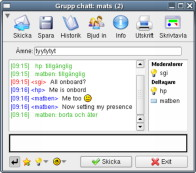
<h3>Essentials</h3>
<ul>	
	<li><a href="http://www.tkdocs.com/resources/backgrounder.html">Tk Backgrounder</a></li>
	<li><a href="http://www.tkdocs.com/tutorial/install.html">Installing Tk</a></li>
	<li><a href="http://www.tkdocs.com/tutorial/index.html">Tutorial</a></li>
	<li><a href="http://www.tkdocs.com/widgets/index.html">Widget Roundup</a></li>
	<li><a href="http://www.tkdocs.com/resources/languages.html">Languages Using Tk</a></li>
	<li><a href="http://www.tcl.tk/man/tcl8.5/TkCmd/contents.htm">Official Tk Command Reference<br>(Tcl-oriented; at www.tcl.tk)</a></li>		
</ul>

<h3>Tutorial</h3>
<form name="langform" id="langform" class="langselector"> 
Show:
<select name="langs" id="languageselect" onchange="adjustView(document.getElementById('languageselect').options[document.getElementById('languageselect').selectedIndex].value);"> 
<option value="tcl">Tcl 
</option><option value="ruby">Ruby
</option><option value="perl">Perl
</option><option value="python">Python
</option><option selected="selected" value="all">All Languages 
</option></select> 
</form>

<ul>
<li><a href="http://www.tkdocs.com/tutorial/index.html">Table of Contents</a></li>
<li><a href="http://www.tkdocs.com/tutorial/intro.html">Introduction</a></li>
<li><a href="http://www.tkdocs.com/tutorial/install.html">Installing Tk</a></li>
<li><a href="http://www.tkdocs.com/tutorial/firstexample.html">A First (Real) Example</a></li>
<li><a href="http://www.tkdocs.com/tutorial/concepts.html">Tk Concepts</a></li>
<li><a href="http://www.tkdocs.com/tutorial/widgets.html">Basic Widgets</a></li>
<li><a href="http://www.tkdocs.com/tutorial/grid.html">The Grid Geometry Manager</a></li>
<li><a href="http://www.tkdocs.com/tutorial/morewidgets.html">More Widgets</a></li>
<li><a href="http://www.tkdocs.com/tutorial/menus.html">Menus</a></li>
<li><a href="http://www.tkdocs.com/tutorial/windows.html">Windows and Dialogs</a></li>
<li><a href="http://www.tkdocs.com/tutorial/complex.html">Organizing Complex Interfaces</a></li>
<li><a href="http://www.tkdocs.com/tutorial/fonts.html">Fonts, Colors, Images</a></li>
<li><a href="http://www.tkdocs.com/tutorial/canvas.html">Canvas</a></li>
<li><a href="http://www.tkdocs.com/tutorial/text.html">Text</a></li>
<li><a href="http://www.tkdocs.com/tutorial/tree.html">Tree</a></li>
<li><a href="http://www.tkdocs.com/tutorial/styles.html">Styles and Themes</a></li>
</ul>


</div></div><div id="left_side"><div class="intro"><div class="pad">
This tutorial will quickly get you up and running with the latest Tk 
from Tcl, Ruby, Perl or Python on Mac, Windows or Linux.
It provides all the essentials about core Tk concepts, the various 
widgets, layout, events and more that you need for your application.


</div></div><div class="mpart">


<script type="text/javascript" src="onepage_archivos/tutorial.js"></script>

<p>&nbsp;</p>
<div class="tutorial">
<p class="nav"><a href="http://www.tkdocs.com/tutorial/index.html">Table of Contents</a></p>


<p> </p><p class="date"></p><h1>Introduction</h1>

<p>
This tutorial is designed to help people get up to speed quickly with building mainstream desktop graphical user 
interfaces with Tk, and in particular Tk 8.5, which is an incredibly significant milestone release.  
</p>
<p>
The downside is that unless you know one or two particular things, it's actually not that significant a release;
For backwards compatibility reasons, unless existing programs make a few simple changes, they won't look all that
much different.  So while this tutorial will certainly benefit newcomers to Tk, it will also help existing Tk 
developers bring their knowledge right up to date.  It's a cliche, but I can't believe how much I've learned in
writing this tutorial, and I've been using Tk for over fifteen years.
</p>
<p>
The general state of Tk documentation (outside the Tcl-oriented reference documentation, which is excellent) is
unfortunately not at a high point these days.  This is particularly true for developers using Tk from languages other than Tcl,
and developers working on multiple platforms.  
</p>
<p>
So this tutorial will, as much as possible, target developers on the three main platforms (Windows, Mac, Linux), and also
be language-neutral. Initially, the tutorial will cover Tcl, Ruby, Perl and Python.
Over time, additional languages may be added.  Even if your own language isn't included, the chances are you'll still
benefit; since all the languages use the same underlying Tk library, there's obviously a lot of overlap.
</p>
<p>
This is also not a reference guide, it's not going to cover everything, just the essentials you need in 95%
of applications.  The rest you can find in reference documentation.
</p>

 <p><a name="audience"></a>&nbsp;</p><h2>Who this Tutorial is for</h2>
<p>
This tutorial is designed for developers building tools and applications in Tk.  It's also concerned with fairly
mainstream graphical user interfaces, with buttons, lists, checkboxes, richtext editing, 2D graphics and so on.
So if you're either looking to hack on Tk's internal C code, or build the next great 3D immersive game interface,
this is probably not the material for you.
</p>
<p>
This tutorial also doesn't teach you the underlying programming language (Tcl, Ruby, Perl, Python, etc.), so you should
have a basic grasp on that already.  Similarly, you should have a basic familiarity with desktop applications in
general, and while you don't have to be a user interface designer, some appreciation of GUI design is always helpful.
</p>
 <p><a name="bestpractices"></a>&nbsp;</p><h2>Modern Best Practices</h2>
<p>
This tutorial is all about building modern Tk user interfaces using the current tools Tk has to offer.  It's all about
the best practices you need to know to do this.
</p>
<p>
For most tools, you wouldn't think you'd have to say something like that, but for Tk that's not the case.  Tk has had
a very long evolution (see <a href="http://www.tkdocs.com/resources/backgrounder.html">Tk Backgrounder</a>), and any evolution
tends to leave you with a bit of cruft; couple that with how much graphical user interface platforms and standards
have evolved in that time, and you can see where keeping something as large and complex as a GUI library up to date
as well as backwards compatible may be challenging.
</p>
<p>
Tk has, in recent years, gotten a bad rap, to put it mildly.  Some of this has been well deserved, most of it not so
much.  Like any GUI tool, it can be used to create absolutely terrible looking and outdated user interfaces, but with the proper
care and attention, it can also be used to create spectacularly good ones as well.  Most people know about the crappy
ones; most of the good ones people don't even know are done in Tk.  In this tutorial, we're going to focus on what
you need to build good user interfaces, which isn't nearly as hard as it used to be before Tk 8.5.
</p>
<p>
So modern desktop graphical user interfaces, using modern conventions and design sense, using the modern tools
provided by Tk 8.5.
</p>
<h3>Tk Extensions</h3>
<p>
When it comes to modern best practices, Tk extensions deserve a special word of note.  Over the years, a number of
groups have provided all kinds of add-ons to Tk, for example adding new widgets not available in the core (or at
least not at the time).  Some well-known and quite popular Tk extensions include BLT, Tix, iWidgets, BWidgets; 
there are many, many others.  
</p>
<p>
Many of these extensions were created years ago.  Because core Tk has always been highly backwards compatible,
these extensions generally continue to work with newer versions.  However, many have not been updated, or not been
significantly updated, in a long time.  They may not reflect current platform conventions or styles, and so
while they "work", they can make your application appear extremely dated or out of place.
</p>
<p>
If you do decide to use Tk extensions, it's highly recommended that you investigate and review your choices carefully.
</p>

 <p><a name="betterway"></a>&nbsp;</p><h2>The Better Way Forward</h2>
<p>
Tk also gives you a lot of choices.  There are at least six different ways to layout widgets on the screen, 
often multiple different widgets that could accomplish the same thing, especially if you count the huge assortment
of Tk extensions like Tix, BLT, BWidgets, Itk and others.  Most of these also are older, most not updated
and therefore crappy looking, and in many cases, the facilities they provide have been obsoleted by newer 
and more modern facilities recently built into Tk itself.  But for backwards compatibility reasons, most of these
old ways of doing things still keep working, year after year.  That doesn't necessarily mean people should still be 
using some of them.
</p>
<p>
So there are a lot of choices in Tk, but frankly, all that choice gets in the way.  If you want to learn and use Tk,
you don't need all the choices, you need the <em>right</em> choice, so you don't have to do all the research and
make that choice yourself.  That's what this tutorial will give you.  Think of it as the documentation equivalent of 
<a href="http://gettingreal.37signals.com/ch04_Make_Opinionated_Software.php">opinionated software</a>.
So we'll often use different ways of doing things than in other documentation or examples; often, it's because
when those were written, the better ways didn't even exist yet.
Later on, once you're an expert, and you're encountering some wacky situation where the normal choice doesn't fit,
you can go hunt around for alternatives.
</p>

 <p><a name="usage"></a>&nbsp;</p><h2>How to Use</h2>

<p>
While the tutorial is designed to be used linearly, feel free to jump around as you see fit.  We'll often
provide links where you can go for more information, whether links to other documentation on this site,
such as our "widget roundup" providing usage info on each Tk widget, or to external documentation, such as
the full reference for a particular command.
</p>
<p>
The tutorial also lets you select what language (Tcl, Ruby, Perl or Python) to show.  You can change this by the "Show:"
popup menu which is located in the sidebar, near the top right of each page in the tutorial.  But it also lets you see how
Tk is used by all the different languages, which can itself be quite interesting and useful.
</p>

<h3>Conventions</h3>
<p>
As is typically done, code listings, interpreter or shell commands and responses will be indicated
with a <tt>fixed-width font</tt>.  When showing an interactive session with the interpreter, the 
parts that you enter will additionally be in <tt><b>bold fixed-width</b></tt>.
</p>
<p>
When describing procedure or method calls, the literal parts (e.g. the method name) will be in
plain fixed-width font, parameters where you should fill in the actual value will add italics,
and optional parameters will be surrounded by '?', e.g. <tt>"set <em>variable ?value?</em>"</tt>.
</p>
<p>
A number of icons appearing to the left of text are used, as follows:
</p>
<div class="tcl"><p>
This paragraph consists of material that is specific to the Tcl binding to Tk.
</p></div>
<div class="ruby"><p>
This paragraph consists of material that is specific to the Ruby binding to Tk.
</p></div>
<div class="perl"><p>
This paragraph consists of material that is specific to the Perl binding to Tk.
</p></div>
<div class="python"><p>
This paragraph consists of material that is specific to the Python binding to Tk.
</p></div>
<p class="tip">
This paragraph will help point out common mistakes that people make, or suggest useful but not
necessarily obvious solutions related to the topic.
</p>
<p class="upgrade">
This indicates a new way of doing things in Tk 8.5 that is very different from the way things
would have been done previously.  People familiar with older versions of Tk, or working on 
programs developed with older versions of Tk, should pay close attention.
</p>
<p class="fyi">
This paragraph provides some additional background information, not strictly necessary to understanding
the topic at hand, but that might help you understand a bit more about how or why things are done the
way they are.
</p>
<p class="oops">
This indicates some error in the tutorial itself which hasn't yet been corrected, or a section that
has been deleted but not yet replaced.
</p>
<p class="yuck">
This indicates an area in Tk that could most charitably be described as a "rough edge".  It may indicate a
bad or missing API requiring you to use a workaround in your code.  Because these things tend to get
fixed up over time, it's worth marking them in your code with a "TODO" so you can remember to go
back later and see if a newer API resolves the problem cleanly. 
</p>


<p> </p><p class="date"></p><h1>Installing Tk</h1>

<p>
In this chapter, you'll get Tk installed on your machine, verify it works, and then see a quick
example of what a Tk program looks like.
</p>
<p>
Though pretty much all Mac OS X and Linux machines come with Tk installed already, it's usually an
older version (typically 8.4.x).  You want to make sure you've got at least version 8.5 to use the 
new widget set, so if that's not already there, you'll want to install the newer version.
</p>
<p>
Though there are lots of ways to install Tk, the easiest is to download and install one of the 
versions provided by ActiveState (<a href="http://www.activestate.com/">www.activestate.com</a>).
</p>
<p class="fyi">
ActiveState is a company that sells professional developer tools for dynamic languages.  They also provide
(for free) quality-controlled distributions of some of these languages, and happen to employ
a number of core developers of these languages.
</p>

 <p><a name="installmac"></a>&nbsp;</p><h2>Installing Tk on Mac OS X</h2>

<div class="tcl">
<p>	
On Mac OS X, the easiest way to get Tk is to install the "ActiveTcl" distribution from ActiveState, 
which includes Tcl, Tk, plus a number of other extension libraries.
</p>
<p>
In your web browser, go to <a href="http://www.activestate.com/">www.activestate.com</a>, and follow
along the links to download the standard version of ActiveTcl, available as a universal binary.
Make sure you're downloading an 8.5.x version, not an older 8.4.x version.
</p>
<p>
Run the installer to get everything loaded onto your machine.
When you're done, you'll find a shiny new application called "Wish 8.5" inside the Utilities
folder of your Applications folder.  This is the "wish" shell, an application that includes
both Tcl and Tk.
</p>
<p>
If you launch that application, you'll see two windows popup (see below), one titled "Wish" which will
contain your application, and the second titled "Console" which is where you can type in
Tcl/Tk commands.
</p>
<p class="picture">
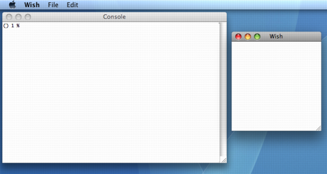<br>
The Wish application running on Mac OS X.
</p>
<p>
For convenient use from the Unix command line, you'll also find a script installed as
/usr/local/bin/wish8.5 which will launch the same application.
</p></div>

<div class="ruby">
<p>
Installing Tk for Ruby on Mac OS X is one of those "good news, bad news" situations.
The good news is that both are actually already installed in the base operating system (in 
Tiger and Leopard).  The bad news is that it's an older version of Tk (8.4.7), whereas we
<em>really</em> want an 8.5 version.
</p>
<p>
To check to see exactly what version of Tk your copy of Ruby is using, from 'irb' run:
</p><pre>require 'tk'
Tk::TK_PATCHLEVEL
</pre>
In an ideal world, this should return 8.5.0 or newer.  But it will probably tell you it's
an older version.
<p></p>
<p class="fyi">
The new themed widgets set in Tk 8.5 is derived from a Tk extension called Tile. Tile has
been available for Tk 8.4.x, and has been bundled with Ruby's Tk bindings.  Despite
this, let me emphasize again that you really want a current 8.5.x version of Tk.
</p>
<p>
RubyTk is a binding that links against an existing but separate Tk library.  So, to get the 
latest version of Tk for Ruby, we're going to have to do two things, first download the
latest 8.5.x Tcl/Tk version from ActiveState, and then compile (or re-compile) Ruby to 
use it.
</p>

<h3>Install ActiveTcl</h3>
<p>
The "ActiveTcl" distribution from ActiveState contains the latest Tk, as well as the latest
version of Tcl (which Ruby's Tk bindings use internally to talk to Tk).  In your web browser, 
go to <a href="http://www.activestate.com/">www.activestate.com</a>, and follow along the links 
to download the standard version of ActiveTcl, available as a universal binary.  Again, make
sure you're downloading an 8.5.x version, not an older 8.4.x version.
</p>
<p>
Run the installer and everything will be loaded onto your machine.
</p>

<h3>Recompile Ruby</h3>
<p>
Make sure you've got Apple's developer tools (i.e. Xcode, which includes gcc and friends).
Then if you haven't already got it, go to <a href="http://www.ruby-lang.org/">www.ruby-lang.org</a>
to download the latest stable (1.8.x, not 1.9.x) version of Ruby.
</p>
<p>
Unpack it, and then from the Unix command line, run (note that the "configure" command should all
be entered on one line, the &lt;install-dir&gt; should be replaced with the location you'd like
your version of Ruby installed:
</p><pre>% <b>./configure --prefix=<u>&lt;install-dir&gt;</u>
		  --with-tcltk-framework=/Library/Frameworks
		  --enable-pthread
		  --enable-shared</b>
% <b>make &amp;&amp; make install</b>
</pre>
<p></p>
<p class="fyi">
The "/Library/Frameworks" directory is where ActiveTcl installs its libraries, as opposed
to "/System/Library/Frameworks" which is used by the version of Tcl/Tk that comes with OS X.
</p>
<p class="tip">
	 Some users have reported that they needed to add <tt>CFLAGS=-D_XOPEN_SOURCE=1</tt> to the <tt>./configure</tt> line.
	 Try that if you find yourself getting errors when compiling.
</p>
<p>
To verify that everything worked, start up your newly compiled copy of 'irb', and type:
</p><pre>% <b>require 'tk'</b>
% <b>Tk::TK_PATCHLEVEL</b>
</pre>
<p></p>
<p>
The first line should load RubyTk; typically if there was a problem with compiling it
would show up here.  The second line will return the version of Tk that you're running,
which should be something like "8.5.2".
</p>
<p class="fyi">
Verified steps using ActiveTcl 8.5.2, and Ruby 1.8.7.
</p>

</div>

<div class="perl">
<p>
For modern Tk programming using Perl, the "Tkx" module is highly recommended, and we'll
be using that here.  The easiest way to get set up is to use the "ActivePerl"  
distribution from <a href="http://www.activestate.com/">www.activestate.com</a>.
</p>	

<h3>Install ActivePerl &gt;= 5.10</h3>
<p>
The "ActivePerl" distribution from ActiveState includes not only Perl, but also recent versions of
Tk and Tcl (which Tkx uses internally to talk to Tk).  In your web browser, 
go to <a href="http://www.activestate.com/">www.activestate.com</a>, and follow along the links 
to download the standard version of ActivePerl, available as a universal binary.
</p>
<p>
Run the installer and everything will be loaded onto your machine.
</p>

<p>
To find out what version of Tk Perl and Tkx are using, run this from the command line:
</p><pre>% <b>perl -MTkx -e 'print Tkx::info("patchlevel");'</b>
</pre>
<p></p>	
<p>
We want this to be returning something like "8.5.4".
</p>
<p class="tip">
Versions of ActivePerl prior to 5.10 (and some of the first 5.10 builds) included earlier versions of 
Tcl/Tk (8.4.x rather than 8.5.x).   We therefore <b>very highly recommend</b> upgrading to at least ActivePerl 5.10,
and verify that you do have Tk 8.5 or newer.
</p>

</div>

<div class="python">PYTHONTODO</div>

 <p><a name="installwin"></a>&nbsp;</p><h2>Installing Tk on Windows</h2>
<div class="tcl">
<p>	
On Windows, the easiest way to get Tcl/Tk onto your machine is to install the "ActiveTcl" distribution 
from ActiveState, which includes Tcl, Tk, plus a number of other extension libraries.
</p>
<p>
In your web browser, go to <a href="http://www.activestate.com/">www.activestate.com</a>, and follow
along the links to download the standard version of ActiveTcl for Windows.  Make sure you're downloading 
an 8.5.x version, not an older 8.4.x version.
</p>
<p>
Run the installer, and follow along.  You'll end up with a fresh install
of ActiveTcl, usually located in C:\Tcl.  From a DOS command prompt, or the Start Menu's "Run..." command,
you should then be able to run a Tcl/Tk 8.5 shell via:
</p><pre>% <b>C:\Tcl\bin\wish85</b>
</pre>
<p></p>
<p>
This should pop up a small window titled "wish85", which will contain your application.  A second, larger window
titled "Console" is where you can type in Tcl/Tk commands.  Type "exit" in the console window to exit.
You may also want to add C:\Tcl\bin to your PATH environment variable.
</p>
</div>

<div class="ruby">
<p>
RubyTk is a binding that links against an existing but separate Tk library.  So, to get the 
latest version of Tk for Ruby, we're going to have to do two things, first download the
latest 8.5.x Tcl/Tk version from ActiveState, and then compile Ruby to use it.
</p>
<h3>Install ActiveTcl</h3>
<p>
The "ActiveTcl" distribution from ActiveState contains the latest Tk, as well as the latest
version of Tcl (which Ruby's Tk bindings use internally to talk to Tk).  In your web browser, 
go to <a href="http://www.activestate.com/">www.activestate.com</a>, and follow along the links 
to download the standard version of ActiveTcl for Windows.  Again, make
sure you're downloading an 8.5.x version, not an older 8.4.x version.
</p>
<p>
Run the installer and ActiveTcl will be loaded onto your machine, in "C:\Tcl".
</p>
<h3>Compile Ruby</h3>
<p>
In this section, we'll describe how to compile Ruby using Visual C++ (usually available as 
part of Visual Studio).
</p>	
<p class="fyi">
Yes, it can be done using tools like cygwin, but I still recommend doing it with Visual C++.
This shouldn't be an issue even for the rabid "free software" types since they wouldn't 
touch a Windows machine anyway...
</p>
<p class="tip">
Compiling Ruby so that it finds the correct Tk distribution and so on is incredibly finicky,
and depends on environment variables that have to be defined before compiling.  If everything
isn't just right, it will compile okay, but doing "require 'tk'" will fail.
</p>
<h4>Install Visual C++</h4>	
<p>
Make sure you have a version of Visual C++ installed on your machine, including the command
line tools (e.g. nmake).  This can be done for example by installing Visual Studio.
</p>
<p class="tip">
Even fairly old versions (but at least 5.0) of Visual C++ should work.  As well, Microsoft does offer
an <a href="http://www.microsoft.com/express/vc/">"Express" edition</a> of Visual C++ for free, which 
also works just fine.
</p>
<p>
Make sure the Visual C++ environment variables are set, and that the Visual C++ tools are in
your PATH; this can normally be done by running the "vcvars32.bat" script that is installed
as part of Visual C++ (depending on your system, you may need to use the "vcvarsall.bat" script instead).
</p>	
<h4>Download Ruby Source</h4>
<p>
Go to <a href="http://www.ruby-lang.org/">www.ruby-lang.org</a> and download the latest stable (1.8.x, not 1.9.x) 
<em>source code</em> version of Ruby.
</p>
<p>
Create a directory that will contain both the source and compiled version, e.g. "C:\ruby".  Unpack the source
into a subdirectory of that e.g. "C:\ruby\ruby187".  
</p>
<p class="tip">
The download will be in the form of a ".tar.gz" or ".tar.bz2" file; Winzip can unpack this for you.
</p>
<h4>Set Environment Variables</h4>
<p>
Open a command line, and execute the following DOS commands.  Again, this is so that when you compile
Ruby it will find the appropriate version of Tcl/Tk on your system.  We add these items to the beginning
of each environment variable to ensure they are found before anything else that might already by on
our paths.
</p>
<pre>set INCLUDE=c:\tcl\include;%INCLUDE%
set LIB=c:\ruby\lib;c:\tcl\lib;%LIB%
set LIBPATH=c:\ruby\lib;c:\tcl\bin;c:\tcl\lib;%LIBPATH%
set PATH=c:\ruby\bin;c:\tcl\bin;%PATH%
set RUBYPATH=c:\ruby
</pre>
<p class="tip">
You and your users will probably want most of these environment variables set to run your
program, even after you've compiled Ruby.  If you later get errors, particularly when trying
to do a "require 'tk'", checking these environment variables is a good first step at troubleshooting.
</p>
<p></p>
<h4>Compile and Install</h4>
<p>
In the same command line window, type the following:
</p>
<pre>cd \ruby\ruby187
win32\configure.bat --prefix=c:\ruby
nmake
nmake DESTDIR=c:\ruby install
</pre>
<p>
To verify that everything worked, start up your newly compiled copy of 'irb' (which would have been
installed in "c:\ruby\bin" which is on your PATH), and type:
</p><pre>% <b>require 'tk'</b>
% <b>Tk::TK_PATCHLEVEL</b>
</pre>
<p></p>
<p>
The first line should load RubyTk; typically if there was a problem with compiling it
would show up here.  The second line will return the version of Tk that you're running,
which should be something like "8.5.2".
</p>
</div>


<div class="perl">
<p>
For modern Tk programming using Perl, the "Tkx" module is highly recommended, and we'll
be using that here.  The easiest way to get set up is to use the "ActivePerl"  
distribution from <a href="http://www.activestate.com/">www.activestate.com</a>.
</p>	

<h3>Install ActivePerl &gt;= 5.10</h3>
<p>
The "ActivePerl" distribution from ActiveState includes not only Perl, but also recent versions of
Tk and Tcl (which Tkx uses internally to talk to Tk).  In your web browser, 
go to <a href="http://www.activestate.com/">www.activestate.com</a>, and follow along the links 
to download the standard version of ActivePerl.
</p>
<p>
Run the installer and everything will be loaded onto your machine.
</p>
<p>
To find out what version of Tk Perl and Tkx are using, run this from the command line:
</p><pre>% <b>perl -MTkx -e 'print Tkx::info("patchlevel");'</b>
</pre>
<p></p>	
<p>
We want this to be returning something like "8.5.4".
</p>
<p class="tip">
Versions of ActivePerl prior to 5.10 (and some of the first 5.10 builds) included earlier versions of 
Tcl/Tk (8.4.x rather than 8.5.x).   We therefore <b>very highly recommend</b> upgrading to at least ActivePerl 5.10,
and verify that you do have Tk 8.5 or newer.
</p>

</div>

<div class="python">
<p>	
Tkinter (and, since Python 3.1, ttk) are included with all standard Python distributions.  It is important
that you use a version of Python supporting Tk 8.5 or greater, and ttk.  We recommend installing the
"ActivePython" distribution from ActiveState, which includes everything you'll need.
</p>
<p>
In your web browser, go to <a href="http://www.activestate.com/">www.activestate.com</a>, and follow
along the links to download the standard version of ActivePython for Windows.  Make sure you're downloading 
a 3.1 or newer version.
</p>
<p>
Run the installer, and follow along.  You'll end up with a fresh install
of ActivePython, usually located in C:\python31.  From a DOS command prompt, or the Start Menu's "Run..." command,
you should then be able to run a Python shell via:
</p><pre>% <b>C:\python31\python</b>
</pre>
<p></p>
<p>
This should give you the Python command prompt.  From the prompt, enter these two commands:  
</p><pre>&gt;&gt;&gt; <b>import tkinter</b>
&gt;&gt;&gt; <b>tkinter._test()</b>
</pre>
<p></p>	
<p>
This should pop up a small window; the first line at the top of the window should say "This is Tcl/Tk version 8.5"; make
sure it is not 8.4!
</p>
</div>


 <p><a name="installlinux"></a>&nbsp;</p><h2>Installing Tk on Linux</h2>

<div class="tcl">
<p>	
While Linux distributions pretty much all come with Tcl/Tk installed, most include Tk 8.4.x, and we 
want to make sure to get an 8.5.x version.  The easiest way to do this is to install the "ActiveTcl" distribution 
from ActiveState, which includes Tcl, Tk, plus a number of other extension libraries.
</p>
<p>
In your web browser, go to <a href="http://www.activestate.com/">www.activestate.com</a>, and follow
along the links to download the standard version of ActiveTcl for Linux.  Make sure you're downloading 
an 8.5.x version, not an older 8.4.x version.
</p>
<p>
Unpack it, and run the installer (install.sh), and follow along.  You'll end up with a fresh install
of ActiveTcl, located in /opt/ActiveTcl-8.5.  You should then be able to run a Tcl/Tk 8.5 shell via:
</p><pre>% <b>/opt/ActiveTcl-8.5/bin/wish8.5</b>
</pre>
<p></p>
<p>
This should pop up a window titled "wish8.5".  Type a control-D at the prompt in the terminal window
to exit.  You may also want to add /opt/ActiveTcl-8.5/bin to your Unix path.
</p>
</div>

<div class="ruby">
<p>	
While Linux distributions pretty much all come with Tk installed, and most with Ruby as well, we want 
to make sure to get the latest version, especially of Tk.  
</p>
<p>
RubyTk is a binding that links against an existing but separate Tk library.  So, to get the 
latest version of Tk for Ruby, we're going to have to do two things, first download the
latest 8.5.x Tcl/Tk version from ActiveState, and then compile (or re-compile) Ruby to 
use it.
</p>
<h3>Install ActiveTcl</h3>
<p>
The "ActiveTcl" distribution from ActiveState contains the latest Tk, as well as the latest
version of Tcl (which Ruby's Tk bindings use internally to talk to Tk).  In your web browser, 
go to <a href="http://www.activestate.com/">www.activestate.com</a>, and follow along the links 
to download the standard version of ActiveTcl for Linux.  Again, make
sure you're downloading an 8.5.x version, not an older 8.4.x version.
</p>
<p>
Unpack it, and run the installer (install.sh), and follow along.  You'll end up with a fresh install
of ActiveTcl, located in /opt/ActiveTcl-8.5.  
</p>
<h3>Recompile Ruby</h3>
<p>
Then if you haven't already got it, go to <a href="http://www.ruby-lang.org/">www.ruby-lang.org</a>
to download the latest stable (1.8.x, not 1.9.x) version of Ruby.  
</p>
<p>
Unpack it, and then from the Unix command line, run (note that the "configure" command should all
be entered on one line, the &lt;install-dir&gt; should be replaced with the location you'd like
your version of Ruby installed, and note also the underscore in "--enable-tcltk_stubs"):
</p><pre>% <b>./configure --prefix=<u>&lt;install-dir&gt;</u>
	  --with-tcl-dir=/opt/ActiveTcl-8.5
	  --with-tk-dir=/opt/ActiveTcl-8.5
	  --with-tcllib=tclstub8.5 
	  --with-tklib=tkstub8.5
	  --enable-tcltk_stubs
	  --enable-tcl-thread
	  --enable-pthread</b>
% <b>make &amp;&amp; make install</b>
</pre>
<p></p>

<p>
To verify that everything worked, start up your newly compiled copy of 'irb', and type:
</p><pre>% <b>require 'tk'</b>
% <b>Tk::TK_PATCHLEVEL</b>
</pre>
<p></p>
<p>
The first line should load RubyTk; typically if there was a problem with compiling it
would show up here.  The second line will return the version of Tk that you're running,
which should be something like "8.5.2".
</p>
	
</div>


<div class="perl">
<p>
For modern Tk programming using Perl, the "Tkx" module is highly recommended, and we'll
be using that here.  The easiest way to get set up is to use the "ActivePerl"  
distribution from <a href="http://www.activestate.com/">www.activestate.com</a>.
</p>	

<h3>Install ActivePerl &gt;= 5.10</h3>
<p>
The "ActivePerl" distribution from ActiveState includes not only Perl, but also recent versions of
Tk and Tcl (which Tkx uses internally to talk to Tk).  In your web browser, 
go to <a href="http://www.activestate.com/">www.activestate.com</a>, and follow along the links 
to download the standard version of ActivePerl.
</p>
<p>
Run the installer and everything will be loaded onto your machine.
</p>
<p>
To find out what version of Tk Perl and Tkx are using, run this from the command line:
</p><pre>% <b>perl -MTkx -e 'print Tkx::info("patchlevel");'</b>
</pre>
<p></p>	
<p>
We want this to be returning something like "8.5.4".
</p>
<p class="tip">
Versions of ActivePerl prior to 5.10 (and some of the first 5.10 builds) included earlier versions of 
Tcl/Tk (8.4.x rather than 8.5.x).   We therefore <b>very highly recommend</b> upgrading to at least ActivePerl 5.10,
and verify that you do have Tk 8.5 or newer.
</p>
</div>

<div class="python">
<p>	
Tkinter (and, since Python 3.1, ttk) are included with all standard Python distributions.  It is important
that you use a version of Python supporting Tk 8.5 or greater, and ttk.  We recommend installing the
"ActivePython" distribution from ActiveState, which includes everything you'll need.
</p>
<p>
In your web browser, go to <a href="http://www.activestate.com/">www.activestate.com</a>, and follow
along the links to download the standard version of ActivePython for Linux.  Make sure you're downloading 
a 3.1 or newer version.
</p>
<p>
Unpack it, run the installer (./install.sh), and follow along.  You'll 
end up with a fresh install
of ActivePython, usually located in /opt/ActivePython-3.1.  From a 
Terminal window you should then be able to run a Python shell via:
</p><pre>% <b>/opt/ActivePython-3.1/bin/python3.1</b>
</pre>
<p></p>
<p>
This should give you the Python command prompt.  From the prompt, enter these two commands:  
</p><pre>&gt;&gt;&gt; <b>import tkinter</b>
&gt;&gt;&gt; <b>tkinter._test()</b>
</pre>
<p></p>	
<p>
This should pop up a small window; the first line at the top of the window should say "This is Tcl/Tk version 8.5"; make
sure it is not 8.4!
</p>
	
</div>


 <p><a name="helloworld"></a>&nbsp;</p><h2>The Obligatory First Program</h2>

<p>
To make sure that everything actually did work, let's try to run a "Hello World"
program in Tk.  While for something this short you could just type it in directly
to the interpreter, instead use your favorite text editor to put it in a file.
</p>
<div class="tcl">
<pre>package require Tk
grid [ttk::button .b -text "Hello World"] 
</pre>
<p>
Save this to a file named 'hello.tcl'.  From the wish shell, type:
</p><pre>% <b>source hello.tcl</b>
</pre>
<p></p>
<p class="tip">
Couldn't find hello.tcl?  You might be looking in the wrong directory.  You can
either give the full path to hello.tcl, or use Tcl's "pwd" and "cd" commands to
see what directory you're in, and change to a different one.
</p>
</div>

<div class="ruby">
<pre>require 'tk'
require 'tkextlib/tile'
root = TkRoot.new() 
button = Tk::Tile::TButton.new(root) {text "Hello World"}.grid
Tk.mainloop()
</pre>
<p>
Save this to a file named 'hello.rb'.  Start up 'irb', and from the command
prompt, type:
</p><pre>% <b>source "hello.rb"</b>
</pre>
<p></p>
<p class="tip">
Couldn't find hello.rb?  You might be looking in the wrong directory.  You can
either give the full path to hello.rb, or use Ruby's "Dir.pwd" and "Dir.chdir" commands to
see what directory you're in, and change to a different one.
</p>
</div>
<div class="perl">
<pre>use Tkx;
Tkx::grid( Tkx::ttk__button(".b", -text =&gt; "Hello, world" ) );
Tkx::MainLoop();
</pre>
<p class="tip">Note that there are <b>two</b> underscores between "ttk" and "button".
</p><p>
Save this to a file named 'hello.pl'.  From a command prompt, type:
</p><pre>% <b>perl hello.pl</b>
</pre>
<p></p>
<p class="tip">
Couldn't find hello.pl?  You might be looking in the wrong directory.  Try providing
the full path to hello.pl.
</p>
<p class="tip">
Not working?  Are you sure you're using an 8.5.x version of Tcl/Tk?  See the install
chapter...
</p>

</div>


<div class="python">
<pre>from tkinter import *
from tkinter import ttk
root = Tk()
button = ttk.Button(root, text="Hello World").grid()
root.mainloop()
</pre>	
<p>
Save this to a file named 'hello.py'.  From a command prompt, type:
</p><pre>% <b>python hello.py</b>
</pre>
<p></p>
<p class="tip">
Couldn't find hello.py?  You might be looking in the wrong directory.  Try providing
the full path to hello.py.
</p>
</div>


<p class="picture">
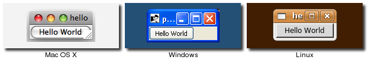<br>
Our First Program.  Some work left to do before the IPO.
</p>


<p> </p><p class="date"></p><h1>A First (Real) Example</h1>
<p>
With that out of the way, let's try a slightly more useful example, which will give you an
initial feel for what the code behind a Tk program looks like.
</p>
 <p><a name="design"></a>&nbsp;</p><h2>Design</h2>
<p>
The example we'll use is a simple GUI tool that will convert a number of feet to the equivalent
number of meters.   If we were to sketch this out, it might look something like this:
</p>
<p class="picture">
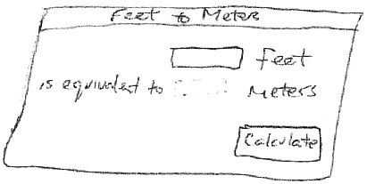<br>
A sketch of our feet to meters conversion program.
</p>
<p>
So it looks like we have a short text entry widget that will let us type in the number of
feet, and a 'Calculate' button that will get the value out of that entry, perform the
calculation, and then put the resulting number of meters on the screen just below where
the entry is.  We've also got three static labels ("feet", "is equivalent to", and "meters")
which help our user figure out how to use the interface.
</p>
<p>
In terms of layout, things seem to naturally divide into three columns and three rows:
</p>
<p class="picture">
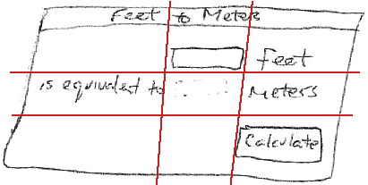<br>
The layout of our user interface, which follows a 3 x 3 grid.
</p>

 <p><a name="code"></a>&nbsp;</p><h2>Code</h2>
<div class="tcl">
<p>
Now here is the Tcl/Tk code to create this program.
</p>
<pre>package require Tk

wm title . "Feet to Meters"
grid [ttk::frame .c -padding "3 3 12 12"] -column 0 -row 0 -sticky nwes
grid columnconfigure . 0 -weight 1; grid rowconfigure . 0 -weight 1

grid [ttk::entry .c.feet -width 7 -textvariable feet] -column 2 -row 1 -sticky we
grid [ttk::label .c.meters -textvariable meters] -column 2 -row 2 -sticky we
grid [ttk::button .c.calc -text "Calculate" -command calculate] -column 3 -row 3 -sticky w

grid [ttk::label .c.flbl -text "feet"] -column 3 -row 1 -sticky w
grid [ttk::label .c.islbl -text "is equivalent to"] -column 1 -row 2 -sticky e
grid [ttk::label .c.mlbl -text "meters"] -column 3 -row 2 -sticky w

foreach w [winfo children .c] {grid configure $w -padx 5 -pady 5}
focus .c.feet
bind . &lt;Return&gt; {calculate}

proc calculate {} {  
   if {[catch {
       set ::meters [expr {round($::feet*0.3048*10000.0)/10000.0}]
   }]!=0} {
       set ::meters ""
   }
}

</pre>
</div>
<div class="ruby">
<p>
Now here is the RubyTk code to create this program.
</p>
<pre>require 'tk'
require 'tkextlib/tile'

root = TkRoot.new {title "Feet to Meters"}
content = Tk::Tile::Frame.new(root) {padding "3 3 12 12"}.grid( :sticky =&gt; 'nsew')
TkGrid.columnconfigure root, 0, :weight =&gt; 1; TkGrid.rowconfigure root, 0, :weight =&gt; 1

$feet = TkVariable.new; $meters = TkVariable.new
f = Tk::Tile::Entry.new(content) {width 7; textvariable $feet}.grid( :column =&gt; 2, :row =&gt; 1, :sticky =&gt; 'we' )
Tk::Tile::Label.new(content) {textvariable $meters}.grid( :column =&gt; 2, :row =&gt; 2, :sticky =&gt; 'we');
Tk::Tile::Button.new(content) {text 'Calculate'; command {calculate}}.grid( :column =&gt; 3, :row =&gt; 3, :sticky =&gt; 'w')

Tk::Tile::Label.new(content) {text 'feet'}.grid( :column =&gt; 3, :row =&gt; 1, :sticky =&gt; 'w')
Tk::Tile::Label.new(content) {text 'is equivalent to'}.grid( :column =&gt; 1, :row =&gt; 2, :sticky =&gt; 'e')
Tk::Tile::Label.new(content) {text 'meters'}.grid( :column =&gt; 3, :row =&gt; 2, :sticky =&gt; 'w')

TkWinfo.children(content).each {|w| TkGrid.configure w, :padx =&gt; 5, :pady =&gt; 5}
f.focus
root.bind("Return") {calculate}

def calculate
  begin
     $meters.value = (0.3048*$feet*10000.0).round()/10000.0
  rescue
     $meters.value = ''
  end
end

Tk.mainloop

</pre>
</div>
<div class="perl">
<p>
Now here is the Perl code to create this program.
</p>
<pre>use Tkx;

Tkx::wm_title(".", "Feet to Meters");
Tkx::ttk__frame(".c",  -padding =&gt; "3 3 12 12");
Tkx::grid( ".c", -column =&gt; 0, -row =&gt; 0, -sticky =&gt; "nwes");
Tkx::grid_columnconfigure( ".", 0, -weight =&gt; 1); 
Tkx::grid_rowconfigure(".", 0, -weight =&gt; 1);

Tkx::ttk__entry(".c.feet", -width =&gt; 7, -textvariable =&gt; \$feet);
Tkx::grid(".c.feet", -column =&gt; 2, -row =&gt; 1, -sticky =&gt; "we");
Tkx::ttk__label(".c.meters", -textvariable =&gt; \$meters);
Tkx::grid(".c.meters", -column =&gt; 2, -row =&gt; 2, -sticky =&gt; "we");
Tkx::ttk__button(".c.calc", -text =&gt; "Calculate", -command =&gt; sub {calculate();});
Tkx::grid(".c.calc", -column =&gt; 3, -row =&gt; 3, -sticky =&gt; "w");

Tkx::grid( Tkx::ttk__label(".c.flbl", -text =&gt; "feet"), -column =&gt; 3, -row =&gt; 1, -sticky =&gt; "w");
Tkx::grid( Tkx::ttk__label(".c.islbl", -text =&gt; "is equivalent to"), -column =&gt; 1, -row =&gt; 2, -sticky =&gt; "e");
Tkx::grid( Tkx::ttk__label(".c.mlbl", -text =&gt; "meters"), -column =&gt; 3, -row =&gt; 2, -sticky =&gt; "w");

foreach (Tkx::SplitList(Tkx::winfo_children(".c"))) {
    Tkx::grid_configure($_, -padx =&gt; 5, -pady =&gt; 5);
}
Tkx::focus(".c.feet");
Tkx::bind(".", "&lt;Return&gt;", sub {calculate();});

sub calculate {
   $meters = int(0.3048*$feet*10000.0+.5)/10000.0 || '';
}

Tkx::MainLoop();
</pre>
<p class="fyi">
As we'll see in the next chapter, there's another, more object-oriented way to do exactly the same thing.
Are we surprised?
</p>
</div>

<div class="python">
<p>
Now here is the Python code to create this program.
</p>
<pre>from tkinter import *
from tkinter import ttk

def calculate(*args):
    try:
        value = float(feet.get())
        meters.set((0.3048 * value * 10000.0 + 0.5)/10000.0)
    except ValueError:
        pass
    
root = Tk()
root.title("Feet to Meters")

mainframe = ttk.Frame(root, padding="3 3 12 12")
mainframe.grid(column=0, row=0, sticky=(N, W, E, S))
mainframe.columnconfigure(0, weight=1)
mainframe.rowconfigure(0, weight=1)

feet = StringVar()
meters = StringVar()

feet_entry = ttk.Entry(mainframe, width=7, textvariable=feet)
feet_entry.grid(column=2, row=1, sticky=(W, E))

ttk.Label(mainframe, textvariable=meters).grid(column=2, row=2, sticky=(W, E))
ttk.Button(mainframe, text="Calculate", command=calculate).grid(column=3, row=3, sticky=W)

ttk.Label(mainframe, text="feet").grid(column=3, row=1, sticky=W)
ttk.Label(mainframe, text="is equivalent to").grid(column=1, row=2, sticky=E)
ttk.Label(mainframe, text="meters").grid(column=3, row=2, sticky=W)

for child in mainframe.winfo_children(): child.grid_configure(padx=5, pady=5)

feet_entry.focus()
root.bind('&lt;Return&gt;', calculate)

root.mainloop()
</pre>
	
</div>


<p>
And the resulting user interface:
</p>
<p class="picture">
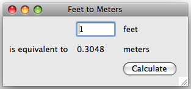<br>
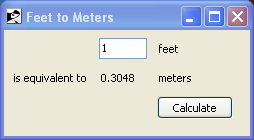<br>
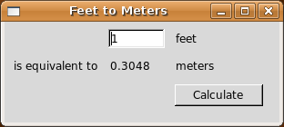<br>

Screenshot of our completed feet to meters user interface (on Mac OS X, Windows and Linux).
</p>
<h3>A Note on Coding Style</h3>
<p>
Each of the languages included in this tutorial has a variety of coding styles and conventions
available to choose from, which help determine conventions for variable and function naming,
procedural, functional or object-oriented styles, and so on.  
</p>
<p>
Because the focus on this tutorial is Tk, this tutorial will keep things as simple
as possible, generally using a very direct coding style, rather than wrapping
up most of our code in procedures, modules, objects, classes and so on.  As much as 
possible, you'll also see the same names for objects, variables, etc. used across the
languages for each example.
</p>


 <p><a name="walkthrough"></a>&nbsp;</p><h2>Step-by-Step Walkthrough</h2>
<p>
Let's take a closer look at that code, piece by piece.  For now, all we're trying to do is get a
basic understanding of the types of things we need to do to create a user interface in Tk, and
roughly what those things look like. We'll go into details later.
</p>
<div class="tcl">
<pre>package require Tk	
</pre>
<p> 
First thing we do is tell Tcl that our program needs Tk.  Though not strictly necessary, it's
considered good form to include this line.  It can also be used to specify exactly what version
of Tk is needed.
</p>
</div>

<div class="ruby">
<pre>require 'tk'
require 'tkextlib/tile'	
</pre>
<p>
These two lines tell Ruby that our program needs two packages. The first, <tt>"tk"</tt>, is the 
Ruby binding to Tk, which when loaded also causes the existing Tk library on your system to be loaded.
The second, <tt>"tkextlib/tile"</tt>, is Ruby Tk's binding to the newer "themed widgets" that were added to Tk
in 8.5.  
</p>
<p class="yuck">
The themed widget set evolved out of an earlier Tk add-on called Tile, hence the nomenclature.
Despite that, the Tk::Tile::* calls you'll see in the programs are actually using the
proper ttk versions in 8.5.  Expect this to get better rationalized in the future.
</p>
</div>

<div class="perl">
<pre>use Tkx;</pre>
<p>
The first thing that we need to do is tell Perl to load the "Tkx" module, which provides the Perl
interface to Tk that we are using.
</p>
<p class="upgrade">
As <a href="http://www.tkdocs.com/resources/languages.html">mentioned here</a>, there are other Perl bindings to Tk.
However, we very strongly recommend using Tkx for development, and that will be the only binding
we will be describing here.  Tkx has the advantage of being a very thin layer above Tk's native
Tcl API, which means that in almost all cases it automatically tracks the latest changes to Tk
(something which became a considerable issue with Perl/Tk, which was extremely popular in earlier
years, but has not been recently updated).  As well, by avoiding introducing another layer of code, 
API errors are reduced, and we can also take advantage of available reference documentation for 
Tk (which is usually Tcl oriented).  
</p>
</div>

<div class="python">
<pre>from tkinter import *
from tkinter import ttk
</pre>
<p>
These two lines tell Python that our program needs two modules. The first, <tt>"tkinter"</tt>, is the 
standard binding to Tk, which when loaded also causes the existing Tk library on your system to be loaded.
The second, <tt>"ttk"</tt>, is Python's binding to the newer "themed widgets" that were added to Tk
in 8.5.  
</p>
<p class="tip">
Notice that we've imported everything from the tkinter module, so that we can call tkinter functions etc. without
prefixing them, which is standard Tkinter practice.  However, because we've imported just <tt>"ttk"</tt>
itself, that means we'll need to prefix anything inside that module.  So for example calling <tt>"Entry(...)"</tt>
would invoke the function inside the tkinter module, while we'd need <tt>"ttk.Entry(...)"</tt> to invoke the
function inside ttk.  As you'll see, several functions are defined in both modules, and sometimes you will need
both, depending on the context.  Making the ttk calls explicit facilitates this, and will be the style used
in this tutorial.
</p>
<p class="upgrade">
One of the first things you'll find if you're migrating new code over, is that the name of the Tkinter module
is now lowercase, i.e. "tkinter", rather than "Tkinter".  This was changed as of Python 3.0.
</p>
</div>


<div class="tcl"><pre>wm title . "Feet to Meters"
grid [ttk::frame .c -padding "3 3 12 12"] -column 0 -row 0 -sticky nwes
grid columnconfigure . 0 -weight 1; grid rowconfigure . 0 -weight 1
</pre></div>

<div class="ruby"><pre>root = TkRoot.new {title "Feet to Meters"}
content = Tk::Tile::Frame.new(root) {padding "3 3 12 12"}.grid(:sticky =&gt; 'nsew')
TkGrid.columnconfigure root, 0, :weight =&gt; 1; TkGrid.rowconfigure root, 0, :weight =&gt; 1
</pre></div>

<div class="perl"><pre>Tkx::wm_title(".", "Feet to Meters");
Tkx::ttk__frame(".c",  -padding =&gt; "3 3 12 12");
Tkx::grid( ".c", -column =&gt; 0, -row =&gt; 0, -sticky =&gt; "nwes");
Tkx::grid_columnconfigure( ".", 0, -weight =&gt; 1); 
Tkx::grid_rowconfigure(".", 0, -weight =&gt; 1);
</pre></div>

<div class="python"><pre>root = Tk()
root.title("Feet to Meters")
mainframe = ttk.Frame(root, padding="3 3 12 12")
mainframe.grid(column=0, row=0, sticky=(N, W, E, S))
mainframe.columnconfigure(0, weight=1)
mainframe.rowconfigure(0, weight=1)	
</pre>
<p class="fyi">Yes, the <tt>"calculate"</tt> function appeared before this.  We'll describe it down below, but need to include it
	near the start because we reference it in other parts of the program.</p>
</div>

<p>
Next, the above lines set up the main window, giving it the title "Feet to Meters".  Next, we create a frame
widget, which will hold all the content of our user interface, and place that in our main window.
The <tt>"columnconfigure"/"rowconfigure"</tt> bits just tell Tk that if the main window is resized, the frame should
expand to take up the extra space.
</p>
<p class="fyi">
Strictly speaking, we could just put the other parts of our interface directly into the main
root window, without the intervening content frame.  However, the main window isn't itself
part of the "themed" widgets, so its background color wouldn't match the themed widgets we
will put inside it.  Using a "themed" frame widget to hold the content ensures that the
background is correct. 
</p>

<div class="tcl"><pre>grid [ttk::entry .c.feet -width 7 -textvariable feet] -column 2 -row 1 -sticky we
grid [ttk::label .c.meters -textvariable meters] -column 2 -row 2 -sticky we
grid [ttk::button .c.calc -text "Calculate" -command calculate] -column 3 -row 3 -sticky w
</pre></div>
<div class="ruby"><pre>$feet = TkVariable.new; $meters = TkVariable.new
f = Tk::Tile::Entry.new(content) {width 7; textvariable $feet}.grid( :column =&gt; 2, :row =&gt; 1, :sticky =&gt; 'we' )
Tk::Tile::Label.new(content) {textvariable $meters}.grid( :column =&gt; 2, :row =&gt; 2, :sticky =&gt; 'we');
Tk::Tile::Button.new(content) {text 'Calculate'; command {calculate}}.grid( :column =&gt; 3, :row =&gt; 3, :sticky =&gt; 'w')
</pre></div>
<div class="perl"><pre>Tkx::ttk__entry(".c.feet", -width =&gt; 7, -textvariable =&gt; \$feet);
Tkx::grid(".c.feet", -column =&gt; 2, -row =&gt; 1, -sticky =&gt; "we");
Tkx::ttk__label(".c.meters", -textvariable =&gt; \$meters);
Tkx::grid(".c.meters", -column =&gt; 2, -row =&gt; 2, -sticky =&gt; "we");
Tkx::ttk__button(".c.calc", -text =&gt; "Calculate", -command =&gt; sub {calculate();});
Tkx::grid(".c.calc", -column =&gt; 3, -row =&gt; 3, -sticky =&gt; "w");
</pre></div>

<div class="python"><pre>feet = StringVar()
meters = StringVar()
feet_entry = ttk.Entry(mainframe, width=7, textvariable=feet)
feet_entry.grid(column=2, row=1, sticky=(W, E))
ttk.Label(mainframe, textvariable=meters).grid(column=2, row=2, sticky=(W, E))
ttk.Button(mainframe, text="Calculate", command=calculate).grid(column=3, row=3, sticky=W)
</pre></div>

<p>
The preceding lines create the three main widgets in our program: the entry where we type
the number of feet in, a label where we put the resulting number of meters, and the
calculate button that we press to perform the calculation.
</p>
<p>
For each of the three widgets, we need to do two things: create the widget itself, and then place it
onscreen.  All three widgets, which are 'children' of our content window are created as instances
of one of Tk's themed widget classes.  At the same time as we create them, we give them certain 
options, such as how wide the entry is, the text to put inside the Button, etc.  The entry and
label each are assigned a mysterious <tt>"textvariable"</tt>; we'll see what that does shortly.
</p>
<p>
If the widgets are just created, they won't automatically show up on screen, because Tk doesn't know
how you want them to be placed relative to other widgets.  That's what the <tt>"grid"</tt> part does.
Remembering the layout grid for our application, we place each widget in the appropriate
column (1, 2 or 3), and row (also 1, 2 or 3).  The <tt>"sticky"</tt> option says how the widget would
line up within the grid cell, using compass directions.  So <tt>"w"</tt> (west) means anchor the widget
to the left side of the cell, <tt>"we"</tt> (west-east) means anchor it to both the left and right sides,
and so on.
</p>

<div class="tcl"><pre>grid [ttk::label .c.flbl -text "feet"] -column 3 -row 1 -sticky w
grid [ttk::label .c.islbl -text "is equivalent to"] -column 1 -row 2 -sticky e
grid [ttk::label .c.mlbl -text "meters"] -column 3 -row 2 -sticky w
</pre></div>
<div class="ruby"><pre>Tk::Tile::Label.new(content) {text 'feet'}.grid( :column =&gt; 3, :row =&gt; 1, :sticky =&gt; 'w')
Tk::Tile::Label.new(content) {text 'is equivalent to'}.grid( :column =&gt; 1, :row =&gt; 2, :sticky =&gt; 'e')
Tk::Tile::Label.new(content) {text 'meters'}.grid( :column =&gt; 3, :row =&gt; 2, :sticky =&gt; 'w')
</pre></div>
<div class="perl"><pre>Tkx::grid( Tkx::ttk__label(".c.flbl", -text =&gt; "feet"), -column =&gt; 3, -row =&gt; 1, -sticky =&gt; "w");
Tkx::grid( Tkx::ttk__label(".c.islbl", -text =&gt; "is equivalent to"), -column =&gt; 1, -row =&gt; 2, -sticky =&gt; "e");
Tkx::grid( Tkx::ttk__label(".c.mlbl", -text =&gt; "meters"), -column =&gt; 3, -row =&gt; 2, -sticky =&gt; "w");
</pre></div>

<div class="python"><pre>ttk.Label(mainframe, text="feet").grid(column=3, row=1, sticky=W)
ttk.Label(mainframe, text="is equivalent to").grid(column=1, row=2, sticky=E)
ttk.Label(mainframe, text="meters").grid(column=3, row=2, sticky=W)
</pre></div>

<p>
The above three lines do exactly the same thing for the three static text labels in our user
interface; create each one, and place it onscreen in the appropriate cell in the grid.
</p>

<div class="tcl"><pre>foreach w [winfo children .c] {grid configure $w -padx 5 -pady 5}
focus .c.feet
bind . &lt;Return&gt; {calculate}
</pre></div>
<div class="ruby"><pre>TkWinfo.children(content).each {|w| TkGrid.configure w, :padx =&gt; 5, :pady =&gt; 5}
f.focus
root.bind("Return") {calculate}
</pre></div>
<div class="perl"><pre>foreach (Tkx::SplitList(Tkx::winfo_children(".c"))) { Tkx::grid_configure($_, -padx =&gt; 5, -pady =&gt; 5); }
Tkx::focus(".c.feet");
Tkx::bind(".", "&lt;Return&gt;", sub {calculate();});
</pre></div>

<div class="python"><pre>for child in mainframe.winfo_children(): child.grid_configure(padx=5, pady=5)
feet_entry.focus()
root.bind('&lt;Return&gt;', calculate)
</pre></div>

<p>
The preceeding three lines help put some nice finishing touches on our user interface.
</p>
The first line walks through all of the widgets that are children of our content frame,
and adds a little bit of padding around each, so they aren't so scrunched together.
We could have added these options to each <tt>"grid"</tt> call when we first put the widgets
onscreen, but this is a nice shortcut.
<p></p>
<p>
The second line tells Tk to put the focus on our entry widget.  That way the cursor will
start in that field, so the user doesn't have to click in it before starting to type.
</p>
<p>
The third line tells Tk that if the user presses the Return key (Enter on Windows) anywhere
within the root window, that it should call our calculate routine, the same as if the
user pressed the Calculate button.
</p>
<div class="tcl"><pre>proc calculate {} {  
   if {[catch {
       set ::meters [expr {round($::feet*0.3048*10000.0)/10000.0}]
   }]!=0} {
       set ::meters ""
   }
}
</pre></div>
<div class="ruby"><pre>def calculate
  begin
     $meters.value = (0.3048*$feet*10000.0).round()/10000.0
  rescue
     $meters.value = ''
  end
end
</pre></div>
<div class="perl"><pre>sub calculate {
   $meters = int(0.3048*$feet*10000.0+.5)/10000.0 || '';
}</pre></div>

<div class="python"><pre>def calculate(*args):
    try:
        value = float(feet.get())
        meters.set((0.3048 * value * 10000.0 + 0.5)/10000.0)
    except ValueError:
        pass
</pre></div>

<p>
Here we define our calculate procedure, which is called either when the user presses
the Calculate button, or hits the Return key.  It performs the feet to meters
calculation, taking the number of feet from our entry widget, and placing the result
in our label widget.
</p>
<p>
Say what?  It doesn't look like we're doing anything with those widgets!  Here's where
the magic <tt>"textvariable"</tt> options we specified when creating the widgets come into play.  
We specified the global variable "feet" as the textvariable for the entry, which means
that anytime the entry changes, Tk will <em>automatically</em> update the global variable feet.
Similarly, if we explicitly change the value of a textvariable associated with a widget
(as we're doing for "meters" which is attached to our label), the widget will automatically
be updated with the current contents of the variable.  Slick.
</p>
<div class="ruby"><pre>Tk.mainloop</pre>
<p>
This final line tells Tk to enter its event loop, which is needed to make everything run.
</p>
</div>
<div class="perl"><pre>Tkx::MainLoop();</pre>
<p>
This final line tells Tk to enter its event loop, which is needed to make everything run.
</p>
</div>
<div class="python"><pre>root.mainloop();</pre>
<p>
This final line tells Tk to enter its event loop, which is needed to make everything run.
</p></div>


 <p><a name="missing"></a>&nbsp;</p><h2>What's Missing</h2>
<p>
It's also worth examing what we <em>didn't</em> have to include in our Tk program to make
it work.  For example:
</p><ul>
<li> we didn't have to worry about redrawing the screen as things changed
</li><li> we didn't have to worry about parsing and dispatching events, hit detection, or handling events on each widget
</li><li> we didn't have to provide a lot of options when we created widgets; the defaults seemed
	 to take care of most things, and so we only had to change things like the text the button displayed
</li><li> we didn't have to write complex code to get and set the values of simple widgets; we just attached them to variables
</li><li> we didn't have to worry about what happens when the user closes the window or resizes it
</li><li> we didn't need to write extra code to get this all to work cross-platform
</li></ul>
<p></p>


<p> </p><p class="date"></p><h1>Tk Concepts</h1>

<p>
With a first example behind you, you should have a basic idea of what a Tk program might look like
and the types of tasks it needs to accomplish.  We'll step back and look at three broad concepts
that you need to know to understand Tk: widgets, geometry management, and event handling.
</p>

 <p><a name="widgets"></a>&nbsp;</p><h2>Widgets</h2>

<p>
Widgets are all the things that you see onscreen.  In our example, we had a button, an entry, a few labels,
and a frame.  Others are things like checkboxes, tree views, scrollbars, text areas, and so on.  Widgets
are what are often referred to as "controls"; you'll also often see them referred to as "windows", particularly
in Tk's documentation, a holdover from its X11 roots (so under that terminology, both a toplevel window and
things like a button would be called windows).
</p>
<p>
Here is an example showing some of Tk's widgets, which we'll cover individually shortly.
</p>
<p class="picture">
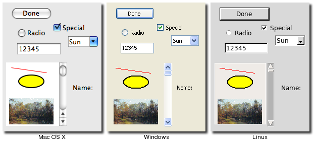<br>
</p>

<h3>Widget Classes</h3>
<p>
Widgets are objects, instances of classes that represent buttons, frames, and so on.  So the first
thing you'll need to do is identify the specific class of the widget you'd like to instantiate.  
This tutorial and the <a href="http://www.tkdocs.com/widgets/index.html">widget roundup</a> will help with that.
</p>
<h3>Window Hierarchy</h3>
<p>
The other thing you'll need to know is the <em>parent</em> of the widget instance you'd like to 
create.  In Tk, all widgets are part of a <em>window hierarchy</em>, with a single root at the top
of the hierarchy.  This hierarchy can be arbitrarily deep; so you might have a button in a frame in
another frame within the root window.  Even a new toplevel window is part of that same hierarchy,
with it and all its contents forming a subtree of the overall window hierarchy.
</p>
<p>
In our metric conversion example, we had a single frame that was created as a child of the root 
window, and that frame had all the other controls as children.  The root window was a <em>container</em>
for the frame, and was therefore the frame's <em>parent</em>.  The complete hierarchy for the example
looked like this:
</p>
<p class="picture">
<br>	
The window hierarchy of the metric conversion example.
</p>

<h3>Creating and Using Widgets</h3>

<div class="tcl">
<p>
In Tcl, each widget is given an explicit <em>pathname</em>, which both differentiates it from other
widgets, and also indicates its place in the window hierarchy.  The root of the hierarchy, the
toplevel widget that Tk automatically creates, is named simply <tt>"."</tt> (dot).  
</p>
<p>
The frame, which was a child of the root, was named <tt>".c"</tt>.  We could have put pretty much anything in 
place of the "c", naming it for example <tt>".content"</tt>.  This name is purely for use by your program,
so it's best to choose something meaningful.  The controls that were children of the frame were given
names like <tt>".c.feet"</tt>, <tt>".c.meters"</tt>, <tt>".c.flbl"</tt>, and so on.  If there were any widgets at a deeper
level of the hierarchy, we'd add another <tt>"."</tt> and then a unique identifier.
</p>
<p>
So to create a widget, we need to provide the widget class, and the pathname.  The pathname is
used to indicate the widget's parent (which must of course exist also), and hence its position
in the window hierarchy.  For example:
</p>
<pre>ttk::button .b
ttk::frame .f
ttk::entry .f.entry
</pre>
<p>
This also creates a new <em>object command</em> with the same name as the widget's pathname, which will
let us communicate with the widget.  So the above code would produce new Tcl commands named <tt>".b"</tt>,
<tt>".f"</tt>, <tt>".f.entry"</tt>, and so on.  You can then use that object command to communicate
further with the widget, calling e.g. <tt>".b invoke"</tt>, or <tt>".f.entry state disabled"</tt>.
Because of the obvious parallels with many object-oriented systems, we'll often refer to the object
commands as <em>objects</em>, and calls on those objects (like the <tt>"invoke"</tt>) as <em>method</em> calls.
For example, you'll see below the use of the <tt>"configure"</tt> and <tt>"cget"</tt> methods.
</p>
</div>

<div class="ruby">
<p>
Each separate widget is a Ruby object.  When creating a widget, you must pass its parent as a
parameter to the widget class' <tt>"new"</tt> method.  The <em>only</em> exception is the "root" window,
which is the toplevel window that will contain everything else.  That is instantiated from 
the TkRoot class, and it does not have a parent.  For example:
</p><pre>root = TkRoot.new 
content = Tk::Tile::Frame.new(root)
Tk::Tile::Button.new(content)
</pre>
<p></p>
<p>
Whether or not you save the widget object in a variable is entirely up to you, and depends of
course whether you'll need to refer to it later.  Because the object is inserted into the widget
hierarchy, it won't be garbage collected even if you don't keep your own reference to it.
</p>
<p class="fyi">
If you snuck a peak at how Tcl manages widgets, you'll see each widget has a specific pathname;
you'll also see this pathname referred to in Tk reference documentation.  RubyTk chooses and
manages all these pathnames for you behind the scenes, so you should never have to worry about 
them.  If you do though, you can get the pathname from a widget with its <tt>"path"</tt> method.
</p>
</div>
<div class="perl">
<p>
In Perl, each widget is given an explicit <em>pathname</em>, which both differentiates it from other
widgets, and also indicates its place in the window hierarchy.  The root of the hierarchy, the
toplevel widget that Tk automatically creates, is named simply <tt>"."</tt> (dot).  
</p>
<p>
The frame, which was a child of the root, was named <tt>".c"</tt>.  We could have put pretty much anything in 
place of the "c", naming it for example <tt>".content"</tt>.  This name is purely for use by your program,
so it's best to choose something meaningful.  The controls that were children of the frame were given
names like <tt>".c.feet"</tt>, <tt>".c.meters"</tt>, <tt>".c.flbl"</tt>, and so on.  If there were any widgets at a deeper
level of the hierarchy, we'd add another <tt>"."</tt> and then a unique identifier.
</p>
<p>
So to create a widget, we need to provide the widget class, and the pathname.  The pathname is
used to indicate the widget's parent (which must of course exist also), and hence its position
in the window hierarchy.  For example:
</p>
<pre>Tkx::ttk__button(".b", -text =&gt; "hello");
Tkx::ttk__frame(".f");
Tkx::ttk__entry(".f.entry");
</pre>
<h4>Widget Objects</h4>
<p>
Many widgets have operations that you can call on them, such as to disable a widget, invoke a button's
command, and so on.  If we were doing this in Tcl, we'd write something like <tt>".b invoke"</tt> or
<tt>".f.entry state disabled"</tt>.  Essentially you'd think of ".b" or ".f.entry" as objects, and
"invoke" and "state" as methods, the latter having a single parameter "disabled".  In Perl, you can
call the exact Tcl command like this:
</p><pre>Tkx::i::call(".b", "invoke");
Tkx::i::call(".f.entry", "state", "disabled");</pre>
<p>
Admittedly, that's pretty lame.  Ideally, we'd want to have these widgets behave just like Perl
objects.  Luckily, Tkx lets us do exactly that.  
</p>
<p>
The first thing we need to do is get a reference to an object for these widgets.  We can do that
like this, passing the widget path name to <tt>"Tkx::widget-&gt;new"</tt>:
</p>
<pre>my $b = Tkx::widget-&gt;new(".b");
my $e = Tkx::widget-&gt;new(".f.entry");</pre>
<p>
Then we can invoke methods on these objects just how you'd expect:
</p>
<pre>$b-&gt;invoke;
$e-&gt;state("disabled");</pre>
<p>
Creating each widget and then getting a reference to it as a separate step is a bit much.
So there's another way to create widgets.  If you have an object reference to the parent widget in the
widget hierarchy, you can ask it to create a child.  
</p>
<pre>my $mw = Tkx::widget-&gt;new(".");
my $b = $mw-&gt;new_ttk__button(-text =&gt; "hello");
my $f = $mw-&gt;new_ttk__frame;
my $e = $f-&gt;new_ttk__entry;</pre>
<p>
In this case, Tkx will choose the widget pathname for you (it'll look something like ".b", ".f.e", ".f.e2", etc.).
</p>
<p class="tip">
You can get this path by calling the object's "_mpath" method (e.g. <tt>"$b-&gt;_mpath"</tt>).  If you stringify the
object itself (e.g. trying to print it out), it will also be the widget pathname.
</p>
<p>
You also saw in our earlier example that some Tkx commands (like "grid") take the widget pathname as their
first argument.  There's a way to do that using the widget object instead.  We invoke a method which is the
name of the command, prefixed by "g_", e.g. "g_grid".  So this:
</p>
<pre>Tkx::ttk__entry(".c.feet", -width =&gt; 7, -textvariable =&gt; \$feet);
Tkx::grid(".c.feet", -column =&gt; 2, -row =&gt; 1, -sticky =&gt; "we");</pre>
<p>becomes this:</p>
<pre>my $mw = Tkx::widget-&gt;new(".");
my $ft = $mw-&gt;new_ttk__entry(-width =&gt; 7, -textvariable =&gt; \$feet);
$ft-&gt;g_grid(-column =&gt; 2, -row =&gt; 1, -sticky =&gt; "we");</pre>

<h4>Translation Rules</h4>
<p>
What's somewhat scary about the Tkx module is that it implements all of this on a purely syntactic level.
That is, it has no clue about buttons and entries and grid.  It just knows that if it sees a method "new_<em>something</em>"
it's creating a widget using the Tcl command "<em>something</em>", or if you call a method "g_<em>otherthing</em>", that
it's going to invoke a Tcl command "<em>otherthing</em>", and pass the widget pathname associated with the object as a
first parameter (followed by any other parameters passed to the method).
</p>
<p class="fyi">
It's this pure syntactic mapping which gives Tkx its power and amazing brevity (check out the code in Tkx.pm!).  
It also explains why it can automatically track any changes in Tk.  Any new commands and options don't need to be 
explicitly implemented in Tkx code; they are automatically available just by using the right syntax.
</p>
<p>
Now let's talk about those underscores in the Tkx commands and method names.  If you've glanced at the Tcl version
of the code in this tutorial, you know that they can take several forms, i.e.
</p><ul>
<li> a single toplevel command, like <tt>"grid"</tt>
</li><li> a multi-word command (called an ensemble in Tcl), e.g. <tt>"wm title"</tt>
</li><li> a command in a namespace, e.g. <tt>"ttk::button"</tt>
</li><li> a single toplevel command with underscores, e.g. <tt>"tk_messageBox"</tt>
</li></ul>
<p></p>
<p>
No translations are needed for simple commands like "grid", but the others need to be tweaked.
To translate these into Perl, Tkx uses underscores in the following way:
</p><ul>
<li> a single underscore is replaced with a space, e.g. <tt>"wm_title"</tt> in Perl becomes <tt>"wm title"</tt> in Tcl
</li><li> two underscores is replaced with the namespace qualifier "::", e.g. <tt>"ttk__button"</tt> becomes <tt>"ttk::button"</tt>
</li><li> three underscores is replaced with a single underscore, e.g. <tt>"tk___messageBox"</tt> becomes <tt>"tk_messageBox"</tt>
</li></ul>
<p></p>
<p>
Given that this purely syntactic translation is all that Tkx does, let's state the obvious: whether or not you
use the pure command form, which we used in the "feet to meters" example, or the object oriented form, <em>they
both do exactly the same thing</em> (i.e. invoke the same underlying Tcl command).  
</p>
<p>
Because you can get an object's
widget pathname, or get an object reference from a widget pathname, you can also freely intermix them.  Most
programs of any length will probably be a bit simpler if they predominately use the object oriented form,
but this is almost entirely a stylistic issue.
</p>

<h4>Feet to Meters, Object Style</h4>
<p>
Here's the earlier "feet to meters" example, this time rewritten in the object oriented style.
The programs do exactly the same thing.
</p>
<pre>use Tkx;

my $mw = Tkx::widget-&gt;new(".");
$mw-&gt;g_wm_title("Feet to Meters");
my $frm = $mw-&gt;new_ttk__frame(-padding =&gt; "3 3 12 12");
$frm-&gt;g_grid(-column =&gt; 0, -row =&gt; 0, -sticky =&gt; "nwes");
$mw-&gt;g_grid_columnconfigure(0, -weight =&gt; 1);
$mw-&gt;g_grid_rowconfigure(0, -weight =&gt; 1);

my $ef = $frm-&gt;new_ttk__entry(-width =&gt; 7, -textvariable =&gt; \$feet);
$ef-&gt;g_grid(-column =&gt; 2, -row =&gt; 1, -sticky =&gt; "we");
my $em = $frm-&gt;new_ttk__label(-textvariable =&gt; \$meters);
$em-&gt;g_grid(-column =&gt; 2, -row =&gt; 2, -sticky =&gt; "we");
my $cb = $frm-&gt;new_ttk__button(-text =&gt; "Calculate", -command =&gt; sub {calculate();});
$cb-&gt;g_grid(-column =&gt; 3, -row =&gt; 3, -sticky =&gt; "w");

$frm-&gt;new_ttk__label(-text =&gt; "feet")-&gt;g_grid(-column =&gt; 3, -row =&gt; 1, -sticky =&gt; "w");
$frm-&gt;new_ttk__label(-text =&gt; "is equivalent to")-&gt;g_grid(-column =&gt; 1, -row =&gt; 2, -sticky =&gt; "e");
$frm-&gt;new_ttk__label(-text =&gt; "meters")-&gt;g_grid(-column =&gt; 3, -row =&gt; 2, -sticky =&gt; "w");

foreach (Tkx::SplitList($frm-&gt;g_winfo_children)) {
    Tkx::grid_configure($_, -padx =&gt; 5, -pady =&gt; 5);
}
$ef-&gt;g_focus;
$mw-&gt;g_bind("&lt;Return&gt;", sub {calculate();});

sub calculate {
   $meters = int(0.3048*$feet*10000.0+.5)/10000.0 || '';
}

Tkx::MainLoop();
</pre>

</div>
<div class="python">
<p>
Each separate widget is a Python object.  When creating a widget, you must pass its parent as a
parameter to the widget creation function.  The <em>only</em> exception is the "root" window,
which is the toplevel window that will contain everything else.  That is automatically created, 
and it does not have a parent.  For example:
</p><pre>root = Tk()
content = ttk.Frame(root)
button = ttk.Button(content)
</pre>
<p></p>
<p>
Whether or not you save the widget object in a variable is entirely up to you, and depends of
course whether you'll need to refer to it later.  Because the object is inserted into the widget
hierarchy, it won't be garbage collected even if you don't keep your own reference to it.
</p>
<p class="fyi">
If you snuck a peak at how Tcl manages widgets, you'll see each widget has a specific pathname;
you'll also see this pathname referred to in Tk reference documentation.  Tkinter chooses and
manages all these pathnames for you behind the scenes, so you should never have to worry about 
them.  If you do though, you can get the pathname from a widget by calling <tt>"str(widget)"</tt>.
</p>
</div>


<h3>Configuration Options</h3>
<p>
All widgets also have a number of different <em>configuration options</em>, which generally control
how they are displayed or how they behave.  
</p>
<p>
The options that are available depend upon the widget class of course. There is a lot of consistency 
between different widget classes, so options that do pretty much the same thing tend to be named the same.
So both a button and a label have a <tt>"text"</tt> option to adjust the text the widget displays, while a
scrollbar for example would not have a <tt>"text"</tt> option since it's not needed.  In the same way, the
button has a <tt>"command"</tt> option telling it what to do when pushed, while a label, which holds just
static text, does not.
</p>
Configuration options can be set when the widget is first created, by passing along the names and
values of the options as optional parameters.  You can later check what the value of those options
are, and with a very small number of exceptions, change them at any time.  If you're not sure what
all the different options are for a widget, you can ask the widget to provide it.  This gives you
a long list of all the options, and for each option, you can see the name of the option and its
current value (along with three other attributes which you won't normally need to worry about).
<p></p>
<p>
This is all best illustrated with the following interactive dialog with the interpreter.
</p>
<div class="tcl"><pre>% <b>wish8.5</b>
<em>create a button, passing two options:</em>
% <b>grid [ttk::button .b -text "Hello" -command {button_pressed}]</b>
<em>check the current value of the text option:</em>
% <b>.b cget -text</b>
Hello
<em>check the current value of the command option:</em>
% <b>.b cget -command</b>
button_pressed
<em>change the value of the text option:</em>
% <b>.b configure -text Goodbye</b>
<em>check the current value of the text option:</em>
% <b>.b cget -text</b>
Goodbye
<em>get all information about the text option:</em>
% <b>.b configure -text</b>
-text text Text {} Goodbye
<em>get information on all options for this widget:</em>
% <b>.b configure</b>
{-takefocus takeFocus TakeFocus ttk::takefocus ttk::takefocus} 
{-command command Command {} button_pressed} {-default default Default normal normal} 
{-text text Text {} Goodbye} {-textvariable textVariable Variable {} {}} 
{-underline underline Underline -1 -1} {-width width Width {} {}} {-image image Image {} {}} 
{-compound compound Compound none none} {-padding padding Pad {} {}} 
{-state state State normal normal} {-takefocus takeFocus TakeFocus {} ttk::takefocus} 
{-cursor cursor Cursor {} {}} {-style style Style {} {}} {-class {} {} {} {}}
</pre></div>

<div class="ruby"><pre>% <b>irb</b>
irb(main):001:0&gt; <b>require 'tk'</b>
=&gt; true
irb(main):002:0&gt; <b>require 'tkextlib/tile'</b>
=&gt; true
<em>create a button, passing two options:</em>
irb(main):003:0&gt; <b>root = TkRoot.new</b>
=&gt; #&lt;TkRoot:0xb7c8c9d8 @path="."&gt;
irb(main):004:0&gt; <b>button = Tk::Tile::Button.new(root) {text "Hello"; command "button_pressed"}.grid</b>
=&gt; #&lt;Tk::Tile::TButton:0xb7c86ab0 @cmdtbl=["c00001"], @path=".w00000"&gt;
<em>check the current value of the text option:</em>
irb(main):005:0&gt; <b>button['text']</b>
=&gt; "Hello"
<em>check the current value of the command option:</em>
irb(main):006:0&gt; <b>button['command']</b>
=&gt; #&lt;cb_entry:fdbe42342&gt;
<em>change the value of the text option:</em>
irb(main):007:0&gt; <b>button['text'] = 'goodbye'</b>
=&gt; "goodbye"
<em>check the current value of the text option:</em>
irb(main):008:0&gt; <b>button['text']</b>
=&gt; "goodbye"
<em>get all information about the text option:</em>
irb(main):009:0&gt; <b>button.configinfo 'text'</b>
=&gt; ["text", "text", "Text", "", "goodbye"]
<em>get information on all options for this widget:</em>
irb(main):010:0&gt; <b>button.configinfo</b>
=&gt; [["takefocus", "takeFocus", "TakeFocus", true, true], ["command", "command", "Command", "", #<cb_entry:fdbe42342>], 
["default", "default", "Default", "normal", "normal"], ["text", "text", "Text", "", "goodbye"],
 ["textvariable", "textVariable", "Variable", nil, nil], 
["underline", "underline", "Underline", -1, -1], ["width", "width", "Width", "", ""], 
["image", "image", "Image", "", ""], ["compound", "compound", "Compound", "none", "none"], 
["padding", "padding", "Pad", "", ""], ["state", "state", "State", "normal", "normal"], 
["takefocus", "takeFocus", "TakeFocus", nil, true], ["cursor", "cursor", "Cursor", "", ""], 
["style", "style", "Style", [], []], ["class", "", "", "", ""]]
</cb_entry:fdbe42342></pre></div>

<div class="perl"><pre><em>run Perl interactively using the program "psh":</em>
% <b>psh</b>
Perl&gt; <b>$mw = Tkx::widget-&gt;new(".")</b>
.
<em>create a button, passing two options:</em>
Perl&gt; <b>($b = $mw-&gt;new_ttk__button(-text =&gt; "Hello", -command =&gt; sub {button_pressed();}))-&gt;g_grid</b>
.b
<em>check the current value of the text option:</em>
<em>  (note that "m_&lt;foo&gt;" is another one of those magic Tkx translations 
   like "g_&lt;foo&gt;"; in this case it means call the &lt;foo&gt; method on the object)</em>
Perl&gt; <b>$b-&gt;m_cget(-text)</b>
Hello
<em>conveniently, the "m_" part is almost always optional:</em>
Perl&gt; <b>$b-&gt;cget(-text)</b>
Hello
<em>check the current value of the command option:</em>
Perl&gt; <b>$b-&gt;cget(-command)</b>
::perl::CODE(0x839020)
<em>change the value of the text option:</em>
Perl&gt; <b>$b-&gt;configure(-text =&gt; "Goodbye")</b>

<em>check the current value of the text option:</em>
Perl&gt; <b>$b-&gt;cget(-text)</b>
Goodbye
<em>get all information about the text option:</em>
Perl&gt; <b>$b-&gt;configure(-text)</b>
-text text Text {} Goodbye
<em>convert the Tcl list this returns into a Perl list:</em>
Perl&gt; <b>Tkx::SplitList($b-&gt;configure(-text))</b>
-text, text, Text, , Goodbye
<em>get information on all options for this widget:</em>
Perl&gt; <b>$b-&gt;configure</b>
{-takefocus takeFocus TakeFocus ttk::takefocus ttk::takefocus} 
{-command command Command {} ::perl::CODE(0x839020)} {-default default Default normal normal} 
{-text text Text {} Goodbye} {-textvariable textVariable Variable {} {}} 
{-underline underline Underline -1 -1} {-width width Width {} {}} {-image image Image {} {}} 
{-compound compound Compound none none} {-padding padding Pad {} {}} 
{-state state State normal normal} {-takefocus takeFocus TakeFocus {} ttk::takefocus} 
{-cursor cursor Cursor {} {}} {-style style Style {} {}} {-class {} {} {} {}}
</pre></div>

<div class="python"><pre>% <b>python</b>
&gt;&gt;&gt; <b>from tkinter import *</b>
&gt;&gt;&gt; <b>from tkinter import ttk</b>
&gt;&gt;&gt; <b>root = Tk()</b>
<em>create a button, passing two options:</em>
&gt;&gt;&gt; <b>button = ttk.Button(root, text="Hello", command="buttonpressed")</b>
&gt;&gt;&gt; <b>button.grid</b>
<em>check the current value of the text option:</em>
&gt;&gt;&gt; <b>button['text']</b>
'Hello'
<em>change the value of the text option:</em>
&gt;&gt;&gt; <b>button['text'] = 'goodbye'</b>
<em>another way to do the same thing:</em>
&gt;&gt;&gt; <b>button.configure(text='goodbye')</b>
<em>check the current value of the text option:</em>
&gt;&gt;&gt; <b>button['text']</b>
'goodbye'
<em>get all information about the text option:</em>
&gt;&gt;&gt; <b>button.configure('text')</b>
('text', 'text', 'Text', '', 'goodbye')
<em>get information on all options for this widget:</em>
&gt;&gt;&gt; <b>button.configure()</b>
{'cursor': ('cursor', 'cursor', 'Cursor', '', ''), 'style': ('style', 'style', 'Style', '', ''), 
'default': ('default', 'default', 'Default', &lt;index object at 0x00DFFD10&gt;, &lt;index object at 0x00DFFD10&gt;), 
'text': ('text', 'text', 'Text', '', 'goodbye'), 'image': ('image', 'image', 'Image', '', ''), 
'class': ('class', '', '', '', ''), 'padding': ('padding', 'padding', 'Pad', '', ''), 
'width': ('width', 'width', 'Width', '', ''), 
'state': ('state', 'state', 'State', &lt;index object at 0x0167FA20&gt;, &lt;index object at 0x0167FA20&gt;), 
'command': ('command', 'command' , 'Command', '', 'buttonpressed'), 
'textvariable': ('textvariable', 'textVariable', 'Variable', '', ''), 
'compound': ('compound', 'compound', 'Compound', &lt;index object at 0x0167FA08&gt;, &lt;index object at 0x0167FA08&gt;), 
'underline': ('underline', 'underline', 'Underline', -1, -1), 
'takefocus': ('takefocus', 'takeFocus', 'TakeFocus', '', 'ttk::takefocus')}
</pre></div>


 <p><a name="geometry"></a>&nbsp;</p><h2>Geometry Management</h2>

<p>
If you've been playing around creating widgets, you've probably noticed that just by creating them they didn't end up
showing up onscreen.  Having things actually put in the onscreen window, and precisely <em>where</em> in the window
they show up is a separate step called <em>geometry management</em>.
</p>
<p>
In our example, this positioning was accomplished by the <tt>"grid"</tt> command, where we passed along the column and row we
wanted each widget to go in, how things were to be aligned within the grid, and so on.  Grid is an example of a
<em>geometry manager</em> (of which there are several in Tk, grid being the most useful).  We'll talk about grid
in detail in a later chapter, but for now we'll look at geometry management in general.
</p>
<p>
A geometry manager's job is to figure out exactly where those widgets are going to be put.  This turns out to be very
difficult optimization problem, and a good geometry manager relies on quite complex algorithms.  A good geometry
manager provides the flexibility, power and ease of use that makes programmers happy, and Tk's <tt>"grid"</tt> is without
a doubt one of the absolute best.  A poor geometry manager... well, all the Java programmers who have suffered
through "GridBagLayout" please raise their hands.
</p>

<h3>The Problem</h3>
<p>
The problem for a geometry manager is to take all the different widgets the program creates, plus the instructions
for where in the window the program would like things to go (explicitly, or more often, relative to other widgets),
and then actually put them in the window.
</p>
<p>
In doing so, the geometry manager has to balance a number of different constraints:
</p>
<ul>
<li> The widgets may have a "natural" size (e.g. the natural width of a label would normally be determined by the text 
	 and font in it), but the toplevel all these different widgets are trying to fit into isn't big enough to 
	 accommodate them; the geometry manager must decide which widgets to shrink to fit, by how much, etc.</li>
<li> If the toplevel window is bigger than the natural size of all the widgets, how is the extra space used?  Is it just used
	 for extra space between widgets, and if so, how is that space distributed?  Is it used to make certain widgets
	 bigger than they normally want to be?</li>
<li> If the toplevel window is resized, how does the size and position of the widgets in it change?  Will certain areas
	 (e.g. a text entry area) expand or shrink, while other parts stay the same size, or is the area distributed 
	 differently?  Do certain widgets have a minimum (or maximum) size that you want to avoid going under (over)?</li>
<li> How can widgets in different parts of the user interface be aligned with each other, to present a clean
	 layout and match platform guidelines to do with inter-widget spacing?</li>
<li> For a complex user interface, which may have many frames nested in other frames nested in the window (etc.), 
	 how can all the above be accomplished, trading off the conflicting demands of different parts of the entire
	 user interface?</li>
</ul>

<h3>How it Works</h3>
<p>
Geometry management in Tk relies on the concept of <em>master</em> and <em>slave</em> widgets.  A master is a widget,
typically a toplevel window or a frame, which will contain other widgets, which are called slaves.  You can think of
a geometry manager as taking control of the master widget, and deciding what will be displayed within.
</p>
<p>
The geometry manager will ask each slave widget for its natural size, or how large it would ideally like to be displayed.
It then takes that information and combines it with any parameters provided by the program when it asks the geometry
manager to manage that particular slave widget.  In our example, we passed grid a <tt>"column"</tt> and <tt>"row"</tt> number for each widget,
which indicated the relative position of the widget with respect to others, and also a <tt>"sticky"</tt> parameter to suggest
how the widget should be aligned or possibly stretched.  We also used <tt>"columnconfigure"</tt> and <tt>"rowconfigure"</tt> to indicate
the columns and rows we'd like to have expand if there is extra space available in the window.  Of course, all these
parameters are specific to grid; other geometry managers would use different ones.
</p>
<p>
The geometry manager takes all the information about the slaves, as well as the information about how large the master
is, and uses its internal algorithms to determine the area each slave will be allocated (if any!).  The slave is then
responsible for drawing etc. within that particular rectangle.  And of course, any time the size of the master changes
(e.g. because the toplevel window was resized), the natural size of a slave changes (e.g. because we've changed the
text in a label), or any of the geometry manager parameters change (e.g. like <tt>"row"</tt>, <tt>"column"</tt>, or <tt>"sticky"</tt>) we repeat
the whole thing.
</p>
<p>
This all works recursively as well.  In our example, we had a content frame inside the toplevel window, and then a number
of other controls in the content frame.  We therefore had a geometry manager working on two different masters.  At the
outer level, the toplevel window was the master, and the content frame was the slave.  At the inner level, the content
frame was the master, with each of the other widgets being slaves.  So the same widget can be both a master and
a slave.  This hierarchy can of course also be nested much more deeply.
</p>
<p class="fyi">
While each master can have only one geometry manager (e.g. grid), it's entirely possible for different masters to have
different geometry managers; while grid is generally used, others may make sense for a particular layout used in one
part of your user interface.  Also, we've been making the assumption that slave widgets are the immediate children of
their master in the widget hierarchy.  While this is usually the case, and mostly there's no good reason to do it
any other way, it's also possible (with some restrictions) to get around this.
</p>
 <p><a name="events"></a>&nbsp;</p><h2>Event Handling</h2>

<p>
In Tk, as in most other user interface toolkits, there is an <em>event loop</em> which receives events from the
operating system.  These are things like button presses, keystrokes, mouse movement, window resizing, and so on.
</p>
<p>
Generally, Tk takes care of managing this event loop for you.  It will figure out what widget the event applies
to (did the user click on this button?  if a key was pressed, which textbox had the focus?), and dispatch it
accordingly.  Individual widgets know how to respond to events, so for example a button might change color when
the mouse moves over it, and revert back when the mouse leaves.
</p>

<h3>Command Callbacks</h3>
<p>
Often though you want your program to handle particular events, for example doing something when a button is 
pushed.  For those events that are pretty much essential to customize (what good is a button without something
happening when you press it?), the widget will provide a <em>callback</em> as a widget configuration option.
We saw this in the example with the <tt>"command"</tt> option of the button.  
</p>
<p>
Callbacks in Tk tend to be simpler than in toolkits used with compiled languages (where a callback must generally
be directed at a procedure with a certain set of parameters or an object method with a certain signature).
Instead, the callback is just a normal bit of code that the interpreter evaluates.  While it can be as complex
as you want to make it, most times though you'll just want your callback to call some other procedure.
</p>

<h3>Event Bindings</h3>
<p>
For events that don't have a command callback associated with them, you can use Tk's <tt>"bind"</tt> to capture any
event, and then (like with callbacks) execute an arbitrary piece of code.  
</p>
<p>
Here is a (silly) example that shows how a label can have bindings set up for it to respond to different
events, which it does so by just changing what is displayed in the label.
</p>
<div class="tcl">
<pre>package require Tk
grid [ttk::label .l -text "Starting..."] 
bind .l &lt;Enter&gt; {.l configure -text "Moved mouse inside"}
bind .l &lt;Leave&gt; {.l configure -text "Moved mouse outside"}
bind .l &lt;1&gt; {.l configure -text "Clicked left mouse button"}
bind .l &lt;Double-1&gt; {.l configure -text "Double clicked"}
bind .l &lt;B3-Motion&gt; {.l configure -text "right button drag to %x %y"}
</pre>
<p class="tip">
Note that the <tt>bind</tt> command lives in the global namespace; there is not a <tt>ttk::bind</tt> command.
</p>	
</div>
<div class="ruby">
<pre>require 'tk'
require 'tkextlib/tile'
root = TkRoot.new
l = Tk::Tile::Label.new(root) {text "Starting..."}
l.bind("Enter") {l['text'] = "Moved mouse inside"}
l.bind("Leave") {l['text'] = "Moved mouse outside"}
l.bind("1") {l['text'] = "Clicked left mouse button"}
l.bind("Double-1") {l['text'] = "Double clicked"}
l.bind("B3-Motion", proc{|x,y| l['text'] = "right button drag to #{x} #{y}"}, "%x %y")
Tk.mainloop	
</pre>
</div>
<div class="perl"><pre>use Tkx;
my $mw = Tkx::widget-&gt;new(".");
(my $l = $mw-&gt;new_ttk__label(-text =&gt; "Starting..."))-&gt;g_grid;
$l-&gt;g_bind("&lt;Enter&gt;",     sub {$l-&gt;configure(-text =&gt; "Moved mouse inside")});
$l-&gt;g_bind("&lt;Leave&gt;",     sub {$l-&gt;configure(-text =&gt; "Moved mouse outside")});
$l-&gt;g_bind("&lt;1&gt;",         sub {$l-&gt;configure(-text =&gt; "Clicked left mouse button")});
$l-&gt;g_bind("&lt;Double-1&gt;",  sub {$l-&gt;configure(-text =&gt; "Double clicked")});
$l-&gt;g_bind("&lt;B3-Motion&gt;", [sub { my($x,$y) = @_;
                                 $l-&gt;configure(-text =&gt; "right button drag to $x $y")
	                   }, Tkx::Ev("%x", "%y")]);
Tkx::MainLoop();
</pre></div>
<div class="python"><pre>from tkinter import *
from tkinter import ttk
root = Tk()
l =ttk.Label(root, text="Starting...")
l.grid()
l.bind('&lt;Enter&gt;', lambda e: l.configure(text='Moved mouse inside'))
l.bind('&lt;Leave&gt;', lambda e: l.configure(text='Moved mouse outside'))
l.bind('&lt;1&gt;', lambda e: l.configure(text='Clicked left mouse button'))
l.bind('&lt;Double-1&gt;', lambda e: l.configure(text='Double clicked'))
l.bind('&lt;B3-Motion&gt;', lambda e: l.configure(text='right button drag to %d,%d' % (e.x, e.y)))
root.mainloop()
</pre>	
</div>

<p>
The first three event bindings are pretty straightforward, just looking at simple events.
The double click binding introduces the idea of an <em>event modifier</em>; in this case we
want to trigger the event on a left mouse click (the <tt>"1"</tt>), but only when it's a double
click (the <tt>"Double-"</tt>).  
</p>
<p>
The last binding also uses a modifier: capture mouse movement (<tt>"Motion"</tt>), but only when the right 
mouse button (<tt>"B3"</tt>) is held down.  This binding also shows an example of how to use <em>event
parameters</em>, through the use of <em>percent substitutions</em>.  Many events, such as mouse
clicks or movement have as parameters additional information like the current position of the
mouse.  These percent substitutions let you capture them so they can be used in your script.
</p>
<div class="perl">
<p class="fyi">
Tkx lets us provide command callbacks as just a Perl function (the first four), or as a two element 
array (the last case).  The first element is the Perl code to be called, while the second array element
specifies parameters to pass to that code.  The function <b>"Tkx::Ev()"</b> will expand its parameter
(<tt>"%x %y"</tt> in this case) when the callback is invoked, which will perform the percent
substitutions.  These then are passed as parameters to our function.
</p>
</div>
<div class="python">
<p class="fyi">
Tkinter expects you to provide a function as the event callback, whose first argument is an event object
representing the event that triggered the callback.  It's usually not worth the bother of defining regular
named functions for one-off callbacks such as in this example, so we've just used Python's anonymous
functions via lambda.  The earlier feet to meters example used a regular defined function (calculate).
</p>
</div>
<p>
For a complete description of all the different event names, modifiers, and the different event 
parameters that are available with each, the best place to look is the 
<a href="http://www.tcl.tk/man/tcl8.5/TkCmd/bind.htm">"bind" command reference</a>.
</p>

<h4>Virtual Events</h4>
<p>
Beyond the low-level operating system events like mouse clicks and window resizes, many widgets
generate higher level events called <em>virtual events</em>.  For example, a listbox widget will
generate a <tt>"ListboxSelect"</tt> virtual event anytime the selection changes, regardless of whether that
was because the user clicked on an item, moved to it with the arrow keys, or whatever.  This
avoids the problem of setting up multiple, possibly platform-specific event bindings to capture
the change.  Virtual events for a widget, if any, will be listed in the widget's documentation.
</p>

<h4>Multiple Bindings</h4>
<p>
Widgets can actually have a number of different event bindings trigger for a single event.
Normally, events can be set up for: the individual widget itself, all widgets of a certain
class (e.g. buttons), the toplevel window containing the widget, and all widgets in the
application.  Each of these will fire in sequence.
</p>
<p>
We saw this in our example when we set up a binding for the Return key on the toplevel window,
and that applied to every widget within that window.  
</p>
<p class="fyi">
The default behavior of each widget class in Tk is itself defined with script-level event bindings, 
and so can be introspected and modified to alter the behavior of all widgets of a certain class.  
You can even completely modify the handling of this multiple sequence of events for each
widget; see the <a href="http://www.tcl.tk/man/tcl8.5/TkCmd/bindtags.htm">"bindtags" command
reference</a> if you're curious.
</p>


<p> </p><p class="date"></p><h1>Basic Widgets</h1>

<p>
This chapter introduces you to the basic Tk widgets that you'll find in just about any user interface:
frames, labels, buttons, checkbuttons, radiobuttons, entries and comboboxes.  By the end,
you'll know how to use all the widgets you'd ever need for a typical fill-in form
type of user interface.
</p>
<p>
This chapter (and those following that discuss more widgets) are meant to be read in order.  Because
there is so much commonality between many widgets, we'll introduce certain concepts in an earlier
widget that will also apply to a later one.  Rather than going over the same ground multiple times,
we'll just refer back to when the concept was first introduced.
</p>
<p>
At the same time, each widget will also refer to the <a href="http://www.tkdocs.com/widgets/index.html">widget
roundup</a> page for the specific widget, as well as the 
<a href="http://www.tcl.tk/man/tcl8.5/TkCmd/contents.htm">reference manual page</a>, so feel free to jump around
a bit too.
</p>


 <p><a name="frame"></a>&nbsp;</p><h2>Frame</h2>

<ul class="menu">
<li><a href="http://www.tkdocs.com/widgets/frame.html">Widget Roundup</a></li>
<li><a href="http://www.tcl.tk/man/tcl8.5/TkCmd/ttk_frame.htm">Reference Manual</a></li>
</ul>
<p>
A <b>frame</b> is a widget that displays just as a simple rectangle.  Frames are primarily used as a container 
for other widgets, which are under the control of a geometry manager such as grid.
</p>

<p class="picture">
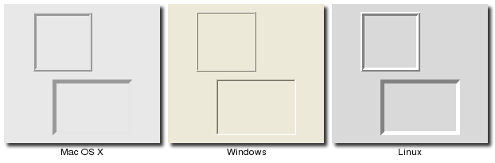<br>
Frame Widgets
</p>
<div class="tcl"><p>Frames are created using the <tt><b>ttk::frame</b></tt> command:</p><pre>ttk::frame .frame</pre></div>
<div class="ruby"><p>Frames are created using the <tt><b>Tk::Tile::Frame</b></tt> class:</p><pre>frame = Tk::Tile::Frame.new(<em>parent</em>)</pre></div>
<div class="perl"><p>Frames are created using the <tt><b>new_ttk__frame</b></tt> method, a.k.a. <tt><b>Tkx::ttk__frame()</b></tt>:</p><pre>$frame = $<em>parent</em>-&gt;new_ttk__frame;</pre></div>
<div class="python"><p>Frames are created using the <tt><b>ttk.Frame</b></tt> function:</p><pre>frame = ttk.Frame(<em>parent</em>)</pre></div>
<p>
Frames can take several different configuration options which can alter how they are displayed.
</p>
<h4>Requested Size</h4>
<p>
Like any other widget, after creation it is added to the user interface via a (parent) geometry manager.
Normally, the size that the frame will request from the geometry manager will be determined by
the size and layout of any widgets that are contained in it (which are under the control of the
geometry manager that manages the contents of the frame itself). 
</p>
<p>
If for some reason you want an empty frame that does not contain other widgets, you should instead 
explicitly set the size that the frame will request from its parent geometry manager using the 
<tt>"width"</tt> and/or <tt>"height"</tt> configuration options (otherwise you'll end up with a
very small frame indeed).  
</p>
<p class="fyi">
Normally, distances such as width and height are specified just as a number of pixels on the
screen.  You can also specify them via one of a number of suffixes.  For example, <tt>"350"</tt> means
350 pixels, <tt>"350c"</tt> means 350 centimeters, <tt>"350i"</tt> means 350 inches, and <tt>"350p"</tt> means 350 printer's
points (1/72 inch).
</p>

<h4>Padding</h4>
<p>
The <tt>"padding"</tt> configuration option is used to request extra space around the inside of
the widget; this way if you're putting other widgets inside the frame, there will be a bit of a
margin all the way around.  A single number specifies the same padding all the way around, a list
of two numbers lets you specify the horizontal then the vertical padding, and a list of four
numbers lets you specify the left, top, right and bottom padding, in that order.
</p>
<div class="tcl"><pre>.frame configure -padding "5 10"</pre></div>
<div class="ruby"><pre>frame['padding'] = '5 10'</pre></div>
<div class="perl"><pre>$frame-&gt;configure(-padding =&gt; "5 10")</pre></div>
<div class="python"><pre>frame['padding'] = (5,10)</pre></div>

<h4>Borders</h4>
<p>
You can display a border around the frame widget; you see this a lot where you might have a part
of the user interface looking "sunken" or "raised" in relation to its surroundings.  To do this,
you need to set the <tt>"borderwidth"</tt> configuration option (which defaults to 0, so no border),
as well as the <tt>"relief"</tt> option, which specifies the visual appearance of the border:
<tt>"flat"</tt> (default), <tt>"raised"</tt>, <tt>"sunken"</tt>, <tt>"solid"</tt>, <tt>"ridge"</tt>, or <tt>"groove"</tt>.
</p>
<div class="tcl"><pre>.frame configure -borderwidth 2 -relief sunken</pre></div>
<div class="ruby"><pre>frame['borderwidth'] = 2
frame['relief'] = 'sunken'</pre></div>
<div class="perl"><pre>$frame-&gt;configure(-borderwidth =&gt; 2, -relief =&gt; "sunken")</pre></div>
<div class="python"><pre>frame['borderwidth'] = 2
frame['relief'] = 'sunken'</pre></div>

<h4>Changing Styles</h4>
<p>
There is also a <tt>"style"</tt> configuration option, which is common to all of the themed widgets,
which can let you control just about any aspect of their appearance or behavior.  This is a bit more
advanced, so we won't go into it right now.
</p>
<p class="upgrade">
Styles mark a sharp departure from the way most aspects of a widget's visual appearance are changed
in the "classic" Tk widgets.  While in classic Tk you could provide a wide range of options to finely
control every aspect of behavior (foreground color, background color, font, highlight thickness,
selected foreground color, padding, etc.), in the new themed widgets these changes are done by changing styles, 
not adding options to each widget.  <br>&nbsp;<br>As such, many of the options
you may be familiar with in certain widgets are not present in their themed version.  Given that 
overuse of such options was a key factor undermining the appearance of Tk applications, especially when
moved across platforms, transitioning to themed widgets provides an opportune time to review and
refine if and how such appearance changes are made.
</p>


 <p><a name="label"></a>&nbsp;</p><h2>Label</h2>

<ul class="menu">
<li><a href="http://www.tkdocs.com/widgets/label.html">Widget Roundup</a></li>
<li><a href="http://www.tcl.tk/man/tcl8.5/TkCmd/ttk_label.htm">Reference Manual</a></li>
</ul>
<p>
A <b>label</b> is a widget that displays text or images, typically that the user will just
view but not otherwise interact with.  Labels are used for such things as identifying 
controls or other parts of the user interface, providing textual feedback or results, etc.
</p>

<p class="picture">
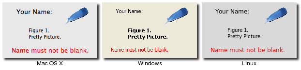<br>
Label Widgets
</p>

<div class="tcl"><p>Labels are created using the <tt><b>ttk::label</b></tt> command, and typically their contents are set up at the same time:</p>
	<pre>ttk::label .label -text {Full name:}</pre></div>
<div class="ruby"><p>Labels are created using the <tt><b>Tk::Tile::Label</b></tt> class, and typically their contents are set up at the same time:</p>
	<pre>label = Tk::Tile::Label.new(<em>parent</em>) {text 'Full name:'}</pre></div>
<div class="perl"><p>Labels are created using the <tt><b>new_ttk__label</b></tt> method, a.k.a. <tt><b>Tkx::ttk__label()</b></tt>, 
and typically their contents are set up at the same time:</p><pre>$label = $<em>parent</em>-&gt;new_ttk__label(-text =&gt; "Full name:");</pre></div>
<div class="python"><p>Labels are created using the <tt><b>ttk.Label</b></tt> function, and typically their contents are set up at the same time:</p>
	<pre>label = ttk.Label(<em>parent</em>, text='Full name:')</pre></div>
<p>
Like frames, labels can take several different configuration options which can alter how they are displayed.
</p>

<h4>Displaying Text</h4>

<p>
The <tt>"text"</tt> configuration option shown above when creating the label is the most commonly used, particularly when
the label is purely decorative or explanatory.  You can of course change this option at any time, not only when first
creating the label.
</p>
<p>
You can also have the widget monitor a variable in your script, so that anytime the variable changes, the label will
display the new value of the variable; this is done with the <tt>"textvariable"</tt> option:
</p>
<div class="tcl"><pre>.label configure -textvariable resultContents
set resultContents "New value to display"</pre>
<p>Variables must be global, or the fully qualified name given for those within a namespace.</p>
</div>
<div class="ruby"><pre>$resultsVar = TkVariable.new
label['textvariable'] = $resultsVar
$resultsVar.value = 'New value to display'</pre>
<p>
Ruby's Tk binding only allows you to attach to an instance of the <tt>"TkVariable"</tt> class, which contains all the
logic to watch for changes, communicate them back and forth between the variable and Tk, and so on.  You
need to read or write the current value using the <tt>"value"</tt> accessor, as shown.
</p>
</div>
<div class="perl"><pre>$label-&gt;configure(-textvariable =&gt; \$resultContents);
$resultContents = "New value to display";</pre>
<p>Variables must be global (package), not lexically scoped (e.g. "my" variables).</p>
</div>
<div class="python"><pre>resultsContents = StringVar()
label['textvariable'] = resultsContents
resultsContents.set('New value to display')</pre>
<p>
Tkinter only allows you to attach to an instance of the <tt>"StringVar"</tt> class, which contains all the
logic to watch for changes, communicate them back and forth between the variable and Tk, and so on.  You
need to read or write the current value using the <tt>"get"</tt> and <tt>"set"</tt> methods.
</p>
</div>


<h4>Displaying Images</h4>

You can also display an image in a label instead of text; if you just want an image sitting in your
interface, this is normally the way to do it.  We'll go into images in more detail in a later chapter,
but for now, let's assume you want to display a GIF image that is sitting in a file on disk.  This
is a two-step process, first creating an image "object", and then telling the label to use that object
via its <tt>"image"</tt> configuration option:

<div class="tcl"><pre>image create photo imgobj -file "myimage.gif"
.label configure -image imgobj</pre></div>
<div class="ruby"><pre>image = TkPhotoImage.new(:file =&gt; "myimage.gif")
label['image'] = image</pre></div>
<div class="perl"><pre>Tkx::image_create_photo( "imgobj", -file =&gt; "myimage.gif");
$label-&gt;configure(-image =&gt; "imgobj");</pre></div>
<div class="python"><pre>image = PhotoImage(file='myimage.gif')
label['image]' = image</pre></div>

<p>
You can use both an image and text, as you'll often see in toolbar buttons, via the 
<tt>"compound"</tt> configuration option.  The default value is <tt>"none"</tt>, meaning display
only the image if present, otherwise the text specified by the <tt>"text"</tt> or
<tt>"textvariable"</tt> options.  Other options are <tt>"text"</tt> (text only), <tt>"image"</tt> (image only),
<tt>"center"</tt> (text in center of image), <tt>"top"</tt> (image above text), <tt>"left"</tt>, <tt>"bottom"</tt>, and <tt>"right"</tt>.

</p>
<h4>Layout</h4>
<p>
While the overall layout of the label (i.e. where it is positioned within the user interface,
and how large it is) is determined by the geometry manager, there are several options that can
help you control how the label will be displayed within the box the geometry manager gives it.
</p>
<p>
If the box given to the label is larger than the label requires for its contents, you can use
the <tt>"anchor"</tt> option to specify what edge or corner the label should be attached to,
which would leave any empty space in the opposite edge or corner.  Possible values are
specified as compass directions: <tt>"n"</tt> (north, or top edge), <tt>"ne"</tt>, (north-east, or top right corner),
<tt>"e"</tt>, <tt>"se"</tt>, <tt>"s"</tt>, <tt>"sw"</tt>, <tt>"w"</tt>, <tt>"nw"</tt> or <tt>"center"</tt>.  
</p>
Labels can be used to display more than one line of text.  This can be done by embedding carriage
returns (<tt>"\n"</tt>) in the <tt>"text"</tt>/<tt>"textvariable"</tt> string.  You can also let the label wrap
the string into multiple lines that are no longer than a given length (with the size specified
as pixels, centimeters, etc.), by using the <tt>"wraplength"</tt> option.
<p></p>
<p class="upgrade">
Multi-line labels are a replacement for the older <tt>"message"</tt> widgets in classic Tk.
</p>
<p>
You can also control how the text is justified, by using the <tt>"justify"</tt> option, which
can have the values <tt>"left"</tt>, <tt>"center"</tt> or <tt>"right"</tt>.  If you only have a single line of text, this
is pretty much the same as just using the <tt>"anchor"</tt> option, but is more useful with
multiple lines of text.
</p>

<h4>Fonts, Colors and More</h4>
<p>
Like with frames, normally you don't want to touch things like the font and colors directly,
but if you need to change them (e.g. to create a special type of label), this would be done
via creating a new style, which is then used by the widget with the <tt>"style"</tt> option.
</p>
<p>
Unliked most themed widgets, the label widget also provides explicit widget-specific options
as an alternative; again, you'd use this only in special one-off cases, when using a style
didn't necessarily make sense.
</p>
<p>
You can specify the font used to display the label's text using the <tt>"font"</tt> configuration
option.  While we'll go into fonts in more detail in a later chapter, here are the names of some
predefined fonts you can use:
</p>
<table><tbody><tr><td><tt>TkDefaultFont</tt></td><td>The default for all GUI items not otherwise specified.</td></tr>
	<tr><td><tt>TkTextFont</tt></td><td>Used for entry widgets, listboxes, etc.</td></tr>
	<tr><td><tt>TkFixedFont</tt></td><td>A standard fixed-width font.</td></tr>
	<tr><td><tt>TkMenuFont</tt></td><td>The font used for menu items.</td></tr>
	<tr><td><tt>TkHeadingFont</tt></td><td>The font typically used for column headings in lists and tables.</td></tr>
	<tr><td><tt>TkCaptionFont</tt></td><td>A font for window and dialog caption bars.</td></tr>
	<tr><td><tt>TkSmallCaptionFont</tt></td><td>A smaller caption font for subwindows or tool dialogs</td></tr>
	<tr><td><tt>TkIconFont</tt></td><td>A font for icon captions.</td></tr>
	<tr><td><tt>TkTooltipFont</tt></td><td>A font for tooltips.</td></tr></tbody></table>
<p class="tip">
Because the choice of fonts is so platform specific, be careful of hardcoding them (font families, sizes, etc.); 
this is something else you'll see in a lot of older Tk programs that can make them look ugly.
</p>
<p>
The foreground (text) and background color can also be changed via the <tt>"foreground"</tt> and
<tt>"background"</tt> options.  Colors are covered in detail later, but you can specify these as either
color names (e.g. <tt>"red"</tt>) or hex RGB codes (e.g. <tt>"#ff340a"</tt>).
</p>
<p>
Labels also accept the <em>"relief"</em> option that was discussed for frames.
</p>


 <p><a name="button"></a>&nbsp;</p><h2>Button</h2>

<ul class="menu">
<li><a href="http://www.tkdocs.com/widgets/button.html">Widget Roundup</a></li>
<li><a href="http://www.tcl.tk/man/tcl8.5/TkCmd/ttk_button.htm">Reference Manual</a></li>
</ul>
<p>
A <b>button</b>, unlike a frame or label, is very much designed for the user to interact with, and in
particular, press to perform some action.  Like labels, they can display text or images, but also have
a whole range of new options used to control their behavior.
</p>

<p class="picture">
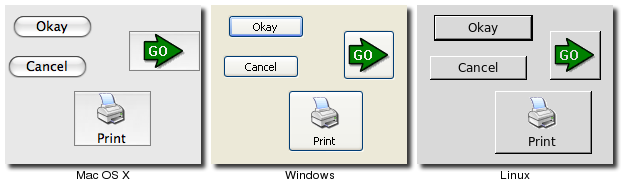<br>
Button Widgets
</p>

<div class="tcl"><p>Buttons are created using the <tt><b>ttk::button</b></tt> command, and typically their contents and command callback are set up at the same time:</p>
	<pre>ttk::button .button -text "Okay" -command "submitForm"</pre></div>
<div class="ruby"><p>Buttons are created using the <tt><b>Tk::Tile::Button</b></tt> class, and typically their contents and command callback are set up at the same time:</p>
	<pre>button = Tk::Tile::Button.new(<em>parent</em>) {text 'Okay'; command 'submitForm'}</pre></div>
<div class="perl"><p>Buttons are created using the <tt><b>new_ttk__button</b></tt> method, a.k.a. <tt><b>Tkx::ttk__button()</b></tt>, 
	and typically their contents and command callbackare set up at the same time:</p><pre>$button = $<em>parent</em>-&gt;new_ttk__button(-text =&gt; "Okay", -command =&gt; sub {submitForm();});</pre></div>
<div class="python"><p>Buttons are created using the <tt><b>ttk.Button</b></tt> function, and typically their contents and command callback are set up at the same time:</p>
		<pre>button = ttk.Button(<em>parent</em>, text='Okay', command=submitForm)</pre></div>
<p>
As with other widgets, buttons can take several different configuration options which can alter their appearance and behavior.
</p>

<h4>Text or Image</h4>
<p>
Buttons take the same <tt>"text"</tt>, <tt>"textvariable"</tt> (rarely used), <tt>"image"</tt> and <tt>"compound"</tt>
configuration options as labels, which control whether the button displays text and/or an image.
</p>
<p>
Buttons have a <tt>"default"</tt> option, which tells Tk that the button is the default button in the user interface
(i.e. the one that will be invoked if the user hits Enter or Return).  Some platforms and styles will draw this with
a different border or highlight.  Set the option to <tt>"active"</tt> to specify this is a default button; the regular state
is <tt>"normal"</tt>.  Note that setting this option doesn't create an event binding that will make the Return or Enter key
activate the button; that you have to do yourself.
</p>

<h4>The Command Callback</h4>
<p>
The <tt>"command"</tt> option is used to provide an interface between the button's action and your application.
When the user clicks the button, the script provided by the option is evaluated by the interpreter.
</p>
<p>
You can also ask the button to invoke the command callback from your application.  This is useful so that you don't
need to repeat the command to be invoked several times in your program; so you know if you change the option on the
button, you don't need to change it elsewhere too.
</p>
<div class="tcl"><pre>.button invoke</pre></div>
<div class="ruby"><pre>button invoke</pre></div>
<div class="perl"><pre>$button-&gt;invoke</pre></div>
<div class="python"><pre>button.invoke()</pre></div>

<h4>Button State</h4>

<p>
Buttons and many other widgets can be in a normal state where they can be pressed, but can also be put into
a disabled state, where the button is greyed out and cannot be pressed.  This is done when the button's
command is not applicable at a given point in time.
</p>
<p>
All themed widgets carry with them an internal state, which is a series of binary flags.  You can set or 
clear these different flags, as well as check the current setting using the <tt>"state"</tt> and <tt>"instate"</tt> methods.  
Buttons make use of the <tt>"disabled"</tt> flag to control whether or not the user can press the button.  For example:
</p>
<div class="tcl">
<pre>.button state disabled            ;# set the disabled flag, disabling the button
.button state !disabled           ;# clear the disabled flag
.button instate disabled          ;# return 1 if the button is disabled, else 0
.button instate !disabled         ;# return 1 if the button is not disabled, else 0
.button instate !disabled {mycmd} ;# execute 'mycmd' if the button is not disabled
</pre>
</div>
<div class="ruby">
<pre>button.state('disabled')            ;# set the disabled flag, disabling the button
button.state('!disabled')           ;# clear the disabled flag
button.instate('disabled')          ;# return true if the button is disabled, else false
button.instate('!disabled')         ;# return true if the button is not disabled, else false
button.instate('!disabled', 'cmd')  ;# execute 'cmd' if the button is not disabled
</pre>
</div>
<div class="perl">
<pre>$button-&gt;state("disabled")                  ;# set the disabled flag, disabling the button
$button-&gt;state("!disabled")                 ;# clear the disabled flag
$button-&gt;instate("disabled")                ;# return 1 if the button is disabled, else 0
$button-&gt;instate("!disabled")               ;# return 1 if the button is not disabled, else 0
$button-&gt;instate("!disabled", sub {mycmd})  ;# execute 'mycmd' if the button is not disabled
</pre>
</div>
<div class="python"><pre>button.state(['disabled'])            ;# set the disabled flag, disabling the button
button.state(['!disabled'])           ;# clear the disabled flag
button.instate(['disabled'])          ;# return true if the button is disabled, else false
button.instate(['!disabled'])         ;# return true if the button is not disabled, else false
button.instate(['!disabled'], cmd)    ;# execute 'cmd' if the button is not disabled
</pre>
<p class="tip">Note that these commands accept an <b>array</b> of state flags as their argument.</p>
</div>

<p class="upgrade">
Using <tt>"state"</tt>/<tt>"instate"</tt> replaces the older <tt>"state"</tt> configuration option (which took the values <tt>"normal"</tt> or
<tt>"disabled"</tt>).  This configuration option is actually still available in Tk 8.5, but "write-only", which means that
changing the option calls the appropriate <tt>"state"</tt> command, but other changes made using the <tt>"state"</tt>
command are not reflected in the option.  This is only for compatibility reasons; you should change your code to 
use the new state vector.
</p>	
<p class="fyi">
The full list of state flags available to themed widgets is: <tt>"active"</tt>, <tt>"disabled"</tt>, <tt>"focus"</tt>, <tt>"pressed"</tt>, <tt>"selected"</tt>,
<tt>"background"</tt>, <tt>"readonly"</tt>, <tt>"alternate"</tt>, and <tt>"invalid"</tt>.  These are described in the
<a href="http://www.tcl.tk/man/tcl8.5/TkCmd/ttk_widget.htm">themed widget reference</a>; not all states
are meaningful for all widgets.  It's also possible to get fancy in the <tt>"state"</tt> and <tt>"instate"</tt> methods
and specify multiple state flags at the same time.
</p>

 
 <p><a name="checkbutton"></a>&nbsp;</p><h2>Checkbutton</h2>

<ul class="menu">
<li><a href="http://www.tkdocs.com/widgets/checkbutton.html">Widget Roundup</a></li>
<li><a href="http://www.tcl.tk/man/tcl8.5/TkCmd/ttk_checkbutton.htm">Reference Manual</a></li>
</ul>
<p>
A <b>checkbutton</b> is like a regular button, except that not only can the user press it, which
will invoke a command callback, but it also holds a binary value of some kind (i.e. a toggle).  
Checkbuttons are used all the time when a user is asked to choose between e.g. two different values 
for an option.
</p>

<p class="picture">
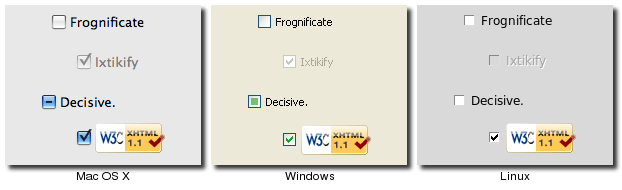<br>
Checkbutton Widgets
</p>

<div class="tcl"><p>Checkbuttons are created using the <tt><b>ttk::checkbutton</b></tt> command, and typically set up at the same time:</p>
	<pre>ttk::checkbutton .check -text "Use Metric" -command "metricChanged" 
	    -variable measuresystem -onvalue metric -offvalue imperial</pre></div>
<div class="ruby"><p>Checkbuttons are created using the <tt><b>Tk::Tile::CheckButton</b></tt> class, and typically set up at the same time:</p>
	<pre>$measureSystem = TkVariable.new
check = Tk::Tile::CheckButton.new(<em>parent</em>) {text 'Use Metric'; 
	    command 'metricChanged'; variable $measureSystem; 
	    onvalue 'metric'; offvalue 'imperial'}</pre></div>
<div class="perl"><p>Checkbuttons are created using the <tt><b>new_ttk__checkbutton</b></tt> method, a.k.a. <tt><b>Tkx::ttk__checkbutton</b></tt>, 
and typically set up at the same time:</p>
	<pre>$check = $<em>parent</em>-&gt;new_ttk__checkbutton(-text =&gt; "Use Metric", -command =&gt; sub {metricChanged},
	    -variable =&gt; \$measuresystem, -onvalue =&gt; "metric", -offvalue =&gt; "imperial")</pre></div>
<div class="python"><p>Checkbuttons are created using the <tt><b>ttk.Checkbutton</b></tt> function, and typically set up at the same time:</p>
		<pre>measureSystem = StringVar()
check = ttk.Checkbutton(<em>parent</em>, text='Use Metric', 
	    command=metricChanged, variable=measureSystem,
	    onvalue='metric', offvalue='imperial')</pre></div>
<p>
Checkbuttons use many of the same options as regular buttons, but add a few more.  The <tt>"text"</tt>, <tt>"textvariable"</tt>,
<tt>"image"</tt>, and <tt>"compound"</tt> options control the display of the label (next to the check box itself), and the
<tt>"state"</tt> and <tt>"instate"</tt> methods allow you to manipulate the <tt>"disabled"</tt> state flag to enable or disable the checkbutton.  Similarly,
the <tt>"command"</tt> option lets you specify a script to be called everytime the user toggles the checkbutton, and the 
<tt>"invoke"</tt> method will also execute the same callback.
</p>
<h4>Widget Value</h4>
<p>
Unlike buttons, checkbuttons also hold a value.  We've seen before how the <tt>"textvariable"</tt> option can be used to tie
the label of a widget to a variable in your program; the <tt>"variable"</tt> option for checkbuttons behaves similarly, except
it is used to read or change the current value of the widget, and updates whenever the widget is toggled.  By default, 
checkbuttons use a value of <tt>"1"</tt> when the widget is checked, and <tt>"0"</tt> when not checked, but these can be changed to just about
anything using the <tt>"onvalue"</tt> and <tt>"offvalue"</tt> options.
</p>
<p>
What happens when the linked variable contains neither the on value or the off value (or even doesn't exist)?  In that case,
the checkbutton is put into a special "tristate" or indeterminate mode; you'll sometimes see this in user interfaces
where the checkbox holds a single dash rather than being empty or holding a check mark.  When in this state, the state
flag <tt>"alternate"</tt> is set, so you can check for it with the <tt>"instate"</tt> method:
</p>
<div class="tcl"><pre>.check instate alternate</pre></div>
<div class="ruby"><pre>check.instate('alternate')</pre></div>
<div class="perl"><pre>$check-&gt;instate("alternate")</pre></div>
<div class="python"><pre>check.instate(['alternate'])</pre></div>
<p>
Because the checkbutton won't automatically set (or create) the linked variable, your program needs to make sure it
sets the variable to the appropriate starting value. 
</p>

 <p><a name="radiobutton"></a>&nbsp;</p><h2>Radiobutton</h2>

<ul class="menu">
<li><a href="http://www.tkdocs.com/widgets/radiobutton.html">Widget Roundup</a></li>
<li><a href="http://www.tcl.tk/man/tcl8.5/TkCmd/ttk_radiobutton.htm">Reference Manual</a></li>
</ul>
<p>
A <b>radiobutton</b> lets you choose between one of a number of mutually exclusive choices;
unlike a checkbutton, it is not limited to just two choices.  Radiobuttons are always used 
together in a set, and are a good option when the number of choices is fairly small, e.g. 3-5.
</p>

<p class="picture">
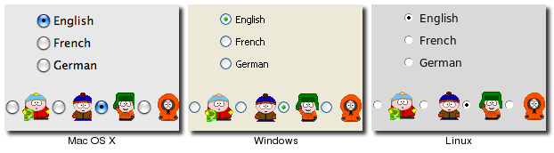<br>
Radiobutton Widgets
</p>

<div class="tcl"><p>Radiobuttons are created using the <tt><b>ttk::radiobutton</b></tt> command, typically as a set:</p>
	<pre>ttk::radiobutton .home -text "Home" -variable phone -value home
ttk::radiobutton .office -text "Office" -variable phone -value office
ttk::radiobutton .cell -text "Mobile" -variable phone -value cell</pre></div>
<div class="ruby"><p>Radiobuttons are created using the <tt><b>Tk::Tile::RadioButton</b></tt> class, and typically as a set:</p>
	<pre>$phone = TkVariable.new
home = Tk::Tile::RadioButton.new(<em>parent</em>) {text 'Home'; variable $phone; value 'home'}
office = Tk::Tile::RadioButton.new(<em>parent</em>) {text 'Office'; variable $phone; value 'office'}
cell = Tk::Tile::RadioButton.new(<em>parent</em>) {text 'Mobile'; variable $phone; value 'cell'}</pre></div>
<div class="perl"><p>Radiobuttons are created using the <tt><b>new_ttk__radiobutton</b></tt> method, a.k.a. <tt><b>Tkx::ttk__radiobutton</b></tt>, 
typically as a set:</p>
	<pre>$home = $<em>parent</em>-&gt;new_ttk__radiobutton(-text =&gt; "Home", -variable =&gt; \$phone, -value =&gt; "home");
$office = $<em>parent</em>-&gt;new_ttk__radiobutton(-text =&gt; "Office", -variable =&gt; \$phone, -value =&gt; "office");
$cell = $<em>parent</em>-&gt;new_ttk__radiobutton(-text =&gt; "Mobile", -variable =&gt; \$phone, -value =&gt; "cell");</pre></div>
<div class="python"><p>Radiobuttons are created using the <tt><b>ttk.Radiobutton</b></tt> function, and typically as a set:</p>
	<pre>phone = StringVar()
home = ttk.Radiobutton(<em>parent</em>, text='Home', variable=phone, value='home')
office = ttk.Radiobutton(<em>parent</em>, text='Office', variable=phone, value='office')
cell = ttk.Radiobutton(<em>parent</em>, text='Mobile', variable=phone, value='cell')</pre></div>

<p>
Radiobuttons share most of the same configuration options as checkbuttons.  One exception is that the 
<tt>"onvalue"</tt> and <tt>"offvalue"</tt> options are replaced with a single <tt>"value"</tt> option.
Each of the radiobuttons of the set will have the same linked variable, but a different value; when
the variable has the given value, the radiobutton will be selected, otherwise unselected.  When
the linked variable does not exist, radiobuttons also display a "tristate" or indeterminate, which
can be checked via the <tt>"alternate"</tt> state flag.
</p>


 <p><a name="entry"></a>&nbsp;</p><h2>Entry</h2>

<ul class="menu">
<li><a href="http://www.tkdocs.com/widgets/entry.html">Widget Roundup</a></li>
<li><a href="http://www.tcl.tk/man/tcl8.5/TkCmd/ttk_entry.htm">Reference Manual</a></li>
</ul>
<p>
An <b>entry</b> presents the user with a single line text field that they can use to
type in a string value.  These can be just about anything: their name, a city, a password, social 
security number, and so on.
</p>

<p class="picture">
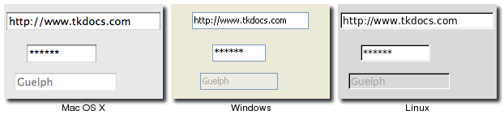<br>
Entry Widgets
</p>

<div class="tcl"><p>Entries are created using the <tt><b>ttk::entry</b></tt> command:</p>
	<pre>ttk::entry .name -textvariable username</pre></div>
<div class="ruby"><p>Entries are created using the <tt><b>Tk::Tile::Entry</b></tt> class:</p>
	<pre>$username = TkVariable.new
name = Tk::Tile::Entry.new(<em>parent</em>) { textvariable $username }</pre></div>
<div class="perl"><p>Entries are created using the <tt><b>new_ttk__entry</b></tt> method, a.k.a. <tt><b>Tkx::ttk__entry</b></tt>:</p>
	<pre>$name = $<em>parent</em>-&gt;new_ttk__entry(-textvariable =&gt; \$username)</pre></div>
<div class="python"><p>Entries are created using the <tt><b>ttk.Entry</b></tt> function:</p>
	<pre>username = StringVar()
name = ttk.Entry(<em>parent</em>, textvariable=username)</pre></div>

<p>
A <tt>"width"</tt> configuration option may be specified to provide the number of
characters wide the entry should be, allowing you for example to provide a shorter
entry for a zip or postal code.
</p>
<p>
We've seen how checkbutton and radiobutton widgets have a value associated with them.
Entries do as well, and that value is normally accessed through a linked variable
specified by the <tt>"textvariable"</tt> configuration option.  Note that unlike
the various buttons, entries don't have a separate text or image beside them to
identify them; use a separate label widget for that.
</p>
<p>
You can also get or change the value of the entry widget directly, without going
through the linked variable.  The <tt>"get"</tt> method returns the current value, and
the <tt>"delete"</tt> and <tt>"insert"</tt> methods let you change the contents, e.g.
</p>
<div class="tcl"><pre>puts "current value is [.name get]"
.name delete 0 end           ; # delete between two indices, 0-based
.name insert 0 "your name"   ; # insert new text at a given index</pre></div>
<div class="ruby"><pre>puts ("current value is #{name.get}")
name.delete(0, end)          ; # delete between two indices, 0-based
name.insert(0, 'your name')  ; # insert new text at a given index</pre></div>
<div class="perl"><pre>print "current value is " . $name-&gt;get
$name-&gt;delete(0, "end")         ; # delete between two indices, 0-based
$name-&gt;insert(0, "your name")   ; # insert new text at a given index</pre></div>
<div class="python"><pre>print('current value is %s' % name.get())
name.delete(0,'end')         ; # delete between two indices, 0-based
name.insert(0, 'your name')  ; # insert new text at a given index</pre></div>

<p>
Note that entry widgets do not have a <tt>"command"</tt> option which will invoke a
callback whenever the entry is changed.  To watch for changes, you should watch
for changes on the linked variable.  See also "Validation", below.
</p>

<h4>Passwords</h4>
<p>
Entries can be used for passwords, where the actual contents are displayed as a bullet or other symbol.
To do this, set the <tt>"show"</tt> configuration option to the character you'd like to display, e.g. <tt>"*"</tt>.
</p>

<h4>Widget States</h4>
<p>
Like the various buttons, entries can also be put into a disabled state via the <tt>"state"</tt> command (and queried
with <tt>"instate"</tt>).  Entries can also use the state flag <tt>"readonly"</tt>; if set, users cannot change the entry,
though they can still select the text in it (and copy it to the clipboard).  There is also an <tt>"invalid"</tt>
state, set if the entry widget fails validation, which leads us to...
</p>

<h4>Validation</h4>

<p class="oops">
validate (controls overall validation behavior) - none (default), key 
(on each keystroke, runs before - prevalidation), focus/focusin/focusout
 (runs after.. revalidation), all
<br>* validatecommand script (script must return 1 or 0)
<br>* invalidcommand script (runs when validate command returns 0)
<br>- various substitutions in scripts..  most useful %P (new value of entry), %s (value of entry prior to editing)
<br>- the callbacks can also modify the entry using insert/delete, or modify -textvariable, which means the 
	   		in progress edit is rejected in any case (since it would overwrite what we just set)
<br>* .e validate to force validation now
</p>


 <p><a name="combobox"></a>&nbsp;</p><h2>Combobox</h2>

<ul class="menu">
<li><a href="http://www.tkdocs.com/widgets/combobox.html">Widget Roundup</a></li>
<li><a href="http://www.tcl.tk/man/tcl8.5/TkCmd/ttk_combobox.htm">Reference Manual</a></li>
</ul>
<p>
A <b>combobox</b> combines an entry with a list of choices available to the user.  This lets them
either choose from a set of values you've provided (e.g. typical settings), but also put in their
own value (e.g. for less common cases you don't want to include in the list).
</p>

<p class="picture">
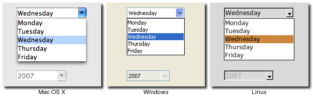<br>
Combobox Widgets
</p>

<div class="tcl"><p>Comboboxes are created using the <tt><b>ttk::combobox</b></tt> command:</p>
	<pre>ttk::combobox .country -textvariable country</pre></div>
<div class="ruby"><p>Comboboxes are created using the <tt><b>Tk::Tile::Combobox</b></tt> class:</p>
	<pre>$countryvar = TkVariable.new
country = Tk::Tile::Combobox.new(<em>parent</em>) { textvariable $countryvar }</pre></div>
<div class="perl"><p>Comboboxes are created using the <tt><b>new_ttk__combobox</b></tt> method, a.k.a. <tt><b>Tkx::ttk__combobox</b></tt>:</p>
	<pre>$country = $<em>parent</em>-&gt;new_ttk__combobox(-textvariable =&gt; \$countryvar)</pre></div>
<div class="python"><p>Comboboxes are created using the <tt><b>ttk.Combobox</b></tt> function:</p>
		<pre>countryvar = StringVar()
country = ttk.Combobox(<em>parent</em>, textvariable=countryvar)</pre></div>

<p>
Like entries, the <tt>"textvariable"</tt> option links a variable in your program to the
current value of the combobox.  As with other widgets, the linked variable will not be set automatically.
You can also get the current value using the <tt>"get"</tt> method, and change the current value using the <tt>"set"</tt> 
method (which takes a single argument, the new value). 
</p>
<p>
A combobox will generate a <tt>"&lt;ComboboxSelected&gt;"</tt> virtual event that you can bind to whenever its value changes.
</p>
<div class="tcl"><pre>bind .country &lt;&lt;ComboboxSelected&gt;&gt; { <em>script</em> }</pre></div>
<div class="ruby"><pre>country.bind("&lt;ComboboxSelected&gt;") { <em>script</em> }</pre></div>
<div class="perl"><pre>$country-&gt;g_bind("&lt;&lt;ComboboxSelected&gt;&gt;", sub { <em>script</em> })</pre></div>
<div class="python"><pre>country.bind('&lt;&lt;ComboboxSelected&gt;&gt;', <em>function</em>)</pre></div>

<h4>Predefined Values</h4>
<p>
You can provide a list of values the user can choose from using the <tt>"values"</tt> configuration
option:
</p>
<div class="tcl"><pre>.country configure -values [list USA Canada Australia]</pre></div>
<div class="ruby"><pre>country['values'] = [ 'USA', 'Canada', 'Australia'] </pre></div>
<div class="perl"><pre>$country-&gt;configure(-values =&gt; "USA Canada Australia")</pre></div>
<div class="python"><pre>country['values'] = ('USA', 'Canada', 'Australia')</pre></div>

<p>
If set, the <tt>"readonly"</tt> state flag will restrict the user to making choices only from the list
of predefined values, but not be able to enter their own (though if the current value of the
combobox is not in the list, it won't be changed).  
</p>
<p>
As a complement to the <tt>"get"</tt> and <tt>"set"</tt> methods, you can also use the <tt>"current"</tt> method to determine
which item in the predefined values list is selected (call <tt>"current"</tt> with no arguments, it will
return a 0-based index into the list, or -1 if the current value is not in the list), or select
one of the items in the list (call <tt>"current"</tt> with a single 0-based index argument).
</p>
<p class="tip">
Want to associate some other value with each item in the list, so that your program can refer to some actual
meaningful value, but it gets displayed in the combobox as something else?  You'll want to have a look at
the section entitled "Keeping Extra Item Data" when we get to the discussion of listboxes in a couple of 
chapters from now.
</p>

<p> </p><p class="date"></p><h1>The Grid Geometry Manager</h1>
<p>
We'll take a bit of a break from talking about different widgets (what to put onscreen), and
focus instead on geometry management (where to put it).  We introduced the general idea of 
geometry management in the "Tk Concepts" chapter; here, we focus on one specific geometry manager: grid.
</p>
<p>
As you've seen, grid lets you layout widgets in columns and rows.  If you're familiar with using
HTML tables to do layout, you'll feel right at home here.  This chapter describes the various ways
you can tweak grid to give you all the control you need for your user interface.
</p>
<p>
Grid is one of several geometry managers available in Tk, but it's mix of power, flexibility and ease of use, along with
its natural fit with today's layouts (that rely on alignment of widgets) make it the best choice
for general use.  There are other geometry managers: "pack" is also quite powerful, but harder to
use and understand; "place" gives you complete control of positioning each element; we'll see even
widgets like paned windows, notebooks, canvas and text can act as geometry managers.
</p>
<p class="upgrade">
Grid was first introduced to Tk in 1996, several years after Tk became popular, and took a while to catch on.
Before that, developers had always used "pack" to do constraint-based geometry management.  When grid came
out, many developers kept using pack, and you'll still find it used in many Tk programs and documentation.
While there's nothing technically wrong with it, the algorithm's behavior is often hard to understand.
More importantly, because the order that widgets are packed is significant in determining layout, modifying
existing layouts can be more difficult.  
<br>&nbsp;<br>
Grid has all the power of pack, generally produces nicer layouts (because
it makes it easy to align widgets both horizontally and vertically), and is easier to learn and use.
Because of that, we think grid is the right choice for most developers most of the time.  Start
your new programs using grid, and switch old ones to grid as you're making changes to an existing user interface.
</p>
<p>
The <a href="http://www.tcl.tk/man/tcl8.5/TkCmd/grid.htm">reference documentation for grid</a> provides an
exhaustive description of grid, its behaviors and all options.
</p>


 <p><a name="colsrows"></a>&nbsp;</p><h2>Columns and Rows</h2>
<p>
Using grid, widgets are assigned a <tt>"column"</tt> number and a <tt>"row"</tt> number, which indicates their relative
position to each other.  All widgets in the same column will therefore be above or below each other,
while those in the same row will be to the left or right of each other.
</p>
<p>
Column and row numbers must be integers, with the first column and row starting at 0.  You can
leave gaps in column and row numbers (e.g. column 0, 1, 2, 10, 11, 12, 20, 21), which is handy
if you plan to add more widgets in the middle of the user interface at a later time.
</p>
<p>
The width of each column (or height of each row) depends on the width or height of the widgets
contained within the column or row.  This means when sketching out your user interface, and 
dividing it into rows and columns, you don't need to worry about each column or row being
equal width.
</p>

 <p><a name="span"></a>&nbsp;</p><h2>Spanning Multiple Cells</h2>
<p>
Widgets can take up more than a single cell in the grid; to do this, you'll use the <tt>"columnspan"</tt>
and <tt>"rowspan"</tt> options when gridding the widget.  These are analogous to the "colspan" and "rowspan"
attribute of HTML tables. 
</p>
<p>
Here is an example of creating a user interface that has multiple widgets, some that take up
more than a single cell.
</p>

<p class="picture">
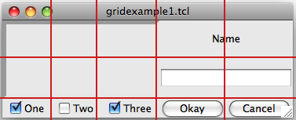<br>
Gridding multiple widgets
</p>

<div class="tcl"><pre>ttk::frame .c
ttk::frame .c.f -borderwidth 5 -relief sunken -width 200 -height 100
ttk::label .c.namelbl -text Name
ttk::entry .c.name
ttk::checkbutton .c.one -text One -variable one -onvalue 1; set one 1
ttk::checkbutton .c.two -text Two -variable two -onvalue 1; set two 0
ttk::checkbutton .c.three -text Three -variable three -onvalue 1; set three 1
ttk::button .c.ok -text Okay
ttk::button .c.cancel -text Cancel

grid .c -column 0 -row 0
grid .c.f -column 0 -row 0 -columnspan 3 -rowspan 2
grid .c.namelbl -column 3 -row 0 -columnspan 2
grid .c.name -column 3 -row 1 -columnspan 2
grid .c.one -column 0 -row 3
grid .c.two -column 1 -row 3
grid .c.three -column 2 -row 3
grid .c.ok -column 3 -row 3
grid .c.cancel -column 4 -row 3</pre></div>
<div class="ruby"><pre>require 'tk'
require 'tkextlib/tile'
root = TkRoot.new

content = Tk::Tile::Frame.new(root)
frame = Tk::Tile::Frame.new(content) {borderwidth 5; relief "sunken"; width 200; height 100}
namelbl = Tk::Tile::Label.new(content) {text "Name"}
name = Tk::Tile::Entry.new(content)
$option_one = TkVariable.new( 1 )
one = Tk::Tile::CheckButton.new(content) {text "One"; variable $option_one; onvalue 1}
$option_two = TkVariable.new( 0 )
two = Tk::Tile::CheckButton.new(content) {text "Two"; variable $option_two; onvalue 1}
$option_three = TkVariable.new( 1 ) 
three = Tk::Tile::CheckButton.new(content) {text "Three"; variable $option_three; onvalue 1}
ok = Tk::Tile::Button.new(content) {text "Okay"}
cancel = Tk::Tile::Button.new(content) {text "Cancel"}

content.grid :column =&gt; 0, :row =&gt; 0 
frame.grid :column =&gt; 0, :row =&gt; 0, :columnspan =&gt; 3, :rowspan =&gt; 2
namelbl.grid :column =&gt; 3, :row =&gt; 0, :columnspan =&gt; 2
name.grid :column =&gt; 3, :row =&gt; 1, :columnspan =&gt; 2
one.grid :column =&gt; 0, :row =&gt; 3
two.grid :column =&gt; 1, :row =&gt; 3
three.grid :column =&gt; 2, :row =&gt; 3
ok.grid :column =&gt; 3, :row =&gt; 3
cancel.grid :column =&gt; 4, :row =&gt; 3

Tk.mainloop
</pre></div>
<div class="perl"><pre>use Tkx;

my $mw = Tkx::widget-&gt;new(".");
my $content = $mw-&gt;new_ttk__frame;
my $frame = $content-&gt;new_ttk__frame(-borderwidth =&gt; 5, -relief =&gt; "sunken", -width =&gt; 200, -height =&gt; 100);
my $namelbl = $content-&gt;new_ttk__label(-text =&gt; "Name");
my $name = $content-&gt;new_ttk__entry;
$option_one = 1; $option_two = 0; $option_three = 1;
my $one = $content-&gt;new_ttk__checkbutton(-text =&gt; "One", -variable =&gt; \$option_one, -onvalue =&gt; 1); 
my $two = $content-&gt;new_ttk__checkbutton(-text =&gt; "Two", -variable =&gt; \$option_two, -onvalue =&gt; 1);
my $three = $content-&gt;new_ttk__checkbutton(-text =&gt; "Three", -variable =&gt; \$option_three, -onvalue =&gt; 1);
my $ok = $content-&gt;new_ttk__button(-text =&gt; "Okay");
my $cancel = $content-&gt;new_ttk__button(-text =&gt; "Cancel");

$content-&gt;g_grid(-column =&gt; 0, -row =&gt; 0);
$frame-&gt;g_grid(-column =&gt; 0, -row =&gt; 0, -columnspan =&gt; 3, -rowspan =&gt; 2);
$namelbl-&gt;g_grid(-column =&gt; 3, -row =&gt; 0, -columnspan =&gt; 2);
$name-&gt;g_grid(-column =&gt; 3, -row =&gt; 1, -columnspan =&gt; 2);
$one-&gt;g_grid(-column =&gt; 0, -row =&gt; 3);
$two-&gt;g_grid(-column =&gt; 1, -row =&gt; 3);
$three-&gt;g_grid(-column =&gt; 2, -row =&gt; 3);
$ok-&gt;g_grid(-column =&gt; 3, -row =&gt; 3);
$cancel-&gt;g_grid(-column =&gt; 4, -row =&gt; 3);

Tkx::MainLoop;
</pre></div>
<div class="python"><pre>from tkinter import *
from tkinter import ttk

root = Tk()

content = ttk.Frame(root)
frame = ttk.Frame(content, borderwidth=5, relief="sunken", width=200, height=100)
namelbl = ttk.Label(content, text="Name")
name = ttk.Entry(content)

onevar = BooleanVar()
twovar = BooleanVar()
threevar = BooleanVar()
onevar.set(True)
twovar.set(False)
threevar.set(True)

one = ttk.Checkbutton(content, text="One", variable=onevar, onvalue=True)
two = ttk.Checkbutton(content, text="Two", variable=twovar, onvalue=True)
three = ttk.Checkbutton(content, text="Three", variable=threevar, onvalue=True)
ok = ttk.Button(content, text="Okay")
cancel = ttk.Button(content, text="Cancel")

content.grid(column=0, row=0)
frame.grid(column=0, row=0, columnspan=3, rowspan=2)
namelbl.grid(column=3, row=0, columnspan=2)
name.grid(column=3, row=1, columnspan=2)
one.grid(column=0, row=3)
two.grid(column=1, row=3)
three.grid(column=2, row=3)
ok.grid(column=3, row=3)
cancel.grid(column=4, row=3)

root.mainloop()
</pre></div>

 <p><a name="incell"></a>&nbsp;</p><h2>Layout within the Cell</h2>
<p>
Because the width of a column (and height of a row) depends on all the widgets that have been
added to it, the odds are that at least some widgets will have a smaller width or height than
has been allocated for the cell its been placed in.  So the question becomes, where exactly 
should it be put within the cell?
</p>
<p>
By default, if a cell is larger than the widget contained in it, the widget will be centered
within it, both horizontally and vertically, with the master's background  showing 
in the empty space around it. The <tt>"sticky"</tt> option can be used to change this default behavior.
</p>
<p>
The value of the <tt>"sticky"</tt> option is a string of 0 or more of the compass directions "nsew", 
specifying which edges of the cell the widget should be "stuck" to.  So for example, a
value of <tt>"n"</tt> (north) will jam the widget up against the top side, with any extra vertical
space on the bottom; the widget will still be centered horizontally.  A value of <tt>"nw"</tt> (north-west)
means the widget will be stuck to the top left corner, with extra space on the bottom and right.
</p>
<div class="python">
<p class="tip">In Tkinter, you can also specify this as a list, containing any of N, S, E and W.</p>
</div>
<p>
Specifying two opposite edges, such as <tt>"we"</tt> (west, east) means that the widget will be stretched,
in this case so it is stuck both to the left and right edge.  So the widget will then be wider
than its "ideal" size.  Most widgets have options that can control how they are displayed if
they are larger than needed.  For example, a label widget has an <tt>"anchor"</tt> option which
controls where the text of the label will be positioned.
</p>	
<p>
If you want the widget to expand to fill up the entire cell, grid it with a sticky value of <tt>"nsew"</tt>
(north, south, east, west) meaning it will stick to every side.
</p>

 <p><a name="resize"></a>&nbsp;</p><h2>Handling Resize</h2>
<p>
If you've taken a peek below and added the extra <tt>"sticky"</tt> options to our example, when you try
it out you'll notice things still don't look quite right (the entry is lower on the screen then
we'd want), and things are even worse if you try to resize the window — nothing moves at all!
</p>
<p>
It looks like "sticky" may tell Tk <em>how</em> to react if the cell's row or column does resize, but doesn't
actually say that the row or columns <em>should</em> resize if extra room becomes available.  
Let's fix that. 
</p>
<p>
Every column and row has a <tt>"weight"</tt> grid option associated with it, which tells it how much it should
grow if there is extra room in the master to fill.  By default, the weight of each column or
row is 0, meaning don't expand to fill space.
</p>
<p>
For the user interface to resize then, we'll need to give a positive weight to the columns
we'd like to expand.  This is done using the <tt>"columnconfigure"</tt> and <tt>"rowconfigure"</tt> methods of grid.
If two columns have the same weight, they'll expand at the same rate;
if one has a weight of 1, another of 3, the latter one will expand three pixels for every
one pixel added to the first.
</p>
<p>
Both <tt>"columnconfigure"</tt> and <tt>"rowconfigure"</tt> also take a <tt>"minsize"</tt> grid option,
which specifies a minimum size which you really don't want the column or row to shrink beyond.
</p>

 <p><a name="padding"></a>&nbsp;</p><h2>Padding</h2>
<p>
Normally, each column or row will be directly adjacent to the next, so that widgets will be
right next to each other.  This is sometimes what you want (think of a listbox and its scrollbar),
but often you want some space between widgets.  In Tk, this is called padding, and there are
several ways you can choose to add it.
</p>
<p>
We've already actually seen one way, and that is using a widget's own options to add the extra
space around it.  Not all widgets have this, but one that does is a frame; this is useful because
frames are most often used as the master to grid other widgets.  The frame's <tt>"padding"</tt>
option lets you specify a bit of extra padding inside the frame, whether the same amount for
each of the four sides, or even different for each.
</p>
A second way is using the <tt>"padx"</tt> and <tt>"pady"</tt> grid options when adding the widget.  As you'd
expect, <tt>"padx"</tt> puts a bit of extra space to the left and right of the widget, while <tt>"pady"</tt>
adds extra space top and bottom.  A single value for the option puts the same padding on
both left and right (or top and bottom), while a two value list lets you put different amounts
on left and right (or top and bottom).  Note that this extra padding is within the grid cell
containing the widget.
<p></p>
<p>
If you want to add padding around an entire row or column, the <tt>"columnconfigure"</tt> and <tt>"rowconfigure"</tt>
methods accept a <tt>"pad"</tt> option, which will do this for you.
</p>
	
<p>
Let's add the extra sticky, resizing, and padding behavior to our example (additions in bold).
</p>

<div class="tcl"><pre>ttk::frame .c <b>-padding "3 3 12 12"</b>
ttk::frame .c.f -borderwidth 5 -relief sunken -width 200 -height 100 
ttk::label .c.namelbl -text Name
ttk::entry .c.name
ttk::checkbutton .c.one -text One -variable one -onvalue 1; set one 1
ttk::checkbutton .c.two -text Two -variable two -onvalue 1; set two 0
ttk::checkbutton .c.three -text Three -variable three -onvalue 1; set three 1
ttk::button .c.ok -text Okay
ttk::button .c.cancel -text Cancel

grid .c -column 0 -row 0 <b>-sticky nsew</b>
grid .c.f -column 0 -row 0 -columnspan 3 -rowspan 2 <b>-sticky nsew</b>
grid .c.namelbl -column 3 -row 0 -columnspan 2 <b>-sticky nw -padx 5</b>
grid .c.name -column 3 -row 1 -columnspan 2 <b>-sticky new -pady 5 -padx 5</b>
grid .c.one -column 0 -row 3
grid .c.two -column 1 -row 3
grid .c.three -column 2 -row 3
grid .c.ok -column 3 -row 3
grid .c.cancel -column 4 -row 3

<b>grid columnconfigure . 0 -weight 1
grid rowconfigure . 0 -weight 1
grid columnconfigure .c 0 -weight 3
grid columnconfigure .c 1 -weight 3
grid columnconfigure .c 2 -weight 3
grid columnconfigure .c 3 -weight 1 
grid columnconfigure .c 4 -weight 1 
grid rowconfigure .c 1 -weight 1</b>
</pre></div>
<div class="ruby"><pre>require 'tk'
require 'tkextlib/tile'
root = TkRoot.new

content = Tk::Tile::Frame.new(root) <b>{padding "3 3 12 12"}</b>
frame = Tk::Tile::Frame.new(content) {borderwidth 5; relief "sunken"; width 200; height 100}
namelbl = Tk::Tile::Label.new(content) {text "Name"}
name = Tk::Tile::Entry.new(content)
$option_one = TkVariable.new( 1 )
one = Tk::Tile::CheckButton.new(content) {text "One"; variable $option_one; onvalue 1}
$option_two = TkVariable.new( 0 )
two = Tk::Tile::CheckButton.new(content) {text "Two"; variable $option_two; onvalue 1}
$option_three = TkVariable.new( 1 ) 
three = Tk::Tile::CheckButton.new(content) {text "Three"; variable $option_three; onvalue 1}
ok = Tk::Tile::Button.new(content) {text "Okay"}
cancel = Tk::Tile::Button.new(content) {text "Cancel"}

content.grid :column =&gt; 0, :row =&gt; 0, <b>:sticky =&gt; 'nsew'</b>
frame.grid :column =&gt; 0, :row =&gt; 0, :columnspan =&gt; 3, :rowspan =&gt; 2, <b>:sticky =&gt; 'nsew'</b>
namelbl.grid :column =&gt; 3, :row =&gt; 0, :columnspan =&gt; 2, <b>:sticky =&gt; 'nw', :padx =&gt; 5</b>
name.grid :column =&gt; 3, :row =&gt; 1, :columnspan =&gt; 2, <b>:sticky =&gt; 'new', :pady =&gt; 5, :padx =&gt; 5</b>
one.grid :column =&gt; 0, :row =&gt; 3
two.grid :column =&gt; 1, :row =&gt; 3
three.grid :column =&gt; 2, :row =&gt; 3
ok.grid :column =&gt; 3, :row =&gt; 3
cancel.grid :column =&gt; 4, :row =&gt; 3

<b>TkGrid.columnconfigure( root, 0, :weight =&gt; 1 )
TkGrid.rowconfigure( root, 0, :weight =&gt; 1 )
TkGrid.columnconfigure( content, 0, :weight =&gt; 3 )
TkGrid.columnconfigure( content, 1, :weight =&gt; 3 )
TkGrid.columnconfigure( content, 2, :weight =&gt; 3 )
TkGrid.columnconfigure( content, 3, :weight =&gt; 1 )
TkGrid.columnconfigure( content, 4, :weight =&gt; 1 )
TkGrid.rowconfigure( content, 1, :weight =&gt; 1)</b>

Tk.mainloop
</pre></div>
<div class="perl"><pre>use Tkx;

my $mw = Tkx::widget-&gt;new(".");
my $content = $mw-&gt;new_ttk__frame(<b>-padding =&gt; "3 3 12 12"</b>);
my $frame = $content-&gt;new_ttk__frame(-borderwidth =&gt; 5, -relief =&gt; "sunken", -width =&gt; 200, -height =&gt; 100);
my $namelbl = $content-&gt;new_ttk__label(-text =&gt; "Name");
my $name = $content-&gt;new_ttk__entry;
$option_one = 1; $option_two = 0; $option_three = 1;
my $one = $content-&gt;new_ttk__checkbutton(-text =&gt; "One", -variable =&gt; \$option_one, -onvalue =&gt; 1); 
my $two = $content-&gt;new_ttk__checkbutton(-text =&gt; "Two", -variable =&gt; \$option_two, -onvalue =&gt; 1);
my $three = $content-&gt;new_ttk__checkbutton(-text =&gt; "Three", -variable =&gt; \$option_three, -onvalue =&gt; 1);
my $ok = $content-&gt;new_ttk__button(-text =&gt; "Okay");
my $cancel = $content-&gt;new_ttk__button(-text =&gt; "Cancel");

$content-&gt;g_grid(-column =&gt; 0, -row =&gt; 0, <b>-sticky =&gt; "nsew"</b>);
$frame-&gt;g_grid(-column =&gt; 0, -row =&gt; 0, -columnspan =&gt; 3, -rowspan =&gt; 2, <b>-sticky =&gt; "nsew"</b>);
$namelbl-&gt;g_grid(-column =&gt; 3, -row =&gt; 0, -columnspan =&gt; 2, <b>-sticky =&gt; "nw", -padx =&gt; 5</b>);
$name-&gt;g_grid(-column =&gt; 3, -row =&gt; 1, -columnspan =&gt; 2, <b>-sticky =&gt; "new", -pady =&gt; 5, -padx =&gt; 5</b>);
$one-&gt;g_grid(-column =&gt; 0, -row =&gt; 3);
$two-&gt;g_grid(-column =&gt; 1, -row =&gt; 3);
$three-&gt;g_grid(-column =&gt; 2, -row =&gt; 3);
$ok-&gt;g_grid(-column =&gt; 3, -row =&gt; 3);
$cancel-&gt;g_grid(-column =&gt; 4, -row =&gt; 3);

<b>$mw-&gt;g_grid_columnconfigure(0, -weight =&gt; 1);
$mw-&gt;g_grid_rowconfigure(0, -weight =&gt; 1);
$content-&gt;g_grid_columnconfigure(0, -weight =&gt; 3);
$content-&gt;g_grid_columnconfigure(1, -weight =&gt; 3);
$content-&gt;g_grid_columnconfigure(2, -weight =&gt; 3);
$content-&gt;g_grid_columnconfigure(3, -weight =&gt; 1);
$content-&gt;g_grid_columnconfigure(4, -weight =&gt; 1);
$content-&gt;g_grid_rowconfigure(1, -weight =&gt; 1);</b>

Tkx::MainLoop;
</pre></div>
<div class="python"><pre>from tkinter import *
from tkinter import ttk

root = Tk()

content = ttk.Frame(root, <b>padding=(3,3,12,12)</b>)
frame = ttk.Frame(content, borderwidth=5, relief="sunken", width=200, height=100)
namelbl = ttk.Label(content, text="Name")
name = ttk.Entry(content)

onevar = BooleanVar()
twovar = BooleanVar()
threevar = BooleanVar()

onevar.set(True)
twovar.set(False)
threevar.set(True)

one = ttk.Checkbutton(content, text="One", variable=onevar, onvalue=True)
two = ttk.Checkbutton(content, text="Two", variable=twovar, onvalue=True)
three = ttk.Checkbutton(content, text="Three", variable=threevar, onvalue=True)
ok = ttk.Button(content, text="Okay")
cancel = ttk.Button(content, text="Cancel")

content.grid(column=0, row=0, <b>sticky=(N, S, E, W)</b>)
frame.grid(column=0, row=0, columnspan=3, rowspan=2, <b>sticky=(N, S, E, W)</b>)
namelbl.grid(column=3, row=0, columnspan=2, <b>sticky=(N, W), padx=5</b>)
name.grid(column=3, row=1, columnspan=2, <b>sticky=(N, E, W), pady=5, padx=5</b>)
one.grid(column=0, row=3)
two.grid(column=1, row=3)
three.grid(column=2, row=3)
ok.grid(column=3, row=3)
cancel.grid(column=4, row=3)

<b>root.columnconfigure(0, weight=1)
root.rowconfigure(0, weight=1)
content.columnconfigure(0, weight=3)
content.columnconfigure(1, weight=3)
content.columnconfigure(2, weight=3)
content.columnconfigure(3, weight=1)
content.columnconfigure(4, weight=1)
content.rowconfigure(1, weight=1)</b>

root.mainloop()</pre></div>
<p>
This looks more promising.  Play around with the example to get a feel for the resize behavior.
</p>

<p class="picture">
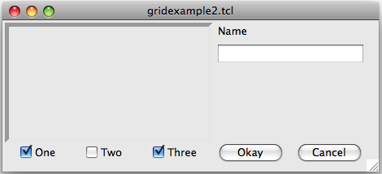<br>
Grid example, handling in-cell layout and resize.
</p>

<p class="tip">
You'll notice the little resize gadget at the very bottom right of the window; while we're just
taking the easy route and avoiding it with the extra padding, we'll see later how to better
take it into account using a "sizegrip" widget.
</p>


 <p><a name="morefeatures"></a>&nbsp;</p><h2>Additional Grid Features</h2>
<p>
As you could see from the <a href="http://www.tcl.tk/man/tcl8.5/TkCmd/grid.htm">grid reference</a>,
there are lots of other things you can do with grid.  Here are a few of the more useful ones.
</p>

<h3>Querying and Changing Grid Options</h3>
<p>
Like widgets themselves, it's easy to introspect the various grid options, as well as change them; 
setting options when you first grid the widget is just a convenience, and you can certainly change
them anytime you'd like.
</p>
<p>
The <tt>"slaves"</tt> method will tell you all the widgets that have been gridded inside a master, or optionally
those within just a certain column or row.  The <tt>"info"</tt> method will give you a list of all the grid
options for a widget and their values.  Finally, the <tt>"configure"</tt> method lets you change one or more
grid options on a widget. 
</p>
<p>
These are illustrated in this interactive session:
</p>
<div class="tcl"><pre>% <b>grid slaves .c</b>
.c.cancel .c.ok .c.three .c.two .c.one .c.name .c.namelbl .c.f
% <b>grid slaves .c -row 3</b>
.c.cancel .c.ok .c.three .c.two .c.one
% <b>grid slaves .c -column 0</b>
.c.one .c.f
% <b>grid info .c.namelbl</b>
-in .c -column 3 -row 0 -columnspan 2 -rowspan 1 -ipadx 0 -ipady 0 -padx 5 -pady 0 -sticky nw
% <b>grid configure .c.namelbl -sticky ew</b>
% <b>grid info .c.namelbl</b>
-in .c -column 3 -row 0 -columnspan 2 -rowspan 1 -ipadx 0 -ipady 0 -padx 5 -pady 0 -sticky ew
</pre></div>
<div class="ruby"><pre>&gt;&gt; <b>TkGrid.slaves(content, nil)</b>
=&gt; [#&lt;Tk::Tile::TButton:0x380fa4 @path=".w00000.w00008"&gt;, 
#&lt;Tk::Tile::TButton:0x500d20 @path=".w00000.w00007"&gt;, 
#&lt;Tk::Tile::TCheckButton:0x50aac8 @path=".w00000.w00006"&gt;, 
#&lt;Tk::Tile::TCheckButton:0x524158 @path=".w00000.w00005"&gt;, 
#&lt;Tk::Tile::TCheckButton:0x54b4b0 @path=".w00000.w00004"&gt;, 
#&lt;Tk::Tile::TEntry:0x5d07a0 @path=".w00000.w00003"&gt;, 
#&lt;Tk::Tile::TLabel:0x5fa9b0 @path=".w00000.w00002"&gt;,
#&lt;Tk::Tile::TFrame:0x5ff280 @visual=nil, @container=nil, @colormap=nil, 
@path=".w00000.w00001", @db_class=Tk::Tile::TFrame, @classname="TFrame"&gt;]
&gt;&gt; <b>TkGrid.slaves(content, :row =&gt; 3)</b>
=&gt; [#&lt;Tk::Tile::TButton:0x380fa4 @path=".w00000.w00008"&gt;, 
#&lt;Tk::Tile::TButton:0x500d20 @path=".w00000.w00007"&gt;, 
#&lt;Tk::Tile::TCheckButton:0x50aac8 @path=".w00000.w00006"&gt;, 
#&lt;Tk::Tile::TCheckButton:0x524158 @path=".w00000.w00005"&gt;, 
#&lt;Tk::Tile::TCheckButton:0x54b4b0 @path=".w00000.w00004"&gt;]
&gt;&gt; <b>TkGrid.slaves(content, :column =&gt; 0)</b>
=&gt; [#&lt;Tk::Tile::TCheckButton:0x54b4b0 @path=".w00000.w00004"&gt;, 
#&lt;Tk::Tile::TFrame:0x5ff280 @visual=nil, @container=nil, @colormap=nil, 
@path=".w00000.w00001", @db_class=Tk::Tile::TFrame, @classname="TFrame"&gt;]
&gt;&gt; <b>TkGrid.info(namelbl)</b>
=&gt; {"ipadx"=&gt;0, "ipady"=&gt;0, "columnspan"=&gt;2, "row"=&gt;0, "column"=&gt;3, 
"in"=&gt;#&lt;Tk::Tile::TFrame:0x60ef78 @visual=nil, @container=nil, @colormap=nil,
 @path=".w00000", @db_class=Tk::Tile::TFrame, @classname="TFrame"&gt;, "rowspan"=&gt;1, 
"sticky"=&gt;"nw", "padx"=&gt;5, "pady"=&gt;0}
&gt;&gt; <b>TkGrid.configure(namelbl, :sticky =&gt; 'ew')</b>
=&gt; ""
&gt;&gt; <b>TkGrid.info(namelbl)</b>
=&gt; {"ipadx"=&gt;0, "ipady"=&gt;0, "columnspan"=&gt;2, "row"=&gt;0, "column"=&gt;3, 
"in"=&gt;#&lt;Tk::Tile::TFrame:0x60ef78 @visual=nil, @container=nil, @colormap=nil, 
@path=".w00000", @db_class=Tk::Tile::TFrame, @classname="TFrame"&gt;, "rowspan"=&gt;1, 
"sticky"=&gt;"ew", "padx"=&gt;5, "pady"=&gt;0}
</pre></div>
<div class="perl"><pre>Perl&gt; <b>$content-&gt;g_grid_slaves</b>
.f.b2 .f.b .f.c3 .f.c2 .f.c .f.e .f.l .f.f
Perl&gt; <b>$content-&gt;g_grid_slaves(-row =&gt; 3)</b>
.f.b2 .f.b .f.c3 .f.c2 .f.c
Perl&gt; <b>$content-&gt;g_grid_slaves(-column =&gt; 0)</b>
.f.c .f.f
Perl&gt; <b>$namelbl-&gt;g_grid_info</b>
-in .f -column 3 -row 0 -columnspan 2 -rowspan 1 -ipadx 0 -ipady 0 -padx 5 -pady 0 -sticky nw
Perl&gt; <b>$namelbl-&gt;g_grid_configure(-sticky =&gt; "ew")</b>

Perl&gt; <b>$namelbl-&gt;g_grid_info</b>
-in .f -column 3 -row 0 -columnspan 2 -rowspan 1 -ipadx 0 -ipady 0 -padx 5 -pady 0 -sticky ew	
</pre></div>
<div class="python"><pre>&gt;&gt;&gt; <b>content.grid_slaves()</b>
&lt;map object at 0x00C3F470&gt;
&gt;&gt;&gt; <b>for w in content.grid_slaves(): print(w)</b>
...
.14597008.14622128
.14597008.14622096
.14597008.14622064
.14597008.14622032
.14597008.14622000
.14597008.14621872
.14597008.14621840
.14597008.14621808
&gt;&gt;&gt; <b>for w in content.grid_slaves(row=3): print(w)</b>
...
.14597008.14622128
.14597008.14622096
.14597008.14622064
.14597008.14622032
.14597008.14622000
&gt;&gt;&gt; <b>for w in content.grid_slaves(column=0): print(w)</b>
...
.14597008.14622000
.14597008.14621808
&gt;&gt;&gt; <b>namelbl.grid_info()</b>
{'rowspan': '1', 'column': '3', 'sticky': 'nw', 'ipady': '0', 'ipadx': '0', 'columnspan': '2', 
'in': &lt;tkinter.ttk.Frame object at 0x00DEBB90&gt;, 'pady': '0', 'padx': '5', 'row': '0'}
&gt;&gt;&gt; <b>namelbl.grid_configure(sticky=(E,W))</b>
&gt;&gt;&gt; <b>namelbl.grid_info()</b>
{'rowspan': '1', 'column': '3', 'sticky': 'ew', 'ipady': '0', 'ipadx': '0', 'columnspan': '2', 
'in': &lt;tkinter.ttk.Frame object at 0x00DEBB90&gt;, 'pady': '0', 'padx': '5', 'row': '0'}
</pre></div>

<h3>Internal Padding</h3>
<p>
You saw how the <tt>"padx"</tt> and <tt>"pady"</tt> grid options added extra space around the outside of a widget.
There's also a less used type of padding called "internal padding", which is controlled by the
grid options <tt>"ipadx"</tt> and <tt>"ipady"</tt>.
</p>
<p>
The difference can be subtle.  Let's say you have a frame that's 20x20, and specify normal (external)
padding of 5 pixels on each side.  The frame will request a 20x20 rectangle (its natural size) from
the geometry manager.  Normally, that's what it will be granted, so it'll get a 20x20 rectangle for
the frame, surrounded by a 5 pixel border.
</p>
<p>
With internal padding, the geometry manager will effectively add the extra padding to the widget when
figuring out its natural size, as if the widget has requested a 30x30 rectangle.  If the frame is
centered, or attached to a single side or corner (using <tt>"sticky"</tt>), you'll end up with a 20x20 frame
with extra space around it.  If however the frame is set to stretch (i.e. a <tt>"sticky"</tt> value of <tt>"we"</tt>,
<tt>"ns"</tt>, or <tt>"nwes"</tt>) it will fill the extra space, resulting in a 30x30 frame, with no border.
</p>

<h3>Forget and Remove</h3>
<p>
The <tt>"forget"</tt> method of grid, taking as arguments a list of one or more slave widgets, can be used to remove slaves
from the grid they're currently part of.  This does not destroy the widget altogether, but takes it off the
screen, as if it had not been gridded in the first place.  You can grid it again later, though any grid options
you'd originally assigned will have been lost. 
</p>
<p>
The <tt>"remove"</tt> method of grid works the same, except that the grid options will be remembered.
</p>
	
<h3>Nested Layouts</h3>
<p>
As your user interface gets more complicated, the grid that you're using to organize all your widgets can
get more and more complicated, and more fine-grained.  This can make changing and maintaining your program
very difficult.
</p>
<p>
Luckily, you don't have to manage your entire user interface with a single grid.  If you have one area of
your user interface that is fairly independent of others, create a new frame to hold that area, and grid
the widgets that are part of that area within that frame.  If you had a graphics program of some kind with
multiple palletes, toolbars, and so on, each one of those areas might be a candidate for putting in its
own frame.
</p>
<p>
In theory, these frames, each with its own grid, can be nested arbitrarily deep, though in practice this
usually doesn't go beyond a few levels.  This can be a big help in modularizing your program.  If for 
example you have a pallete of drawing tools, you can create the whole thing in a separate procedure, 
including creating all the component widgets, gridding them together, setting up event bindings, and so on.
From the point of view of your main program, all it needs to see is the single frame widget containing
it all.  
</p>
<p>
Our examples have shown just a hint of this, where a content frame was gridded into the main window,
and then all the other widgets gridded into the content frame.
</p>


<p> </p><p class="date"></p><h1>More Widgets</h1>
<p>
This chapter carries on introducing several more widgets: listbox, scrollbar, text, progressbar,
scale and spinbox.  Some of these are starting to be a bit more powerful than the basic ones
we looked at before.  Here we'll also see a few instances of using the classic Tk widgets, in
instances where there isn't (or there isn't a need for) a themed counterpart.
</p>

 <p><a name="listbox"></a>&nbsp;</p><h2>Listbox</h2>

<ul class="menu">
<li><a href="http://www.tkdocs.com/widgets/listbox.html">Widget Roundup</a></li>
<li><a href="http://www.tcl.tk/man/tcl8.5/TkCmd/listbox.htm">Reference Manual</a></li>
</ul>
<p>
A <b>listbox</b> displays a list of single-line text items, usually lengthy, and allows the user
to browse through the list, selecting one or more.
</p>
<p>
Listboxes are part of the classic Tk widgets; there is not presently a listbox in the
themed Tk widget set.
</p>
<p class="tip">
Tk's treeview widget (which is themed) can also be used as a listbox (a one level deep tree),
allowing you to use icons and styles with the list.  It's also likely that a multi-column
(table) list widget will make it into Tk at some point, based on one of the available
extensions.
</p>

<p class="picture">
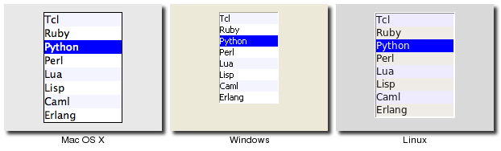<br>
Listbox Widgets
</p>


<div class="tcl"><p>Listboxes are created using the <tt><b>tk::listbox</b></tt> command:</p>
	<pre>tk::listbox .l -height 10</pre></div>
<div class="ruby"><p>Listboxes are created using the <tt><b>TkListbox</b></tt> class:</p>
	<pre>l = TkListbox.new(<em>parent</em>) {height 10}</pre></div>
<div class="perl"><p>Listboxes are created using the <tt><b>new_tk__listbox</b></tt> method, a.k.a. <tt><b>Tkx::tk__listbox</b></tt>:</p>
	<pre>$<em>parent</em>-&gt;new_tk__listbox(-height =&gt; 10)</pre></div>
<div class="python"><p>Listboxes are created using the <tt><b>Listbox</b></tt> function:</p>
	<pre>l = Listbox(<em>parent</em>, height=10)</pre></div>

<h3>Populating the Listbox Items</h3>
<p>
There's an easy way and a hard way to populate and manage all the items that are
contained in the listbox.  
</p>
<p>
Here is the easy way.  Each listbox has a <tt>"listvariable"</tt> configuration option, which allows you to 
link a variable (which must hold a list) to the listbox.  Each element of this list
is a string representing one item in the listbox.  So to add, remove, or rearrange
items in the listbox, you can simply manipulate this variable as you would any other
list.  Similarly, to find out which item is on the third line of the listbox, just
look at the third element of the list variable.
</p>
<div class="perl">
<p class="yuck">
Unfortunately, you can't pass a reference to a Perl list for this "listvariable" parameter.
It actually requires a <b>Tcl formatted list</b>, which is a string with elements separated by spaces,
and braces around all but the simplest elements.  So, you'll need to do the conversion
yourself.  There's a simple one-liner in the upcoming example that handles converting fairly
simple lists, but for unknown data you'll need something more robust.  
</p>
</div>
<p class="upgrade">
The reason there is a hard way at all is because the <tt>"listvariable"</tt> option was only
introduced in Tk 8.3.  Before that, you were stuck with the hard way.  Because using
the list variable lets you use all the standard list operations, it provides a much
simpler API, and is certainly an upgrade worth considering if you have listboxes doing
things the older way.
</p>
<p>
The older, harder way to do things is use a set of methods that are part of the listbox
widget itself that operate on the (internal) list of items:
</p>
<ul>
<li> The <tt>"insert <em>idx item ?item... ?</em>"</tt> method is used to add one or more items
	 to the list; <tt><em>"idx"</em></tt> is a 0-based index indicating the position of the item before
	 which the item(s) should be added; specify <tt>"end"</tt> to put the new items at the end of
	 the list.
</li><li> Use the <tt>"delete <em>first ?last?</em>"</tt> method to delete one or more items from the
	 list; <tt><em>"first"</em></tt> and <tt><em>"last"</em></tt> are indices as per the <tt>"insert"</tt> method.
</li><li> Use the <tt>"get <em>first ?last?</em>"</tt> method to return the contents of a single item at the 
	 given position, or a list of the items between <tt><em>"first"</em></tt> and <tt><em>"last"</em></tt>.
</li><li> The <tt>"size"</tt> method returns the number of items in the list.
</li></ul>

<h3>Selecting Items</h3>
<p>
The first thing you need to decide is whether it is possible for the user to select only a 
single item at a time, or if multiple items can simultaneously be selected.  This is 
controlled by the <tt>"selectmode"</tt> option: the default is only being able to select
a single item (<tt>"browse"</tt>), while a <tt>selectmode</tt> of <tt>"extended"</tt> allows the user to select 
multiple items.
</p>
<p class="yuck">
The names <tt>"browse"</tt> and <tt>"extended"</tt>, again for backwards compatibility reasons, are truly awful.  
This is made worse by the fact that there are two other modes, <tt>"single"</tt> and <tt>"multiple"</tt> which 
you <b>should not use</b> (they use an old interaction style that is inconsistent with modern
user interface and platform conventions).  
</p>
<p>
To find out which item or items in the listbox the user has currently selected, use the <tt>"curselection"</tt>
method, which will return the list of indices of all items currently selected; this may be an
empty list, and for lists with a <tt>selectmode</tt> of <tt>"browse"</tt>, will never be longer than one item.  You
can also use the <tt>"selection includes <em>index</em>"</tt> method to check if the item with the given 
index is currently selected.
</p>
<p>
To programmatically change the selection, you can use the <tt>"selection clear <em>first ?last?</em>"</tt>
method to deselect either a single item, or any within the range of indices specified.  To select
an item, or all items in a range, use the <tt>"selection set <em>first ?last?</em>"</tt> method.  Both of 
these will not touch the selection of any items outside the range specified.
</p>
<p>
If you do change the selection, you should also make sure that the newly selected item is visible
to the user (i.e. it is not scrolled out of view).  To do this, use the <tt>"see <em>index</em>"</tt> method.
</p>
<p>
When the selection is changed by the user, a <tt>"&lt;ListboxSelect&gt;"</tt> virtual event is generated.
You can bind to this to take any action you need.  Depending on your application, you may also want to bind
to a double-click <tt>"Double-1"</tt> event, and use it to invoke an action with the currently selected item.
</p>

<h3>Stylizing the List</h3>
<p>
Like most of the "classic" Tk widgets, you have immense flexibility in modifying the appearance of a listbox.
As described in the <a href="http://www.tcl.tk/man/tcl8.5/TkCmd/listbox.htm">reference manual</a>, you can
modify the font the listbox items are displayed in, the foreground (text) and background colors for items
in their normal state, when selected, when the widget is disabled, and so on.  There is also an
<tt>"itemconfigure"</tt> method which allows you to change the foreground and background colors of
individual items.
</p>
<p>
As is often the case, restraint is useful.  Generally, the default values will be entirely suitable, and a 
good match for platform conventions.  In the example we'll get to momentarily, we'll show how restrained
use of these options can be put to good effect, in this case displaying alternate lines of the listbox in
slightly different colors.
</p>

<h3>Keeping Extra Item Data</h3>
<p>
The <tt>"listvariable</tt>" (or the internal list, if you're managing things the old way) contains 
the strings that will be shown in the listbox.  It's very often the case though that each string in your program is
associated with some other data item, and what you're really interested in is not so much the string
displayed in the listbox, but the associated data item.  For example, a listbox containing names may
be what is presented to the user, but your program is really interested in the user object (or id number)
that is selected, not the particular name.  
</p>
<p>
How can we associate this value with the displayed name?  Unfortunately, the listbox widget itself doesn't
offer any facilities, so it's something we'll have to manage separately.  There are a couple of obvious
approaches.  First, if the displayed strings are guaranteed unique, you could use a hash table to map the
names to the associated object.  So, given the name you can easily get the associated object.  This probably
wouldn't work well for doing names, but could work for choosing countries for example.
</p>
<p>
A second approach is to keep a second list, parallel to the list of strings displayed in the listbox, which
will hold the associated objects.  So the first item in the strings list corresponds to the first item in
the objects list, the second to the second, and so on.  Any changes you make in one list (insert, delete,
reorder) you need to make in the other.  You can then easily map from the list item to the underlying
object, based on their position in the list.
</p>

<h3>Example</h3>
<p>
Here is a silly example showing these various listbox techniques.  We'll have a list of countries
displayed.  Behind the scenes, we have a database (a simple hash table) which contains the population of
each country, indexed by the two letter country code.  We'll be able to select only a single country at a
time, and as we do so, a status bar will display the population of the country.  Double-clicking on the
list, or hitting the Return key, will send one of several gifts to the selected country's head of state 
(well, not really, but use your imagination).
</p>
<p class="picture">
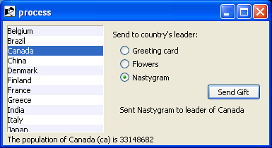<br>
Country Selector Listbox Example
</p>
<div class="tcl">
<pre><em># Initialize our country "databases":</em>
<em>#  - the list of country codes (a subset anyway)</em>
<em>#  - a parallel list of country names, in the same order as the country codes</em>
<em>#  - a hash table mapping country code to population&lt;</em>
set countrycodes [list ar au be br ca cn dk fi fr gr in it jp mx nl no es se ch]
set countrynames [list Argentina Australia Belgium Brazil Canada China Denmark \
        Finland France Greece India Italy Japan Mexico Netherlands Norway Spain \
        Sweden Switzerland]
array set populations [list ar 41000000 au 21179211 be 10584534 br 185971537 \
        ca 33148682 cn 1323128240 dk 5457415 fi 5302000 fr 64102140 gr 11147000 \
        in 1131043000 it 59206382 jp 127718000 mx 106535000 nl 16402414 \
        no 4738085 es 45116894 se 9174082 ch 7508700]

<em># Names of the gifts we can send</em>
array set gifts [list card "Greeting card" flowers "Flowers" nastygram "Nastygram"]

<em># Create and grid the outer content frame</em>
grid [ttk::frame .c -padding "5 5 12 0"] -column 0 -row 0 -sticky nwes
grid columnconfigure . 0 -weight 1; grid rowconfigure . 0 -weight 1

<em># Create the different widgets; note the variables that many</em>
<em># of them are bound to, as well as the button callback.</em>
<em># The listbox is the only widget we'll need to refer to directly</em>
<em># later in our program, so for convenience we'll assign it to a variable.</em>
<b>set ::lbox</b> [tk::listbox .c.countries <b>-listvariable countrynames</b> -height 5]
ttk::label .c.lbl -text "Send to country's leader:"
ttk::radiobutton .c.g1 -text $gifts(card) <b>-variable gift</b> -value card
ttk::radiobutton .c.g2 -text $gifts(flowers) <b>-variable gift</b> -value flowers
ttk::radiobutton .c.g3 -text $gifts(nastygram) <b>-variable gift</b> -value nastygram
ttk::button .c.send -text "Send Gift" <b>-command {sendGift}</b> -default active
ttk::label .c.sentlbl <b>-textvariable sentmsg</b> -anchor center
ttk::label .c.status <b>-textvariable statusmsg</b> -anchor w

<em># Grid all the widgets</em>
grid .c.countries -column 0 -row 0 -rowspan 6 -sticky nsew
grid .c.lbl       -column 1 -row 0 -padx 10 -pady 5
grid .c.g1        -column 1 -row 1 -sticky w -padx 20
grid .c.g2        -column 1 -row 2 -sticky w -padx 20
grid .c.g3        -column 1 -row 3 -sticky w -padx 20
grid .c.send      -column 2 -row 4 -sticky e
grid .c.sentlbl   -column 1 -row 5 -columnspan 2 -sticky n -pady 5 -padx 5
grid .c.status    -column 0 -row 6 -columnspan 2 -sticky we
grid columnconfigure .c  0 -weight 1; grid rowconfigure .c 5 -weight 1

<em># Set event bindings for when the selection in the listbox changes,</em>
<em># when the user double clicks the list, and when they hit the Return key</em>
bind $::lbox &lt;&lt;ListboxSelect&gt;&gt; "showPopulation"
bind $::lbox &lt;Double-1&gt; "sendGift"
bind . &lt;Return&gt; "sendGift"

<em># Called when the selection in the listbox changes; figure out</em>
<em># which country is currently selected, and then lookup its country</em>
<em># code, and from that, its population.  Update the status message</em>
<em># with the new population.  As well, clear the message about the</em>
<em># gift being sent, so it doesn't stick around after we start doing</em>
<em># other things.</em>
proc showPopulation {} {
    set idx [$::lbox curselection]
    if {[llength $idx]==1} {
        set code [lindex $::countrycodes $idx]
        set name [lindex $::countrynames $idx]
        set popn $::populations($code)
        set ::statusmsg "The population of $name ($code) is $popn"
    }
    set ::sentmsg ""
}

<em># Called when the user double clicks an item in the listbox, presses</em>
<em># the "Send Gift" button, or presses the Return key.  In case the selected</em>
<em># item is scrolled out of view, make sure it is visible.</em>
#
<em># Figure out which country is selected, which gift is selected with the </em>
<em># radiobuttons, "send the gift", and provide feedback that it was sent.</em>
proc sendGift {} {
    set idx [$::lbox curselection]
    if {[llength $idx]==1} {
        $::lbox see $idx
        set name [lindex $::countrynames $idx]
        <em># Gift sending left as an exercise to the reader</em>
        set ::sentmsg "Sent $::gifts($::gift) to leader of $name"
    }     
}

<em># Colorize alternating lines of the listbox</em>
for {set i 0} {$i&lt;[llength $countrynames]} {incr i 2} {
    $::lbox itemconfigure $i -background #f0f0ff
}

<em># Set the starting state of the interface, including selecting the</em>
<em># default gift to send, and clearing the messages.  Select the first</em>
<em># country in the list; because the &lt;&lt;ListboxSelect&gt;&gt; event is only</em>
<em># generated when the user makes a change, we explicitly call showPopulation.</em>
set gift card
set sentmsg ""
set statusmsg ""
$::lbox selection set 0
showPopulation


</pre>
</div>
<div class="ruby">
<pre>require 'tkextlib/tile'

<em># Initialize our country "databases":</em>
<em>#  - the list of country codes (a subset anyway)</em>
<em>#  - a parallel list of country names, in the same order as the country codes</em>
<em>#  - a hash table mapping country code to population</em>
$countrycodes = %w{ ar au be br ca cn dk fi fr gr in it jp mx nl no es se ch }
$countrynames = %w{ Argentina Australia Belgium Brazil Canada China Denmark 
        Finland France Greece India Italy Japan Mexico Netherlands Norway Spain  
        Sweden Switzerland}
$populations = { 'ar' =&gt; 41000000, 'au' =&gt; 21179211, 'be' =&gt; 10584534, 'br' =&gt; 185971537,  
        'ca' =&gt; 33148682, 'cn' =&gt; 1323128240, 'dk' =&gt; 5457415, 'fi' =&gt; 5302000, 
        'fr' =&gt; 64102140, 'gr' =&gt; 11147000, 'in' =&gt; 1131043000, 'it' =&gt; 59206382,
        'jp' =&gt; 127718000, 'mx' =&gt; 106535000, 'nl' =&gt; 16402414, 'no' =&gt; 4738085, 
        'es' =&gt; 45116894, 'se' =&gt; 9174082, 'ch' =&gt; 7508700}

<em># Names of the gifts we can send</em>
$gifts = { 'card' =&gt; "Greeting card", 'flowers' =&gt; "Flowers", 'nastygram' =&gt; "Nastygram" }

<em># Create and initialize the linked variables we'll need in the interface</em>
$gift = TkVariable.new( "card" )
$names = TkVariable.new ( $countrynames )
$sent = TkVariable.new ( "" )
$status = TkVariable.new ( "" )

<em># Create and grid the outer content frame</em>
root = TkRoot.new
content = Tk::Tile::Frame.new(root) {padding "5 5 12 0"}.grid :column =&gt; 0, :row =&gt; 0, :sticky =&gt; "nwes"
TkGrid.columnconfigure root, 0, :weight =&gt; 1
TkGrid.rowconfigure root, 0, :weight =&gt; 1

<em># Create the different widgets; note the variables that many</em>
<em># of them are bound to, as well as the button callback.</em>
$countries = TkListbox.new(content) {<b>listvariable $names</b>; height 5}
sendlbl = Tk::Tile::Label.new(content) {text "Send to country's leader:"}
gift1 = Tk::Tile::Radiobutton.new(content) {text $gifts['card']; <b>variable $gift</b>; value 'card'}
gift2 = Tk::Tile::Radiobutton.new(content) {text $gifts['flowers']; <b>variable $gift</b>; value 'floweres'}
gift3 = Tk::Tile::Radiobutton.new(content) {text $gifts['nastygram']; <b>variable $gift;</b> value 'nastygram'}
send = Tk::Tile::Button.new(content) {text "Send Gift"; <b>command "sendGift"</b>; default "active"}
sentlbl = Tk::Tile::Label.new(content) {<b>textvariable $sent</b>; anchor "center"}
statuslbl = Tk::Tile::Label.new(content) {<b>textvariable $status</b>; anchor "w"}

<em># Grid all the widgets</em>
$countries.grid :column =&gt; 0, :row =&gt; 0, :rowspan =&gt; 6, :sticky =&gt; 'nsew'
sendlbl.grid    :column =&gt; 1, :row =&gt; 0, :padx =&gt; 10, :pady =&gt; 5
gift1.grid      :column =&gt; 1, :row =&gt; 1, :sticky =&gt; 'w', :padx =&gt; 20
gift2.grid      :column =&gt; 1, :row =&gt; 2, :sticky =&gt; 'w', :padx =&gt; 20
gift3.grid      :column =&gt; 1, :row =&gt; 3, :sticky =&gt; 'w', :padx =&gt; 20
send.grid       :column =&gt; 2, :row =&gt; 4, :sticky =&gt; 'e'
sentlbl.grid    :column =&gt; 1, :row =&gt; 5, :columnspan =&gt; 2, :sticky =&gt; 'n', :pady =&gt; 5, :padx =&gt; 5
statuslbl.grid  :column =&gt; 0, :row =&gt; 6, :columnspan =&gt; 2, :sticky =&gt; 'we'

TkGrid.columnconfigure content, 0, :weight =&gt; 1
TkGrid.rowconfigure content, 5, :weight =&gt; 1

<em># Set event bindings for when the selection in the listbox changes,</em>
<em># when the user double clicks the list, and when they hit the Return key</em>
$countries.bind '&lt;ListboxSelect&gt;', proc{showPopulation}
$countries.bind 'Double-1', proc{sendGift}
root.bind 'Return', proc{sendGift}

<em># Called when the selection in the listbox changes; figure out</em>
<em># which country is currently selected, and then lookup its country</em>
<em># code, and from that, its population.  Update the status message</em>
<em># with the new population.  As well, clear the message about the</em>
<em># gift being sent, so it doesn't stick around after we start doing</em>
<em># other things.</em>
def showPopulation
    idx = $countries.curselection
    if idx.length==1
        idx = idx[0]
        code = $countrycodes[idx]
        name = $countrynames[idx]
        popn = $populations[code]
        $status.value = "The population of #{name} (#{code}) is #{popn}"
    end
    $sent.value = ""
end

<em># Called when the user double clicks an item in the listbox, presses</em>
<em># the "Send Gift" button, or presses the Return key.  In case the selected</em>
<em># item is scrolled out of view, make sure it is visible.</em>
#
<em># Figure out which country is selected, which gift is selected with the </em>
<em># radiobuttons, "send the gift", and provide feedback that it was sent.</em>
def sendGift 
    idx = $countries.curselection
    if idx.length==1
        idx = idx[0]    
        $countries.see idx
        name = $countrynames[idx]
        <em># Gift sending left as an exercise to the reader</em>
        $sent.value = "Sent #{$gifts[$gift.value]} to leader of #{name}"
    end
end

<em># Colorize alternating lines of the listbox</em>
0.step($countrycodes.length-1, 2) {|i| $countries.itemconfigure i, :background, "#f0f0ff"}

<em># Select the first country in the list; because the &lt;&lt;ListboxSelect&gt;&gt; event is only</em>
<em># generated when the user makes a change, we explicitly call showPopulation.</em>
$countries.selection_set 0
showPopulation

Tk.mainloop
</pre>	
</div>
<div class="perl"><pre>use Tkx;

<em># Initialize our country "databases":</em>
<em>#  - the list of country codes (a subset anyway)</em>
<em>#  - a parallel list of country names, in the same order as the country codes</em>
<em>#  - a hash table mapping country code to population</em>
@countrycodes = ("ar", "au", "be", "br", "ca", "cn", "dk", "fi", "fr", "gr", "in", "it", "jp", "mx", 
                "nl", "no", "es", "se", "ch");
@countrynames = ("Argentina", "Australia", "Belgium", "Brazil", "Canada", "China", "Denmark", 
        "Finland", "France", "Greece", "India", "Italy", "Japan", "Mexico", "Netherlands", "Norway", "Spain", 
        "Sweden", "Switzerland");
%populations = ("ar" =&gt; 41000000, "au" =&gt; 21179211, "be" =&gt; 10584534, "br" =&gt; 185971537, 
        "ca" =&gt; 33148682, "cn" =&gt; 1323128240, "dk" =&gt; 5457415, "fi" =&gt; 5302000, "fr" =&gt; 64102140, "gr" =&gt; 11147000, 
        "in" =&gt; 1131043000, "it" =&gt; 59206382, "jp" =&gt; 127718000, "mx" =&gt; 106535000, "nl" =&gt; 16402414, 
        "no" =&gt; 4738085, "es" =&gt; 45116894, "se" =&gt; 9174082, "ch" =&gt; 7508700);

<em># Names of the gifts we can send</em>
%gifts =("card" =&gt; "Greeting card", "flowers" =&gt; "Flowers", "nastygram" =&gt; "Nastygram");

<em># Create and grid the outer content frame</em>
$mw = Tkx::widget-&gt;new(".");
$content = $mw-&gt;new_ttk__frame(-padding =&gt; "5 5 12 0");
$content-&gt;g_grid(-column =&gt; 0, -row =&gt; 0, -sticky =&gt; "nwes");
$mw-&gt;g_grid_columnconfigure(0, -weight =&gt; 1);
$mw-&gt;g_grid_rowconfigure(0, -weight =&gt; 1);

<em># Create the different widgets; note the variables that many</em>
<em># of them are bound to, as well as the button callback.</em>
<em># The listbox is the only widget we'll need to refer to directly</em>
<em># later in our program, so for convenience we'll assign it to a variable.</em>
<em># Remember that we must use a Tcl formatted list for listvariable.</em>
<b>$cnames = ''; foreach $i (@countrynames) {$cnames = $cnames . ' {' . $i . '}';};</b>
<b>$lbox</b> = $content-&gt;new_tk__listbox(<b>-listvariable =&gt; \$cnames</b>, -height =&gt; 5);
$lbl = $content-&gt;new_ttk__label(-text =&gt; "Send to country's leader:");
$g1 = $content-&gt;new_ttk__radiobutton(-text =&gt; $gifts{'card'}, <b>-variable =&gt; \$gift</b>, -value =&gt; 'card');
$g2 = $content-&gt;new_ttk__radiobutton(-text =&gt; $gifts{'flowers'}, <b>-variable =&gt; \$gift</b>, -value =&gt; 'flowers');
$g3 = $content-&gt;new_ttk__radiobutton(-text =&gt; $gifts{'nastygram'}, <b>-variable =&gt; \$gift</b>, -value =&gt; 'nastygram');
$send = $content-&gt;new_ttk__button(-text =&gt; "Send Gift", <b>-command =&gt; sub {sendGift()}</b>, -default =&gt; 'active');
$l1 = $content-&gt;new_ttk__label(<b>-textvariable =&gt; \$sentmsg</b>, -anchor =&gt; "center");
$l2 = $content-&gt;new_ttk__label(<b>-textvariable =&gt; \$statusmsg</b>, -anchor =&gt; "w");

<em># Grid all the widgets</em>
$lbox-&gt;g_grid(-column =&gt; 0, -row =&gt; 0, -rowspan =&gt; 6, -sticky =&gt; "nsew");
$lbl-&gt;g_grid(-column =&gt; 1, -row =&gt; 0, -padx =&gt; 10, -pady =&gt; 5);
$g1-&gt;g_grid(-column =&gt; 1, -row =&gt; 1, -sticky =&gt; "w", -padx =&gt; 20);
$g2-&gt;g_grid(-column =&gt; 1, -row =&gt; 2, -sticky =&gt; "w", -padx =&gt; 20);
$g3-&gt;g_grid(-column =&gt; 1, -row =&gt; 3, -sticky =&gt; "w", -padx =&gt; 20);
$send-&gt;g_grid(-column =&gt; 2, -row =&gt; 4, -sticky =&gt; "e");
$l1-&gt;g_grid(-column =&gt; 1, -row =&gt; 5, -columnspan =&gt; 2, -sticky =&gt; "n", -pady =&gt; 5, -padx =&gt; 5);
$l2-&gt;g_grid(-column =&gt; 0, -row =&gt; 6, -columnspan =&gt; 2, -sticky =&gt; "we");
$content-&gt;g_grid_columnconfigure(0, -weight =&gt; 1);
$content-&gt;g_grid_rowconfigure(0, -weight =&gt; 1);


<em># Set event bindings for when the selection in the listbox changes,</em>
<em># when the user double clicks the list, and when they hit the Return key</em>
$lbox-&gt;g_bind("&lt;&lt;ListboxSelect&gt;&gt;", sub {showPopulation()});
$lbox-&gt;g_bind("&lt;Double-1&gt;", sub {sendGift()});
$mw-&gt;g_bind("&lt;Return&gt;", sub {sendGift()});

<em># Called when the selection in the listbox changes; figure out</em>
<em># which country is currently selected, and then lookup its country</em>
<em># code, and from that, its population.  Update the status message</em>
<em># with the new population.  As well, clear the message about the</em>
<em># gift being sent, so it doesn't stick around after we start doing</em>
<em># other things.</em>
sub showPopulation {
    my @idx = $lbox-&gt;curselection;
    if ($#idx==0) {
        my $code = $countrycodes[$idx[0]];
        my $name = $countrynames[$idx[0]];
        my $popn = $populations{$code};
        $statusmsg = "The population of " . $name . "(" . $code . ") is $popn";
    }
    $sentmsg = "";
}

<em># Called when the user double clicks an item in the listbox, presses</em>
<em># the "Send Gift" button, or presses the Return key.  In case the selected</em>
<em># item is scrolled out of view, make sure it is visible.</em>
#
<em># Figure out which country is selected, which gift is selected with the </em>
<em># radiobuttons, "send the gift", and provide feedback that it was sent.</em>
sub sendGift {
    my @idx = $lbox-&gt;curselection;
    if ($#idx==0) {
        $lbox-&gt;see($idx[0]);
        my $name =$countrynames[$idx[0]];
        <em># Gift sending left as an exercise to the reader</em>
        $sentmsg = "Sent " . $gifts{$gift} . " to leader of " . $name
    }     
}

<em># Colorize alternating lines of the listbox</em>
for ($i=0; $i&lt;=$#countrynames; $i+=2) {
    $lbox-&gt;itemconfigure($i, -background =&gt; "#f0f0ff");
}

<em># Set the starting state of the interface, including selecting the</em>
<em># default gift to send, and clearing the messages.  Select the first</em>
<em># country in the list; because the &lt;&lt;ListboxSelect&gt;&gt; event is only</em>
<em># generated when the user makes a change, we explicitly call showPopulation.</em>
$gift = 'card';
$sentmsg = "";
$statusmsg = "";
$lbox-&gt;selection_set(0);
showPopulation;

Tkx::MainLoop();

</pre></div>
<div class="python"><pre>from tkinter import *
from tkinter import ttk
root = Tk()

<em># Initialize our country "databases":</em>
<em>#  - the list of country codes (a subset anyway)</em>
<em>#  - a parallel list of country names, in the same order as the country codes</em>
<em>#  - a hash table mapping country code to population&lt;</em>
countrycodes = ('ar', 'au', 'be', 'br', 'ca', 'cn', 'dk', 'fi', 'fr', 'gr', 'in', 'it', 'jp', 'mx', 'nl', 'no', 'es', 'se', 'ch')
countrynames = ('Argentina', 'Australia', 'Belgium', 'Brazil', 'Canada', 'China', 'Denmark', \
        'Finland', 'France', 'Greece', 'India', 'Italy', 'Japan', 'Mexico', 'Netherlands', 'Norway', 'Spain', \
        'Sweden', 'Switzerland')
cnames = StringVar(value=countrynames)
populations = {'ar':41000000, 'au':21179211, 'be':10584534, 'br':185971537, \
        'ca':33148682, 'cn':1323128240, 'dk':5457415, 'fi':5302000, 'fr':64102140, 'gr':11147000, \
        'in':1131043000, 'it':59206382, 'jp':127718000, 'mx':106535000, 'nl':16402414, \
        'no':4738085, 'es':45116894, 'se':9174082, 'ch':7508700}

<em># Names of the gifts we can send</em>
gifts = { 'card':'Greeting card', 'flowers':'Flowers', 'nastygram':'Nastygram'}

<em># State variables</em>
gift = StringVar()
sentmsg = StringVar()
statusmsg = StringVar()

<em># Called when the selection in the listbox changes; figure out</em>
<em># which country is currently selected, and then lookup its country</em>
<em># code, and from that, its population.  Update the status message</em>
<em># with the new population.  As well, clear the message about the</em>
<em># gift being sent, so it doesn't stick around after we start doing</em>
<em># other things.</em>
def showPopulation(*args):
    idxs = lbox.curselection()
    if len(idxs)==1:
        idx = int(idxs[0])
        code = countrycodes[idx]
        name = countrynames[idx]
        popn = populations[code]
        statusmsg.set("The population of %s (%s) is %d" % (name, code, popn))
    sentmsg.set('')

<em># Called when the user double clicks an item in the listbox, presses</em>
<em># the "Send Gift" button, or presses the Return key.  In case the selected</em>
<em># item is scrolled out of view, make sure it is visible.</em>
#
<em># Figure out which country is selected, which gift is selected with the </em>
<em># radiobuttons, "send the gift", and provide feedback that it was sent.</em>
def sendGift(*args):
    idxs = lbox.curselection()
    if len(idxs)==1:
        idx = int(idxs[0])
        lbox.see(idx)
        name = countrynames[idx]
        <em># Gift sending left as an exercise to the reader</em>
        sentmsg.set("Sent %s to leader of %s" % (gifts[gift.get()], name))

<em># Create and grid the outer content frame</em>
c = ttk.Frame(root, padding=(5, 5, 12, 0))
c.grid(column=0, row=0, sticky=(N,W,E,S))
root.grid_columnconfigure(0, weight=1)
root.grid_rowconfigure(0,weight=1)

<em># Create the different widgets; note the variables that many</em>
<em># of them are bound to, as well as the button callback.</em>
<em># Note we're using the StringVar() 'cnames', constructed from 'countrynames'</em>
<b>lbox</b> = Listbox(c, <b>listvariable=cnames</b>, height=5)
lbl = ttk.Label(c, text="Send to country's leader:")
g1 = ttk.Radiobutton(c, text=gifts['card'], <b>variable=gift</b>, value='card');
g2 = ttk.Radiobutton(c, text=gifts['flowers'], <b>variable=gift</b>, value='flowers');
g3 = ttk.Radiobutton(c, text=gifts['nastygram'], <b>variable=gift</b>, value='nastygram');
send = ttk.Button(c, text='Send Gift', <b>command=sendGift</b>, default='active')
sentlbl = ttk.Label(c, <b>textvariable=sentmsg</b>, anchor='center');
status = ttk.Label(c, <b>textvariable=statusmsg</b>, anchor=W);

<em># Grid all the widgets</em>
lbox.grid(column=0, row=0, rowspan=6, sticky=(N,S,E,W))
lbl.grid(column=1, row=0, padx=10, pady=5)
g1.grid(column=1, row=1, sticky=W, padx=20)
g2.grid(column=1, row=2, sticky=W, padx=20)
g3.grid(column=1, row=3, sticky=W, padx=20)
send.grid(column=2, row=4, sticky=E)
sentlbl.grid(column=1, row=5, columnspan=2, sticky=N, pady=5, padx=5)
status.grid(column=0, row=6, columnspan=2, sticky=(W,E))
c.grid_columnconfigure(0, weight=1)
c.grid_rowconfigure(5, weight=1)

<em># Set event bindings for when the selection in the listbox changes,</em>
<em># when the user double clicks the list, and when they hit the Return key</em>
lbox.bind('&lt;&lt;ListboxSelect&gt;&gt;', showPopulation)
lbox.bind('&lt;Double-1&gt;', sendGift)
root.bind('&lt;Return&gt;', sendGift)

<em># Colorize alternating lines of the listbox</em>
for i in range(0,len(countrynames),2):
    lbox.itemconfigure(i, background='#f0f0ff')

<em># Set the starting state of the interface, including selecting the</em>
<em># default gift to send, and clearing the messages.  Select the first</em>
<em># country in the list; because the &lt;&lt;ListboxSelect&gt;&gt; event is only</em>
<em># generated when the user makes a change, we explicitly call showPopulation.</em>
gift.set('card')
sentmsg.set('')
statusmsg.set('')
lbox.selection_set(0)
showPopulation()

root.mainloop()
</pre></div>

<p>
One obvious thing missing from this example was that while the list of countries could be quite
long, only part of it fit on the screen at once.  To show countries further down in the list you
had to either drag with your mouse or use the down arrow key.  A scrollbar would have been nice.
Let's fix that.
</p>

 <p><a name="scrollbar"></a>&nbsp;</p><h2>Scrollbar</h2>

<ul class="menu">
<li><a href="http://www.tkdocs.com/widgets/scrollbar.html">Widget Roundup</a></li>
<li><a href="http://www.tcl.tk/man/tcl8.5/TkCmd/ttk_scrollbar.htm">Reference Manual</a></li>
</ul>
<p>
A <b>scrollbar</b> helps the user to see all parts of another widget, whose content is typically
much larger than what can be shown in the available screen space. <br>&nbsp;
</p>

<p class="picture">
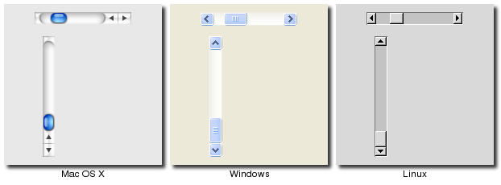<br>
Scrollbar Widgets
</p>

<div class="tcl"><p>Scrollbars are created using the <tt><b>ttk::scrollbar</b></tt> command:</p>
	<pre>ttk::scrollbar .s -orient vertical -command ".l yview"
.l configure -yscrollcommand ".s set"</pre>
	</div>
<div class="ruby"><p>Scrollbars are created using the <tt><b>Tk::Tile::Scrollbar</b></tt> class:</p>
	<pre>s = Tk::Tile::Scrollbar.new(<em>parent</em>) {orient "vertical"; 
        command proc{|*args| l.yview(*args);} }
l['yscrollcommand'] = proc{|*args| s.set(*args);}</pre>
</div>
<div class="perl">Scrollbars are created using the <tt><b>new_ttk__scrollbar</b></tt> method, a.k.a. <tt><b>Tkx::ttk__scrollbar</b></tt>:
	<pre>$s = $<em>parent</em>-&gt;new_ttk__scrollbar(-orient =&gt; 'vertical', -command =&gt; [$listbox, 'yview']);
$listbox-&gt;configure(-scrollcommand =&gt; [$s, 'set']);</pre>
</div>
<div class="python"><p>Scrollbars are created using the <tt><b>ttk.Scrollbar</b></tt> command:</p>
	<pre>s = ttk.Scrollbar( <em>parent</em>, orient=VERTICAL, command=listbox.yview)
listbox.configure(yscrollcommand=s.set)</pre>
</div>
<p>
Unlike in some toolkits, scrollbars are not a part of another widget (e.g. a listbox), but are a
separate widget altogether.  Instead, scrollbars communicate with the scrolled widget by calling
methods on the scrolled widget; as it turns out, the scrolled widget also needs to call methods 
on the scrollbar.  
</p>
<p>
The <tt>"orient"</tt> configuration option of scrollbars determines whether it will be used to
scroll in the <tt>"horizontal"</tt> or <tt>"vertical"</tt>.  You then need to set up the
<tt>"command"</tt> configuration option to communicate with the scrolled widget.  This needs to
be the method to call on the scrolled widget.
</p>
<p>
Every widget that can be scrolled vertically includes a method named <tt>"yview"</tt> (those that
can be scrolled horizontally have a method named "<tt>xview"</tt>).  As long as this method is
present, the scrollbar doesn't need to know anything else about the scrolled widget.  When the
scrollbar is manipulated, it will tack on some number of parameters to the method call, indicating
how it was scrolled, to what position, etc.
</p>
<p>
The scrolled widget also needs to communicate back to the scrollbar, telling it what percentage
of the entire content area is now visible.  Besides the <tt>yview</tt> and/or <tt>xview</tt> methods,
every scrollable widget also has a <tt>"yscrollcommand"</tt> and/or <tt>"xscrollcommand"</tt>
configuration option.  This is used to specify a method call, which must be the scrollbar's
<tt>"set"</tt> method.  Again, additional parameters will be automatically tacked onto the method
call.
</p>
<div class="ruby"><p>
Most scrollable widgets also have <tt>"xscrollbar"</tt> and <tt>"yscrollbar"</tt> methods that
will save you the trouble of writing your own <tt>"command"</tt>, <tt>"xscrollcommand"</tt>,
and <tt>"yscrollcommand"</tt> callbacks needed to wire a scrollable widget to a scrollbar.
Instead you just do something like:
</p><pre>s = Tk::Tile::Scrollbar.new(<em>parent</em>) {orient "vertical"}
l.yscrollbar = s</pre>
<p></p>
</div>

<p class="tip">
If for some reason you want to move the scrollbar to a particular position from within your program,
you can call the <tt>"set <em>first last</em>"</tt> method yourself.  Pass it two values between
0 and 1 indicating the start and end percentage of the content area that is visible.
</p>

<h3>Example</h3>
<p>
Listboxes are one of several types of widgets that are scrollable.  Here we'll build a very simple user
interface, consisting just of a vertically scrollable listbox that takes up the entire window, with
just a status line at the bottom.
</p>
<p class="picture">
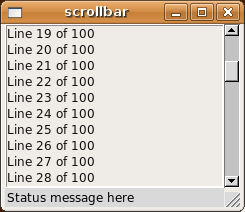<br>
Scrolling a Listbox
</p>

<div class="tcl"><pre>grid [tk::listbox .l <b>-yscrollcommand ".s set"</b> -height 5] -column 0 -row 0 -sticky nwes
grid [ttk::scrollbar .s <b>-command ".l yview"</b> -orient vertical] -column 1 -row 0 -sticky ns
grid [ttk::label .stat -text "Status message here" -anchor w] -column 0 -row 1 -sticky we
grid [ttk::sizegrip .sz] -column 1 -row 1 -sticky se
grid columnconfigure . 0 -weight 1; grid rowconfigure . 0 -weight 1
for {set i 0} {$i&lt;100} {incr i} {
   .l insert end "Line $i of 100"
}
</pre></div>
<div class="ruby"><pre>require 'tk'
require 'tkextlib/tile'

root = TkRoot.new
$l = TkListbox.new(root) {height 5; 
        <b>yscrollcommand proc{|*args| $s.set(*args)}</b> }.grid :column =&gt; 0, :row =&gt; 0, :sticky =&gt; 'nwes'
$s = Tk::Tile::Scrollbar.new(root) {orient 'vertical'; 
        <b>command proc{|*args| $l.yview(*args)}</b>}.grid :column =&gt; 1, :row =&gt; 0, :sticky =&gt; 'ns'
stat = Tk::Tile::Label.new(root) {text "Status message here"; 
        anchor 'w'}.grid :column =&gt; 0, :row =&gt; 1, :sticky =&gt; 'we'
sz = Tk::Tile::SizeGrip.new(root).grid :column =&gt; 1, :row =&gt; 1, :sticky =&gt; 'se'
TkGrid.columnconfigure root, 0, :weight =&gt; 1
TkGrid.rowconfigure root, 0, :weight =&gt; 1

(0..99).each {|i| $l.insert 'end', "Line #{i} of 100"}

Tk.mainloop
</pre></div>
<div class="perl"><pre>use Tkx;
my $mw = Tkx::widget-&gt;new(".");

($lb = $mw-&gt;new_tk__listbox(-height =&gt; 5))-&gt;g_grid(-column =&gt; 0, -row =&gt; 0, -sticky =&gt; "nwes");
($s = $mw-&gt;new_ttk__scrollbar(<b>-command =&gt; [$lb, "yview"]</b>, 
        -orient =&gt; "vertical"))-&gt;g_grid(-column =&gt;1, -row =&gt; 0, -sticky =&gt; "ns");
<b>$lb-&gt;configure(-yscrollcommand =&gt; [$s, "set"]);</b>
($mw-&gt;new_ttk__label(-text =&gt; "Status message here", 
        -anchor =&gt; "w"))-&gt;g_grid(-column =&gt; 0, -row =&gt; 1, -sticky =&gt; "we");
($mw-&gt;new_ttk__sizegrip)-&gt;g_grid(-column =&gt; 1, -row =&gt; 1, -sticky =&gt; "se");
$mw-&gt;g_grid_columnconfigure(0, -weight =&gt; 1); $mw-&gt;g_grid_rowconfigure(0, -weight =&gt; 1);
for ($i=0; $i&lt;100; $i++) {
   $lb-&gt;insert("end", "Line " . $i . " of 100");
}

Tkx::MainLoop();
</pre></div>
<div class="python"><pre>from tkinter import *
from tkinter import ttk

root = Tk()
l = Listbox(root, height=5)
l.grid(column=0, row=0, sticky=(N,W,E,S))
s = ttk.Scrollbar(root, orient=VERTICAL, <b>command=l.yview</b>)
s.grid(column=1, row=0, sticky=(N,S))
<b>l['yscrollcommand'] = s.set</b>
ttk.Sizegrip().grid(column=1, row=1, sticky=(S,E))
root.grid_columnconfigure(0, weight=1)
root.grid_rowconfigure(0, weight=1)
for i in range(1,101):
    l.insert('end', 'Line %d of 100' % i)
root.mainloop()</pre></div>

 <p><a name="sizegrip"></a>&nbsp;</p><h2>SizeGrip</h2>

<ul class="menu">
<li><a href="http://www.tkdocs.com/widgets/sizegrip.html">Widget Roundup</a></li>
<li><a href="http://www.tcl.tk/man/tcl8.5/TkCmd/ttk_sizegrip.htm">Reference Manual</a></li>
</ul>
<p>
We actually snuck in one new widget in that last example, the <b>sizegrip</b>.  This is the little box at the bottom right
corner of the window that allows you to resize it.  <br>&nbsp;
</p>

<p class="picture">
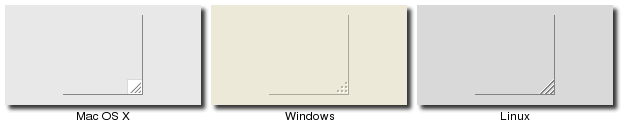<br>
SizeGrip Widgets
</p>

<div class="tcl"><p>SizeGrips are created using the <tt><b>ttk::sizegrip</b></tt> command:</p>
	<pre>grid [ttk::sizegrip .sz] -column 999 -row 999 -sticky se</pre>
	</div>
<div class="ruby"><p>SizeGrips are created using the <tt><b>Tk::Tile::SizeGrip</b></tt> class:</p>
	<pre>Tk::Tile::SizeGrip.new(<em>parent</em>).grid( :column =&gt; 999, :row =&gt; 999, :sticky =&gt; 'se')
</pre></div>
<div class="perl"><p>SizeGrips are created using the <tt><b>new_ttk__sizegrip</b></tt> method, a.k.a. <tt><b>Tkx::ttk__sizegrip</b></tt>:
	</p><pre>($<em>parent</em>-&gt;new_ttk__sizegrip)-&gt;g_grid(-column =&gt; 999, -row =&gt; 999, -sticky =&gt; "se")</pre></div>
<div class="python"><p>SizeGrips are created using the <tt><b>ttk.Sizegrip</b></tt> function:</p>
		<pre>ttk.Sizegrip(<em>parent</em>).grid(column=999, row=999, sticky=(S,E))
</pre></div>

<p>
While you'll notice that on some platforms (e.g. Mac OS X), Tk will 
automatically put the size grip there for you, 
it doesn't hurt to explicitly add it yourself.  We'll discuss how to 
change the window size, determine if it's resizable, etc. in a later 
chapter.
</p>


 <p><a name="text"></a>&nbsp;</p><h2>Text</h2>

<ul class="menu">
<li><a href="http://www.tkdocs.com/widgets/text.html">Widget Roundup</a></li>
<li><a href="http://www.tcl.tk/man/tcl8.5/TkCmd/text.htm">Reference Manual</a></li>
</ul>
<p>
A <b>text</b> widget provides users with an area so that they can enter multiple lines of text.
Text widgets are part of the classic Tk widgets, not the themed Tk widgets.<br>&nbsp;
</p>

<p class="picture">
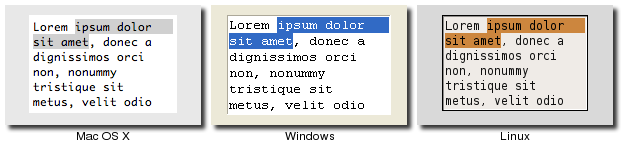<br>
Text Widgets
</p>

<p class="fyi">
Tk's text widget is, along with the canvas widget, one of two uber-powerful widgets that
provide amazingly deep but easily programmed features.  Text widgets have formed the basis
for full word processors, outliners, web browsers and more.  We'll get into some of the
advanced stuff in a later chapter, but here we'll just show you what you need to use the
text widget to capture fairly simple, multi-line text input.	
</p>


<div class="tcl"><p>Text widgets are created using the <tt><b>tk::text</b></tt> command:</p>
	<pre>tk::text .t -width 40 -height 10</pre></div>
<div class="ruby"><p>Text widgets are created using the <tt><b>TkText</b></tt> class:</p>
	<pre>t = TkText.new(<em>parent</em>) {width 40; height 10}</pre></div>
<div class="perl"><p>Text widgets are created using the <tt><b>new_tk__text</b></tt> method, a.k.a. <tt><b>Tkx::tk__text</b></tt>:
	</p><pre>$<em>parent</em>-&gt;new_tk__text(-width =&gt; 40, -height =&gt; 10)</pre></div>
<div class="python">	<p>Text widgets are created using the <tt><b>Text</b></tt> function:</p>
  <pre>t = Text(<em>parent</em>, width=40, height=10)</pre></div>

<p>
The <tt>"width"</tt> and <tt>"height"</tt> options specify the requested screen size of the text 
widget, in characters and rows respectively.  The contents of the text can be arbitrarily large.
You can use the <tt>"wrap"</tt> configuration option to control how line wrapping is handled:
values are <tt>"none"</tt> (no wrapping, text may horizontally scroll), "char" (wrap at any
character), and <tt>"word"</tt> (wrapping will only occur at word boundaries).
</p>
<p>
A text widget can be disabled so that no editing can occur; because text is not a themed widget,
the usual <tt>"state"</tt> and <tt>"instate"</tt> methods are not available.  Instead, use the
configuration option <tt>"state"</tt>, setting it to either <tt>"disabled"</tt> or <tt>"normal"</tt>.
</p>
<p>
Scrolling works the same way as in listboxes.  The <tt>"xscrollcommand"</tt> and <tt>"yscrollcommand"</tt>
configuration options are available to attach the text widget to horizontal and/or vertical scrollbars,
and the <tt>"xview"</tt> and <tt>"yview"</tt> methods are available to be called from scrollbars.
To ensure that a given line is visible (i.e. not scrolled out of view), you can use the <tt>"see <em>index</em>"</tt>
method, where <tt><em>index</em></tt> is in the form <em>"line number.character number"</em>, e.g.
<tt>"5.0"</tt> for the first (0-based) character of line 5 (1-based).
</p>

<h3>Contents</h3>
<p>
Text widgets do not have a linked variable associated with them, like for example entry widgets do.
To retrieve the text content for the entire widget, call the method <tt>"get 1.0 end"</tt>; the <tt>"1.0"</tt>
is an index into the text, and means the first character of the first line, and <tt>"end"</tt> is a shortcut
for the index of the last character, last line.  Other indices could be passed to retrieve smaller ranges of
text if needed.
</p>
<p>
Text can be added to the widget using the <tt>"insert <em>index string</em>"</tt> method; again <tt><em>index</em></tt>
is in the form <tt><em>"line.char"</em></tt> and marks the character before which text is inserted; use <tt>"end"</tt> 
to add text to the end of the widget.  You can delete a range of text using the <tt>"delete <em>start end</em>"</tt>
method, where both <tt><em>start</em></tt> and <tt><em>end</em></tt> are text indices as already described.
</p>
<p>
We'll get into the text widget's many additional advanced features in a later chapter.
</p>


 <p><a name="progressbar"></a>&nbsp;</p><h2>Progressbar</h2>

<ul class="menu">
<li><a href="http://www.tkdocs.com/widgets/progressbar.html">Widget Roundup</a></li>
<li><a href="http://www.tcl.tk/man/tcl8.5/TkCmd/ttk_progressbar.htm">Reference Manual</a></li>
</ul>
<p>
A <b>progressbar</b> widget provides a way to give feedback to the user about the progress of
a lengthy operation.  This may be done either as a percentage complete display for operations
where this can be estimated, or a display that changes to indicate the operation is continuing,
but without an estimate of completion.
</p>

<p class="picture">
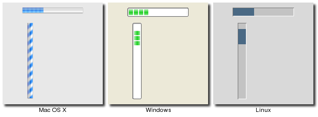<br>
Progressbar Widgets
</p>

<div class="tcl"><p>Progessbar widgets are created using the <tt><b>ttk::progressbar</b></tt> command:</p>
	<pre>ttk::progressbar .p -orient horizontal -length 200 -mode determinate</pre></div>
<div class="ruby"><p>Progessbar widgets are created using the <tt><b>Tk::Tile::Progessbar</b></tt> class:</p>
	<pre>p = Tk::Tile::Progressbar.new(<em>parent</em>) {orient 'horizontal'; length 200; mode 'determinate'}</pre></div>
<div class="perl"><p>Progressbar widgets are created using the <tt><b>new_ttk__progressbar</b></tt> method, a.k.a. <tt><b>Tkx::ttk__progressbar</b></tt>:
	</p><pre>$<em>parent</em>-&gt;new_ttk__progressbar(-orient =&gt; 'horizontal', -length =&gt; 200, -mode =&gt; 'determinate')</pre></div>
<div class="python">	<p>Progessbar widgets are created using the <tt><b>ttk.Progessbar</b></tt> class:</p>
	<pre>p = ttk.Progressbar(<em>parent</em>, orient=HORIZONTAL, length=200, mode='determinate')</pre></div>

<p>
The <tt>"orient"</tt> option may be either <tt>"horizontal"</tt> or <tt>"vertical"</tt>.  The <tt>"length"</tt>
option, which represents the longer axis of either horizontal or vertical progressbars, is specified in screen
units (e.g. pixels).  The <tt>"mode"</tt> configuration option can be set to either <tt>"determinate"</tt>, where
the progressbar will indicate relative progress towards completion, or to <tt>"indeterminate"</tt>, where its not
possible to know how far along in the task the program is, but we still want to provide feedback that things
are still running.
</p>

<h3>Determinate Progess</h3>
<p>
In determinate mode, you're able to provide more-or-less accurate feedback to the user about how far an
operation has progressed.  To do this, you need to first of all tell the progressbar how many "steps" the
operation will take, and then as you go along, tell the progressbar how far along the operation is.
</p>
<p>
You can provide the total number of steps to the progressbar using the <tt>"maximum"</tt> configuration option;
this is a floating point number that defaults to 100 (i.e. each step is 1%).  To tell the progressbar how far
along you are in the operation, you will repeatedly change the <tt>"value"</tt> configuration option.  So this
would start at 0, and then count upwards to the maximum value you have set.  There are two slight variations 
on this.  First, you can just store the current value for the progressbar in a variable linked to it by the
progressbar's <tt>"variable"</tt> configuration option; that way, when you change the variable, the progressbar
will update.  The other alternative is to call the progressbar's <tt>"step <em>?amount?</em>"</tt> method to
increment the value by the given <em>"amount"</em> (defaults to 1.0).
</p>

<h3>Indeterminate Progress</h3>
<p>
Indeterminate mode is for when you're not able to easily know (or estimate) how far along in a long running task
you actually are, but still want to provide feedback to the user that the operation is still running (or that
your program hasn't crashed).  Rather than providing specific values to indicate progress along the way, at
the start of the operation you'll just call the progressbar's <tt>"start"</tt> method, and at the end of the
operation, you'll call its <tt>"stop"</tt> method.  The progressbar will take care of the rest.
</p>

<!--- TODO - need something here and earlier about event loop and calling update -->

 <p><a name="scale"></a>&nbsp;</p><h2>Scale</h2>

<ul class="menu">
<li><a href="http://www.tkdocs.com/widgets/scale.html">Widget Roundup</a></li>
<li>Reference Manual</li>
</ul>
<p>
A <b>scale</b> widget provides a way for users to choose a numeric value through direct manipulation.<br>&nbsp;
</p>

<p class="picture">
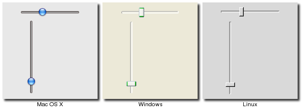<br>
Scale Widgets
</p>

<div class="tcl"><p>Scale widgets are created using the <tt><b>ttk::scale</b></tt> command:</p>
	<pre>ttk::scale .s -orient horizontal -length 200 -from 1.0 -to 100.0</pre></div>
<div class="ruby"><p>Progessbar widgets are created using the <tt><b>Tk::Tile::Scale</b></tt> class:</p>
	<pre>s = Tk::Tile::Scale.new(<em>parent</em>) {orient 'horizontal'; length 200; from 1.0; to 100.0}</pre></div>
<div class="perl"><p>Scale widgets are created using the <tt><b>new_ttk__scale</b></tt> method, a.k.a. <tt><b>Tkx::ttk__scale</b></tt>:
	</p><pre>$<em>parent</em>-&gt;new_ttk__scale(-orient =&gt; 'horizontal', -length =&gt; 200, -from =&gt; 1.0, -to =&gt; 100.0)</pre></div>
<div class="python"><p>Progessbar widgets are created using the <tt><b>ttk.Scale</b></tt> function:</p>
	<pre>s = ttk.Scale(<em>parent</em>, orient=HORIZONTAL, length=200, from_=1.0, to=100.0)</pre>
	<p class="tip">Because 'from' is a reserved keyword, you'll need to add a trailing underscore when using it as a configuration option.</p>
</div>

<p>
In some ways, scale widgets are like progressbars, except they are designed for the user to manipulate them.
As with progressbars, they should be given an orientation (horizontal or vertical) with the <tt>"orient"</tt> 
configuration option, and an optional <tt>"length"</tt>.  You should also define the range of the number that 
the scale allows users to choose; to do this, set a floating point number for each of the <tt>"from"</tt> and
<tt>"to"</tt> configuration options.
</p><p>
There are several different ways you can set the current value of the scale (which must be a floating point
value between the <tt>"from"</tt> and <tt>"to"</tt> values).  You can set (or read, to get the current value)
the scale's <tt>"value"</tt> configuration option.  You can link the scale to a variable using the <tt>"variable"</tt>
option.  Or, you can call the scale's <tt>"set <em>value</em>"</tt> method to change the value, or the <tt>"get"</tt>
method to read the current value.
</p>
<p>
There is a <tt>"command"</tt> configuration option, which lets you specify a script to call whenever the
scale is changed.  Tk will automatically append the current value of the scale as a parameter each time it
invokes this script (we saw a similar thing with extra parameters being added to scrollbar callbacks and
those on the widgets they scroll).
</p>
<p>
As with other themed widgets, you can use the <tt>"state disabled"</tt>, <tt>"state !disabled"</tt> and
<tt>"instate disabled"</tt> methods if you wish to prevent the user from modifying the scale.
</p>
<p class="tip">
As the scale widget does not display the actual values, you may want to add those as labels.
</p>

 <p><a name="spinbox"></a>&nbsp;</p><h2>Spinbox</h2>

<ul class="menu">
<li><a href="http://www.tkdocs.com/widgets/spinbox.html">Widget Roundup</a></li>
<li><a href="http://www.tcl.tk/man/tcl8.5/TkCmd/spinbox.htm">Reference Manual</a></li>
</ul>
<p>
A <b>spinbox</b> widget allows users to choose numbers (or in fact, items from an arbitrary list).  It does
this by combining an entry-like widget showing the current value with a pair of small up/down arrows which
can be used to step through the range of possible choices.
</p>
<p>
Spinboxes are part of the classic Tk widgets; there is not presently a spinbox in the
themed Tk widget set.
</p>

<p class="picture">
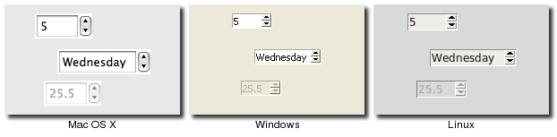<br>
Spinbox Widgets
</p>

<div class="tcl"><p>Spinbox widgets are created using the <tt><b>tk::spinbox</b></tt> command:</p>
	<pre>tk::spinbox .s -from 1.0 -to 100.0 -textvariable spinval</pre></div>
<div class="ruby"><p>Spinbox widgets are created using the <tt><b>Tk_Spinbox</b></tt> class:</p>
	<pre>$spinval = TkVariable.new<br>s = TkSpinbox.new(<em>parent</em>) {from 1.0; to 100.0; textvariable $spinval}</pre></div>
<div class="perl"><p>Spinbox widgets are created using the <tt><b>new_ttk__spinbox</b></tt> method, a.k.a. <tt><b>Tkx::ttk__spinbox</b></tt>:
	</p><pre>$<em>parent</em>-&gt;new_tk__spinbox(-from =&gt; 1.0, -to =&gt; 100.0, -textvariable =&gt; \$spinval)</pre></div>
<div class="python"><p>Spinbox widgets are created using the <tt><b>Spinbox</b></tt> function:</p>
	<pre>spinval = StringVar()<br>s = Spinbox(<em>parent</em>, from_=1.0, to=100.0, textvariable=spinval)</pre></div>

<p>
Like scale widgets, spinboxes are normally used to let the user choose a number between a certain range
(specified using the <tt>"from"</tt> and <tt>"to"</tt> configuration options), though through a very different 
user interface.  You can also specify a <tt>"increment"</tt>, which controls how much the value changes everytime you click
the up or down button. 
</p>
<p>
Like a listbox or combobox, spinboxes can also be used to let the user choose an item from an arbitrary list of strings;
these can be specified using the <tt>"values"</tt> configuration option, which works in the same was as in comboboxes.
Specifying a list of values will override to <tt>"from"</tt> and <tt>"to"</tt> settings.
</p>
<p class="tip">
You might be puzzled about when to choose a scale, listbox, combobox, entry or a spinbox, since usually several of 
these can be used for the same types of data.  The answer really depends on the type of data you want the user to
select, platform user interface conventions, and the role the value plays in your user interface.<br>&nbsp;<br>

For example, both a combobox and a spinbox have the benefit of taking up fairly small amounts of space, which might make sense
for a more peripheral setting, where the primary choice in a user interface may warrant the extra space a listbox
occupies.  Spinboxes don't make much sense when items don't have a natural and obvious ordering to them.  You should be
careful about both comboboxes and spinboxes that have too many items in them, which can make it more time consuming to
select an item.
</p>
<p>
Both both a numeric and arbitrary range, there is a <tt>"wrap"</tt> option which accepts a boolean, and determines whether 
the value should wrap around when it goes beyond the starting or ending values.  You can also specify a <tt>"width"</tt>
for the entry holding the current value of the spinbox.
</p>
<p>
Again there are choices as to how to set or get the current value in the spinbox.  Normally, you would specify a linked 
variable with the <tt>"textvariable"</tt> configuration option; as usual, any changes to the variable are reflected in the spinbox,
while any changes in the spinbox are reflected in the linked variable.  As well, the <tt>"set <em>value</em>"</tt> and <tt>"get"</tt>
methods allow you to set or get the value directly.
</p>
<p>
You can arranged to be called whenever the spinbox changes using the <tt>"command"</tt> configuration option.
</p>
<p class="oops">
The command has a couple of percent substitutions, %s = current value, and %d = up or down.  Need to figure out
the right way to specify this in Ruby.  Also need to add stuff about validation.
</p>
<p>
Because spinbox is not a themed widget, the <tt>"state"</tt> and <tt>"instate"</tt> methods are not available.
Instead, you can change its state using the <tt>"state"</tt> configuration option.  This may be <tt>"normal"</tt>,
<tt>"disabled"</tt> to prevent any changes.
</p>


<p> </p><p class="date"></p><h1>Menus</h1>
<p>
This chapter describes how to handle menubars and popup menus in Tk.
For a polished application, these are areas you particularly want to pay attention to.
Menus need special care if you want your application to fit in with other
applications on your users' platform.	
</p>
<p>
Speaking of which, the recommended way to figure out which platform you're running on is:
</p>
<div class="tcl"><pre>tk windowingsystem;  <em># will return x11, win32 or aqua</em></pre></div>
<div class="ruby"><pre>Tk.windowingsystem;  <em># will return x11, win32 or aqua</em></pre></div>
<div class="perl"><pre>Tkx::tk_windowingsystem();   <em># will return x11, win32 or aqua</em></pre></div>
<div class="python"><pre><em>root</em>.tk.call('tk', 'windowingsystem')    ; <em># will return x11, win32 or aqua</em></pre>
<p class="tip">To the best of my knowledge, Tkinter does not provide a direct equivalent to this call.
However, as you can see from the example, it is possible to execute a Tcl-based Tk command directly,
using the ".tk.call()" function available on any Tkinter widget.</p></div>

<p class="upgrade">
This is probably more useful than examining global variables like <tt>tcl_platform</tt> or
<tt>RUBY_PLATFORM</tt>, and older checks that used these methods should be examined.  While
in the olden days there was a pretty good correlation between platform and windowing system,
it's less true today.  For example, if your platform is identified on Unix, that might mean
Linux under X11, Mac OS X under Aqua, or even Mac OS X under X11.
</p>

 <p><a name="menubars"></a>&nbsp;</p><h2>Menubars</h2>
<p>
In this section we'll look at menubars: how to create them, what goes in them, how they're used,
and so on.  
</p>
<p>
Properly designing a menubar and its set of menus is beyond the scope of this tutorial, but a few
pieces of advice.  First, if you find yourself with a large number of menus, very long menus, or
deeply nested menus, you may need to rethink how your user interface is organized. Second, many
people use the menus to explore what the program can do, particularly when they're first learning
it, so try to ensure major features are accessible by the menus.  Finally, for each platform you're
targeting, become familiar with how applications use menus, and consult the platform's human interface
guidelines for full details about design, terminology, shortcuts, and much more.  This is an area
you will likely have to customize for each platform.
</p>
<h3>Menu Widgets and Hierarchy</h3>
<ul class="menu">
<li><a href="http://www.tkdocs.com/widgets/menu.html">Widget Roundup</a></li>
<li><a href="http://www.tcl.tk/man/tcl8.5/TkCmd/menu.htm">Reference Manual</a></li>
</ul>
<p>
Menus are implemented as widgets in Tk, just like buttons and entries.  Each menu widget consists of
a number of different <em>items</em> in the menu.  Items are things like the "Open..." command in a File
menu, but also separators between other items, and items which open up their own submenu (so-called
<em>cascading</em> menus).  Each of these menu items also has attributes, such as the text to display
for the item, a keyboard accelerator, and a command to invoke.
</p>
<p>
Menus are arranged in a hierarchy.  The menubar is itself a menu widget.  It has several children
(submenus) consisting of items like "File", "Edit" and so on.  Each of those in turn is a menu
containing different items, some of which might themselves contain submenus.  As you'd expect from
other things you've seen already in Tk, anytime you have a submenu, it must be created as a child
of its parent menu.
</p>

<h3>Before you Start</h3>
<p>
It's important to put the following line in your application somewhere before you start creating
menus.
</p>
<div class="tcl"><pre>option add *tearOff 0</pre></div>
<div class="ruby"><pre>TkOption.add '*tearOff', 0</pre></div>
<div class="perl"><pre>Tkx::option_add("*tearOff", 0);</pre></div>
<div class="python"><pre><em>root</em>.option_add('*tearOff', FALSE)</pre></div>

<p>
Without it, each of your menus (on Windows and X11) will start with what looks like a dashed
line, and allows you to "tear off" the menu so it appears in its own window.  You really don't
want that there.
</p>
<p class="upgrade">
This is a throw-back to the Motif-style X11 that Tk's original look and feel were based on.
Unless your application is designed to run on that old box collecting dust in the basement,
you really don't want to see this, as its not a part of any modern user interface style.
</p>
<p class="yuck">
And we'll all be looking forward to a version of Tk where this backwards compatibility is not
preserved, and the default is not to have these tear-off menus.
</p>

<h3>Creating a Menubar</h3>
<p>
In Tk, menubars are associated with individual windows; each toplevel window can have at most one
menubar.  On Windows and X11, this is visually obvious, as the menus are part of each window,
sitting just below the title bar at the top.  
</p>
<p>
On Mac OS X though, there is a single menubar along the top of the screen, shared by each window.
As far as your Tk program is concerned, each window still does have its own menubar; as you switch
between windows, Tk will automatically take care of making sure that the correct menubar is
displayed at the top of the screen.  If you don't specify a menubar for a particular window, 
Tk will use the menubar associated with the root window; you'll have noticed by now that this
is automatically created for you when your Tk application starts.
</p>
<p class="tip">
Because on Mac OS X <em>all</em> windows have a menubar, it's important to make sure you
do define one, either for each window or a fallback menubar for the root window.  Otherwise,
you'll end up with the "built-in" menubar, which contains menus that are only intended for
use when typing commands directly into the interpreter.
</p>
<p>
To actually create a menubar for a window, we first create a menu widget, and then use the
window's <tt>"menu"</tt> configuration option to attach the menu widget to the window.
As noted, the menu widget must be a child of the toplevel window.
</p>
<div class="tcl"><pre>toplevel .win
menu .win.menubar
.win configure -menu .win.menubar</pre></div>
<div class="ruby"><pre>win = TkToplevel(root)
menubar = TkMenu.new(win)
win['menu'] = menubar</pre></div>
<div class="perl"><pre>$w = $mw-&gt;new_toplevel;
$m = $w-&gt;new_menu;
$w-&gt;configure(-menu =&gt; $m);</pre></div>
<div class="python"><pre>win = Toplevel(<em>root</em>)
menubar = Menu(win)
win['menu'] = menubar</pre></div>

<p class="upgrade">
This is truly ancient history, but menubars used to be done by creating a frame widget
containing the menu items, and packing it into the top of the window like you would any
other widget.  Hopefully you don't have any code or documentation that still does this.
</p>

<h3>Adding Menus</h3>
<p>
We now have a menubar, but that's pretty useless without some menus to go in it.  
So again, we'll want to create a menu widget for each menu that will go in the
menubar (each one a child of the menubar), and then add them all to the menubar.
</p>
<div class="tcl"><pre>set m .win.menubar
menu $m.file
menu $m.edit
$m add cascade -menu $m.file -label File
$m add cascade -menu $m.edit -label Edit
</pre></div>
<div class="ruby"><pre>file = TkMenu.new(menubar)
edit = TkMenu.new(menubar)
menubar.add :cascade, :menu =&gt; file, :label =&gt; 'File'
menubar.add :cascade, :menu =&gt; edit, :label =&gt; 'Edit'
</pre></div>
<div class="perl"><pre>$m = $w-&gt;new_menu;
$file = $m-&gt;new_menu;
$edit = $m-&gt;new_menu;
$m-&gt;add_cascade(-menu =&gt; $file, -label =&gt; "File");
$m-&gt;add_cascade(-menu =&gt; $edit, -label =&gt; "Edit");</pre></div>
<div class="python"><pre>menubar = Menu(<em>parent</em>)
menu_file = Menu(menubar)
menu_edit = Menu(menubar)
menubar.add_cascade(menu=menu_file, label='File')
menubar.add_cascade(menu=menu_edit, label='Edit')
</pre></div>


<h3>Adding Menu Items</h3>
<p>
Now that we have a couple of menus in our menubar, it's probably a good time to add a few
items to each menu.  Remember that menu items are part of the menu itself, so we thankfully
don't have to go and create another menu widget for each one.
</p>
<div class="tcl"><pre>$m.file add command -label "New" -command "newFile"	
$m.file add command -label "Open..." -command "openFile"
$m.file add command -label "Close" -command "closeFile"	
</pre></div>
<div class="ruby"><pre>file.add :command, :label =&gt; 'New', :command =&gt; proc{newFile}
file.add :command, :label =&gt; 'Open...', :command =&gt; proc{openFile}
file.add :command, :label =&gt; 'Close', :command =&gt; proc{closeFile}
</pre></div>
<div class="perl"><pre>$file-&gt;add_command(-label =&gt; "New", -command =&gt; sub {newFile()});
$file-&gt;add_command(-label =&gt; "Open...", -command =&gt; sub {openFile()});
$file-&gt;add_command(-label =&gt; "Close", -command =&gt; sub {closeFile()});</pre></div>
<div class="python"><pre>menu_file.add_command(label='New', command=newFile)
menu_file.add_command(label='Open...', command=openFile)
menu_file.add_command(label='Close', command=closeFile)</pre></div>

<p class="fyi">On Mac OS X, the ellipsis ("...") is actually a special character, which is
more tightly spaced than three periods in a row.  Tk takes care of substituting this
character for you automatically.</p>
<p>
So adding menu items to a menu is essentially the same as adding a submenu, but rather
than adding a menu item of type "cascade", we're adding one of type "command".  
</p>
<p>
Each menu item has associated with it a number of configuration options, in the same way
widgets do, though each menu item type has a different set of relevant options.  Cascade
menu items have a <tt>"menu"</tt> option used to specify the submenu, command menu items
have a <tt>"command"</tt> option used to specify the command to invoke when the item is
selected, and both have a <tt>"label"</tt> option to specify the text to display for the item.
</p>
<p>
As well as adding items to the end of menus, you can also insert them in the middle of menus
via the <tt>"insert <em>index type ?option value...?</em>"</tt> method; here 
<tt><em>"index"</em></tt> is the position (0..n-1) of the item you want to insert before.  
You can also delete a menu using the <tt>"delete <em>index</em>"</tt> method.
</p>


<h3>Types of Menu Items</h3>
<p>
We've already seen <tt>"command"</tt> menu items, which are the common menu items that when
selected will invoke a command.
</p>
<p>
We've also seen the use of <tt>"cascade"</tt> menu items, used to add a menu to a menubar.
Not surprisingly, if you want to add a submenu to an existing menu, you also use a 
<tt>"cascade"</tt> menu item, in exactly the same way.
</p>
<p>
A third type of menu item is the <tt>"separator"</tt>, which produces the dividing line
you often see between different sets of menu items.
</p>
<div class="tcl"><pre>$m.file add separator</pre></div>
<div class="ruby"><pre>file.add :separator</pre></div>
<div class="perl"><pre>$file-&gt;add_separator</pre></div>
<div class="python"><pre>menu_file.add_separator()</pre></div>
<p>
Finally, there are also <tt>"checkbutton"</tt> and <tt>"radiobutton"</tt> menu items,
which behave analogously to checkbutton and radiobutton widgets.  These menu items
have a variable associated with them, and depending on the value of that variable,
will display an indicator (i.e. a checkmark or a selected radiobutton) next to the
item's label.
</p>
<div class="tcl"><pre>$m.file add checkbutton -label Check -variable check -onvalue 1 -offvalue 0
$m.file add radiobutton -label One -variable radio -value 1
$m.file add radiobutton -label Two -variable radio -value 2</pre></div>
<div class="ruby"><pre>check = TkVariable.new
file.add :checkbutton, :label =&gt; 'Check', :variable =&gt; check, :onvalue =&gt; 1, :offvalue =&gt; 0
radio = TkVariable.new
file.add :radiobutton, :label =&gt; 'One', :variable =&gt; radio, :value =&gt; 1
file.add :radiobutton, :label =&gt; 'Two', :variable =&gt; radio, :value =&gt; 2</pre></div>
<div class="perl"><pre>$file-&gt;add_checkbutton(-label =&gt; "Check", -variable =&gt; \$check, -onvalue =&gt; 1, -offvalue =&gt; 0);
$file-&gt;add_radiobutton(-label =&gt; "One", -variable =&gt; \$radio, -value =&gt; 1);
$file-&gt;add_radiobutton(-label =&gt; "Two", -variable =&gt; \$radio, -value =&gt; 2);</pre></div>
<div class="python"><pre>check = StringVar()
menu_file.add_checkbutton(label='Check', variable=check, onvalue=1, offvalue=0)
radio = StringVar()
menu_file.add_radiobutton(label='One', variable=radio, value=1)
menu_file.add_radiobutton(label='Two', variable=radio, value=2)
</pre></div>

<p>
When the user selects a checkbutton item that is not already checked, it will set the
associated variable to the value in <tt>"onvalue"</tt>, while selecting a item that
is already checked sets it to the value in <tt>"offvalue"</tt>.  Selecting a radiobutton
item sets the associated variable to the value in <tt>"value"</tt>.  Both types of items
also react to changes in the associated variable from within other parts of your program.
</p>
<p>
As with command items, checkbutton and radiobutton menu items do accept a <tt>"command"</tt>
configuration option, that will be invoked when the menu item is selected; the associated
variable, and hence the menu item's state, is updated before the callback is invoked.
</p>
<p class="tip">
Radiobutton menu items are not part of the Windows or Mac OS X human interface guidelines,
so on those platforms the indicator next to the item's label is a checkmark, as it would
be for a checkbutton item.  The semantics still work though; it's a good way to select
between multiple items, since the display will show one of the items selected (checked).
</p>

<h3>Accelerator Keys</h3>
<p>
The <tt>"accelerator"</tt> option is used to indicate the menu accelerator that should be
associated with this menu.  This does not actually <em>create</em> the accelerator, but
only displays what it is next to the menu item.  You still need to create a binding for
the accelerator yourself.
</p>
<p class="tip">
Remember that event bindings can be set on individual widgets, all widgets of a certain
type, the toplevel window containing the widget you're interested in, or the application
as a whole.  As menu bars are associated with individual windows, normally the event
bindings you create will be on the toplevel window the menu is associated with.
</p>
<p>
Accelerators are very platform specific, not only in terms of which keys are used for
what operation, but what modifier keys are used for menu accelerators (e.g. on Mac OS X
it is the "Command" key, on Windows and X11 it is usually the "Control" key).  
Example of valid accelerator options are <tt>"Command-N"</tt>, <tt>"Shift+Ctrl+X"</tt>, and 
<tt>"Command-Option-B"</tt>.  Commonly used modifiers include "Control", "Ctrl", "Option", "Opt", "Alt",
"Shift", "Command", "Cmd" and "Meta").  
</p>
<p class="fyi">On Mac OS X, those modifiers will be automatically mapped to the different
modifier icons that appear in menus.</p>


<h3>More on Item Options</h3>
<p>
There are a few more common options for menu items.  
</p>

<h4>Underline</h4>
<p>
While all platforms support keyboard traversal of the menubar via the arrow keys, on Windows
and X11, you can also use other keys to jump to particular menus or menu items.  The keys
that trigger these jumps are indicated by an underlined letter in the menu item's label.
If you want to add one of these to a menu item, you can use the <tt>"underline"</tt>
configuration option for the item.  The value of this option should be the index of the
character you'd like underlined (from 0 to the length of the string - 1).
</p>

<h4>Images</h4>
<p>
It is also possible to use images in menu items, either beside the menu item's label, or
replacing it altogether.  To do this, you can use the <tt>"image"</tt> and <tt>"compound"</tt>
options, which work just like in label widgets.  The value for <tt>"image"</tt> must be
a Tk image object, while <tt>"compound"</tt> can have the values <tt>"bottom"</tt>, 
<tt>"center"</tt>, <tt>"left"</tt>, <tt>"right"</tt>, <tt>"top"</tt> or <tt>"none"</tt>.
</p>

<h4>State</h4>
<p>
It is also possible to disable a menu, so that the user cannot select it.  This can be done
via the <tt>"state"</tt> option, setting it to a value of <tt>"disabled"</tt>, or a value
of <tt>"normal"</tt> to reenable the item.
</p>

<h4>Querying and Changing Item Options</h4>
<p>
Like most everything in Tk, you can look at or change the value of an item's options at any time.
Items are referred to via an <em>index</em>.  Normally, this is a number (0..n-1) indicating the
item's position in the menu, but you can also specify the label of the menu item (or in fact, a 
"glob-style" pattern to match against the item's label).
</p>
<div class="tcl"><pre>puts [$m.file entrycget 0 -label]; # get label of top entry in menu
$m.file entryconfigure Close -state disabled; # change an entry
puts [$m.file entryconfigure 0]; # print info on all options for an item</pre></div>
<div class="ruby"><pre>puts( file.entrycget 0, :state ); # get label of top entry in menu
file.entryconfigure 'Close', :state =&gt; 'disabled'; # change an entry
puts( file.entryconfiginfo 0 ); # print info on all optinos for an item</pre></div>
<div class="perl"><pre>print $file-&gt;entrycget(0, -label); # get label of top entry in menu
$file-&gt;entryconfigure("Close", -state =&gt; "disabled"); # change an entry
print $file-&gt;entryconfigure(0); # print info on all options for an item</pre></div>
<div class="python"><pre>print( menu_file.entrycget(0, 'label') )
menu_file.entryconfigure('Close', state=DISABLED)
print( menu_file.entryconfigure(0) )</pre></div>

 <p><a name="platformmenus"></a>&nbsp;</p><h2>Platform Menus</h2>
<p>
Each platform has a few menus that are handled specially by Tk.  
</p>
<h3>Mac OS X</h3>
<p>
On Mac OS X, there are two menus that are treated specially.  The application menu is the second menu in 
the menubar, titled with your application name.  It will have any menu items you add to it, then following
that, the standard application menu items (preferences, services, hide/show, and quit) are automatically added
by Tk.  The second special menu is the help menu, which is always placed as the last menu on the menubar.
Again, along with the items you add, Tk will add others expected by the system (nothing on Tiger, a search
box on Leopard).
</p>
<div class="tcl"><pre>$m add cascade -menu [menu $m.apple]
$m add cascade -menu [menu $m.help]</pre>
<p class="fyi">The pathnames of these menu widgets must be <tt>".apple"</tt> and <tt>".help"</tt>, as this is
what causes the menus to be treated specially by Tk.
</p></div>
<div class="ruby"><pre>apple = TkSysMenu_Apple.new(menubar)
menubar.add :cascade, :menu =&gt; apple
help = TkSysMenu_Help.new(menubar)
menubar.add :cascade, :menu =&gt; help</pre></div>
<div class="perl"><pre>$apple = Tkx::widget-&gt;new(Tkx::menu($m-&gt;_mpath . ".apple"));
$help = Tkx::widget-&gt;new(Tkx::menu($m-&gt;_mpath . ".help"));
$m-&gt;add_cascade(-menu =&gt; $apple);
$m-&gt;add_cascade(-menu =&gt; $help);</pre>
<p class="fyi">
Tk's menu code recognizes menu widgets with a pathname of <b>".apple"</b> or <b>".help"</b> and treats them
specially.  Because of this, we need to explicitly provide the pathname when creating these widgets, 
rather than letting Tkx choose a name for us.
</p>
</div>
<div class="python">
<pre>apple = Menu(menubar, name='apple')
help = Menu(menubar, name='help')
menubar.add_cascade(menu=apple)
menubar.add_cascade(menu=help)</pre>	
<p class="fyi">While normally Tkinter chooses a widget path name for us, here we've had to explicitly provide one
using the 'name' option.  Naming the menus 'apple' and 'help' are the cues that Tk needs to recognize them as special.</p></div>
	
</div>

<p></p>
<p class="yuck">
The application menu, which is the one we're dealing with here, is distinct from the apple menu (the one with
the apple icon, just to the left of the application menu).  Despite that we do really mean the application
menu, in Tk it is still referred to as the "apple" menu.  This is a holdover from pre-OS X days, when these
sorts of items did go in the actual apple menu, and there was no separate application menu.
</p>	
<p>
It's normal practice to add an "About <em>appname</em>" command item to the Application menu, followed by
a separator item.  When invoked this should display your application's about box.
</p>
<div class="tcl"><p>
Each application should respond to the "Preferences" item in the Application menu.  To do so, you'll need
to define a Tcl procedure named <tt>"::tk::mac::ShowPreferences"</tt>.  This will be called when the
Preferences menu item is chosen; if the procedure is not defined, the menu item will be disabled.
</p></div>
<div class="ruby">
<p class="yuck">I don't believe that Ruby currently has a way to deal with the "Preferences" item in the
Application menu; the underlying Tk API.</p>
</div>
<div class="perl"><p>
Each application should respond to the "Preferences" item in the Application menu.  To do so, you'll need
to define a Tcl procedure named <tt>"::tk::mac::ShowPreferences"</tt>.  This will be called when the
Preferences menu item is chosen; if the procedure is not defined, the menu item will be disabled.  To do this,
use code like:
</p>
<pre>Tkx::proc('::tk::mac::ShowPreferences', '{args}', sub {showPrefs()});</pre></div>
<div class="python">PYTHONTODO</div>

<!--- TODO
 - changing app name
 - responding to open/etc. events,
-->
	
<h3>Windows</h3>

<p>
On Windows, each window has a "System" menu at the top left of the window frame, with a small icon for your
application.  It contains items like "Close", "Minimize", etc.  In Tk, if you create a system menu, you can
add new items that will appear below the standard items.
</p>
<div class="tcl"><pre>$m add cascade -menu [menu $m.system]</pre>
<p class="fyi">
The pathname of the menu widget must be <tt>".system"</tt>.  
</p>	
</div>
<div class="ruby"><pre>sysmenu = TkSysMenu_System.new(menubar)
menubar.add :cascade, :menu =&gt; sysmenu</pre></div>
<div class="perl"><pre>$system = Tkx::widget-&gt;new(Tkx::menu($m-&gt;_mpath . ".system"));
$m-&gt;add_cascade(-menu =&gt; $system);</pre>
<p class="fyi">The pathname of the menu must be explicitly provided, in this case with the name <b>".system"</b>.</p></div>
<div class="python"><pre>sysmenu = Menu(menubar, name='system')
menubar.add_cascade(menu=sysmenu)</pre>
<p class="fyi">While normally Tkinter will choose a widget path name for us, here we've had to explicitly provide one
with the name 'system'; this is the cue that Tk needs to recognize it as the system menu.</p></div>


<h3>X11</h3>
	
<p>
On X11, if you create a help menu, Tk will ensure that it is always the last menu in the menubar.
</p>
<div class="tcl"><pre>$m add cascade -label Help -menu [menu $m.help]</pre>
<p class="fyi">
The pathname of the menu widget must be <tt>".help"</tt>.  
</p>	
</div>
<div class="ruby"><pre>help = TkSysMenu_Help.new(menubar)
menubar.add :cascade, :menu =&gt; help, :label =&gt; 'Help'</pre></div>
<div class="perl"><pre>$help = Tkx::widget-&gt;new(Tkx::menu($m-&gt;_mpath . ".help"));
$m-&gt;add_cascade(-menu =&gt; $help);</pre>
<p class="fyi">The pathname of the menu must be explicitly provided, in this case with the name <b>".help"</b>.</p></div>
<div class="python"><pre>menu_help = Menu(menubar, name='help')
menubar.add_cascade(menu=menu_help, label='Help')</pre>
<p class="fyi">The widget pathname of the menu must be explicitly provided, in this case with the name <b>"help"</b>.
This can be specified for any Tkinter widget using the 'name' option when creating the widget.</p></div>
</div>
	
	
 <p><a name="popupmenus"></a>&nbsp;</p><h2>Contextual Menus</h2>
<p>
Contextual menus ("popup" menus) are typically invoked by a right mouse button click on an object in the application.
A menu pops up at the location of the mouse cursor, and the user can select from one of the items in the menu (or click
outside the menu to dismiss it without choosing any item).
</p>
<p>
To create a contextual menu, you'll use exactly the same commands you did to create menus in the menubar.  Typically,
you'll create one menu with several command items in it, and potentially some cascade menu items and their associated
menus.
</p>
To activate the menu, the user will use a contextual menu click, which 
you will have to bind to.  That however, can mean different things on 
different
platforms.  On Windows and X11, this is the right mouse button being 
clicked (the third mouse button).  On Mac OS X, this is either a 
click of the left (or only) button with the control key held down, or a 
right click on a multi-button mouse.  Unlike Windows and X11,
Mac OS X refers to this as the second mouse button, not the third, so 
that's the event you'll see in your program.
<p></p>
<p class="upgrade">
Most earlier programs that have used popup menus assumed it was only "button 3" they needed to worry about.
</p>
<p>
Besides capturing the correct contextual menu event, you'll also need to capture the location the mouse was clicked.
It turns out you need to do this relative to the entire screen (global coordinates) and not local to the window or
widget you clicked on (local coordinates).  The "%X" and "%Y" substitutions in Tk's event binding system will capture
those for you.
</p>
<p>
The last step is simply to tell the menu to popup at the particular location.  Here's an example of the whole process,
using a popup menu on the application's main window.
</p>
<div class="tcl"><pre>menu .menu
foreach i [list One Two Three] {.menu add command -label $i}
if {[tk windowingsystem]=="aqua"} {
	bind . &lt;2&gt; "tk_popup .menu %X %Y"
	bind . &lt;Control-1&gt; "tk_popup .menu %X %Y"
} else {
	bind . &lt;3&gt; "tk_popup .menu %X %Y"
}
</pre></div>
<div class="ruby"><pre>require 'tk'
root = TkRoot.new
menu = TkMenu.new(root)
%w(One Two Three).each {|i| menu.add :command, :label =&gt; i}
if Tk.windowingsystem == 'aqua'
    root.bind '2', proc{|x,y| menu.popup(x,y)}, "%X %Y"
    root.bind 'Control-1', proc{|x,y| menu.popup(x,y)}, "%X %Y"
else
    root.bind '3', proc{|x,y| menu.popup(x,y)}, "%X %Y"
end
Tk.mainloop
</pre></div>
<div class="perl"><pre>use Tkx;
my $mw = Tkx::widget-&gt;new(".");
my $menu = $mw-&gt;new_menu();
foreach ("One", "Two", "Three") {$menu-&gt;add_command(-label =&gt; $_);}
if (Tkx::tk_windowingsystem()=="aqua") {
    $mw-&gt;g_bind("&lt;2&gt;", [sub {my($x,$y) = @_; $menu-&gt;g_tk___popup($x,$y)}, Tkx::Ev("%X", "%Y")] );
    $mw-&gt;g_bind("&lt;Control-1&gt;", [sub {my($x,$y) = @_; $menu-&gt;g_tk___popup($x,$y)}, Tkx::Ev("%X", "%Y")]);
} else {
    $mw-&gt;g_bind("&lt;3&gt;", [sub {my($x,$y) = @_; $menu-&gt;g_tk___popup($x,$y)}, Tkx::Ev("%X", "%Y")]);
}
Tkx::MainLoop();
</pre></div>
<div class="python"><pre>from tkinter import *
root = Tk()
menu = Menu(root)
for i in ('One', 'Two', 'Three'):
    menu.add_command(label=i)
if (root.tk.call('tk', 'windowingsystem')=='aqua'):
    root.bind('&lt;2&gt;', lambda e: menu.post(e.x_root, e.y_root))
    root.bind('&lt;Control-1&gt;', lambda e: menu.post(e.x_root, e.y_root))
else:
    root.bind('&lt;3&gt;', lambda e: menu.post(e.x_root, e.y_root))

</pre></div>


<p> </p><p class="date"></p><h1>Windows and Dialogs</h1>

<p>
Everything we've done up until now has been in a single window.  In this chapter, we'll cover how to use multiple windows,
changing various attributes of windows, and use some of the standard dialog box windows that are available in Tk.
</p>

 <p><a name="createdestroy"></a>&nbsp;</p><h2>Creating and Destroying Windows</h2>
<p>
You've already seen that all Tk programs start out with a root toplevel window, and then widgets are created as children of 
that root window.  Creating new toplevel windows works almost exactly the same as creating new widgets.  
</p><div class="tcl">
Toplevel windows are created using the <tt><b>tk::toplevel</b></tt> command:
<pre>tk::toplevel .t</pre>
</div>
<div class="ruby">
Toplevel windows are created using the <tt><b>TkToplevel</b></tt> class:
<pre>t = TkToplevel.new(<em>parent</em>)</pre></div>
<div class="perl">
Toplevel windows are created using the <tt><b>new_toplevel</b></tt> method, a.k.a. <tt><b>Tkx::toplevel</b></tt>:
<pre>my $win = $<em>parent</em>-&gt;new_toplevel;</pre></div>
<div class="python">Toplevel windows are created using the <tt><b>Toplevel</b></tt> function:
<pre>t = Toplevel(<em>parent</em>)</pre></div>

<p>
Unlike regular widgets, you don't have to "grid" a toplevel for it to appear onscreen.  Once you've created a new toplevel,
you can then create other widgets which are children of that toplevel, and grid them inside the toplevel.  In other words,
the new toplevel behaves exactly like the automatically created root window.
</p>
<div class="tcl">To destroy a window, you can use the <tt><b>destroy</b></tt> command:<pre>destroy <em>.win1 ?.win2 ...?</em></pre>
<p class="tip">
Note that the <tt>destroy</tt> command lives in the global namespace; there is not a <tt>tk::destroy</tt> command.
</p>	
</div>
<div class="ruby">To destroy a window, you can use the <tt><b>destroy</b></tt> method on a widget:<pre><em>window</em>.destroy</pre></div>
<div class="perl">To destroy a window, you can use the <tt><b>g_destroy</b></tt> method on a widget:<pre>$<em>window</em>-&gt;g_destroy</pre></div>
<div class="python">&gt;To destroy a window, you can use the <tt><b>destroy</b></tt> method on a widget:<pre><em>window</em>.destroy()</pre></div>

<p>
Note that you can use <tt>destroy</tt> on any widget, not just a 
toplevel window.  Also, when you destroy a window, all windows (widgets)
 that
are children of that window are also destroyed.  So if you happen to 
destroy the root window (that all other widgets are descended from), 
that
will normally end your application.
</p>

 <p><a name="wm"></a>&nbsp;</p><h2>Changing Window Behavior and Styles</h2>
<p>
There are lots of things about how windows behave and how they look that can be changed.
</p>

<h4>Window Title</h4>
<p>
To examine or change the title of the window:
</p>
<div class="tcl"><pre>set oldtitle [wm title <em>.window</em>]<br>wm title <em>.window</em> "New title"</pre>
<p class="fyi">
The "wm" here stands for "window manager" which is an X11 term used for a program that manages all the windows
onscreen, including their title bars, frames, and so on.  What we're effectively doing is asking the window
manager to change the title of this particular window for us.  The same terminology has been carried over to
Tk running on Mac OS X and Windows.
</p>
<p class="tip">
Note that the <tt>wm</tt> command lives in the global namespace; there is not a <tt>tk::wm</tt> command.
</p>	

</div>
<div class="ruby"><pre>oldtitle = <em>window</em>['title']<br><em>window</em>['title'] = "New title"</pre></div>
<div class="perl"><pre>my $oldtitle = $<em>window</em>-&gt;g_wm_title;<br>$<em>window</em>-&gt;g_wm_title("New title");</pre></div>
<div class="python"><pre>oldtitle = <em>window</em>.title()<br><em>window</em>.title('New title')</pre></div>

<!--- TODO: icon -->
	
<h4>Size and Location</h4>
<p>
In Tk, a window's position and size on the screen is known as its <em>geometry</em>.  A full geometry specification
looks like this:
</p>
<pre><em>width</em><b>x</b><em>height</em><b>±</b><em>x</em><b>±</b><em>y</em>
</pre>
<p>
Width and height (normally in pixels) are pretty self-explanatory.  The "x" (horizontal position) is specified with
a leading plus or minus, so <tt>"+25"</tt> means the left edge of the window should be 25 pixels from the left edge 
of the screen, while <tt>"-50"</tt> means the right edge of the window should be 50 pixels from the right edge of
the screen.  Similarly, a "y" (vertical) position of "+10" means the top edge of the window should be ten pixels
below the top of the screen, while "-100" means the bottom edge of the window should be 100 pixels above the bottom of
the screen.
</p>
<p class="tip">
Remember that the geometry's position are the actual coordinates on the screen, and don't make allowances for
systems like Mac OS X which have a menubar along the top, or a dock area along the bottom.  So specifying a
position of "+0+0" would actually place the top part of the window under the system menu bar.  It's a good idea
to leave a healthy margin (at least 30 pixels) from an edge of the screen.
</p>
<p>
Here is an example of changing the size and position, placing the window towards the top righthand corner
of the screen:
</p>
<div class="tcl"><pre>wm geometry <em>.window</em> 300x200-5+40</pre></div>
<div class="ruby"><pre><em>window</em>['geometry'] = '300x200-5+40'</pre></div>
<div class="perl"><pre>$<em>window</em>-&gt;g_wm_geometry("300x200-5+40");</pre></div>
<div class="python"><pre><em>window</em>.geometry('300x200-5+40')</pre></div>


<h4>Stacking Order</h4>
<p>
Stacking order refers to the order that windows are "placed" on the screen, from bottom to top.  When
the positions of two windows overlap each other, the one closer to the top of the stacking order will
obscure or overlap the one lower in the stacking order.
</p>
<p>
You can obtain the current stacking order, a list from lowest to heighest, via:
</p>
<div class="tcl"><pre>wm stackorder <em>.window</em></pre></div>
<div class="ruby"><pre><em>window</em>.stackorder</pre></div>
<div class="perl"><pre>$<em>window</em>-&gt;wm_stackorder</pre></div>
<div class="python">PYTHONTODO</div>

<p>
You can also just check if one window is above or below another:
</p>
<div class="tcl"><pre>if {[wm stackorder <em>.window</em> isabove <em>.other</em>]} {...}
if {[wm stackorder <em>.window</em> isbelow <em>.other</em>]} {...}</pre></div>
<div class="ruby"><pre>if (<em>window</em>.stackorder_isabove <em>otherwin</em>) ...
if (<em>window</em>.stackorder_isbelow <em>otherwin</em>) ...</pre></div>
<div class="perl"><pre>if ($<em>window</em>-&gt;g_wm_stackorder("isabove", $<em>otherwin</em>)) ...
if ($<em>window</em>-&gt;g_wm_stackorder("isbelow", $<em>otherwin</em>)) ...</pre></div>
<div class="python">PYTHONTODO</div>

<p>
You can also raise or lower windows, either to the very top (bottom) of the stacking order, or just
above (below) a designated window:
</p>
<div class="tcl"><pre>raise <em>.window</em>
raise <em>.window</em> <em>.other</em>
lower <em>.window</em>
lower <em>.window</em> <em>.other</em></pre></div>
<div class="ruby"><pre><em>window</em>.raise
<em>window</em>.raise_window <em>otherwin</em>
<em>window</em>.lower
<em>window</em>.lower_window <em>otherwin</em></pre></div>
<div class="perl"><pre>$<em>window</em>-&gt;g_raise;
$<em>window</em>-&gt;g_raise($<em>otherwin</em>);
$<em>window</em>-&gt;g_lower;
$<em>window</em>-&gt;g_lower($<em>otherwin</em>);</pre></div>
<div class="python"><pre><em>window</em>.lift()
<em>window</em>.lift(<em>otherwin</em>)
<em>window</em>.lower()
<em>window</em>.lower(<em>otherwin</em>)</pre>
<p class="fyi">Tkinter uses the name 'lift', since 'raise' is a reserved keyword.</p></div>

<p>
Wondering why you needed to pass a window to get the current stacking order?  It turns out that
stacking order, raise and lower, etc. work not only for toplevel windows, but with any "sibling"
widgets (those having the same parent).  So if you have several widgets gridded together but
overlapping, you can raise and lower them relative to each other.  For example:
</p>	
<div class="tcl"><pre>grid [ttk::label .little -text "Little"] -column 0 -row 0 
grid [ttk::label .bigger -text "Much Bigger Label"] -column 0 -row 0
after 2000 raise .little</pre></div>
<div class="ruby"><pre>require 'tk'
require 'tkextlib/tile'
root = TkRoot.new
little = Tk::Tile::Label.new(root) {text 'Little'}.grid( :column =&gt; 0, :row =&gt; 0)
bigger = Tk::Tile::Label.new(root) {text 'Much Bigger Label'}.grid( :column =&gt; 0, :row =&gt; 0)
Tk.after 2000, proc{little.raise}
Tk.mainloop</pre></div>
<div class="perl"><pre>use Tkx;
$mw = Tkx::widget-&gt;new(".");
$little = $mw-&gt;new_ttk__label(-text =&gt; "Little");
$little-&gt;g_grid(-column =&gt; 0, -row =&gt; 0);
$bigger = $mw-&gt;new_ttk__label(-text =&gt; "Much Bigger Label");
$bigger-&gt;g_grid(-column =&gt; 0, -row =&gt; 0);
Tkx::after(2000, sub {$little-&gt;g_raise();});
Tkx::MainLoop();
</pre></div>
<div class="python"><pre>from tkinter import *
from tkinter import ttk
root = Tk()
little = ttk.Label(root, text="Little")
bigger = ttk.Label(root, text='Much bigger label')
little.grid(column=0,row=0)
bigger.grid(column=0,row=0)
root.after(2000, lambda: little.lift())
root.mainloop()</pre></div>

<p class="fyi">
The <tt>"after"</tt> command schedules a script to be executed at a certain number of
milliseconds in the future, but allows normal processing of the event loop to continue in
the meantime.
</p>

<h4>Resizing Behavior</h4>
<p>
Normally, toplevel windows, both the root window and others that you create, can be resized by the user.
However, sometimes in your user interface, you may want to prevent the user from resizing the window.
You can prevent it from being resized, in fact independently specifying whether the window's width 
(first parameter) can be changed, as well as its height (second parameter).  So to disable all resizing:
</p>
<div class="tcl"><pre>wm resizable <em>.window</em> 0 0</pre></div>
<div class="ruby"><pre><em>window</em>['resizable'] = false, false</pre></div>
<div class="perl"><pre>$<em>window</em>-&gt;g_wm_resizable(0,0);</pre></div>
<div class="python"><pre><em>window</em>.resizable(FALSE,FALSE)</pre></div>

<p>
Remember that if you've added a <tt>ttk::sizegrip</tt> widget to the window, that you should remove it
if you're making the window non-resizable.
</p>
<p>
If resizing is enabled, you can specify a minimum and/or maximum size that you'd like the window's size to
be constrained to (again, parameters are width and height):
</p>
<div class="tcl"><pre>wm minsize <em>.window</em> 200 100
wm maxsize <em>.window</em> 500 500</pre></div>
<div class="ruby"><pre><em>window</em>['minsize'] = 200, 100
<em>window</em>['maxsize'] = 500, 500</pre></div>
<div class="perl"><pre>$<em>window</em>-&gt;g_wm_minsize(200,100);
$<em>window</em>-&gt;g_wm_maxsize(500,500);</pre></div>
<div class="python"><pre><em>window</em>.minsize(200,100)
<em>window</em>.maxsize(500,500)</pre></div>


<h4>Iconifying and Withdrawing</h4>
<p>
On most systems, you can temporarily remove the window from the screen by iconifying it.  In Tk, whether
or not a window is iconified is referred to as the window's <em>state</em>.  The possible states for a 
window include <tt>"normal"</tt> and <tt>"iconic"</tt> (for an iconified window), as well as several
others: <tt>"withdrawn"</tt>, <tt>"icon"</tt> or <tt>"zoomed"</tt>.
</p>
<p>
You can query or set the current window state, and there are also the methods <tt>"iconify"</tt> and
<tt>"deiconify"</tt> which are shortcuts for setting the <tt>"iconic"</tt> or <tt>"normal"</tt> states
respectively.
</p>
<div class="tcl"><pre>set thestate [wm state <em>.window</em>]
wm state <em>.window</em> normal
wm iconify <em>.window</em>
wm deiconify <em>.window</em></pre></div>
<div class="ruby"><pre>thestate = <em>window</em>['state']
<em>window</em>['state'] = 'normal'
<em>window</em>.iconify
<em>window</em>.deiconify</pre></div>
<div class="perl"><pre>my $thestate = $<em>window</em>-&gt;g_wm_state;
$<em>window</em>-&gt;g_wm_state("normal");
$<em>window</em>-&gt;g_wm_iconify;
$<em>window</em>-&gt;g_wm_deiconify;</pre></div>
<div class="python"><pre>thestate = <em>window</em>.state()
<em>window</em>.state('normal')
<em>window</em>.iconify()
<em>window</em>.deiconify()
</pre></div>

<!--- TODO mac or windows specific window styles? -->
	
	
 <p><a name="dialogs"></a>&nbsp;</p><h2>Standard Dialogs</h2>
<p>
Dialog boxes are a type of window used in applications to get some information from the user, 
inform them that some event has occurred, confirm an action and more.  The appearance and usage
of dialog boxes is usually quite specifically detailed in a platform's style guide.  Tk comes
with a number of dialog boxes built-in for common tasks, and which help you conform to platform
specific style guidelines.
</p>

<h4>Selecting Files and Directories</h4>
<p>
Tk provides several dialogs to let the user select files or directories.  On Windows and Mac,
these invoke the underlying operating system dialogs directly.  The "open" variant on the
dialog is used when you want the user to select an existing file (like in a "File | Open..."
menu command), while the "save" variant is used to choose a file to save into (normally used
by the "File | Save As..." menu command).
</p>
<div class="tcl"><pre>set filename [tk_getOpenFile]
set filename [tk_getSaveFile]
set dirname [tk_chooseDirectory]</pre></div>
<div class="ruby"><pre>filename = Tk::getOpenFile
filename = Tk::getSaveFile
dirname = Tk::chooseDirectory</pre></div>
<div class="perl"><pre>$filename = Tkx::tk___getOpenFile();
$filename = Tkx::tk___getSaveFile();
$dirname = Tkx::tk___chooseDirectory();</pre></div>
<div class="python"><pre>from tkinter import filedialog
filename = filedialog.askopenfilename()
filename = filedialog.asksaveasfilename()
dirname = filedialog.askdirectory()</pre></div>
<p>
All of these commands produce <em>modal</em> dialogs, which means that the commands (and hence
your program) will not continue running until the user submits the dialog.  The commands
return the full pathname of the file or directory the user has chosen, or return an empty
string if the user cancels out of the dialog.
</p>

<p class="picture">
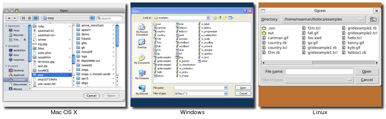<br>
Open File Dialogs
</p>

<p class="picture">
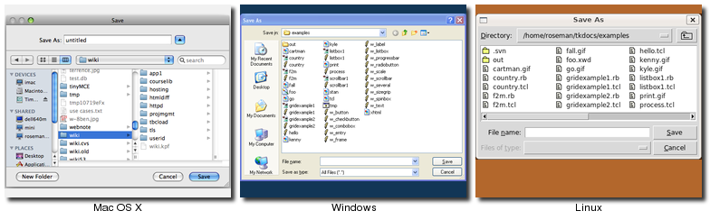<br>
Save File Dialogs
</p>

<p class="picture">
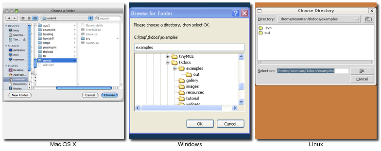<br>
Choose Directory Dialogs
</p>


<!--- TODO include a few of the more common options -->

<p>
There are a variety of different options that can be passed to these dialogs, allowing you to set the
allowable file types, default filename, and more.  These are detailed
in the <a href="http://www.tcl.tk/man/tcl8.5/TkCmd/getOpenFile.htm">getOpenFile/getSaveFile</a> and 
<a href="http://www.tcl.tk/man/tcl8.5/TkCmd/chooseDirectory.htm">chooseDirectory</a> reference manual pages.
</p>


<h4>Selecting Colors</h4>
<p>
There is also a modal dialog to let the user select a color.  It will return a color value, e.g. "#ff62b8".
The dialog takes an optional <tt>"initialcolor"</tt> option to specify an existing color that the user
is presumably replacing.
</p>
<div class="tcl"><pre>tk_chooseColor -initialcolor #ff0000</pre></div>
<div class="ruby"><pre>Tk::chooseColor :initialcolor =&gt; '#ff0000'</pre></div>
<div class="perl"><pre>Tkx::tk___chooseColor(-initialcolor =&gt; "#ff0000");</pre></div>
<div class="python"><pre>from tkinter import colorchooser
colorchooser.askcolor(initialcolor='#ff0000')</pre></div>

<p class="picture">
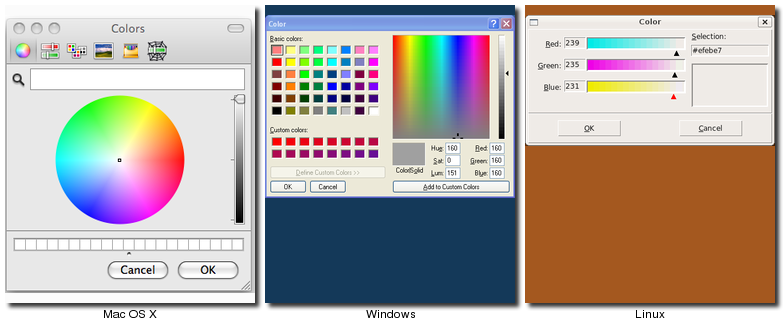<br>
Choose Color Dialogs
</p>

<h4>Alert and Confirmation Dialogs</h4>
<p>
Many applications use various simple modal alerts or dialogs to notify the user of an event, ask them
to confirm an action, or make another similar choice which is done by clicking on a button.  Tk provides
a versatile "message box" that encapsulates all these different types of dialogs.
</p>
<div class="tcl"><pre>tk_messageBox -message "Have a good day"</pre></div>
<div class="ruby"><pre>Tk::messageBox :message =&gt; 'Have a good day'</pre></div>
<div class="perl"><pre>Tkx::tk___messageBox(-message =&gt; "Have a good day");</pre></div>
<div class="python"><pre>from tkinter import messagebox
messagebox.showinfo(message='Have a good day')</pre></div>
<p class="picture">
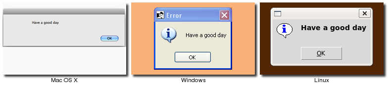<br>
Simple Message Boxes
</p>


<div class="tcl"><pre>tk_messageBox -type "yesno" 
	    -message "Are you sure you want to install SuperVirus?" 
	    -icon question -title "Install"</pre></div>
<div class="ruby"><pre>Tk::messageBox :type =&gt; 'yesno', 
	    :message =&gt; 'Are you sure you want to install SuperVirus?', 
	    :icon =&gt; 'question', :title =&gt; 'Install'</pre></div>
<div class="perl"><pre>Tkx::tk___messageBox(-type =&gt; "yesno",
	    -message =&gt; "Are you sure you want to install SuperVirus?",
	    -icon =&gt; "question", -title =&gt; "Install");</pre></div>
<div class="python"><pre>messagebox.askyesno(
	   message='Are you sure you want to install SuperVirus?'
	   icon='question' title='Install')</pre></div>

<p class="picture">
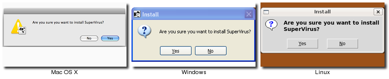<br>
Example Message Boxes
</p>

<p>
Like the previous dialogs that we've seen, these are modal, and will return the result of the user's
action to the caller.  The exact return value will depend on the <tt>"type"</tt> option passed to
the command, as shown here:
</p>
<table cellpadding="3"><tbody><tr><th>Type option</th><th>Possible return values</th></tr>
<tr><td><tt>ok</tt> <em>(default)</em></td><td><tt>"ok"</tt></td></tr>
<tr><td><tt>okcancel</tt></td>             <td><tt>"ok"</tt> or <tt>"cancel"</tt></td></tr>
<tr><td><tt>yesno</tt></td>                <td><tt>"yes"</tt> or <tt>"no"</tt></td></tr>
<tr><td><tt>yesnocancel</tt></td>          <td><tt>"yes"</tt>, <tt>"no"</tt> or <tt>"cancel"</tt></td></tr>
<tr><td><tt>retrycancel</tt></td>          <td><tt>"retry"</tt> or <tt>"cancel"</tt></td></tr>
<tr><td><tt>abortretryignore</tt></td>     <td><tt>"abort"</tt>, <tt>"retry"</tt> or <tt>"ignore"</tt></td></tr>
</tbody></table>
<div class="python">
<p>Rather than using a 'type' option, Tkinter uses a different method name for each type of dialog.  The
available methods are: askokcancel, askquestion, askretrycancel, askyesno, askyesnocancel, showerror, showinfo, showwarning.
</p>
</div>

<p>
The full list of possible options is shown here:
</p>
<table cellpadding="3">
<tbody><tr><td><tt>type</tt></td>   <td>As described above.</td></tr>
<tr><td><tt>message</tt></td> <td>The main message displayed inside the alert.</td></tr>
<tr><td><tt>detail</tt></td> <td>If needed, a secondary message, often displayed in a smaller font under the main message.</td></tr>
<tr><td><tt>title</tt></td>  <td>Title for the dialog window.  Not used on Mac OS X.</td></tr>
<tr><td><tt>icon</tt></td>   <td>Icon to show: one of <tt>"info"</tt> (default), <tt>"error"</tt>, <tt>"question"</tt> or <tt>"warning"</tt>.</td></tr>
<tr><td><tt>default</tt></td> <td>Specify which button (e.g. <tt>"ok"</tt> or <tt>"cancel"</tt> for a <tt>"okcancel"</tt> type dialog) should be the default.</td></tr>
<tr><td valign="top"><tt>parent</tt></td>  <td>Specify a window of your 
application this dialog is being posted for; this may cause the dialog 
to appear on top, or on Mac OS X appear as a sheet for the window.</td></tr>
</tbody></table>


<p class="upgrade">
These new messagebox dialogs are a replacement from the older <tt>"tk_dialog"</tt> command,
which does not comply with current platform user interface conventions.
</p>

<!--- TODO creating your own... window styles, grab, etc -->


<p> </p><p class="date"></p><h1>Organizing Complex Interfaces</h1>
<p>
If you have a large user interface, you'll need to find ways to organize it in ways that don't overwhelm your
users with the complexity.  There are a number of different approaches to doing this; again, both general and
platform specific human interface guidelines are a good resource when deciding.
</p>
<p>
Note that when we're talking about complexity in this chapter, it's not the underlying technical complexity
of how the program is put together, but how it's presented to the user.  A user interface can be pulled
together from many different modules, be built up from multiple canvas widgets and deeply nested frames,
but that doesn't necessarily mean the user perceives it to be complex.
</p>
<h4>Multiple windows</h4>
<p>
One of the benefits of using multiple windows in an application can be to simplify the user interface, by
requiring the user to focus only on the contents of one window at a time (requiring them to focus on
or switch between several windows can also have the opposite effect).  Similarly, showing only the widgets
that are relevant for the current task (via <tt>grid</tt>) can help simplify the user interface.
</p>

<h4>White space</h4>
<p>
If you do need to display a large number of widgets onscreen at the same time, you have to think about
how to organize them visually.  You've seen how <tt>grid</tt> can help by making it easy to align 
widgets with each other.  White space is another useful aid.  Placing related widgets quite close
to each other (possible with an explanatory label immediately above) and separated from other less-related
widgets by white space helps the user organize the user interface in their own mind.
</p>
<p class="tip">
The amount of white space around different widgets, between groups of widgets, around borders and so on
is highly platform specific.  While you can do an adequate job without worrying about exact pixel numbers,
if you want a highly polished user interface, you'll need to tune this for each platform.
</p>

 <p><a name="separator"></a>&nbsp;</p><h2>Separator</h2>

<ul class="menu">
<li><a href="http://www.tkdocs.com/widgets/">Widget Roundup</a></li>
<li><a href="http://www.tcl.tk/man/tcl8.5/TkCmd/ttk_separator.htm">Reference Manual</a></li>
</ul>
<p>
A second approach to grouping widgets in one display is to place a thin horizontal or vertical rule between 
groups of widgets; often this can be more space efficient than using white space, which may be relevant for a
tight display.  Tk provides a very simple <b>separator</b> widget for this purpose.
</p>

<p class="picture">
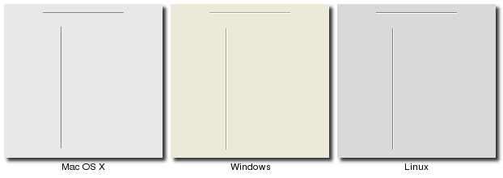<br>
Separator Widgets
</p>

<div class="tcl"><p>Separators are created using the <tt><b>ttk::separator</b></tt> command:</p>
	<pre>ttk::separator .s -orient horizontal</pre></div>
<div class="ruby"><p>Separators are created using the <tt><b>Tk::Tile::Separator</b></tt> class:</p>
	<pre>s = Tk::Tile::Separator.new(<em>parent</em>) { orient 'horizontal' }</pre></div>
<div class="perl">Separators are created using the <tt><b>new_ttk__separator</b></tt> method, a.k.a. <tt><b>Tkx::ttk__separator</b></tt>:
	<pre>$sep = $<em>parent</em>-&gt;new_ttk__separator(-orient =&gt; 'horizontal');</pre></div>
<div class="python"><p>Separators are created using the <tt><b>ttk.Separator</b></tt> function:</p>
	<pre>s = ttk.Separator(<em>parent</em>, orient=HORIZONTAL)</pre></div>

<p>
The <tt>"orient"</tt> option may be specified as either <tt>"horizontal"</tt> or <tt>"vertical"</tt>.
</p>


 <p><a name="labelframe"></a>&nbsp;</p><h2>Label Frames</h2>

<ul class="menu">
<li><a href="http://www.tkdocs.com/widgets/">Widget Roundup</a></li>
<li><a href="http://www.tcl.tk/man/tcl8.5/TkCmd/ttk_labelframe.htm">Reference Manual</a></li>
</ul>
<p>
A <b>labelframe</b> widget, also commonly known as a <em>group box</em>, provides another way to group
related components.  It acts like a normal <tt>ttk::frame</tt>, in that you will normally use it as a 
container for other widgets you <tt>grid</tt> inside it.  However, it displays in a way that visually 
sets it off from the rest of the user interface.  You can optionally provide a text label to be
displayed outside the labelframe.
</p>

<p class="picture">
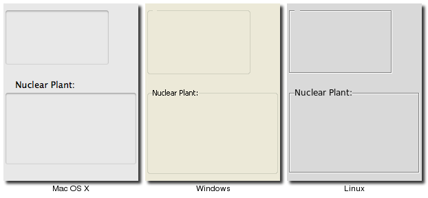<br>
Labelframe Widgets
</p>

<div class="tcl"><p>Labelframes are created using the <tt><b>ttk::labelframe</b></tt> command:</p>
	<pre>ttk::labelframe .lf -text "Label"</pre></div>
<div class="ruby"><p>Labelframes are created using the <tt><b>Tk::Tile::Labelframe</b></tt> class:</p>
	<pre>lf = Tk::Tile::Labelframe.new(<em>parent</em>) { text 'Label' }</pre></div>
<div class="perl">Labelframes are created using the <tt><b>new_ttk__labelframe</b></tt> method, a.k.a. <tt><b>Tkx::ttk__labelframe</b></tt>:
	<pre>$lf = $<em>parent</em>-&gt;new_ttk__labelframe(-text =&gt; "Label");</pre></div>
<div class="python"><p>Labelframes are created using the <tt><b>ttk.Labelframe</b></tt> function:</p>
	<pre>lf = ttk.Labelframe(<em>parent</em>, text='Label')</pre></div>


 <p><a name="panedwindow"></a>&nbsp;</p><h2>Paned Windows</h2>


<ul class="menu">
<li><a href="http://www.tkdocs.com/widgets/">Widget Roundup</a></li>
<li><a href="http://www.tcl.tk/man/tcl8.5/TkCmd/ttk_panedwindow.htm">Reference Manual</a></li>
</ul>
<p>
A <b>panedwindow</b> widget lets you stack two or more resizable widgets above and below each
other (or to the left and right).  The user can adjust the relative heights (or widths) of
each pane by dragging a <em>sash</em> located between them.  Typically the widgets you're adding 
to a panedwindow will be frames containing many other widgets.
</p>

<p class="picture">
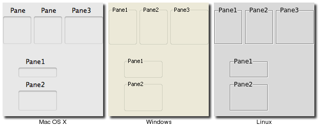<br>
Panedwindow Widgets  (Shown here managing several labelframes)
</p>


<div class="tcl"><p>Panedwindows are created using the <tt><b>ttk::panedwindow</b></tt> command:</p>
	<pre>ttk::panedwindow .p -orient vertical
<em># first pane, which would get widgets gridded into it:</em>
ttk::labelframe .p.f1 -text Pane1 -width 100 -height 100
ttk::labelframe .p.f2 -text Pane2 -width 100 -height 100; <em># second pane</em>
.p add .p.f1
.p add .p.f2
</pre></div>
<div class="ruby"><p>Panedwindows are created using the <tt><b>Tk::Tile::Paned</b></tt> class:</p>
	<pre>p = Tk::Tile::Paned.new(<em>parent</em>) { orient 'vertical' }
<em># first pane, which would get widgets gridded into it:</em>
f1 = Tk::Tile::Labelframe.new(p) {text 'Pane1'; width 100; height 100;}
f2 = Tk::Tile::Labelframe.new(p) {text 'Pane2'; width 100; height 100;}; <em># second pane</em>
p.add f1, nil
p.add f2, nil
</pre>
<p class="fyi">The extra <tt>"nil"</tt> parameter to <tt>add</tt> can be replaced with a hash of
pane-specific options, which usually aren't needed.</p>
</div>
<div class="perl">Panedwindows are created using the <tt><b>new_ttk__panedwindow</b></tt> method, a.k.a. <tt><b>Tkx::ttk__panedwindow</b></tt>:
<pre>$p = $mw-&gt;new_ttk__panedwindow(-orient =&gt; 'vertical');
<em># first pane, which would get widgets gridded into it:</em>
$f1 = $p-&gt;new_ttk__labelframe(-text =&gt; "Panel", -width =&gt; 100, -height =&gt; 100);
$f2 = $p-&gt;new_ttk__labelframe(-text =&gt; "Pane2", -width =&gt; 100, -height =&gt; 100); <em># second pane</em>
$p-&gt;add($f1);
$p-&gt;add($f2);
</pre></div>
<div class="python">Panedwindows are created using the <tt><b>ttk.Panedwindow</b></tt> function:<p></p>
	<pre>p = ttk.Panedwindow(<em>parent</em>, orient=VERTICAL)
<em># first pane, which would get widgets gridded into it:</em>
f1 = ttk.Labelframe(p, text='Pane1', width=100, height=100)
f2 = ttk.Labelframe(p, text='Pane2', width=100, height=100); <em># second pane</em>
p.add(f1)
p.add(f2)
</pre></div>

<p>
A panedwindow is either <tt>"vertical"</tt> (it's panes are stacked vertically on top of each other),
or <tt>"horizontal"</tt>.  Importantly, all of the panes that you add to the panedwindow must be a
<em>direct child</em> of the panedwindow itself.
</p>
<p>
Calling the <tt>"add"</tt> method will add a new pane at the end of the list of panes. The
<tt>"insert <em>position subwindow</em>"</tt> method allows you to place the pane at the given position
in the list of panes (0..n-1); if the pane is already managed by the panedwindow, it will be moved
to the new position.  You can use the <tt>"forget <em>subwindow</em>"</tt> to remove a pane from the
panedwindow; you can also pass a position instead of a subwindow.
</p>
<p>
Other options let you sign relative weights to each pane so that if the overall panedwindow resizes,
certain panes will get more space than others.  As well, you can adjust the position of each sash
between items in the panedwindow.  See the 
<a href="http://www.tcl.tk/man/tcl8.5/TkCmd/ttk_panedwindow.htm">command reference</a> for details.
</p>

 <p><a name="notebook"></a>&nbsp;</p><h2>Notebook</h2>

<ul class="menu">
<li><a href="http://www.tkdocs.com/widgets/">Widget Roundup</a></li>
<li><a href="http://www.tcl.tk/man/tcl8.5/TkCmd/ttk_notebook.htm">Reference Manual</a></li>
</ul>
<p>
A <b>notebook</b> widget uses the metaphor of a tabbed notebook to let the user switch between
one of several <em>pages</em>, using an index <em>tab</em>.  In this case, unlike with paned
windows, we're only allowing the user to look at a single page (akin to a pane) at a time.
</p>

<p class="picture">
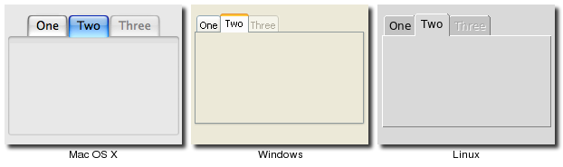<br>
Notebook Widgets
</p>


<div class="tcl"><p>Notebooks are created using the <tt><b>ttk::notebook</b></tt> command:</p>
	<pre>ttk::notebook .n
ttk::frame .n.f1; <em># first page, which would get widgets gridded into it </em>
ttk::frame .n.f2; <em># second page</em>
.n add .n.f1 -text "One"
.n add .n.f2 -text "Two"
</pre></div>
<div class="ruby"><p>Notebooks are created using the <tt><b>Tk::Tile::Notebook</b></tt> class:</p>
	<pre>n = Tk::Tile::Notebook.new(<em>parent</em>)
f1 = Tk::Tile::Frame.new(n); <em># first page, which would get widgets gridded into it</em>
f2 = Tk::Tile::Frame.new(n); <em># second page</em>
n.add f1, :text =&gt; 'One'
n.add f2, :text =&gt; 'Two'
</pre></div>
<div class="perl">Notebooks are created using the <tt><b>new_ttk__notebook</b></tt> method, a.k.a. <tt><b>Tkx::ttk__notebook</b></tt>:
<pre>$n = $mw-&gt;new_ttk__notebook;
$f1 = $n-&gt;new_ttk__frame; <em># first page, which would get widgets gridded into it</em>
$f2 = $n-&gt;new_ttk__frame; <em># second page</em>
$n-&gt;add($f1, -text =&gt; "One");
$n-&gt;add($f2, -text =&gt; "Two");</pre></div>
<div class="python"><p>Notebooks are created using the <tt><b>ttk.Notebook</b></tt> function:</p>
	<pre>n = ttk.Notebook(<em>parent</em>)
f1 = ttk.Frame(n); <em># first page, which would get widgets gridded into it</em>
f2 = ttk.Frame(n); <em># second page</em>
n.add(f1, text='One')
n.add(f2, text='Two')
</pre></div>


<p>
The operations on tabbed notebooks are similar to those on panedwindows.  Each page is typically
a frame, again a direct child (subwindow) of the notebook itself.  A new page and its associated tab are
added to the end of the list of tabs with the <tt>"add <em>subwindow ?option value...?</em>"</tt> method.
The <tt>"text"</tt> tab option is used to set the label on the tab; also useful is the <tt>"state"</tt>
tab option, which can have the value <tt>"normal"</tt>, <tt>"disabled"</tt> (not selectable), or
<tt>"hidden"</tt>.  
</p>
<p>
To insert a tab at somewhere other than the end of the list, you can use the <tt>"insert <em>position
subwindow ?option value...?</em>"</tt>, and to remove a given tab, use the <tt>"forget"</tt> method,
passing it either the position (0..n-1) or the tab's subwindow.  You can retrieve the list of all
subwindows contained in the notebook via the <tt>"tabs"</tt> method.
</p>
<div class="tcl">
<p>
To retrieve the subwindow that is currently selected, call the <tt>"select"</tt> method, and change the selected tab by 
passing it either the tab's position or the subwindow itself as a parameter.
</p>
<p>
To change a tab option (like the text label on the tab or its state), you can use the <tt>"tab <em>tabid option value</em>"</tt>
method (where <tt>"tabid"</tt> is again the tab's position or subwindow); omit the <tt>"value"</tt> to return the current
value of the option.
</p>
</div>
<div class="ruby">
<p>
To retrieve the subwindow that is currently selected, call the <tt>"selected"</tt> method, and change the selected tab by 
calling the <tt>"select"</tt> method, passing it either the tab's position or the subwindow itself as a parameter.
</p>
<p>
To change a tab option (like the text label on the tab or its state), you can use the 
<tt>"itemconfigure <em>tabid</em>, <em>:option =&gt; value</em>"</tt> method (where <tt>"tabid"</tt> is again the tab's 
position or subwindow); use the <tt>"itemcget <em>tabid</em>, <em>:option</em>"</tt> to return the current
value of the option.
</p>
<p class="yuck">
The <tt>itemconfigure</tt> and <tt>itemcget</tt> methods exist alongside the <tt>tabconfigure</tt> and <tt>tabcget</tt>
methods, which are more true to the API; however the <tt>tabcget</tt> method currently has a bug in it.
</p>
</div>
<div class="perl">
<p>
To retrieve the subwindow that is currently selected, call the <tt>"select"</tt> method, and change the selected tab by 
passing it either the tab's position or the subwindow itself as a parameter.
</p>
<p>
To change a tab option (like the text label on the tab or its state), you can use the <tt>"tab <em>tabid option value</em>"</tt>
method (where <tt>"tabid"</tt> is again the tab's position or subwindow); omit the <tt>"value"</tt> to return the current
value of the option.
</p>
</div>
<div class="python">
<p>
To retrieve the subwindow that is currently selected, call the <tt>"select"</tt> method, and change the selected tab by 
passing it either the tab's position or the subwindow itself as a parameter.
</p>
<p>
To change a tab option (like the text label on the tab or its state), you can use the <tt>"tab(<em>tabid, option=value</em>"</tt>
method (where <tt>"tabid"</tt> is again the tab's position or subwindow); omit the <tt>"=value"</tt> to return the current
value of the option.
</p>

</div>

<p>
Again, there are a variety of less frequently used options and commands detailed in the
<a href="http://www.tcl.tk/man/tcl8.5/TkCmd/ttk_notebook.htm">command reference</a>.
</p>


<p> </p><p class="date"></p><h1>Fonts, Colors, Images</h1>
<p>
This chapter describes how Tk handles fonts, colors and images.  We've touched on all of these before, but here we'll
provide a more in depth treatment.
</p>

 <p><a name="fonts"></a>&nbsp;</p><h2>Fonts</h2>
<p>
Several Tk widgets, such as the label, text, and canvas, allow you to specify the fonts used to display text,
typically via a <tt>"font"</tt> configuration option.
As with many things in Tk, the default fonts are usually a good choice, but if you do want to make changes,
this section will describe several ways to do so.  Fonts are one of several areas that are highly platform
specific, so how you specify them is important.
</p>
The <a href="http://www.tcl.tk/man/tcl8.5/TkCmd/font.htm">font command reference</a> provides full details on specifying fonts, as well as
other font-related operations.
<p>
Most of the themed widgets that display text don't have a <tt>"font"</tt> configuration option, unlike the
classic Tk widgets.  Rather than modifying individual widgets, the correct approach in the themed widgets
is to specify the fonts used in a style, and then use that style for the individual widget.  This is akin to
the difference between hardcoding display-oriented markup like font tags inside HTML pages, vs. using CSS
stylesheets that keep all the display specific information in one place.
</p>
<p class="upgrade">
Many older Tk programs hardcoded a lot of fonts, using either the "family size style" format we'll see below,
X11 font names, or the older and more arcane X11 font specification string.  In many cases, this left these applications with
a dated look as platforms evolved.  Further, many programs specified fonts on a per-widget basis, leaving the
font decisions spread out through the program.  Named fonts, and use of the standard fonts that Tk provides, are 
a far better solution.  Reviewing and updating the usage of fonts is an easy and important change to make in
any existing applications.
</p>
<h3>Standard Fonts</h3>
<p>
Particularly for more-or-less standard user interface elements, each platform defines specific fonts that should
be used.  Tk encapsulates many of these into a standard set of fonts that are always available, and of course the 
standard widgets use these fonts.  This helps abstract away platform differences.  The predefined fonts are:
</p>

<table><tbody><tr><td><tt>TkDefaultFont</tt></td><td>The default for all GUI items not otherwise specified.</td></tr>
	<tr><td><tt>TkTextFont</tt></td><td>Used for entry widgets, listboxes, etc.</td></tr>
	<tr><td><tt>TkFixedFont</tt></td><td>A standard fixed-width font.</td></tr>
	<tr><td><tt>TkMenuFont</tt></td><td>The font used for menu items.</td></tr>
	<tr><td><tt>TkHeadingFont</tt></td><td>The font typically used for column headings in lists and tables.</td></tr>
	<tr><td><tt>TkCaptionFont</tt></td><td>A font for window and dialog caption bars.</td></tr>
	<tr><td><tt>TkSmallCaptionFont</tt></td><td>A smaller caption font for subwindows or tool dialogs</td></tr>
	<tr><td><tt>TkIconFont</tt></td><td>A font for icon captions.</td></tr>
	<tr><td><tt>TkTooltipFont</tt></td><td>A font for tooltips.</td></tr></tbody></table>

<h3>Platform-Specific Fonts</h3>
<p>
A number of additional predefined fonts are available, but the precise set depends on the platform.  Obviously,
if you're using these, and your application is portable across different platforms, you'll need to ensure that
proper fonts are defined individually for each platform.
</p>
<p>
On X11, any valid X11 font name (see e.g. the "xlsfonts" command) may be used.  Remember though that there is no
guarantee that a particular font has been installed on a particular machine.
</p>
<p>
On Windows, the following font names, which map to the fonts that can be set in the "Display" Control Panel, are
available: <tt>system</tt>, <tt>ansi</tt>, <tt>device</tt>, <tt>systemfixed</tt>, <tt>ansifixed</tt>, <tt>oemfixed</tt>.
</p>
On Mac OS X, the following fonts are available (see the Apple HIG for details): <tt>systemSystemFont</tt>,
<tt>systemSmallSystemFont</tt>, <tt>systemApplicationFont</tt>, <tt>systemViewsFont</tt>, <tt>systemMenuItemFont</tt>,
<tt>systemMenuItemCmdKeyFont</tt>, <tt>systemPushButtonFont</tt>, <tt>systemAlertHeaderFont</tt>, <tt>systemMiniSystemFont</tt>,
<tt>systemDetailEmphasizedSystemFont</tt>, <tt>systemEmphasizedSystemFont</tt>, <tt>systemSmallEmphasizedSystemFont</tt>,
<tt>systemLabelFont</tt>, <tt>systemMenuTitleFont</tt>, <tt>systemMenuItemMarkFont</tt>, <tt>systemWindowTitleFont</tt>,
<tt>systemUtilityWindowTitleFont</tt>, <tt>systemToolbarFont</tt>, <tt>systemDetailSystemFont</tt>.
<p></p>

<h3>Named Fonts</h3>
<p>
You can also create your own fonts, which can be used exactly like the predefined ones.  To do so, you'll need to pick
a name to refer to the font, and then specify various font attributes that define how the font should look.  Typically,
you'd use different font attributes on different platforms; that way, you can use the font in your program without
worrying about the details except in the one place the font is actually defined.
</p>
<p>
Here's an example:
</p>
<div class="tcl"><pre>font create AppHighlightFont -family Helvetica -size 12 -weight bold
grid [ttk::label .l -text "Attention!" -font AppHighlightFont]</pre></div>
<div class="ruby"><pre>AppHighlightFont = TkFont.new :family =&gt; 'Helvetica', :size =&gt; 12, :weight =&gt; 'bold'
Tk::Tile::Label.new(root) {text 'Attention!'; font AppHighlightFont}.grid</pre></div>
<div class="perl"><pre>Tkx::font_create("AppHighlightFont", -family =&gt; "Helvetica", -size =&gt; 12, -weight =&gt; "bold");
$l = $<em>parent</em>-&gt;new_ttk__label(-text =&gt; "Attention!", -font =&gt; "AppHighlightFont");
$l-&gt;g_grid;</pre></div>
<div class="python"><pre>from tkinter import font
appHighlightFont = font.Font(family='Helvetica', size=12, weight='bold')
ttk.Label(root, text='Attention!', font=appHighlightFont).grid()
</pre></div>

<p>
The <tt>"family"</tt> specifies the font name; the names <tt>Courier</tt>, <tt>Times</tt>, and <tt>Helvetica</tt>
are guaranteed to be supported (and mapped to an appropriate monospaced, serif, or sans-serif font), but other
fonts installed on the system can be used (again, be careful to ensure the font exists, or the system will supply
a different font, which may not necessarily be a good match).  You can get the names of all available fonts with: 
</p>
<div class="tcl"><pre>font families</pre></div>
<div class="ruby"><pre>TkFont.families</pre></div>
<div class="perl"><pre>Tkx::font_families</pre></div>
<div class="python"><pre>font.families()</pre></div>

<p>
The <tt>"size"</tt> option specifies the size of the font, in points.  The <tt>"weight"</tt> option can be either
<tt>bold</tt> or <tt>normal</tt>.  You can specify a <tt>"slant"</tt> of <tt>roman</tt> (normal) or <tt>italic</tt>.
Finally, the boolean options <tt>"underline"</tt> and <tt>"overstrike"</tt> are available.
</p>
<p>
The current settings of these options can be examined or changed using the same mechanisms that you'd use
for changing the configuration options of a widget (e.g. <tt>configure</tt>).
</p>

<h3>Font Descriptions</h3>
<p>
Another way to specify fonts is via a list of attributes, starting with the name of the font, and then optionally
including a size, and optionally one or more style options.  Some examples of this are <tt>"Helvetica"</tt>, "Helvetica 12",
<tt>"Helvetica 12 bold"</tt>, and <tt>"Helvetica 12 bold italic"</tt>.  These font descriptions are then used as
the value of the <tt>"font"</tt> configuration option, rather than a predefined or named font.
</p>
<p class="upgrade">
In general, switching from font descriptions to named fonts is advisable, again to isolate font differences in one
location in the program.
</p>

 <p><a name="colors"></a>&nbsp;</p><h2>Colors</h2>
<p>
As with fonts, there are various ways to specify colors.  Full details can be found in the
<a href="http://www.tcl.tk/man/tcl8.5/TkCmd/colors.htm">colors command reference</a>.
</p>
<p>
In general, the system will provide the right colors for most things.  Like with fonts, both 
Mac and Windows specify a large number of system-specific color names (see the reference), whose 
actual color may depend upon system settings (e.g. text highlight colors, default backgrounds).
</p>
<p>
You can also specify colors via RGB, like in HTML, e.g. <tt>"#3FF"</tt> or <tt>"#FF016A"</tt>.
Finally, Tk recognizes the set of color names defined by X11; normally these are not used,
except for very common ones such as <tt>"red"</tt>, <tt>"black"</tt>, etc.
</p>
<p>
For themed Tk widgets, colors are often used in defining styles that are applied to widgets,
rather than applying the color to a widget directly.
</p>
<p>
It probably goes without saying that restraint in the use of colors is normally warranted.
</p>

 <p><a name="images"></a>&nbsp;</p><h2>Images</h2>
<p>
We've seen the basics of how to use images already, displaying them in labels or buttons
for example.  We create an image object, usually from a file on disk.
</p>
<div class="tcl"><pre>image create photo imgobj -file "myimage.gif"
.label configure -image imgobj</pre></div>
<div class="ruby"><pre>image = TkPhotoImage.new(:file =&gt; "myimage.gif")
label['image'] = image</pre></div>
<div class="perl"><pre>Tkx::image_create_photo("imgobj", -file =&gt; "myimage.gif");
$l-&gt;configure(-image =&gt; "imgobj");</pre></div>
<div class="python"><pre>imgobj = PhotoImage(file='myimage.gif')
label['image'] = imgobj</pre></div>

<p>
Out of the box, Tk includes support for GIF and PPM/PNM images.  However, there is a Tk
extension library called "Img" which adds support for many others: BMP, XBM, XPM, PNG, JPEG,
TIFF, etc.  Though not included directly in the Tk core, Img is usually included with
other packaged distributions (e.g. ActiveTcl).
</p>
<div class="tcl"><pre>package require Img
image create photo myimg -file "myimage.png"</pre></div>
<div class="ruby"><pre>require 'tkextlib/tkimg'
myimg = TkPhotoImage.new(:file =&gt; 'myimage.png')</pre></div>
<div class="perl"><pre>Tkx::package_require("Img");
Tkx::image_create_photo("myimg", -file =&gt; "myimage.png");</pre></div>
<div class="python">PYTHONTODO</div>

<p>
Tk's images are actually quite powerful and sophisticated, and provide a wide variety of ways to 
inspect and modify images.  You can find out more from the <a href="http://www.tcl.tk/man/tcl8.5/TkCmd/image.htm">image command
reference</a> and the <a href="http://www.tcl.tk/man/tcl8.5/TkCmd/photo.htm">photo command reference</a>.
</p>
<p class="upgrade">
The types of multi-color images we've seen here are referred to in Tk as <em>photo</em> images.
Tk also provides a second type of images, two-bit <em>bitmap</em> images, which were widely used
in the 90's when most Unix workstations used quite large (compared with PCs) monitors, but
they were only black and white.  Needless to say, color is de rigueur these days, so updating
to full color images for icons and so on is highly advisable.
</p>


<p> </p><p class="date"></p><h1>Canvas</h1>


<ul class="menu">
<li><a href="http://www.tkdocs.com/widgets/">Widget Roundup</a></li>
<li><a href="http://www.tcl.tk/man/tcl8.5/TkCmd/canvas.htm">Reference Manual</a></li>
</ul>
<p>
A <b>canvas</b> widget manages a 2D collection of graphical objects — lines, circles,
images, other widgets and more.   Tk's canvas is an incredibly powerful and flexible widget,
and truly one of Tk's highlights.  It is suitable for a wide range of uses, including drawing
or diagramming, CAD tools, displaying or monitoring simulations or actual equipment, and for
building more complex widgets out of simpler ones.  Canvas widgets are part of the classic Tk 
widgets, not the themed Tk widgets.
</p>

<p class="picture">
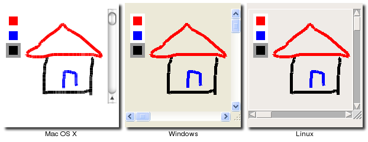<br>
Canvas Widgets
</p>


<div class="tcl"><p>Canvas widgets are created using the <tt><b>tk::canvas</b></tt> command:</p>
	<pre>tk::canvas .canvas</pre></div>
<div class="ruby"><p>Canvas widgets are created using the <tt><b>TkCanvas</b></tt> class:</p>
	<pre>canvas = TkCanvas.new(<em>parent</em>)</pre></div>
<div class="perl"><p>Canvas widgets are created using the <tt><b>new_tk__canvas</b></tt> method, a.k.a. <tt><b>Tkx::tk__canvas</b></tt>:
	</p><pre>$canvas = $<em>parent</em>-&gt;new_tk__canvas();</pre></div>
	<div class="python"><p>Canvas widgets are created using the <tt><b>Canvas</b></tt> function:</p>
	<pre>canvas = Canvas(<em>parent</em>)</pre></div>

<p>
Because canvas widgets have a huge amount of features, we won't be able to cover everything here.
What we will do is take a fairly simple example (a freehand sketching tool) and incrementally
add new pieces to it, each showing another new feature of canvas widgets.  Towards the end of the
chapter, we'll then cover some of the other major features not illustrated in the example.
</p>

 <p><a name="creating"></a>&nbsp;</p><h2>Creating Items</h2>
<p>
When you create a new canvas widget, it will essentially be a large rectangle with nothing on it;
truly a blank canvas in other words.  To do anything useful with it, you'll need to add <em>items</em>
to it.  As mentioned, there are a wide variety of different types of items you can add.  Here, we'll
look at adding a simple line item to the canvas.
</p>
<p>
To create a line, the one piece of information you'll need to specify is where the line should be.  
This is done by using the coordinates of the starting and ending point, expressed as a list of the
form <em><tt>x0 y0 x1 y1</tt></em>.  The <em>origin</em> (0,0) is at the top left corner of the canvas,
with the <em>x</em> value increasing as you move to the right, and the <em>y</em> value increasing
as you move down.  So to create a line from (10,10) to (200,50), we'd use this code:
</p>
<div class="tcl"><pre>.canvas create line 10 10 200 50</pre>
<p>	
The <tt>"create line"</tt> command will return an item id (an integer) that can be used to uniquely
refer to this item; every item created will get its own id. Though often we don't need to refer to the
item later and will therefore ignore the returned id,  we'll see how it can be used shortly.
</p>
</div>
<div class="ruby"><pre>TkcLine.new( canvas, 10, 10, 200, 50)</pre>
<p>
This command will return an object representing the line.  We'll see how this object can be used
shortly.  Note though that very often you won't need to refer to the line directly, and can
therefore ignore the line object that has been returned.
</p>
<p class="fyi">
The underlying Tcl-based Tk library refers to individual objects by a unique id number, starting at
1 and counting up for each object created.  Ruby encapsulates this well inside item objects, but in
some cases, and in the documentation, you'll see reference to this numeric id.  If you do need to
retrieve it, you can do so via calling the <tt>"id"</tt> method of the canvas item object.
</p>
</div>
<div class="perl"><pre>$canvas-&gt;create_line(10,10,200,50);</pre>
<p>	
The <tt>"create_line"</tt> method will return an item id (an integer) that can be used to uniquely
refer to this item; every item created will get its own id. Though often we don't need to refer to the
item later and will therefore ignore the returned id,  we'll see how it can be used shortly.
</p></div>
<div class="python"><pre>canvas.create_line(10, 10, 200, 50)</pre>
<p>	
The <tt>"create_line"</tt> method will return an item id (an integer) that can be used to uniquely
refer to this item; every item created will get its own id. Though often we don't need to refer to the
item later and will therefore ignore the returned id,  we'll see how it can be used shortly.
</p></div>


<p>
Let's start our simple sketchpad example.  For now, we'll want to be able to draw freehand on
the canvas by dragging the mouse on it.  We'll create a canvas widget, and then attach event
bindings to it to capture mouse clicks and drags.  When we first click the mouse, we'll remember
that location as our "start" position.  Every time the mouse is moved with the mouse button still
held down, we'll create a line item going from this "start" position to the current mouse position.
The current position will then be the "start" position for the next line segment.
</p>
<div class="tcl"><pre>package require Tk

grid [tk::canvas .canvas] -sticky nwes -column 0 -row 0
grid columnconfigure . 0 -weight 1
grid rowconfigure . 0 -weight 1

bind .canvas &lt;1&gt; "set lastx %x; set lasty %y"
bind .canvas &lt;B1-Motion&gt; "addLine %x %y"

proc addLine {x y} {
    .canvas create line $::lastx $::lasty $x $y
    set ::lastx $x; set ::lasty $y
}
</pre></div>
<div class="ruby"><pre>require 'tk'
root = TkRoot.new()

@canvas = TkCanvas.new(root)
@canvas.grid :sticky =&gt; 'nwes', :column =&gt; 0, :row =&gt; 0
TkGrid.columnconfigure( root, 0, :weight =&gt; 1 )
TkGrid.rowconfigure( root, 0, :weight =&gt; 1 )

@canvas.bind( "1", proc{|x,y| @lastx = x; @lasty = y}, "%x %y")
@canvas.bind( "B1-Motion", proc{|x, y| addLine(x,y)}, "%x %y")

def addLine (x,y)
  TkcLine.new( @canvas, @lastx, @lasty, x, y )
  @lastx = x; @lasty = y; 
end

Tk.mainloop
</pre></div>
<div class="perl"><pre>use Tkx;
$mw = Tkx::widget-&gt;new(".");

$canvas = $mw-&gt;new_tk__canvas;
$canvas-&gt;g_grid(-column=&gt;0, -row=&gt;0, -sticky=&gt;"nwes");
$mw-&gt;g_grid_columnconfigure(0, -weight=&gt;1);
$mw-&gt;g_grid_rowconfigure(0, -weight=&gt;1);

$canvas-&gt;g_bind("&lt;1&gt;", [sub {my ($x,$y) = @_; $lastx=$x; $lasty=$y}, Tkx::Ev("%x","%y")]);
$canvas-&gt;g_bind("&lt;B1-Motion&gt;", [sub {my ($x,$y) = @_; addLine($x,$y)}, Tkx::Ev("%x","%y")]);

sub addLine {
    my ($x,$y) = @_;
    $canvas-&gt;create_line($lastx,$lasty,$x,$y);
    $lastx = $x; $lasty = $y;
}

Tkx::MainLoop();
</pre></div>
<div class="python"><pre>from tkinter import *
from tkinter import ttk

lastx, lasty = 0, 0

def xy(event):
    global lastx, lasty
    lastx, lasty = event.x, event.y

def addLine(event):
    global lastx, lasty
    canvas.create_line((lastx, lasty, event.x, event.y))
    lastx, lasty = event.x, event.y

root = Tk()
root.columnconfigure(0, weight=1)
root.rowconfigure(0, weight=1)

canvas = Canvas(root)
canvas.grid(column=0, row=0, sticky=(N, W, E, S))
canvas.bind("&lt;Button-1&gt;", xy)
canvas.bind("&lt;B1-Motion&gt;", addLine)

root.mainloop()</pre></div>

<p>
Try it out - drag the mouse around the canvas to create your masterpiece.
</p>

 <p><a name="attributes"></a>&nbsp;</p><h2>Item Attributes</h2>

<p>
When creating items, you can also specify one or more <em>attributes</em> for the item, that will
affect how it is displayed.  For example, here we'll specify that the line should be red, and three
pixels wide.
</p>
<div class="tcl"><pre>.canvas create line 10 10 200 50 -fill red -width 3</pre></div>
<div class="ruby"><pre>TkcLine.new( canvas, 10, 10, 200, 50, :fill =&gt; 'red', :width =&gt; 3)</pre></div>
<div class="perl"><pre>$canvas-&gt;create_line(10, 10, 200, 50, -fill =&gt; "red", -width =&gt; 3);</pre></div>
<div class="python"><pre>canvas.create_line(10, 10, 200, 50, fill='red', width=3)</pre></div>
<p>
The exact set of attributes will vary according to the type of item. 
</p>
<p>
Like with Tk widgets, changing attributes for canvas items after you've already created them can
also be done.
</p>
<div class="tcl"><pre>set id [.canvas create line 0 0 10 10 -fill red]
...
.canvas itemconfigure $id -fill blue -width 2</pre></div>
<div class="ruby"><pre>line = TkcLine.new( canvas, 0, 0, 10, 10, :fill =&gt; 'red' )
line[:fill] = 'blue'
line[:width] = 2</pre></div>
<div class="perl"><pre>$id = $canvas-&gt;create_line(0, 0, 10, 10, -fill =&gt; "red");
...
$canvas-&gt;itemconfigure($id, -fill =&gt; "blue", -width =&gt; 2);</pre></div>
<div class="python"><pre>id = canvas.create_line(0, 0, 10, 10, -fill red)
...
canvas.itemconfigure(id, fill='blue', width=2)
</pre></div>


 <p><a name="bindings"></a>&nbsp;</p><h2>Bindings</h2>
<p>
We've already seen that the canvas widget as a whole, like any other Tk widget, can capture events
using the <tt>"bind"</tt> command.
</p>
<p>
You can also attach bindings to individual items in the canvas (or groups of them, as we'll see in the
next section using tags).  So if you want to know whether or not a particular item has been clicked on,
you don't need to watch for mouse click events for the canvas as a whole, and then figure out if that
click happened on your item.  Tk will take care of all this for you.
</p>
<p>
To capture these events, you use a bind command built into the canvas.  It works exactly like the
regular bind command, taking an event pattern and a callback.  The only difference is you  
specify the canvas item this binding applies to.
</p>

<div class="tcl"><pre>.canvas bind $id &lt;1&gt; {...}</pre></div>
<div class="ruby"><pre>line.bind("1", ...)</pre></div>
<div class="perl"><pre>$canvas-&gt;bind($id, "&lt;1&gt;", sub{...})</pre>
<p class="tip">Note the difference between the item-specific <tt>"bind"</tt> method, and the 
widget-level <tt>"g_bind"</tt> method.</p></div>
<div class="python"><pre>canvas.tag_bind(id, '&lt;1&gt;', ...)</pre>
	<p class="tip">Note the difference between the item-specific <tt>"tag_bind"</tt> method, 
	and the widgetlevel <tt>"bind"</tt> method.</p></div>


<p>
Let's add some code to our sketchpad example to allow changing the drawing color.  We'll first create a few
different rectangle items, each filled with a different color.  Creating rectangle items is just like 
creating line items, where you'll specify the coordinates of two diagonally opposite corners.  We'll then
attach a binding to each of these so that when they're clicked on, they'll set a global variable to the
color to use.  Our mouse motion binding will look at that variable when creating the line segments.
</p>
<div class="tcl"><pre>set id [.canvas create rectangle 10 10 30 30 -fill red]
.canvas bind $id &lt;1&gt; "setColor red"

set id [.canvas create rectangle 10 35 30 55 -fill blue]
.canvas bind $id &lt;1&gt; "setColor blue"

set id [.canvas create rectangle 10 60 30 80 -fill black]
.canvas bind $id &lt;1&gt; "setColor black"

set ::color black

proc setColor {color} {
    set ::color $color
}
proc addLine {x y} {
    .canvas create line $::lastx $::lasty $x $y -fill $::color
    set ::lastx $x; set ::lasty $y
}
</pre></div>
<div class="ruby"><pre>r = TkcRectangle.new( @canvas, 10, 10, 30, 30, :fill =&gt; 'red')
r.bind( "1", proc {setColor('red')})

r = TkcRectangle.new( @canvas, 10, 35, 30, 55, :fill =&gt; 'blue')
r.bind( "1", proc {setColor('blue')})

r = TkcRectangle.new( @canvas, 10, 60, 30, 80, :fill =&gt; 'black')
r.bind( "1", proc {setColor('black')})

@color = 'black'

def setColor color
   @color = color
end

def addLine (x,y)
  TkcLine.new( @canvas, @lastx, @lasty, x, y, :fill =&gt; @color )
  @lastx = x; @lasty = y;
end
</pre></div>
<div class="perl"><pre>$canvas-&gt;g_bind("&lt;1&gt;", [sub {my ($x,$y) = @_; $lastx=$x; $lasty=$y}, Tkx::Ev("%x","%y")]);
$canvas-&gt;g_bind("&lt;B1-Motion&gt;", [sub {my ($x,$y) = @_; addLine($x,$y)}, Tkx::Ev("%x","%y")]);

$id = $canvas-&gt;create_rectangle(10, 10, 30, 30, -fill =&gt; "red");
$canvas-&gt;bind($id, "&lt;1&gt;", sub {setColor("red")});

$id = $canvas-&gt;create_rectangle(10, 35, 30, 55, -fill =&gt; "blue");
$canvas-&gt;bind($id, "&lt;1&gt;", sub {setColor("blue")});

$id = $canvas-&gt;create_rectangle(10, 60, 30, 80, -fill =&gt; "black");
$canvas-&gt;bind($id, "&lt;1&gt;", sub {setColor("black")});

$color = "black";
sub setColor {
    my ($newcolor) = @_;
    $color = $newcolor;
}

sub addLine {
    my ($x,$y) = @_;
    $canvas-&gt;create_line($lastx,$lasty,$x,$y, -fill =&gt; $color);
    $lastx = $x; $lasty = $y;
}
</pre></div>
<div class="python"><pre>color = "black"
def setColor(newcolor):
    global color
    color = newcolor

def addLine(event):
    global lastx, lasty
    canvas.create_line((lastx, lasty, event.x, event.y), fill=color)
    lastx, lasty = event.x, event.y

id = canvas.create_rectangle((10, 10, 30, 30), fill="red")
canvas.tag_bind(id, "&lt;Button-1&gt;", lambda x: setColor("red"))
id = canvas.create_rectangle((10, 35, 30, 55), fill="blue")
canvas.tag_bind(id, "&lt;Button-1&gt;", lambda x: setColor("blue"))
id = canvas.create_rectangle((10, 60, 30, 80), fill="black")
canvas.tag_bind(id, "&lt;Button-1&gt;", lambda x: setColor("black"))	
</pre></div>


 <p><a name="tags"></a>&nbsp;</p><h2>Tags</h2>

<p>
We've seen that every canvas item has a unique id number, but there is another very useful and
powerful way to refer to items on a canvas, and that is using <em>tags</em>.
</p>
<p>
A tag is just an identifier of your creation, something meaningful to your program.  You can attach
tags to canvas items; each item can have any number of tags.  Unlike item id numbers, which are unique
for each item, many items can have the same tag.  
</p>
<p>
What can you do with tags?  We saw that you can use the item id to modify a canvas item (and we'll see
soon there are other things you can do to items, like move them around, delete them, etc.).  Any time
you can use an item id, you can use a tag.  So for example, you can change the color of all items having
a specific tag.  
</p>
<p>
Tags are a good way to identify certain types of items in your canvas (items that are part of a drawn
line, items that are part of the pallette, etc.).  You can use tags to correlate canvas items to particular
objects in your application (so for example, tag all canvas items that are part of the robot with id #37
with the tag "robot37").  With tags, you don't have to keep track of the ids of canvas items to refer to
groups of items later; tags let Tk do that for you.
</p>
<p>
You can assign tags when creating an item using the <tt>"tags"</tt> item configuration option.  You
can add tags later with the <tt>"addtag"</tt> method, or remove them with the <tt>"dtags"</tt> method.
You can get the list of tags for an item with the <tt>"gettags"</tt> method, or return a list of item
id numbers having the given tag with the <tt>"find"</tt> command.
</p>
<p>
For example:
</p>
<div class="tcl">
<pre>% <b>canvas .c</b>
.c
% <b>.c create line 10 10 20 20 -tags "firstline drawing"</b>
1
% <b>.c create rectangle 30 30 40 40 -tags "drawing"</b>
2
% <b>.c addtag rectangle withtag 2</b>
% <b>.c addtag polygon withtag rectangle</b>
% <b>.c gettags 2</b>
drawing rectangle polygon
% <b>.c dtag 2 polygon</b>
% <b>.c gettags 2</b>
drawing rectangle
% <b>.c find withtag drawing</b>
1 2
</pre>
</div>
<div class="ruby">
<pre>&gt;&gt; <b>canvas = TkCanvas.new root</b>
=&gt; #&lt;TkCanvas:0x73c92c @path=".w00000"&gt;l
&gt;&gt; <b>l = TkcLine.new canvas, 10, 10, 20, 20, :tags =&gt; 'firstline drawing'</b>
=&gt; #&lt;TkcLine:0x737990 @id=1, @parent=#&lt;TkCanvas:0x73c92c @path=".w00000"&gt;,
         @path=".w00000", @c=#&lt;TkCanvas:0x73c92c @path=".w00000"&gt;&gt;
&gt;&gt; <b>r = TkcRectangle.new canvas, 30, 30, 40, 40, :tags =&gt; 'drawing'</b>
=&gt; #&lt;TkcRectangle:0x732b34 @id=2, @parent=#&lt;TkCanvas:0x73c92c @path=".w00000"&gt;, 
         @path=".w00000", @c=#&lt;TkCanvas:0x73c92c @path=".w00000"&gt;&gt;
&gt;&gt; <b>r.addtag 'rectangle'</b>
=&gt; #&lt;TkcRectangle:0x732b34 @id=2, ... &gt;
&gt;&gt; <b>canvas.addtag 'polygon', :withtag, 'rectangle'</b>
=&gt; &lt;TkCanvas:0x73c92c @path=".w00000"&gt;
&gt;&gt; <b>canvas.gettags r</b>
=&gt; ["drawing", "rectangle", "polygon"]
&gt;&gt; <b>r.dtag 'polygon'</b>
=&gt; #&lt;TkcRectangle:0x732b34 @id=2 ... &gt;
&gt;&gt; <b>r.gettags</b>
=&gt; ["drawing", "rectangle"]
&gt;&gt; <b>canvas.find :withtag, 'drawing'</b>
=&gt; [#&lt;TkcLine:0x737990 @id=1 ... &gt;, #&lt;TkcRectangle:0x732b34 @id=2 ... &gt;]
</pre>
</div>
<div class="perl">PERLTODO</div>
<div class="python">
<pre>&gt;&gt;&gt; <b>c = Canvas(root)</b>
&gt;&gt;&gt; <b>c.create_line(10, 10, 20, 20, tags=('firstline', 'drawing'))</b>
1
&gt;&gt;&gt; <b>c.create_rectangle(30, 30, 40, 40, tags=('drawing'))</b>
2
&gt;&gt;&gt; <b>c.addtag('rectangle', 'withtag', 2)</b>
&gt;&gt;&gt; <b>c.addtag('polygon', 'withtag', 'rectangle')</b>
&gt;&gt;&gt; <b>c.gettags(2)</b>
('drawing', 'rectangle', 'polygon')
&gt;&gt;&gt; <b>c.dtag(2, 'polygon')</b>
&gt;&gt;&gt; <b>c.gettags(2)</b>
('drawing', 'rectangle')	
&gt;&gt;&gt; <b>c.find_withtag('drawing')</b>
(1, 2)
</pre>	
</div>
<p>
As you can see, things like <tt>"withtag"</tt> will take either an individual item or a tag; in the latter
case, they will apply to all items having that tag (which could be none).  The <tt>"addtag"</tt>
and <tt>"find"</tt> have many other options, allowing you to specify items near a point, overlapping
a particular area, and more.
</p>
<p>
Let's use tags first to put a border around whichever item in our color palette is currently selected.
</p>
<div class="tcl"><pre>set id [.canvas create rectangle 10 10 30 30 -fill red -tags "palette palettered"]
set id [.canvas create rectangle 10 35 30 55 -fill blue -tags "palette paletteblue"]
set id [.canvas create rectangle 10 60 30 80 -fill black -tags "palette paletteblack paletteSelected"]

proc setColor {color} {
    set ::color $color
    .canvas dtag all paletteSelected
    .canvas itemconfigure palette -outline white
    .canvas addtag paletteSelected withtag palette$color
    .canvas itemconfigure paletteSelected -outline #999999
}

setColor black
.canvas itemconfigure palette -width 5</pre></div>
<div class="ruby"><pre>r = TkcRectangle.new( @canvas, 10, 10, 30, 30, :fill =&gt; 'red', :tags =&gt; 'palette palettered')
r = TkcRectangle.new( @canvas, 10, 35, 30, 55, :fill =&gt; 'blue', :tags =&gt; 'palette paletteblue')
r = TkcRectangle.new( @canvas, 10, 60, 30, 80, :fill =&gt; 'black', :tags =&gt; 'palette paletteblack paletteSelected')

def setColor color
   @color = color
   @canvas.dtag 'all', 'paletteSelected'
   @canvas.itemconfigure 'palette', :outline =&gt; 'white'
   @canvas.addtag 'paletteSelected', :withtag, "palette#{color}"
   @canvas.itemconfigure 'paletteSelected', :outline =&gt; '#999999'
end

setColor 'black'
@canvas.itemconfigure 'palette', :width =&gt; 5
</pre>
<p>
The canvas <tt>"itemconfigure"</tt> method provides another way to change the properties of a canvas item.
The advantage over dealing with the canvas item object directly is that we can specify a tag, so that the
change we're making applies to all items having that tag.  Without this, we could use <tt>"gettags"</tt>
to get all the items, iterate through them, and set the option, but <tt>"itemconfigure"</tt> is more convenient.
</p></div>
<div class="perl"><pre>$id = $canvas-&gt;create_rectangle(10, 10, 30, 30, -fill =&gt; "red", -tags =&gt; "palette palettered");
$id = $canvas-&gt;create_rectangle(10, 35, 30, 55, -fill =&gt; "blue", -tags =&gt; "palette paletteblue");
$id = $canvas-&gt;create_rectangle(10, 60, 30, 80, -fill =&gt; "black", -tags =&gt; "palette paletteblack paletteSelected");

sub setColor {
    my ($newcolor) = @_;
    $color = $newcolor;
    $canvas-&gt;dtag_all("paletteSelected");
    $canvas-&gt;itemconfigure("palette", -outline =&gt; "white");
    $canvas-&gt;addtag("paletteSelected", withtag =&gt; "palette".$color);
    $canvas-&gt;itemconfigure("paletteSelected", -outline =&gt; "#999999");
}
setColor "black";
$canvas-&gt;itemconfigure("palette", -width =&gt; 5);
</pre></div>
<div class="python"><pre>def setColor(newcolor):
    global color
    color = newcolor
    canvas.dtag('all', 'paletteSelected')
    canvas.itemconfigure('palette', outline='white')
    canvas.addtag('paletteSelected', 'withtag', 'palette%s' % color)
    canvas.itemconfigure('paletteSelected', outline='#999999')

id = canvas.create_rectangle((10, 10, 30, 30), fill="red", tags=('palette', 'palettered'))
id = canvas.create_rectangle((10, 35, 30, 55), fill="blue", tags=('palette', 'paletteblue'))
id = canvas.create_rectangle((10, 60, 30, 80), fill="black", tags=('palette', 'paletteblack', 'paletteSelected'))

setColor('black')
canvas.itemconfigure('palette', width=5)

</pre></div>

<p>
Let's also use tags to make the current stroke we're drawing appear more visible; when we release the
mouse we'll put it back to normal.
</p>
<div class="tcl"><pre>bind .canvas &lt;B1-ButtonRelease&gt; "doneStroke"

proc addLine {x y} {
    .canvas create line $::lastx $::lasty $x $y -fill $::color -width 5 -tags currentline
    set ::lastx $x; set ::lasty $y
}
proc doneStroke {} {
    .canvas itemconfigure currentline -width 1
}
</pre></div>
<div class="ruby"><pre>@canvas.bind( "B1-ButtonRelease", proc{doneStroke})
def addLine (x,y)
  TkcLine.new( @canvas, @lastx, @lasty, x, y, :fill =&gt; @color, :width =&gt; 5, :tags =&gt; 'currentline' )
  @lastx = x; @lasty = y;
end
def doneStroke
  @canvas.itemconfigure 'currentline', :width =&gt; 1
end
</pre></div>
<div class="perl"><pre>$canvas-&gt;g_bind("&lt;B1-ButtonRelease&gt;", sub {doneStroke();});
sub addLine {
    my ($x,$y) = @_;
    $canvas-&gt;create_line($lastx,$lasty,$x,$y, -fill =&gt; $color, -width =&gt; 5, -tags =&gt; "currentline");
    $lastx = $x; $lasty = $y;
}
sub doneStroke {
    $canvas-&gt;itemconfigure("currentline", -width =&gt; 1);
}</pre></div>
<div class="python"><pre>def addLine(event):
    global lastx, lasty
    canvas.create_line((lastx, lasty, event.x, event.y), fill=color, width=5, tags='currentline')
    lastx, lasty = event.x, event.y

def doneStroke(event):
    canvas.itemconfigure('currentline', width=1)        

canvas.bind("<b1-buttonrelease>", doneStroke)
</b1-buttonrelease></pre></div>

 <p><a name="modify"></a>&nbsp;</p><h2>Modifying Items</h2>
<p>
You've seen how you can modify the configuration options on an item — its color, width and so on.
There are a number of other things you can do items.
</p>
<p>
To delete items, use the <tt>"delete"</tt> method.
To change an item's size and position, you can use the <tt>"coords"</tt> method; this allows you to provide
new coordinates for the item, specified the same way as when you first created the item.  Calling this method
without a new set of coordinates will return the current coordinates of the item.  To move one or more items
by a particular horizontal or vertical amount from their current location, you can use the <tt>"move"</tt>
method.
</p>
<p>
All items are ordered from top to bottom in what's called the stacking order.  If an item later in the
stacking order overlaps the coordinates of an item below it, the item on top will be drawn on top of the
lower item.  The <tt>"raise"</tt> and <tt>"lower"</tt> methods allow you to adjust an item's position
in the stacking order.
</p>
<p>
There are several more operations described in the reference manual page, both to modify items and to 
retrieve additional information about them.
</p>

 <p><a name="scrolling"></a>&nbsp;</p><h2>Scrolling</h2>
<p>
In many applications, you'll want the canvas to be larger than what appears on the screen.  You can attach
horizontal and vertical scrollbars to the canvas in the usual way, via the <tt>"xview"</tt> and <tt>"yview"</tt>
methods.  
</p>
<p>
As far as the size of the canvas, you can specify both how large you'd like it to be on screen, as well as
what the full size of the canvas is, which would require scrolling to see.  The <tt>"width"</tt> and
<tt>"height"</tt> configuration options for the canvas widget will request the given amount of space
from the geometry manager.  The <tt>"scrollregion"</tt> configuration option (e.g. <tt>"0 0 1000 1000"</tt>)
tells Tk how large the canvas surface is.
</p>
<p>
You should be able to modify the sketchpad program to add scrolling, given what you already know.  Give it a try.
</p>
<p>
Once you've done that, scroll the canvas down just a little bit, and then try drawing.  You'll see that the
line you're drawing appears <em>above</em> where the mouse is pointing!  Surprised?
</p>
What's going on is that the global <tt>"bind"</tt> command doesn't know that the canvas is scrolled (it doesn't
know the details of any particular widget).  So if you've scrolled the canvas down by 50 pixels, and you click
on the top left corner, bind will report that you've clicked at (0,0).  But we know that because of the scrolling,
that position should really be (0,50).
<p></p>
<p>
The <tt>"canvasx"</tt> and <tt>"canvasy"</tt> methods will translate the position onscreen (which bind is reporting)
into the actual point on the canvas, taking into account scrolling.  If you're adding these directly to the event
bindings (as opposed to procedures called from the event bindings), be careful about quoting and substitutions,
to make sure that the conversions are done when the event fires.
</p>
<p>
Here then is our complete example.  We probably don't want the palette to be scrolled away when the canvas is
scrolled, but we'll leave that for another day.
</p>
<div class="tcl"><pre>package require Tk

grid [tk::canvas .canvas -scrollregion "0 0 1000 1000" -yscrollcommand ".v set" -xscrollcommand ".h set"] -sticky nwes -column 0 -row 0
grid columnconfigure . 0 -weight 1
grid rowconfigure . 0 -weight 1

grid [tk::scrollbar .h -orient horizontal -command ".canvas xview"] -column 0 -row 1 -sticky we
grid [tk::scrollbar .v -orient vertical -command ".canvas yview"] -column 1 -row 0 -sticky ns
grid [ttk::sizegrip .sz] -column 1 -row 1 -sticky se

bind .canvas &lt;1&gt; {set lastx [.canvas canvasx %x]; set lasty [.canvas canvasy %y]}
bind .canvas &lt;B1-Motion&gt; {addLine [.canvas canvasx %x] [.canvas canvasy %y]}
bind .canvas &lt;B1-ButtonRelease&gt; "doneStroke"


set id [.canvas create rectangle 10 10 30 30 -fill red -tags "palette palettered"]
.canvas bind $id &lt;1&gt; "setColor red"

set id [.canvas create rectangle 10 35 30 55 -fill blue -tags "palette paletteblue"]
.canvas bind $id &lt;1&gt; "setColor blue"

set id [.canvas create rectangle 10 60 30 80 -fill black -tags "palette paletteblack paletteSelected"]
.canvas bind $id &lt;1&gt; "setColor black"

proc setColor {color} {
    set ::color $color
    .canvas dtag all paletteSelected
    .canvas itemconfigure palette -outline white
    .canvas addtag paletteSelected withtag palette$color
    .canvas itemconfigure paletteSelected -outline #999999
}
proc addLine {x y} {
    .canvas create line $::lastx $::lasty $x $y -fill $::color -width 5 -tags currentline
    set ::lastx $x; set ::lasty $y
}
proc doneStroke {} {
    .canvas itemconfigure currentline -width 1
}

setColor black
.canvas itemconfigure palette -width 5</pre></div>
<div class="ruby"><pre>require 'tk'
require 'tkextlib/tile'

root = TkRoot.new()

@canvas = TkCanvas.new(root) {scrollregion '0 0 1000 1000'}
@h = TkScrollbar.new(root) {orient 'horizontal'}
@v = TkScrollbar.new(root) {orient 'vertical'}
@canvas.xscrollbar(@h)
@canvas.yscrollbar(@v)

@canvas.grid :sticky =&gt; 'nwes', :column =&gt; 0, :row =&gt; 0
@h.grid :sticky =&gt; 'we', :column =&gt; 0, :row =&gt; 1
@v.grid :sticky =&gt; 'ns', :column =&gt; 1, :row =&gt; 0
TkGrid.columnconfigure( root, 0, :weight =&gt; 1 )
TkGrid.rowconfigure( root, 0, :weight =&gt; 1 )

@canvas.bind( "1", proc{|x,y| @lastx = @canvas.canvasx(x); @lasty = @canvas.canvasy(y)}, "%x %y")
@canvas.bind( "B1-Motion", proc{|x, y| addLine(@canvas.canvasx(x), @canvas.canvasy(y))}, "%x %y")
@canvas.bind( "B1-ButtonRelease", proc{doneStroke})

r = TkcRectangle.new( @canvas, 10, 10, 30, 30, :fill =&gt; 'red', :tags =&gt; 'palette palettered')
r.bind( "1", proc {setColor('red')})

r = TkcRectangle.new( @canvas, 10, 35, 30, 55, :fill =&gt; 'blue', :tags =&gt; 'palette paletteblue')
r.bind( "1", proc {setColor('blue')})

r = TkcRectangle.new( @canvas, 10, 60, 30, 80, :fill =&gt; 'black', :tags =&gt; 'palette paletteblack paletteSelected')
r.bind( "1", proc {setColor('black')})

@canvas.itemconfigure 'palette', :width =&gt; 5

def setColor color
   @color = color
   @canvas.dtag 'all', 'paletteSelected'
   @canvas.itemconfigure 'palette', :outline =&gt; 'white'
   @canvas.addtag 'paletteSelected', :withtag, "palette#{color}"
   @canvas.itemconfigure 'paletteSelected', :outline =&gt; '#999999'
end

setColor 'black'

def addLine (x,y)
  TkcLine.new( @canvas, @lastx, @lasty, x, y, :fill =&gt; @color, :width =&gt; 5, :tags =&gt; 'currentline' )
  @lastx = x; @lasty = y;
end
def doneStroke
  @canvas.itemconfigure 'currentline', :width =&gt; 1
end

Tk.mainloop
</pre></div>
<div class="perl"><pre>use Tkx;
$mw = Tkx::widget-&gt;new(".");

$canvas = $mw-&gt;new_tk__canvas(-scrollregion =&gt; "0 0 1000 1000");
$canvas-&gt;g_grid(-column=&gt;0, -row=&gt;0, -sticky=&gt;"nwes");
$mw-&gt;g_grid_columnconfigure(0, -weight=&gt;1);
$mw-&gt;g_grid_rowconfigure(0, -weight=&gt;1);

$hscroll = $mw-&gt;new_tk__scrollbar(-orient =&gt; "horizontal", -command =&gt; [$canvas, "xview"]);
$vscroll = $mw-&gt;new_tk__scrollbar(-orient =&gt; "vertical", -command =&gt; [$canvas, "yview"]);
$hscroll-&gt;g_grid(-column =&gt; 0, -row =&gt; 1, -sticky =&gt; "we");
$vscroll-&gt;g_grid(-column =&gt; 1, -row =&gt; 0, -sticky =&gt; "ns");
$mw-&gt;new_ttk__sizegrip()-&gt;g_grid(-column =&gt; 1, -row =&gt; 1, -sticky =&gt; "se");
$canvas-&gt;configure(-yscrollcommand =&gt; [$vscroll, "set"], -xscrollcommand =&gt; [$hscroll, "set"]);

$canvas-&gt;g_bind("&lt;1&gt;", [sub {my ($x,$y) = @_; $lastx=$canvas-&gt;canvasx($x); $lasty=$canvas-&gt;canvasy($y)}, Tkx::Ev("%x","%y")]);
$canvas-&gt;g_bind("&lt;B1-Motion&gt;", [sub {my ($x,$y) = @_; addLine($canvas-&gt;canvasx($x),$canvas-&gt;canvasy($y))}, Tkx::Ev("%x","%y")]);
$canvas-&gt;g_bind("&lt;B1-ButtonRelease&gt;", sub {doneStroke();});

$id = $canvas-&gt;create_rectangle(10, 10, 30, 30, -fill =&gt; "red", -tags =&gt; "palette palettered");
$canvas-&gt;bind($id, "&lt;1&gt;", sub {setColor("red")});

$id = $canvas-&gt;create_rectangle(10, 35, 30, 55, -fill =&gt; "blue", -tags =&gt; "palette paletteblue");
$canvas-&gt;bind($id, "&lt;1&gt;", sub {setColor("blue")});

$id = $canvas-&gt;create_rectangle(10, 60, 30, 80, -fill =&gt; "black", -tags =&gt; "palette paletteblack paletteSelected");
$canvas-&gt;bind($id, "&lt;1&gt;", sub {setColor("black")});

sub setColor {
    my ($newcolor) = @_;
    $color = $newcolor;
    $canvas-&gt;dtag_all("paletteSelected");
    $canvas-&gt;itemconfigure("palette", -outline =&gt; "white");
    $canvas-&gt;addtag("paletteSelected", withtag =&gt; "palette".$color);
    $canvas-&gt;itemconfigure("paletteSelected", -outline =&gt; "#999999");
}
setColor "black";
$canvas-&gt;itemconfigure("palette", -width =&gt; 5);

sub addLine {
    my ($x,$y) = @_;
    $canvas-&gt;create_line($lastx,$lasty,$x,$y, -fill =&gt; $color, -width =&gt; 5, -tags =&gt; "currentline");
    $lastx = $x; $lasty = $y;
}

sub doneStroke {
    $canvas-&gt;itemconfigure("currentline", -width =&gt; 1);
}

Tkx::MainLoop();
</pre></div>
<div class="python"><pre>from tkinter import *
from tkinter import ttk
root = Tk()

h = ttk.Scrollbar(root, orient=HORIZONTAL)
v = ttk.Scrollbar(root, orient=VERTICAL)
canvas = Canvas(root, scrollregion=(0, 0, 1000, 1000), yscrollcommand=v.set, xscrollcommand=h.set)
h['command'] = canvas.xview
v['command'] = canvas.yview
ttk.Sizegrip(root).grid(column=1, row=1, sticky=(S,E))

canvas.grid(column=0, row=0, sticky=(N,W,E,S))
h.grid(column=0, row=1, sticky=(W,E))
v.grid(column=1, row=0, sticky=(N,S))
root.grid_columnconfigure(0, weight=1)
root.grid_rowconfigure(0, weight=1)

lastx, lasty = 0, 0

def xy(event):
    global lastx, lasty
    lastx, lasty = canvas.canvasx(event.x), canvas.canvasy(event.y)

def setColor(newcolor):
    global color
    color = newcolor
    canvas.dtag('all', 'paletteSelected')
    canvas.itemconfigure('palette', outline='white')
    canvas.addtag('paletteSelected', 'withtag', 'palette%s' % color)
    canvas.itemconfigure('paletteSelected', outline='#999999')

def addLine(event):
    global lastx, lasty
    x, y = canvas.canvasx(event.x), canvas.canvasy(event.y)
    canvas.create_line((lastx, lasty, x, y), fill=color, width=5, tags='currentline')
    lastx, lasty = x, y

def doneStroke(event):
    canvas.itemconfigure('currentline', width=1)        
        
canvas.bind("&lt;Button-1&gt;", xy)
canvas.bind("&lt;B1-Motion&gt;", addLine)
canvas.bind("&lt;B1-ButtonRelease&gt;", doneStroke)

id = canvas.create_rectangle((10, 10, 30, 30), fill="red", tags=('palette', 'palettered'))
canvas.tag_bind(id, "&lt;Button-1&gt;", lambda x: setColor("red"))
id = canvas.create_rectangle((10, 35, 30, 55), fill="blue", tags=('palette', 'paletteblue'))
canvas.tag_bind(id, "&lt;Button-1&gt;", lambda x: setColor("blue"))
id = canvas.create_rectangle((10, 60, 30, 80), fill="black", tags=('palette', 'paletteblack', 'paletteSelected'))
canvas.tag_bind(id, "&lt;Button-1&gt;", lambda x: setColor("black"))

setColor('black')
canvas.itemconfigure('palette', width=5)
root.mainloop()</pre></div>


 <p><a name="types"></a>&nbsp;</p><h2>Other Item Types</h2>

<p>
Besides lines and rectangles, there are a number of different types of items that canvas widgets support.
Remember that each one has its own set of item configuration options, detailed in the reference manual.
</p>
<p>
Items of type <tt>"line"</tt> can actually be a bit fancier than what we've seen.  A line item can actually be
a series of line segments, not just one; in our example, we could have chosen to use a single line item for
each complete stroke.  The line can also be drawn directly point-to-point, or smoothed out into a curved line.
</p>
<p>
Items of type <tt>"rectangle"</tt> we've seen.  Items of type <tt>"oval"</tt> work the same but draw as an oval.
Items of type <tt>"arc"</tt> allow you to draw just a piece of an oval.  Items of type <tt>"polygon"</tt> allow
you to draw a closed polygon with any number of sides.
</p>
<p>
Pictures can be added to canvas widgets, using items of type <tt>"bitmap"</tt> (for black and white), or type
<tt>"image"</tt> (for full color).
</p>
<p>
You can add text to a canvas using items of type <tt>"text"</tt>.  You have complete control of the font, size,
color and more, as well as the actual text that is displayed.
</p>
<p>
Perhaps most interestingly, you can embed other widgets (which would include a frame which itself contains
other widgets) into a canvas using an item of type <tt>"window"</tt>.  When we do this, the canvas in effect
acts as a geometry manager for those other widgets.  This capability raises all kinds of possibilities for 
your application.
</p>
<p>
There is a lot more to canvas widgets than we've described here; be sure to consult the reference manual,
as well as the wide range of example programs included with the Tk distribution.
</p>

<p> </p><p class="date"></p><h1>Text</h1>

<ul class="menu">
<li><a href="http://www.tkdocs.com/widgets/">Widget Roundup</a></li>
<li><a href="http://www.tcl.tk/man/tcl8.5/TkCmd/text.htm">Reference Manual</a></li>
</ul>
<p>
A <b>text</b> widget manages a multi-line text area.  Like the canvas widget, Tk's text widget is
an immensely flexible and powerful tool which can be used for a wide variety of tasks.  Some 
example uses of text widgets have included anything from providing a simple multi-line text area
as part of a form, to a stylized code editor, to an outliner, to a web browser.  Text widgets are
part of the classic Tk widgets, not the themed Tk widgets.
</p>

<p class="picture">
<br>
Text Widgets
</p>


<div class="tcl"><p>Text widgets are created using the <tt><b>tk::text</b></tt> command:</p>
	<pre>tk::text .text -width 40 -height 10</pre></div>
<div class="ruby"><p>Text widgets are created using the <tt><b>TkText</b></tt> class:</p>
	<pre>text = TkText.new(<em>parent</em>) {width 40; height 10}</pre></div>
<div class="perl">Text widgets are created using the <tt><b>new_tk__text</b></tt> method, a.k.a. <tt><b>Tkx::tk__text</b></tt>:
	<pre>$text = $<em>parent</em>-&gt;new_tk__text(-width =&gt; 40, -height =&gt; 10);</pre>
</div>
<div class="python"><p>Text widgets are created using the <tt><b>Text</b></tt> function:</p>
	<pre>text = Text(<em>parent</em>, width=40, height=10)</pre></div>

<p>
While we briefly introduced text widgets in an earlier chapter, here we'll go into much more detail,
to give you a sense of the level of sophistication it allows.  Still, for any significant work with 
the text widget, the <a href="http://www.tcl.tk/man/tcl8.5/TkCmd/text.htm">reference manual</a> is very well organized and useful.
</p>

 <p><a name="basics"></a>&nbsp;</p><h2>The Basics</h2>

<p>
If you just want to use the text widget to get a simple multi-line text from the user as part of
a form, there's only a few things you'll need to worry about: creating and sizing the widget (check),
providing an initial value for the text in the form, and retrieving the text in the widget after
the user has submitted the form.
</p>
<h3>Providing Initial Content</h3>
<p>
When you first create it, the text widget has nothing in it, so if you want to provide an initial
piece of text, you're going to have add it yourself.  Unlike for example the entry widget, text
widgets don't support a <tt>"textvariable"</tt> configuration option; as we'll soon see, text widgets
can contain a lot more than just plain text, so a simple variable isn't sufficient to hold it all.
</p>
<p>
Instead, to set the initial text for the widget, you'll use the widget's <tt>"insert"</tt> method:
</p>
<div class="tcl"><pre>.text insert 1.0 "here is my text to insert"</pre></div>
<div class="ruby"><pre>text.insert(1.0, "here is my text to insert")</pre></div>
<div class="perl"><pre>$text-&gt;insert("1.0", "here is my text to insert");</pre></div>
<div class="python"><pre>text.insert('1.0', 'here is my text to insert')</pre></div>
<p>
The "1.0" here represents where to insert the text, and can be read as "line 1, character 0".  This
refers to the first character of the first line; for historical conventions related to how programmers
normally refer to lines and characters, line numbers are 1-based, and character numbers are 0-based.
</p>
<p>
The text to insert is just a string.  Because the widget can hold multi-line text, the string you
supply can be multi-line as well.  To do, simply embed <tt>"\n"</tt> (newline) characters in your
string at the appropriate locations.
</p>
<h3>Scrolling</h3>
<p>
Scrollbars, both horizontal and vertical, can be attached to the text widget.  This works exactly
the same as using scrollbars in any other widget, such as a listbox or canvas.
</p>
<p>
You can also ask the widget to ensure that a certain part of the text is visible.  For example, if
you've added more text to the widget than will fit onscreen (so it will scroll) but want to ensure
that the top of the text rather than the bottom is visible, call the <tt>"see"</tt> method,
passing it the position of the text (e.g. "1.0").
</p>

<h3>Controlling Wrapping</h3>
<p>
What if some lines of text in the widget are very long, longer than the width of the widget?  By default,
text will just wrap around to the next line, but if and how it does this can be controlled by the
<tt>"wrap"</tt> configuration option.  The default value is <tt>"char"</tt>, meaning wrap around right at
the character at the end of the line; other options are <tt>"word"</tt> to cause wrapping, but only at
word breaks (e.g. spaces), and <tt>"none"</tt> meaning don't wrap around at all.  In the latter case,
some of the text won't be visible unless you attach a horizontal scrollbar to the widget.
</p>
<h3>Disabling the Widget</h3>
<p>
Some forms will temporarily disable editing in particular widgets unless certain conditions are met 
(e.g. some other options are set to a certain value).  To prevent the user from making any changes to
a text widget, set the <tt>"state"</tt> configuration option to <tt>"disabled"</tt>; re-enable editing
by setting this option back to <tt>"normal"</tt>.
</p>
<h3>Retrieving the Text</h3>
<p>
Finally, after the user has made any changes and submitted the form, your program will want to 
retrieve the contents of the widget, which is done with the <tt>"get"</tt> method:
</p>
<div class="tcl"><pre>set thetext [.text get 1.0 end]</pre></div>
<div class="ruby"><pre>thetext = t.get("1.0", 'end')</pre></div>
<div class="perl"><pre>$thetext = $text-&gt;get("1.0", "end");</pre></div>
<div class="python"><pre>thetext = text.get('1.0', 'end')</pre></div>

 <p><a name="modifying"></a>&nbsp;</p><h2>Modifying the Text in Code</h2>

<p>
While the user can modify the text in the text widget interactively, your program can also make
changes.  Adding text is done with the <tt>"insert"</tt> method, which we used above to provide an
initial value for the text widget.
</p>
<h3>Text Positions and Indices</h3>
<p>
When we specified a position of "1.0" (first line, first character), this was an example of an <em>index</em>.
It tells the insert method where to insert the new text (just before the first line, first character, i.e. at the
very start of the widget).  There are a variety of ways to specify these indices.  You've also seen another one:
the <tt>"end"</tt> (from the "get" example) means just past the end of the text ("just past" because text
insertions go right before the given index, so inserting at "end" will add text to the end of the widget).
Note that Tk will <em>always</em> add a newline at the very end of the text widget.
</p>
<p>
Here are a few additional examples of indices, and what they mean:
</p>
<table>
<tbody><tr><td><tt>3.end</tt></td><td>The newline at the end of line 3.</td></tr>
<tr><td><tt>1.0 + 3 chars</tt></td><td>Three characters past the start of line 1.</td></tr>
<tr><td><tt>2.end -1 chars</tt></td><td>The last character before the new line in line 2.</td></tr>
<tr><td><tt>end -1 chars</tt></td><td>The newline that Tk always adds at the end of the text.</td></tr>
<tr><td><tt>end -2 chars</tt></td><td>The actual last character of the text.</td></tr>
<tr><td><tt>end -1 lines</tt></td><td>The start of the last actual line of text.</td></tr>
<tr><td><tt>2.2 + 2 lines</tt></td><td>The third character (index 2) of the fourth line of text.</td></tr>
<tr><td><tt>2.5 linestart</tt></td><td>The first character of line 2.</td></tr>
<tr><td><tt>2.5 lineend</tt></td><td>The position of the newline at the end of line 2.</td></tr>
<tr><td><tt>2.5 wordstart</tt></td><td>The first character of the word containing the character at index 2.5.</td></tr>
<tr><td><tt>2.5 wordend</tt></td><td>The first character just past the last character of the word containing index 2.5.</td></tr>
</tbody></table>

<p>
Some additional things to keep in mind:
</p><ul>
<li> The term "chars" can be abbreviated as "c", and "lines" as "l".
</li><li> You can omit the spaces between the terms, e.g. "1.0+3c".
</li><li> If you specify an index past the end of the widget (e.g. "end + 100c") it will be interpreted as the end.
</li><li> Adding characters will wrap to the next lines as needed; e.g. "1.0 + 10 chars" on a line with only five
	 characters will end up being on the second line.
</li><li> When using indices containing multiple words, make sure to quote them appropriately so that Tk sees
	   the entire index as a single argument.
</li><li> When moving up or down a certain number of lines, this is interpreted as <em>logical</em> lines, where
	 each line is terminated only by the "\n".  With long lines and wrapping enabled, this may be represent 
	 multiple lines on the display.  If you'd like to move up or down a single line on the display, you can
	 specify this as e.g. "1.0 + 2 display lines".
</li><li> To determine the actual canonical position of an index, use the <tt>"index"</tt> method, passing it the
	 index expression, and it will return the corresponding index in the form <tt>"<em>line</em>.<em>char</em>"</tt>.
</li><li> You can compare two indices using the <tt>"compare"</tt> method, which lets you check for equality, 
	 whether one index is later in the text than the other, etc.
</li></ul>
<p></p>

<h3>Deleting Text</h3>
<p>
While the <tt>"insert"</tt> method adds new text anywhere in the widget, the <tt>"delete"</tt> method removes it.
You can specify either a single character to be deleted (by index), or a range of characters specified by the
start and end index.  In the latter case, characters from (and including) the start index through to <em>just before</em>
the end index will be deleted (so the character at the end index is not deleted).  So this would remove a single
line of text (including its trailing newline) from the start of the text:
</p>
<div class="tcl"><pre>.text delete 1.0 2.0</pre></div>
<div class="ruby"><pre>text.delete(1.0, 2.0)</pre></div>
<div class="perl"><pre>$text-&gt;delete("1.0", "2.0");</pre></div>
<div class="python"><pre>text.delete('1.0', '2.0')</pre></div>

<p>
There is also a <tt>"replace"</tt> method, taking a starting index, and ending index and a string as parameters.
It does the same as a delete, followed by an insert at the same location.
</p>

<h3>Example: Logging Window</h3>
<p>
Here's a short example illustrating how to use a text widget as a 80x24 logging window for your application.
The user doesn't edit the text widget at all; instead, your program will write log messages to it.  You'd like
to keep the content to no more than 24 lines (so no scrolling), so as you add new messages at the end, you'll have
to remove old ones from the top if there are already 24 lines.
</p>
<div class="tcl"><pre>package require Tk
grid [text .log -state disabled -width 80 -height 24 -wrap none]

proc writeToLog {msg} {
    set numlines [lindex [split [.log index "end - 1 line"] "."] 0]
    .log configure -state normal
    if {$numlines==24} {.log delete 1.0 2.0}
    if {[.log index "end-1c"]!="1.0"} {.log insert end "\n"}
    .log insert end "$msg"
    .log configure -state disabled
}</pre></div>
<div class="ruby"><pre>require 'tk'
root = TkRoot.new
@log = TkText.new(root) {state 'disabled';width 80;height 24;wrap 'none'}.grid

def writeToLog(msg)
    numlines = @log.index("end - 1 line").split('.')[0].to_i
    @log['state'] = :normal
    @log.delete(1.0, 2.0) if numlines==24
    @log.insert('end', "\n") unless @log.index('end-1c')=='1.0'
    @log.insert('end', msg)
    @log['state'] = :disabled
end
</pre></div>
<div class="perl"><pre>use Tkx;
$mw = Tkx::widget-&gt;new(".");

$log = $mw-&gt;new_tk__text(-state =&gt; "disabled", -width =&gt; 80, -height =&gt; 24, -wrap =&gt; "none");
$log-&gt;g_grid;

sub writeToLog {
    my ($msg) = @_;
    $numlines = $log-&gt;index("end - 1 line");
    print $numlines . "\n";
    $log-&gt;configure(-state =&gt; "normal");
    if ($numlines==24) {$log-&gt;delete("1.0", "2.0");}
    if ($log-&gt;index("end-1c")!="1.0") {$log-&gt;insert_end("\n");}
    $log-&gt;insert_end($msg);
    $log-&gt;configure(-state =&gt; "disabled");
}
</pre></div>
<div class="python"><pre>from tkinter import *
from tkinter import ttk

root = Tk()
log = Text(root, state='disabled', width=80, height=24, wrap='none')
log.grid()

def writeToLog(msg):
    numlines = log.index('end - 1 line').split('.')[0]
    log['state'] = 'normal'
    if numlines==24:
        log.delete(1.0, 2.0)
    if log.index('end-1c')!='1.0':
        log.insert('end', '\n')
    log.insert('end', msg)
    log['state'] = 'disabled'
</pre></div>

<p class="tip">
Note that because the widget was disabled, we had to reenable it to make any changes, even from our program.
</p>


 <p><a name="tags"></a>&nbsp;</p><h2>Formatting with Tags</h2>
<p>
Up until now, we've just dealt with plain text.  Now it's time to look at how to add special formatting,
such as bold, italic, strikethrough, background colors, font sizes, and much more.  Tk's text widget
implements these using a feature called <em>tags</em>.	
</p>
<p>
Tags are objects associated with the text widget.  Each tag is referred to via a name chosen by the programmer.
Each tag can have a number of different configuration options; these are things like fonts, colors, etc. that 
will be used to format text.  Though tags are objects having state, they don't need to be explicitly created;
they'll be automatically created the first time the tag name is used.
</p>
<h3>Adding Tags to Text</h3>
<p>
Tags can be associated with one or more ranges of text in the widget.  As before, these are specified via indices;
a single index to represent a single character, and a start and end index to represent the range from the start
character to just before the end character.  Tags can be added to ranges of text using the <tt>"tag add"</tt> method, e.g.
</p>

<div class="tcl"><pre>.text tag add highlightline 5.0 6.0</pre></div>
<div class="ruby"><pre>text.tag_add('highlightline', 5.0, 6.0)</pre></div>
<div class="perl"><pre>$text-&gt;tag_add("highlightline", "5.0", "6.0");</pre></div>
<div class="python"><pre>text.tag_add('highlightline', '5.0', '6.0')</pre></div>

<p>
Tags can also be provided when inserting text by adding an optional parameter to the <tt>"insert"</tt> method,
which holds a list of one or more tags to add to the text you're inserting, e.g.
</p>

<div class="tcl"><pre>.text insert end "new material to insert" "highlightline recent warning"</pre></div>
<div class="ruby"><pre>text.insert('end', 'new material to insert', 'highlightline recent warning')</pre></div>
<div class="perl"><pre>$text-&gt;insert_end("new material to insert", "highlightline recent warning");</pre></div>
<div class="python"><pre>text.insert('end', 'new material to insert', ('highlightline', 'recent', 'warning'))</pre></div>

<p>
As the text in the widget is modified, whether by the user or your program, the tags will adjust automatically.
So for example if you had tagged the text "the quick brown fox" with the tag "nounphrase", and then replaced
the word "quick" with "speedy", the tag would still apply to the entire phrase.
</p>

<h3>Applying Formatting to Tags</h3>
<p>
Formatting is applied to tags via configuration options; these work similarly to configuration options for
the entire widget.  As an example:
</p>
<div class="tcl"><pre>.text tag configure highlightline -background yellow -font "helvetica 14 bold" -relief raised</pre></div>
<div class="ruby"><pre>text.tag_configure('highlightline', :background=&gt;'yellow', :font=&gt;'helvetica 14 bold', :relief=&gt;'raised')</pre></div>
<div class="perl"><pre>$text-&gt;tag_configure("highlightline", -background =&gt; "yellow", -font =&gt; "helvetica 14 bold", -relief =&gt; "raised");</pre></div>
<div class="python"><pre>text.tag_configure('highlightline', background='yellow', font='helvetica 14 bold', relief='raised')</pre></div>

<p>
The currently available configuration options for tags are: <tt>"background"</tt>, <tt>"bgstipple"</tt>, <tt>"borderwidth"</tt>, 
<tt>"elide"</tt>, <tt>"fgstipple"</tt>, <tt>"font"</tt>, <tt>"foreground"</tt>, <tt>"justify"</tt>, <tt>"lmargin1"</tt>, <tt>"lmargin2"</tt>, 
<tt>"offset"</tt>, <tt>"overstrike"</tt>, <tt>"relief"</tt>, <tt>"rmargin"</tt>, <tt>"spacing1"</tt>, <tt>"spacing2"</tt>, 
<tt>"spacing3"</tt>, <tt>"tabs"</tt>, <tt>"tabstyle"</tt>, <tt>"underline"</tt>, and <tt>"wrap"</tt>.
Check the reference manual for detailed descriptions of these.  The <tt>"tag cget"</tt> method allows you to query the configuration options of a tag.
</p>

<p>
Because multiple tags can apply to the same range of text, there is the possibility for conflict (e.g. two tags
specifying different fonts).  A priority order is used to resolve these; the most recently created tags have
the highest priority, but priorities can be rearranged using the <tt>"tag raise"</tt> and <tt>"tag lower"</tt> 
methods.
</p>

<h3>More Tag Manipulations</h3>
<p>
To delete a tag altogether, you can use the <tt>"tag delete"</tt> method.  This also of course removes any references
to the tag in the text.  You can also remove a tag from a range of text using the <tt>"tag remove"</tt> method; even
if that leaves no ranges of text with that tag, the tag object itself still exists.
</p>
<p>
The <tt>"tag ranges"</tt> method will return a list of ranges in the text that the tag has been applied to.  There
are also <tt>"tag nextrange"</tt> and <tt>"tag prevrange"</tt> methods to search forward or backward for the first
such range from a given position.
</p>
<p>
The <tt>"tag names"</tt> method, called with no additional parameters, will return a list of all tags currently
defined in the text widget (including those that may not be presently used).  If you pass the method an index,
it will return the list of tags applied to just the character at the index.
</p>
<p>
Finally, you can use the first and last characters in the text having a given tag as indices, the same way you
can use "end" or "2.5".  To do so, just specify <tt>"<em>tagname</em>.first"</tt> or <tt>"<em>tagname</em>.last"</tt>.
</p>

<h3>Differences between Tags in Canvas and Text Widgets</h3>
<p>
While both canvas and text widgets support "tags" which can be used to apply to several objects, style them, and so on,
these tags are not the same thing.  There are important differences to take note of.
</p>
<p>
In canvas widgets, individual canvas items have configuration options that control their appearance.  When you refer
to a tag in a canvas, the meaning of that is identical to "all canvas items presently having that tag".  The tag 
itself doesn't exist as a separate object.  So in the following snippet, the last rectangle added will <em>not</em>
be colored red.  
</p>
<div class="tcl"><pre>.canvas itemconfigure important -fill red
.canvas create rectangle 10 10 40 40 -tags important</pre></div>
<div class="ruby"><pre>canvas.itemconfigure('important', :fill =&gt; 'red')
TkcRectangle.new(canvas, 10, 10, 40, 40, :tags =&gt; 'important')</pre></div>
<div class="perl"><pre>$canvas-&gt;itemconfigure("important", -fill =&gt; "red");
$canvas-&gt;create_rectangle(10, 10, 40, 40, -tags =&gt; "important");</pre></div>
<div class="python"><pre>canvas.itemconfigure('important', fill='red')
canvas.create_rectangle(10, 10, 40, 40, tags=('important'))</pre></div>
<p>
In text widgets by contrast, it's not the individual characters that retain the state information about appearance,
but tags, which are objects in their own right.  So in this snippet, thenewly added text <em>will</em> be colored
red.
</p>
<div class="tcl"><pre>.text insert end "first text" important
.text tag configure important -foreground red
.text insert end "second text" important</pre></div>
<div class="ruby"><pre>text.insert('end', 'first text', 'important')
text.tag_configure('important', :foreground =&gt; 'red')
text.insert('end', 'second text', 'important')</pre></div>
<div class="perl"><pre>$text-&gt;insert_end("first text", "important");
$text-&gt;tag_configure("important", -foreground =&gt; "red");
$text-&gt;insert_end("second text", "important");</pre></div>
<div class="python"><pre>text.insert('end', 'first text', ('important'))
text.tag_configure('important', foreground='red')
text.insert('end', 'second text', ('important'))</pre></div>


 <p><a name="bindings"></a>&nbsp;</p><h2>Events and Bindings</h2>
<p>
One quite cool thing is that you can define event bindings on tags.  That allows you to do things like easily
recognize mouse clicks just on particular ranges of text, and popup up a menu or dialog in response.  Different
tags can have different bindings, so it saves you the hassle of sorting out questions like "what does a click
at this location mean?".  Bindings on tags are implemented using the <tt>"tag bind"</tt> method:
</p>
<div class="tcl"><pre>.text tag bind important &lt;1&gt; "popupImportantMenu"</pre></div>
<div class="ruby"><pre>text.tag_bind('important', '1', proc{popupImportantMenu})</pre></div>
<div class="perl"><pre>$text-&gt;tag_bind("important", "&lt;1&gt;", sub{popupImportantMenu});</pre></div>
<div class="python"><pre>text.tag_bind('important', '&lt;1&gt;', popupImportantMenu)</pre></div>

<p>
Widget-wide binding to events works as it does for every other widget.  Besides the normal low-level events,
there are also two virtual events that will be generated: &lt;Modified&gt; whenever a change is made to the
content of the widget, and &lt;Selection&gt; whenever there is a change made to which text is selected.
</p>

 <p><a name="selection"></a>&nbsp;</p><h2>Selecting Text</h2>
<p>
Your program may want to know if a range of text has been selected by the user, and if so, what that range is.  
For example, you may have a toolbar button to bold the selected text in an editor.  While you can tell when
the selection has changed (e.g. to update whether or not the bold button is active) via the &lt;Selection&gt;
virtual event, that doesn't tell you what has been selected.
</p>
<p>
The text widget automatically maintains a tag named "sel", which refers to the selected text.  Whenever the
selection changes, the "sel" tag will be updated.  So you can find the range of text selected using the
<tt>"tag ranges"</tt> method, passing it "sel" as the tag to report on.
</p>
<p>
Similarly, you can change the selection by using <tt>"tag add"</tt> to set a new selection, or <tt>"tag remove"</tt>
to remove the selection.  You can't actually delete the "sel" tag of course.
</p>
<p class="tip">
Though the default widget bindings prevent this from happening, "sel" is like any other tag in that it can support
multiple ranges, i.e. disjoint selections.  To prevent this from happening when changing the selection from your
code, make sure you remove any old selection before adding a new one.
</p>
<p>
The text widget manages the concept of the insertion cursor (where newly typed text will appear) separate from
the selection.  It does so using a new concept called a <em>mark</em>.
</p>

 <p><a name="marks"></a>&nbsp;</p><h2>Marks</h2>
<p>
Marks are used to indicate a particular place in the text.  In that respect they are like indices, except that as
the text is modified, the mark will adjust to be in the same relative location.  In that way they are resemble
tags, but refer to a single position rather than a range of text.  Marks actually don't refer to a position occupied
by a character in the text, but specify a position <em>between</em> two characters.
</p>
<p>
Tk automatically maintains two different marks.  The first is named "insert", and is the present location of the
insertion cursor.  As the cursor is moved (via mouse or keyboard), the mark moves with it.  The second mark is
named "current", and reflects the position of the character underneath the current mouse position.
</p>
<p>
To create your own marks, use the widget's <tt>"mark set"</tt> method, passing it the name of the mark, and an index
(the mark is positioned just before the character at the given index).  This is also used to move an existing mark to
a different position.  Marks can be removed using the <tt>"mark unset"</tt> method, passing it the name of the mark.
If you delete a range of text containing a mark, that also removes the mark.
</p>
<p>
The name of a mark can also be used as an index (in the same way "1.0" or "end-1c" are indices).  
You can find the next mark (or previous one) from a given index in the text using the <tt>"mark next"</tt> or 
<tt>"mark previous"</tt> methods.  The <tt>"mark names"</tt> method will return a list of the names of all marks.
</p>
<p>
Marks also have a <em>gravity</em>, which can be modified with the <tt>"mark gravity"</tt> method, which affects
what happens when text is inserted at the mark.  Suppose we have the text "ac", with a mark in between that
we'll symbolize with a pipe, i.e. "a|c".   If the gravity of that mark is "right" (the default) the mark will
attach itself to the "c".  If the new text "b" is inserted at the mark, the mark will remain stuck to the "c",
and so the new text will be inserted before the mark, i.e. "ab|c".  If the gravity is instead "left", the mark
will attach itself to the "a", and so new text will be inserted after the mark, i.e. "a|bc".
</p>


 <p><a name="images"></a>&nbsp;</p><h2>Images and Widgets</h2>
<p>
Like canvas widgets, text widgets can contain not only text, but also images and any other Tk widgets (including a frame itself
containing many other widgets).  In some senses, this allows the text widget to work as a geometry manager in its own right.
The ability to add images and widgets within the text opens up a world of possibilities for your program.
</p>
<p>
Images are added to a text widget at a particular index, with the image normally specified as an existing Tk image.  
There are also other options that allow you to fine-tune padding and so on.
</p>
<div class="tcl"><pre>image create photo flowers -file flowers.gif
.text image create sel.first -image flowers</pre></div>
<div class="ruby"><pre>flowers = TkPhotoImage.new(:file =&gt; 'flowers.gif')
TkTextImage.new(text, 'sel.first', :image =&gt; flowers)</pre></div>
<div class="perl"><pre>Tkx::image_create_photo( "flowers", -file =&gt; "flowers.gif");
$text-&gt;image_create("sel.first", -image =&gt; "flowers");</pre></div>
<div class="python"><pre>flowers = PhotoImage(file='flowers.gif')
text.image_create('sel.first', image=flowers)</pre></div>

<p>
Widgets are added to a text widget pretty much the same way as images.  The widget
you're adding should be a descendant of the text widget in the overall window hierarchy.
</p>
<div class="tcl"><pre>ttk::button .text.b -text "Push Me"
.text window create 1.0 -window .text.b</pre></div>
<div class="ruby"><pre>b = Tk::Tile::Button.new(text) {text 'Push Me'}
TkTextWindow.new(text, 1.0, :window =&gt; b)</pre></div>
<div class="perl"><pre>$b = $text-&gt;new_ttk__button(-text =&gt; "Push Me");
$text-&gt;window_create("1.0", -window =&gt; $b);</pre></div>
<div class="python"><pre>b = ttk.Button(text, text='Push Me')
text.window_create('1.0', window=b)</pre></div>


 <p><a name="more"></a>&nbsp;</p><h2>Even More</h2>
<p>
There are many more things that the text widget can do; here we'll briefly mention just a few more of them.  For
details on using any of these, see the reference manual.
</p>
<h3>Search</h3>
<p>
The text widget includes a powerful <tt>"search"</tt> method which allows you to locate a piece of text within the 
widget; this is useful for a "Find" dialog, as one obvious example.  You can search backwards or forwards from a
particular position or within a given range, specify your search using exact text, case insensitive, or using
regular expressions, find one or all occurrences of your search term, and much more.
</p>
<h3>Modifications, Undo and Redo</h3>
<p>
The text widget keeps track of whether or not changes have been made to the text (useful to know whether you need
to save it for example), which you can query (or change) using the <tt>"edit modified"</tt> method.  There is also
a complete multi-level undo/redo mechanism, managed automatically by the widget when you set its <tt>"undo"</tt> 
configuration option to true.  Calling <tt>"edit undo"</tt> or <tt>"edit redo"</tt> then will modify the current
text using information stored on the undo/redo stack.
</p>
<h3>Eliding Text</h3>
<p>
You can actually include text in the widget that is not displayed; this is known as "elided" text, and is made
available using the <tt>"elide"</tt> configuration option for tags.  You can use this to implement for example
an outliner, a "folding" code editor, or even just to bury some extra meta-data intermixed with your text.
When specifying positioning with elided text you have to be a bit more careful, and so commands that deal with
positions have extra options to either include or ignore the elided text.
</p>
<h3>Introspection</h3>
<p>
Like most Tk widgets, the text widget goes out of its way to expose information about its internal state; we've
seen most of this in terms of the <tt>"get"</tt> method, widget configuration options, <tt>"names"</tt> and
<tt>"cget"</tt> for both tags and marks, and so on.  There is even more information available that you can use
for a wide variety of tasks.  Check out the <tt>"debug"</tt>, <tt>"dlineinfo"</tt>, <tt>"bbox"</tt>, 
<tt>"count"</tt> and <tt>"dump"</tt> methods in the reference manual.
</p>
<h3>Peering</h3>
<p>
The Tk text widget allows the same underlying text data (containing all the text, marks, tags, images, and so on) to be
shared between two or more different text widgets.  This is known as <em>peering</em>, and is controlled via the
<tt>"peer"</tt> method.
</p>

<p> </p><p class="date"></p><h1>Tree</h1>

<ul class="menu">
<li><a href="http://www.tkdocs.com/widgets/">Widget Roundup</a></li>
<li><a href="http://www.tcl.tk/man/tcl8.5/TkCmd/ttk_treeview.htm">Reference Manual</a></li>
</ul>
<p>
A <b>treeview</b> widget can display and allow browsing through a hierarchy of items, and can
show one or more attributes of each item as columns to the right of the tree.  It allows you to
build user interfaces similar to the tree display you'd find in file managers like the OS X Finder
or Windows Explorer.  As with most Tk widgets, there is a ton of flexibility to make it behave
as you need for a wide range of situations.
</p>

<p class="picture">
<br>
Treeview Widgets
</p>


<div class="tcl"><p>Treeview widgets are created using the <tt><b>ttk::treeview</b></tt> command:</p>
	<pre>ttk::treeview .tree</pre></div>
<div class="ruby"><p>Treeview widgets are created using the <tt><b>Tk::Tile::Treeview</b></tt> class:</p>
	<pre>tree = Tk::Tile::Treeview.new(<em>parent</em>)</pre></div>
<div class="perl"><p>Treeview widgets are created using the <tt><b>new_ttk__treeview</b></tt> method, a.k.a. <tt><b>Tkx::ttk__treeview()</b></tt>:</p>
	<pre>$tree = $<em>parent</em>-&gt;new_ttk__treeview;</pre></div>
<div class="python"><p>Treeview widgets are created using the <tt><b>ttk.Treeview</b></tt> function:</p>
	<pre>tree = ttk.Treeview(<em>parent</em>)</pre></div>

<p>
Horizontal and vertical scrollbars can be added in the usual manner, if desired.
</p>

 <p><a name="adding"></a>&nbsp;</p><h2>Adding Items to the Tree</h2>

<p>
To do anything useful with the treeview, you'll need to add one or more <em>items</em> to it.  Each item
represents a single node in the tree, whether a leaf node or an internal node.  Items are referred to by
a unique id; this can be assigned by the programmer when the item is first created, or the widget can
automatically choose an id for the item.
</p>
<p>
Items are created by inserting them into the tree, using the treeview's '<tt>"insert"</tt> method.  To
insert an item, you need to know where in the tree to insert it, which means specifying the parent item
as well as what position in the list of the parent's children the new item should be inserted at.
</p>
<p>
The treeview widget automatically creates a root node (which is not displayed), having the id of "{}"
(i.e. the empty string), which can serve as the parent of the first level of items you add.  Positions
within the list of the parent's children are specified by index (0 being the first, with the special
"end" index meaning inserting after all existing children).  
</p>
<p>
Normally, you'll also specify the name of
each item, which is displayed in the tree.  There are other options to add an image beside the name, 
specify whether the node is open or closed, and so on.
</p>
<div class="tcl"><pre><em># Inserted at the root, program chooses id:</em>
.tree insert {} end -id widgets -text "Widget Tour"
 
<em># Same thing, but inserted as first child:</em>
.tree insert {} 0 -id gallery -text "Applications"  

<em># Treeview chooses the id:</em>
set id [.tree insert {} end -text "Tutorial"]       

<em># Inserted underneath an existing node:</em>
.tree insert widgets end -text "Canvas"     
.tree insert $id end -text "Tree"       
</pre>
<p>
Inserting the item returns the id of the newly created item.
</p>
</div>
<div class="ruby"><pre><em># Inserted at the root, program chooses id:</em>
tree.insert('', 'end', :id =&gt; 'widgets', :text =&gt; 'Widget Tour')
 
<em># Same thing, but inserted as first child:</em>
tree.insert('', 0, :id =&gt; 'gallery', :text =&gt; 'Applications')

<em># Treeview chooses the id:</em>
item = tree.insert('', 'end', :text =&gt; 'Tutorial')

<em># Inserted underneath an existing node:</em>
tree.insert( 'widgets', 'end', :text =&gt; 'Canvas')
tree.insert( item, 'end', :text =&gt; 'Tree')
</pre>
<p>
Inserting the item returns an object for the item, allowing you to refer to the item, for example
as a parent in future <tt>"insert"</tt> calls.  If you'd like to retrieve the id for the item,
you can use the item's <tt>"id"</tt> method.
</p>
</div>
<div class="perl"><pre><em># Inserted at the root, program chooses id:</em>
$tree-&gt;insert("", "end", -id =&gt; "widgets", -text =&gt; "Widget Tour");
 
<em># Same thing, but inserted as first child:</em>
$tree-&gt;insert("", "0", -id =&gt; "gallery", -text =&gt; "Applications");

<em># Treeview chooses the id:</em>
$id = $tree-&gt;insert("", "end", -text =&gt; "Tutorial");

<em># Inserted underneath an existing node:</em>
$tree-&gt;insert("widgets", "end", -text =&gt; "Canvas");
$tree-&gt;insert($id, "end", -text =&gt; "Tree");
</pre>
<p>
Inserting the item returns the id of the newly created item.
</p></div>
<div class="python"><pre><em># Inserted at the root, program chooses id:</em>
tree.insert('', 'end', 'widgets', text='Widget Tour')
 
<em># Same thing, but inserted as first child:</em>
tree.insert('', 0, 'gallery', text='Applications')

<em># Treeview chooses the id:</em>
id = tree.insert('', 'end', text='Tutorial')

<em># Inserted underneath an existing node:</em>
tree.insert('widgets', 'end', text='Canvas')
tree.insert(id, 'end', text='Tree')
</pre>
<p>
Inserting the item returns the id of the newly created item.
</p></div>

 <p><a name="rearranging"></a>&nbsp;</p><h2>Rearranging Items</h2>
<p>
A node (and its descendants, if any) can be moved to a different location in the tree; the only restriction
is that a node cannot be moved underneath one of its descendants.  The target location is specified via
parent and index into the list of children, as was done with <tt>"insert"</tt>.
</p>
<div class="tcl"><pre>.tree move widgets gallery end; <em># move widgets under gallery</em></pre></div>
<div class="ruby"><pre>tree.move('widgets', 'gallery', 'end'); <em># move widgets under gallery</em></pre></div>
<div class="perl"><pre>$tree-&gt;move("widgets", "gallery", "end"); <em># move widgets under gallery</em></pre></div>
<div class="python"><pre>tree.move('widgets', 'gallery', 'end'); <em># move widgets under gallery</em></pre></div>

<p>
Items can be <em>detached</em> from the tree, which removes the item and its descendants from the hierarchy,
but does not destroy the items, allowing you to later reinsert them with <tt>"move"</tt>.
</p>
<div class="tcl"><pre>.tree detach widgets</pre></div>
<div class="ruby"><pre>tree.detach('widgets')
item.detach</pre></div>
<div class="perl"><pre>$tree-&gt;detach("widgets");</pre></div>
<div class="python"><pre>tree.detach('widgets')</pre></div>

<p>
Items can also be <em>destroyed</em>, which does completely get rid of the item and its descendants.
</p>
<div class="tcl"><pre>.tree destroy widgets</pre></div>
<div class="ruby"><pre>tree.destroy('widgets')
item.destroy</pre></div>
<div class="perl"><pre>$tree-&gt;destroy("widgets");</pre></div>
<div class="python"><pre>tree.delete('widgets')</pre><p class="tip">Tkinter uses 'delete' instead of 'destroy' to avoid conflict with the generic widget 'destroy' method.</p></div>

<p>
If you'd like to navigate the hierarchy, there are methods that let you find the parent of an item (<tt>"parent"</tt>),
find the next or previous siblings of an item (<tt>"next"</tt> and <tt>"prev"</tt>), and return the list of children
of an item (<tt>"children"</tt>).
</p>

<p>
You can control whether or not the item is open and shows its children by modifying the <tt>"open"</tt> item 
configuration option.
</p>
<div class="tcl"><pre>.tree item widgets -open true
set isopen [.tree item widgets -open]</pre></div>
<div class="ruby"><pre>tree.itemconfigure('widgets', 'open', true); <em># or item['open'] = true</em>
isopen = tree.itemcget('widgets', 'open');   <em># or isopen = item['open']</em></pre></div>
<div class="perl"><pre>$tree-&gt;item("widgets", -open =&gt; "true");
$isopen = $tree-&gt;item("widgets", "-open");</pre></div>
<div class="python"><pre>tree.item('widgets', open=TRUE)
isopen = tree.item('widgets', 'open')
</pre></div>

 
 <p><a name="iteminfo"></a>&nbsp;</p><h2>Displaying Information for each Item</h2>
<p>
The treeview can also display one or more additional pieces of information about each item, which are shown
as columns to the right of the main tree display.
</p>
<p>
Again, each column is referenced by a symbolic name that you assign.  You can specify the list of columns
using the <tt>"columns"</tt> configuration option of the treeview widget, either when first creating the
widget, or later on.
</p>
<div class="tcl"><pre>ttk::treeview .tree -columns "size modified"
.tree configure -columns "size modified owner"</pre></div>
<div class="ruby"><pre>tree = Tk::Tile::Treeview.new(<em>parent</em>) {columns 'size modified'}
tree['columns'] = 'size modified owner'</pre></div>
<div class="perl"><pre>$tree = $<em>parent&gt;</em>-&gt;new_ttk__treeview(-columns =&gt; "size modified");
$tree-&gt;configure(-columns =&gt; "size modified owner");</pre></div>
<div class="python"><pre>tree = ttk.Treeview(root, columns=('size', 'modified'))
tree['columns'] = ('size', 'modified', 'owner')
</pre></div>

<p>
You can specify the width of the column, how the display of item information in the column is aligned,
and more.  You can also provide information about the heading of the column, such as the text to display,
an optional image, alignment, and a script to invoke when the item is clicked (e.g. to sort the tree).
</p>
<div class="tcl"><pre>.tree column size -width 100 -anchor center
.tree heading size -text "Size"</pre></div>
<div class="ruby"><pre>tree.column_configure( 'size', :width =&gt; 100, :anchor =&gt; 'center')
tree.heading_configure( 'size', :text =&gt; 'Size')</pre></div>
<div class="perl"><pre>$tree-&gt;column("size", -width =&gt; 100, -anchor =&gt; "center");
$tree-&gt;heading("size", -text =&gt; "Size");</pre></div>
<div class="python"><pre>tree.column('size', width=100, anchor='center')
tree.heading('size', text='Size')
</pre></div>

<p>
The values to place in each column for each item can be specified either individually, or by
providing a list of values for the item.  In the latter case, this is done using the <tt>"values"</tt>
item configuration option (and so can be used either when first inserting the item or later) which
takes a list of the values; the order of the list must be the same as the order in the <tt>"columns"</tt>
widget configuration option.
</p>
<div class="tcl"><pre>.tree set widgets size "12KB"
set size [.tree set widgets size]
.tree insert "" end -text Listbox -values [list "15KB" "Yesterday" "mark"]</pre></div>
<div class="ruby"><pre>tree.set('widgets', 'size', '12KB'); <em># or item.set('size', '12KB')</em>
size = tree.get('widgets', 'size');  <em># or item.get('size')</em>
tree.insert('', 'end', :text =&gt; 'Listbox', :values =&gt; ['15KB','Yesterday','mark'])</pre></div>
<div class="perl"><pre>$tree-&gt;set("widgets", "size", "12KB");
$size = $tree-&gt;set("widgets", "size");
$tree-&gt;insert("", "end", -text =&gt; "Listbox", -values =&gt; "15KB Yesterday mark");</pre></div>
<div class="python"><pre>tree.set('widgets', 'size', '12KB')
size = tree.set('widgets', 'size')
tree.insert('', 'end', text='Listbox', values=('15KB Yesterday mark'))
</pre></div>


 <p><a name="appearance"></a>&nbsp;</p><h2>Item Appearance and Events</h2>

<p>
Like the text and canvas widgets, the treeview widget uses <em>tags</em> to help you modify the
appearance of items in the tree.  You can assign a list of tags to each item using the <tt>"tags"</tt>
item configuration option (again, when creating the item or later on).
</p>
<p>
Tag configuration options can then be specified, which will then apply to all items having that
tag.  Valid tag options include <tt>"foreground"</tt> (text color), <tt>"background"</tt>,
<tt>"font"</tt>, and <tt>"image"</tt> (not used if the item specifies its own image).
</p>
<p>
You can also create event bindings on tags, which let you capture mouse clicks, keyboard events etc.
</p>
<div class="tcl"><pre>.tree insert "" end -text button -tags "ttk simple"
.tree tag configure ttk -background yellow
.tree tag bind ttk &lt;1&gt; "itemclicked"; <em># the item clicked can be found via [.tree focus]</em></pre></div>
<div class="ruby"><pre>tree.insert('', 'end', :text =&gt; 'button', :tags =&gt; ['ttk','simple'])
tree.tag_configure('configure', 'ttk', :background =&gt; 'yellow')
tree.tag_bind('ttk', '1', proc{itemclicked}); <em># the item clicked can be found via 'tree.focus_item'</em></pre>
<p class="oops">
You'll note the repeated "configure" when trying to do a tag_configure; this is a bug in the RubyTk API.
Not to worry though, because until that is fixed, the tag configure itself won't do anything anyway.  Doh!
</p></div>
<div class="perl"><pre>$tree-&gt;insert("", "end", -text =&gt; "button", -tags =&gt; "ttk simple");
$tree-&gt;tag_configure("ttk", -background =&gt; "yellow");
$tree-&gt;tag_bind("ttk", "&lt;1&gt;", sub{itemClicked}); <em># the item clicked can be found via $tree-&gt;focus</em></pre></div>
<div class="python"><pre>	tree.insert('', 'end', text='button', tags=('ttk', 'simple'))
tree.tag_configure('ttk', background='yellow')
tree.tag_bind('ttk', '&lt;1&gt;', itemClicked); <em># the item clicked can be found via tree.focus()</em></pre></div>
	
<p>
The treeview will generate virtual events <tt>"&lt;TreeviewSelect&gt;"</tt>, <tt>"&lt;TreeviewOpen&gt;"</tt> and
<tt>"&lt;TreeviewClose&gt;"</tt> which allow you to monitor changes to the widget made by the user.
You can use the <tt>"selection"</tt> method to determine the current selection (the selection can also be changed
from your program).
</p>

 <p><a name="display"></a>&nbsp;</p><h2>Customizing the Display</h2>

<p>
There are many aspects of how the treeview widget is displayed that you can customize.  Some of them we've already seen, 
such as the text of items, fonts and colors, names of column headings, and more.  Here are a few additional ones.
</p>
<ul>
<li> Specify the desired number of rows to show using the <tt>"height"</tt> widget configuration option.
</li><li> Control the width of each column using the column's <tt>"width"</tt> or <tt>"minwidth"</tt> options.
	 The column holding the tree can be accessed with the symbolic name <tt>"#0"</tt>.  The overall requested
	 width for the widget is based on the sum of the column widths.
</li><li> Choose which columns to display and the order to display them in using the <tt>"displaycolumns"</tt>
	 widget configuration option.
</li><li> You can optionally hide one or both of the column headings or the tree itself (leaving just the columns)
	 using the <tt>"show"</tt> widget configuration option (default is "tree headings" to show both).
</li><li> You can specify whether a single item or multiple items can be selected by the user via the
	 <tt>"selectmode"</tt> widget configuration option, passing <tt>"browse"</tt> (single item), 
	 <tt>"extended"</tt> (multiple items, the default), or <tt>"none"</tt>.  
</li></ul>
<!-- height, column widths (which determines widget width), show -->

<p> </p><p class="date"></p><h1>Styles and Themes</h1>

<p>
The "themed" aspect of the new Ttk widgets is one of the most powerful and exciting aspects of the new
widget set.  Yet because it does things quite differently from how Tk has traditionally worked, and 
because in trying to be flexible it does a <em>lot</em> of things, it's certainly the most confusing for
many people.
</p>

 <p><a name="definitions"></a>&nbsp;</p><h2>Definitions</h2>
<p>
We'll first define a few concepts and terms that Ttk themes and styles rely on.
</p>

<h3>Widget Class</h3>
	
<p>	
A <em>widget class</em> is used by Tk to identify the type of a particular widget; essentially, whether
it is a button, a label, a canvas, etc.  In classic Tk, all buttons had the same class ("Button"), 
all labels had the same class ("Label"), etc.  
</p>
<p>
You could use this widget class both for introspection, and for
changing options globally via the option database.  This could let you say for example that all 
buttons by default had a red background.
</p>
<p>
There were a <em>few</em> classic Tk widgets, including frame and toplevel widgets, which would
allow you to <em>change</em> the widget class of a particular widget when the widget was first
created, by passing it a <tt>"class"</tt> configuration option.  So while normally frames would
have a widget class of "Frame", you could specify that one particular frame widget had a 
widget class of "SpecialFrame".
</p>
<p>
Because of that, you could use the option database to define
different looks for <em>different types</em> of frame widgets (not just all frame widgets, or
frame widgets located at a particular place in the hierarchy).
</p>
<p>
What Ttk does is take that simple idea and give it rocket boosters.
</p>

<h3>Widget State</h3>
<p>
A <em>widget state</em> allows a single widget to have more than one apperance or behavior,
depending on things like mouse position, different state options set by the application, and so on.
In classic Tk, several widgets had <tt>"state"</tt> configuration options which allowed you to 
set them to "normal" or "disabled"; a "disabled" state for a button for example would draw its
label greyed out.  Some used an additional state, "active", again which represented a different
behavior.
</p>
<p>
The widget itself, or more typically, the widget's class bindings, controlled how the appearance of
the widget changed in different states, typically via consulting widget configuration options like 
<tt>"foreground"</tt>, <tt>"activeforeground"</tt>, and <tt>"disabledforeground"</tt>.
</p>
<p>
Ttk again extends and generalizes this basic idea of widget state, in two important ways.  
First, rather than being widget-specific, all Ttk widgets have state options, and in fact, all
have exactly the same state options, accessed by the <tt>"state"</tt> and <tt>"instate"</tt> widget
commands.  
</p>
<p>
A Ttk widget state is actually a set of independent state flags, containing zero or more
of the following flags: <tt>"active"</tt>, <tt>"disabled"</tt>, <tt>"focus"</tt>, <tt>"pressed"</tt>,
<tt>"selected"</tt>, <tt>"background"</tt>, <tt>"readonly"</tt>, <tt>"alternate"</tt>, or <tt>"invalid"</tt>
(see the <a href="http://www.tcl.tk/man/tcl8.5/TkCmd/ttk_widget.htm">widget</a> page in the reference manual for exact meanings).
</p>
<p>
Note that while all of these state flags are available for every widget, they may not be used by
each widget.  For example, a label widget is likely to ignore an <tt>"invalid"</tt> state flag,
and so no special appearance would be associated with that flag.
</p>
<p>
The second major change that Ttk makes is that it takes the decision of what to change 
when the state is adjusted out of the widget's control.  That is, a widget author will no longer
hardcode logic to the effect of "when the state is disabled, consult the disabledforeground 
configuration option and use that for the foreground color".  With that logic hardcoded, 
not only did it make coding widgets longer (and more repetitive), but also restricted how
a widget could be changed based on its state.  That is, if the widget author hadn't coded in
logic to change the font when the state changed, you as the user of the widget were out of
luck.
</p>
<p>
Instead of hardcoding these decisions within each widget, Ttk moves the decisions into
a separate location: styles.  This means that the widget author doesn't need to provide
code for every possible appearance option, which not only simplifies the widget, but 
paradoxically ensures that a wider range of appearances <em>can</em> be set, including
those the widget author may not have anticipated.
</p>
<h3>Style</h3>
<p>
That brings us then to define a widget style.  Very simply, a <em>style</em> describes the appearance 
(or appearance<em>s</em>) of a Ttk widget class.  All widgets created with that widget class will have
the same appearance(s).  While each themed widget has a default class (e.g. "TButton" for "ttk::button" 
widgets), you can, unlike in classic Tk, assign a different widget class for any themed widget you create.
This is done using Ttk's <tt>"style"</tt> configuration option, which all themed widgets support.
</p>
<p>
So a style defines the normal appearance of widgets of a certain widget class, but can also define
variations of that appearance that depend on the current state flag.  So for example a style can specify that
when the "pressed" state flag is set, the appearance should change in a particular way.  Because of this,
a style can describe one or more ways for the widget to appear, depending on the state.
</p>
<p>
The rest of this chapter will delve into far more detail of what a style actually is, but at least now
you know the responsibility it has.
</p>

<h3>Themes</h3>
<p>
You can think of a <em>theme</em> as a collection of styles.  While each style is widget-specific (one for buttons, one for
entries, etc.) a theme will collect many styles together.  Typically, a theme will then define one style for
each type of widget, but each of those styles will be designed so that they visually "fit" together with
each other — though perhaps unfortunately Ttk doesn't technically restrict bad design or judgement!
</p>
<p>
To use a particular theme for an application is really to say that you'd like to have a set of styles
defined so that by default all the different type of widgets will have some common appearance, and fit in
well with each other.
</p>

 <p><a name="using"></a>&nbsp;</p><h2>Using Styles and Themes</h2>

<p>
So now we know what styles and themes are supposed to do, but how exactly do we use them?  To do this, we need
to know how to refer to styles and themes, and how to apply them to a widget or user interface.
</p>

<h3>Style Names</h3>
<p>
Every style has a name.  If you're going to modify a style, create a new one, or use a style for a widget,
you need to know its name.
</p>
<p>
How do you know what the names of the styles are?  If you have a particular widget, and you want to know
what style it is currently using, you can first check the value of its <tt>"style"</tt> configuration option.  If
that is empty, it means the widget is using the <em>default</em> style for the widget.  You can retrieve
that via the widget's class.  For example:
</p>
<div class="tcl"><pre>% ttk::button .b
.b
% .b cget -style     <em># empty string as a result</em>
% winfo class .b
TButton</pre></div>
<div class="ruby"><pre>&gt;&gt; b = Tk::Tile::Button.new(parent)
=&gt; #<tk::tile::tbutton:0x10bcca4 @path=".w00001">	
&gt;&gt; b['style']
=&gt; []
&gt;&gt; TkWinfo.classname(b)
=&gt; "TButton"</tk::tile::tbutton:0x10bcca4></pre></div>
<div class="perl">PERLTODO</div>
<div class="python"><pre>&gt;&gt;&gt; b = ttk.Button()
&gt;&gt;&gt; b['style']
''
&gt;&gt;&gt; b.winfo_class()
'TButton'</pre></div>

<p>
So in this case, the style that is being used is "TButton".  The default styles for other themed widgets
are named similarly, e.g. "TEntry", "TLabel", "TSizeGrip", etc.  It's always wise to check specifics though;
for example, the treeview widget's class is "Treeview", not "TTreeview".
</p>
<p>
Beyond the default styles though, styles can be named pretty much anything.  You might create your own style
(or use a theme that has a style) named "FunButton", "NuclearReactorButton", or even "GuessWhatIAm" (not a 
smart choice).  More often, you'll find names like "Fun.TButton" or "NuclearReactor.TButton", which suggest
variations of a base style; as you'll see, this is something Ttk supports for creating and modifying styles.
</p>
<p class="yuck">
The ability to retrieve a list of all currently available styles is currently not supported.
</p>
<h3>Using a Style</h3>
<p>
To use a style means to apply that style to an individual widget.  If you know the name of the style you
want to use, and which widget to apply it to, it's easy.  Setting the style can be done at creation time:
</p>
<div class="tcl"><pre>ttk::button .b -text "Hello" -style "Fun.TButton"</pre></div>
<div class="ruby"><pre>b = Tk::Tile::Button.new(<em>parent</em>) {text "Hello"; style "Fun.TButton"}</pre></div>
<div class="perl"><pre>$b = $<em>parent</em>-&gt;new_ttk__button(-text =&gt; "Hello", -style =&gt; "Fun.TButton");</pre></div>
<div class="python"><pre>b = ttk.Button(<em>parent</em>, text='Hello', style='Fun.TButton')</pre></div>
<p>
As well, you can change the style of a widget at anytime after you've created it with the <tt>"style"</tt>
configuration option:
</p>
<div class="tcl"><pre>.b configure -style "NuclearReactor.TButton"</pre></div>
<div class="ruby"><pre>b['style'] = "NuclearReactor.TButton"</pre></div>
<div class="perl"><pre>$b-&gt;configure(-style =&gt; "NuclearReactor.TButton");</pre></div>
<div class="python"><pre>b['style'] = 'NuclearReactor.TButton'</pre></div>

<h3>Using Themes</h3>
<p>
While styles control the appearance of individual widgets, themes control the appearance of the entire
user interface.  The ability to switch between themes is one of the significant features of the themed
widgets.
</p>
<p>
Like styles, themes are identified by a name.  You can obtain the names of all available themes:
</p>
<div class="tcl"><pre>% ttk::style theme names
aqua clam alt default classic</pre></div>
<div class="ruby"><pre>&gt;&gt; Tk::Tile::Style.theme_names
=&gt; ["aqua", "step", "clam", "alt", "default", "classic"]</pre></div>
<div class="perl">PERLTODO</div>
<div class="python"><pre>&gt;&gt;&gt; s = ttk.Style()
&gt;&gt;&gt; s.theme_names()
('aqua', 'step', 'clam', 'alt', 'default', 'classic')</pre></div>

<div class="tcl"><p>
Only one theme can ever be active at a time.  To obtain the name of the theme currently in use, you can 
examine the global variable <tt>"::ttk::currentTheme"</tt>.
</p>
<p class="fyi">
In Tk 8.6, you'll be able to use the API <tt>"ttk::style theme use"</tt> with no additional arguments to get
the name of the current theme.
</p>
</div>
<div class="ruby">
<p class="oops">Only one theme can ever be active at a time.  At present, there is no API to return the name of the currently used theme.</p>
</div>
<div class="perl">PERLTODO</div>
<div class="python"><p>Only one theme can ever be active at a time.  To obtain the name of the theme currently in use, you can 
use <tt>"s.theme_use()"</tt>.</p></div>

<p>
Switching to a new theme can be done with:
</p>
<div class="tcl"><pre>ttk::style theme use <em>themename</em></pre></div>
<div class="ruby"><pre>Tk::Tile::Style.theme_use "<em>themename</em>"</pre></div>
<div class="perl"><pre>Tkx::ttk__style_theme_use("<em>themename</em>");</pre></div>
<div class="python"><pre>s.theme_use('<em>themename</em>')</pre></div>

<p>
What does this actually do?  Obviously, it sets the current theme to the indicated theme.  Doing this
therefore replaces all the currently available styles with the set of styles defined by the theme.
Finally, it refreshes all widgets, so that they take on the appearance described by the new theme.
</p>

 <p><a name="insidestyle"></a>&nbsp;</p><h2>What's Inside a Style?</h2>
<p>
If all you want to do is <em>use</em> a style, you now know everything you need.  If however, you want
to create your own styles, or modify an existing one, now it gets "interesting".
</p>

<h3>Elements</h3>
<p>
While each style represents a single widget, each widget is normally composed of smaller pieces, called
<em>elements</em>.  It's the job of the style author to construct the entire widget out of these smaller
elements.  What these elements are depends on the widget.
</p>
<p>
Here's an example of a button.  It might have a border on the very outside, which is one element.  Just inside 
that there may be a focus ring, which is normally just the background color but may be highlighted when the user tabs 
into the button.  So that's a second element.  Then there might be some spacing between that focus ring and the button's 
label.  So that spacing would be a third element.  Finally, there is the label of the button itself, a fourth element.  
</p>
<p class="picture">
<br>
Possible Elements of a Button.
</p>
<p>
Why might the style author have divided it up that way?  If you have one part of the widget that may be in a different 
location from another, or might be a different color than another, it may be a good candidate for an element.
Note that this is just one example of how a button could be constructed from elements.  Different styles and themes
could (and do) accomplish this in different ways.
</p>
<p>
Here is a second example of a vertical scrollbar, containing a "trough" element containing the rest, which
includes the up and down arrow elements at either end, and a "thumb" element in the middle.
</p>
<p class="picture">
<br>
Possible Elements of a Scrollbar.
</p>


<h3>Layout</h3>
<p>
Besides the choice of which elements are part of a widget, a style also defines how those elements are arranged
within the widget, or in other words, their layout.  In the button example, we had a label element inside a spacing
element, inside a focus ring element, inside a border element.  So the logical layout is like this:
</p>
<pre>border {
    focus {
        spacing {
            label
        }
    }
}</pre>
<p>
We can ask Ttk what the layout of the TButton style is like this:
</p>
<div class="tcl"><pre>% ttk::style layout TButton
Button.border -sticky nswe -border 1 -children {Button.focus -sticky nswe 
-children {Button.spacing -sticky nswe -children {Button.label -sticky nswe}}}</pre></div>
<div class="ruby"><pre>&gt;&gt; Tk::Tile::Style.layout('TButton')
=&gt; [["Button.border", {"children"=&gt;[["Button.focus", {"children"=&gt;[["Button.spacing",
{"children"=&gt;[["Button.label", {"sticky"=&gt;"nswe"}]], "sticky"=&gt;"nswe"}]], 
"sticky"=&gt;"nswe"}]], "sticky"=&gt;"nswe", "border"=&gt;"1"}]]</pre></div>
<div class="perl">PERLTODO</div>
<div class="python"><pre>&gt;&gt;&gt; s.layout('TButton')
[("Button.border", {"children": [("Button.focus", {"children": [("Button.spacing",
{"children": [("Button.label", {"sticky": "nswe"})], "sticky": "nswe"})], 
"sticky": "nswe"})], "sticky": "nswe", "border": "1"})]	</pre></div>

<p>
If we clean this up and format it a bit, we get something with this structure:
</p>
<pre>Button.border -sticky nswe -border 1 -children {
    Button.focus -sticky nswe -children {
        Button.spacing -sticky nswe -children {
            Button.label -sticky nswe
        }
    }
}</pre>
<p>
This starts to make sense; we have four elements, named "Button.border", "Button.focus",
"Button.spacing", and "Button.label".  Each of these has different element options, such
as "-children", "-sticky", and "-border" that here specify layout or sizes.  Without 
getting into two much detail at this point, we can clearly see the nested layout, based
on the "-children" and "-sticky" attributes; Ttk uses a simplified version of Tk's
"pack" geometry manager to specify element layout.
</p>


<h3>Element Options</h3>
<p>
Each of these different elements may have a number of different options.  For example, the thumb of the scrollbar
may have an option to set its background color, or another to provide the width of a border, if any.  These can
be customized to adjust how the elements within the widget look.  
</p>

<p>
What options are available for each element?  Here's an example of checking what options
are available for the label inside the button (which we know from the "layout" command
is identified as "Button.label"):
</p>
<div class="tcl"><pre>% ttk::style element options Button.label
-compound -space -text -font -foreground -underline -width -anchor -justify 
-wraplength -embossed -image -stipple -background</pre></div>
<div class="ruby"><pre>&gt;&gt; Tk::Tile::Style.element_options("Button.label")
=&gt; ...</pre></div>
<div class="perl">PERLTODO</div>
<div class="python"><pre>&gt;&gt;&gt; s.element_options('Button.label')
('-compound', '-space', '-text', '-font', '-foreground', '-underline', '-width', '-anchor', '-justify',
'-wraplength', '-embossed', '-image', '-stipple', '-background')</pre>
<p class="yuck">Presumably these options shouldn't have the leading dash on them.</p></div>

<p>
In the next sections, we'll take a look at the not-entirely-straightforward way that you can 
work with element options.
</p>

 <p><a name="styleoptions"></a>&nbsp;</p><h2>Changing Style Options</h2>
<p>
In this section, we'll look at how you can change the style's appearance via modifying style options.
You can do this either by modifying an existing style, or more typically, by creating a new style.
</p>

<h3>Modifying a Style Option</h3>
<p>
Modifying a configuration option for an existing style is done in a similar fashion as modifying any other
configuration option, by specifying the style, name of the option, and new value:
</p>
<div class="tcl"><pre>ttk::style configure TButton -font "helvetica 24"</pre></div>
<div class="ruby"><pre>Tk::Tile::Style.configure('TButton', {"font" =&gt; "helvetica 24"})</pre></div>
<div class="perl"><pre>Tkx::ttk__style_configure("TButton", -font =&gt; "helvetica 24");</pre></div>
<div class="python"><pre>s.configure('TButton', font='helvetica 24')</pre></div>
<p>
You'll learn more about what the valid options are shortly.
</p>
<p>
If you need to retrieve the current value of an option, this can be done with the <tt>"lookup"</tt> method.
</p>
<div class="tcl"><pre>% ttk::style lookup TButton -font
helvetica 24</pre></div>
<div class="ruby"><pre>&gt;&gt; Tk::Tile::Style.lookup('TButton', 'font')
=&gt; "helvetica 24"</pre></div>
<div class="perl">PERLTODO</div>
<div class="python"><pre>&gt;&gt;&gt; s.lookup('TButton', 'font')
'helvetica 24'</pre></div>

<h3>Creating a New, Derived Style</h3>
<p>
If you modify an existing style, such as "TButton", that modification will apply to all widgets using
that style (so by default, all buttons).  That may well be what you want to do.
</p>
<p>
More often, you're interested in creating a new style that is similar to an existing one, but varies
in a certain aspect.  For example, you'd like to have most of the buttons in your application keep
their normal appearance, but create certain special "emergency" buttons, which will be highlighted
in a different way.  In this case, creating a new style (e.g. "Emergency.TButton") derived from the base 
style ("TButton") would be the appropriate thing to do.
</p>
<p>
By prepending another name ("Emergency") followed by a dot onto an existing style, you are implicitly
creating a new style derived from the existing one.  So in this example, our new style will have
exactly the same options as a regular button except for the indicated differences:
</p>
<div class="tcl"><pre>ttk::style configure Emergency.TButton -font "helvetica 24" 
-foreground red -padding 10</pre></div>
<div class="ruby"><pre>Tk::Tile::Style.configure('Emergency.TButton', {"font" =&gt; "helvetica 24", 
"foreground" =&gt; "red", "padding" =&gt; 10})</pre></div>
<div class="perl"><pre>Tkx::ttk__style_configure("Emergency.TButton", -font =&gt; "helvetica 24",
-foreground =&gt; "red", -padding =&gt; 10);</pre></div>
<div class="python"><pre>s.configure('Emergency.TButton', font='helvetica 24',
foreground='red', padding=10)</pre></div>


<h3>State Specific Style Options</h3>
<p>
Besides the normal configuration options for the style, the widget author may have specified different options to 
use when the widget is in a particular widget state.  For example, when a button is disabled, you'd like to have
the color of the button's label greyed out. 	
</p>
<p>
To do this, you can specify a "map", which allows you to specify variations for one or more of a style's
configuration options.  For each configuration option, you can specify a list of widget states, along with
the particular value the option should be assigned when the widget is in that state. 
</p>
<p class="tip">
Remember that the state is composed of one or more state flags (or their negation), as set by the widget's <tt>"state"</tt> method,
or queried via the <tt>"instate"</tt> method.
</p>
<p>
The following example provides for the following variations from a button's "normal" appearance:
</p><ul>
<li> when the widget is in the disabled state, the background color should be set to "#d9d9d9"
</li><li> when the widget is in the active state (mouse over it), the background color should be set to "#ececec"
</li><li> when the widget is in the disabled state, the foreground color
 should be set to "#a3a3a3" (this is in addition to the background color
 change we already noted)
</li><li> when the widget is in the state where the button is pressed 
and the widget is not disabled, the relief should be set to "sunken"
</li></ul>
<div class="tcl"><pre>ttk::style map TButton \ 
	-background [list disabled #d9d9d9  active #ececec] \ 
	-foreground [list disabled #a3a3a3] \ 
	-relief [list {pressed !disabled} sunken] \ 
	;</pre></div>
<div class="ruby"><pre>Tk::Tile::Style.map ("TButton", 
    "background" =&gt; ["disabled"=&gt;"#d9d9d9","active=&gt;"#ececec"], 
    "foreground" =&gt; ["disabled"=&gt;"#a3a3a3"], 
    "relief =&gt; ["pressed !disabled"=&gt;"sunken"]);</pre></div>
<div class="perl">PERLTODO</div>
<div class="python">PYTHONTODO</div>

<p></p>
<p>
Remember that in the past, with classic Tk widgets, exactly what changed when the widget was in each
state would have been determined solely by the widget author.  With themed widgets, it is the style itself that
determines what changes, which could include things that the original widget author had never anticipated.
</p>
<p class="fyi">
Because widget states can contain multiple flags, it's possible that more than one state will match for an option
(e.g. "pressed" and "pressed !disabled" will both match if the widget's "pressed" state flag is set).	The list
of states is evaluated in the order you provide in the map command, with the first state in the list that matches
being used.
</p>


 <p><a name="whydifficult"></a>&nbsp;</p><h2>Sound Difficult to you?</h2>
<p>
So you now know that styles are made up of elements, which have a variety of options, and are composed together in
a particular layout.  You can change various options on styles, to make all widgets using the style appear differently.  
Any widgets using that style take on the appearance that the style defines.  Themes collect an entire set of related
styles, making it easy to change the appearance of your entire user interface.
</p>
<p>
So what makes styles and themes so difficult in practice?  Three things.  First:
</p>
<blockquote><b>
You can only modify options for a style, not element options (except sometimes).
</b></blockquote>
<p>
We talked earlier about how to discover what elements were used in the style by examining the style's layout, and
also how to discover what options were available for each element.  But when we went to make changes to a style,
we seemed to be configuring an option for the style, without specifying an individual element.  What's going on?
</p>
<p>
Again, using our button example, we had an element "Button.label", which among other things had a <tt>"font"</tt>
configuration option.  What happens is that when that "Button.label" element is drawn, it looks at the
<tt>"font"</tt> configuration option set on the <em>style</em> to determine what font to draw itself in.
</p>
<p class="fyi">
To understand why, you need to know that when a style includes an element as a piece of it, that element
does not maintain any (element-specific) storage.  In particular, it does not store any configuration options
itself.  When it needs to retrieve options, it does so via the containing style, which is passed to the
element.  Individual elements therefore are "flyweight" objects in GoF pattern parlance.
</p>
<p>
Similarly, any other elements will lookup their configuration options from options set on the style.
What if two elements use the same configuration option (like a background color)?  Because there is
only one background configuration option, stored in the style, that means both elements will use
the same background color.  You can't have one element use one background color, and the other
use a different background color.
</p>
<p class="yuck">
Except when you can.  There are a few nasty, widget-specific things called "sublayouts" in the current
implementation which let you sometimes modify just a single element, via configuring an option
like "TButton.Label" (rather than just "TButton", the name of the style).  Are the cases where
you can do this documented?  Is there some way to introspect to determine when you can do this?
No to both.  This is one area of the themed widget API that I definitely expect to evolve over time.
</p>
<p>
The second difficulty is also related to modifying style options:
</p>
<blockquote><b>
Options that are available don't necessarily have an effect, and it's not an error to modify a bogus option.
</b></blockquote>
<p>
You'll sometimes try to change an option that is supposed to exist according to element options, but it
will have no effect.  As an example, you can't modify the background color of a button in the "aqua" theme
used by Mac OS X.  While there are valid reasons for these cases, at the moment its not easy to discover
them, which can make experimenting frustrating at times.
</p>
<p>
Perhaps more frustrating when you're experimenting is that specifying an "incorrect" style name or option
name does not generate an error.  When doing a "configure" or "lookup" you can in fact specify any name
at all for a style, and specify any name at all for an option.  So if you're bored with the "background"
and "font" options, feel free to configure a "dowhatimean" option.  It may not do anything, but it's not
an error.  Again, it may make it hard to know what you should be modifying and what you shouldn't.
</p>
<p class="fyi">
This is one of the downsides of having a very lightweight and dynamic system.  You can create new styles
by just providing their name when configuring style options; this means you don't need to explicitly
create a style object.  At the same time, this does open itself to errors.  It's also not possible to find
out what styles currently exist or are used.  And because style options are really just a front end
for element options, and the elements in a style can change at any time, it's not necessarily obvious
that options should be restricted to those referred to by current elements alone, which may themselves
not all be introspectable.
</p>
<p>
Finally, here is the last thing that makes styles and themes so difficult:
</p>
<blockquote>
	<b>The elements available, the names of those elements, which options 
are available or have an effect for each of those elements, and which 
are 
		used for a particular widget can be different in every theme.</b>
</blockquote>
<p>
So?  Keep in mind among other things that the default theme for each platform (Windows, Mac OS X, and Linux) are different,
(which is a good thing).  Some implications of this:
</p>
<ol>
<li> If you want to define a new type of widget (or more likely a variation of an existing widget) for your
application, you're going to need to do it separately and differently for each theme your application uses (so at least
three for a cross-platform application).
</li><li> The elements and options available will differ for each theme/platform, meaning you may have to come up with a 
quite different customization approach for each theme/platform.
</li><li> The elements, names, and element options available with each theme are not typically documented (outside of reading
the theme definition files themselves), but are generally identified via theme introspection (which we'll see soon).
Because all themes aren't available on all platforms (e.g. "aqua" will only run on Mac OS X), you'll need ready 
access to every platform and theme you need to run on.
</li></ol>

<p>
As an example, here is what the layout of the "TButton" style looks like on the theme used by default on three
different platforms, as well as the advertised options for each element (not all of which have an effect):
</p>
<table>
<tbody><tr><td><b>Mac&nbsp;OS&nbsp;X</b></td><td colspan="2"><em>Button.button -sticky nswe -children {Button.padding -sticky nswe -children {Button.label -sticky nswe}}</em></td></tr>
<tr><td></td><td>Button.button</td><td>-</td></tr>
<tr><td></td><td>Button.padding</td><td>padding, relief, shiftrelief</td></tr>
<tr><td></td><td>Button.label</td><td>compound, space, text, font, foreground, underline, width, anchor, justify, wraplength, embossed, image, stipple, background</td></tr>
<tr><td><b>Windows</b></td><td colspan="2"><em>Button.button -sticky 
nswe -children {Button.focus -sticky nswe -children {Button.padding 
-sticky nswe -children {Button.label -sticky nswe}}}</em></td></tr>
<tr><td></td><td>Button.button</td><td>-</td></tr>
<tr><td></td><td>Button.focus</td><td>-</td></tr>
<tr><td></td><td>Button.padding</td><td>padding, relief, shiftrelief</td></tr>
<tr><td></td><td>Button.label</td><td>compound, space, text, font, foreground, underline, width, anchor, justify, wraplength, embossed, image, stipple, background</td></tr>
<tr><td><b>Linux</b></td><td colspan="2"><em>Button.border -sticky nswe 
-border 1 -children {Button.focus -sticky nswe -children {Button.padding
 -sticky nswe -children Button.label -sticky nswe}}}</em></td></tr>
<tr><td></td><td>Button.border</td><td>background, borderwidth, relief</td></tr>
<tr><td></td><td>Button.focus</td><td>focuscolor, focusthickness</td></tr>
<tr><td></td><td>Button.padding</td><td>padding, relief, shiftrelief</td></tr>
<tr><td></td><td>Button.label</td><td>compound, space, text, font, foreground, underline, width, anchor, justify, wraplength, embossed, image, stipple, background</td></tr>
</tbody></table>
<p>
The bottom line is that in classic Tk, where you had the ability to modify any of a large set of attributes for an
individual widget, you'd be able to do something on one platform and it would sorta kinda work (but probably need tweaking)
on others.  In themed Tk, the easy option just isn't there, and you're pretty much forced to do it the right way if you want
your application to work with multiple themes/platforms.  It's more work up front.	
</p>

 <p><a name="moreelements"></a>&nbsp;</p><h2>Advanced: More on Elements</h2>
<p>
While that's about as far as we're going to go on styles and themes in this tutorial, for curious users and those who
want to delve further into creating new themes, we can provide a few more interesting tidbits about elements.
</p>
<p>
Because elements are the building blocks of styles and themes, it begs the question of "where do elements come from?"
Practically speaking, we can say that elements are normally created in C code, and conform to a particular API that 
the theming engine understands.
</p>
<p>
At the very lowest level, elements come from something called an <em>element factory</em>.  At present, there is a
"default" one, which most themes use, and uses Tk drawing routines to create elements.  A second allows you to create
elements from images, and is actually accessible at the script level using the <tt>"ttk::style element create"</tt> 
method (from Tcl).  Finally, there is a third, Windows-specific engine using the underlying "Visual Styles" platform API.
</p>
<p>
If a theme uses elements created via a platform's native widgets, the calls to use those native widgets will 
normally appear within that theme's element specification code.  Of course, themes whose elements depend on native widgets 
or API calls can only run on the platforms that support them.  
</p>
<p>
Themes will then take a set of elements, and use those to assemble the styles that are actually used by the widgets.
And given the whole idea of themes is so that several styles can share the same appearance, it's not surprising that different 
styles share the same elements.
</p>
<p>
So while the "TButton" style
includes a "Button.padding" element, and the "TEntry" style includes a "Entry.padding" element, underneath these
padding elements are more than likely one and the same.  They may appear differently, but that's because of different
configuration options, which as we recall, are stored in the style that uses the element. 
</p>
<p>
It's also probably not surprising to find out that a theme can provide a set of common options which are used as defaults
for each style, if the style doesn't specify them otherwise.  This means that if pretty much everything in an entire theme has 	
a green background, the theme doesn't need to explicitly say this for each style.  This uses a root style named "."; after all,
if "Fun.TButton" can inherit from "TButton", why can't "TButton" inherit from "."?
</p>

<p>
Finally, it's worth having a look at how existing themes are defined, both at the C code level in Tk's
C library, but also via the Tk scripts found in Tk's "library/ttk" directory.  Search for <tt>"Ttk_RegisterElementSpec"</tt> 
in Tk's C library to see how elements are specified.
</p>


<p class="nav"><a href="http://www.tkdocs.com/tutorial/index.html">Table of Contents</a></p>
<script type="text/javascript">setDefaultLang();</script>
</div>

	</div>
	</div>
	<div id="footer">
		<div class="right">© 2007-2011 Mark Roseman <a rel="license" href="http://creativecommons.org/licenses/by-nc-sa/2.5/ca/">
		
		</a> — see <a href="http://www.tkdocs.com/about.html">About</a> for details
		</div>
	</div>


</body></html>